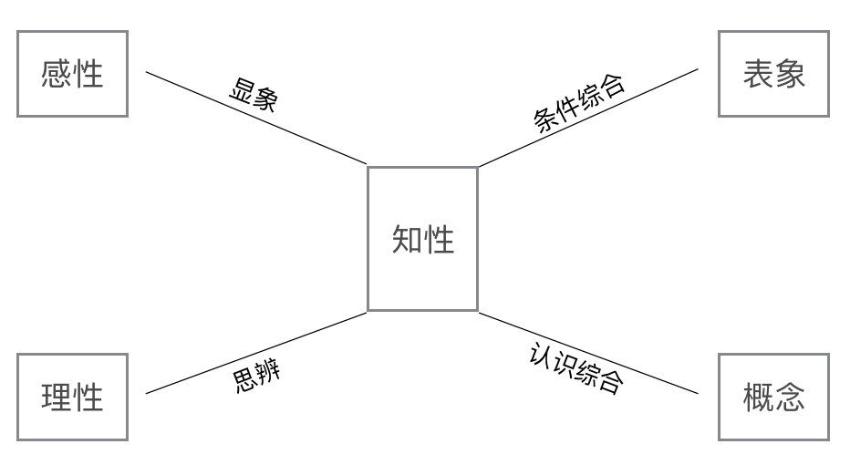
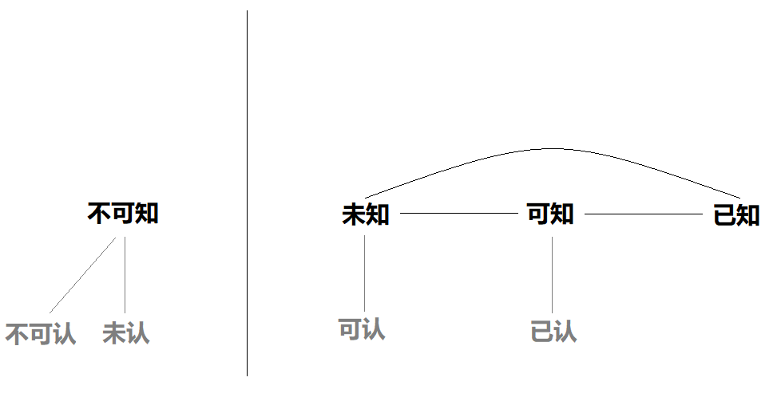

个人基本经验的基本认知
基本的意思就是只谈形式，不谈内容，因此在这所做一切只是名词的定义和归类以及思维的明晰和训练，没有任何新知。

尽可能早地完成思辨的大厦，然后才开始研究它的基础是否扎实，这是人类理性在思辨中的通常命运。但在这种情况下，各种各样的溢美之辞就被找出来，使我们因大厦的出色而感到安慰，或者还宁可拒绝这样一种迟到的、危险的检验。但是，在建造期间使我们摆脱任何担忧和疑虑并以表面上的缜密迎合我们的，就是这种东西。我们理性的工作的一大部分、也许是最大部分，就在于分析我们关于对象已经拥有的概念。这一工作给我们提供了大量的知识，这些知识虽然无非是对我们的概念中（尽管还是以模糊的方式）思维过的东西作出的澄清和阐明，但至少就形式而言仍被认为如同新的洞识，尽管它们就质料或者内容而言并没有扩展、而是仅仅解析了我们所拥有的概念。
——伊曼努尔·康德
2016.09.06
被动意识的认知缺陷
在我看来被动意识在其相对优越性的基础上有着认知的缺陷，有一个例子可以很好证明这点。我们可以试着想象有一根极细的线，当它一笔画出，我们一看便知它是一根线。而当我们在这条线上再划上一笔，线条被加粗后我们仍旧可以不假思索地说这也是一根线。我们之所以把加粗前和加粗后都同样置于“线”这个名词概念之下，是因为在我们的习惯性认知中线本有粗细之分，而无需刻意判断便可分辨出来，这是被动意识，也是它优越所在。那么问题出在哪里？让我们试着用笔在这条线上不停地划，线条随之加粗，我请问我们知道在确切的某个程度上不再把它形容为“线”，而是形容为“长方形”吗？我们都知道点、线、面、体，当线条被不断加粗后便可以形成一个面，但是怎样程度的粗细算是线，怎样程度的粗细算是面——我们并不能准确说出，它是一个主观概念，唯一知道的是在某个范围之内我们把它称作“线”，超过了这个范围我们把它称作“面”。
这就是我所说的认知缺陷，对感官的任何主观刺激在意识中必有所反映，而刺激量的多少决定了意识的被动还是主动。随着线的加粗（感官的不断刺激）主动意识被调动起来修正认知，正因如此有了点、线、面、体的概念区分，也因为意识从被动到主动的自动转换我们无法知晓在哪个固定的程度上做出区分，我们早已习惯听凭任之。
2016.09.08
体验与经验
- 感觉器官的印象（体验）
- 记忆的印象（经验）
“印象”一词我以为可以分两种：感觉器官的印象和记忆的印象，也可以说是体验与经验。体验是感觉器官与意识之间直接产生的，而经验则需经过潜意识、前意识的过滤才可以进入意识，由此我们可以清楚地看到纯粹的经验论对于实际言行的失败负有相当责任，不该仅仅依赖于它。与此同时，当我们极其自然地靠经验做事，不该就此忽略体验的重要性，体验是修正经验误差的最有力武器。
详细地说，意识与感觉器官的循环在这里应该是意识先有，感觉器官做出反应，然后又通过感觉器官将单独的直接感觉反馈给意识，这是体验。潜意识与感觉器官的关系则是感觉器官发出曾经有过这样的反应与其直接感觉，将这两种记忆一起带入潜意识之中，这是经验。举例说我用手拍桌子，是我意识先想着把手往下放拍桌子，然后我才实际地用手拍桌子，而反馈给我意识的仅仅只是痛觉与桌子本身的坚固（直接感觉），这就是体验。相对应的，感觉器官带入潜意识的则是曾经用手拍过这桌子的记忆，加上拍桌子的痛觉、桌子本身坚固的直接感觉的记忆，这就是经验。
我把体验与经验当作“格物致知”基础中的基础。
2016.09.09
因果恒常结合

在体验、经验的观念与意识三者之间的循环形成了因果关系的“恒常结合”。当我们已有印象的经验变为经验的观念（前意识），经验的观念通过意识的实践，意识的实践通过感官的体验，感官的体验在此进行两种反馈——通过意识直接确认或否定被实践的经验的观念，通过潜意识再次转化为经验。
事情到这里还没有结束，当意识通过直接感觉确认或否定原有的经验的观念以后，新的体验进入前意识世界与旧经验的观念碰撞，一个是因、一个是果，所谓“恒常结合”就是如此？其中细节或许还可以继续推敲，但大致思路应该就是这样。
为什么结合只在前意识世界进行？因为当我们举例子时都是简单的行为，我们看似能很快理清一切头绪，可当事件复杂化，意识的片面性问题、认知缺陷问题就会马上凸显出来，然后我们自己都会承认根本分不清因果，所以结合只在前意识世界。
2016.09.10
两种信

信可以为分为两种，一种是前意识感的心情的相信，一种是前意识念的信念，也可以暂时排出例外将它们形容为被动的相信，主动的信念。何谓信念？信念是有理由的相信，是心智理性的结果。当两个基本念对立起来需要抉择，在主动意识下得出的结果是全新的、独立的，可以依靠与原有念的一种，也可以是二者的融合，不变的是演变后的信念本身带上了理性权衡的结果和权衡的经过——理由。
信念是相信某个念、为什么相信这个念、这个念是什么的集合，而不仅仅只是相信。
信念是观念的一种，观念是念的一部分。
感与念可以区分，不可以独立。
2016.09.11
经验、经验的观念、思验
经验是单一的、多个的、记忆印象的，哪怕怎么类似也没有完全相同的经验。经验的观念是经验的一个集合，放弃了印象的作用，趋于理论化、抽象化，知或不知，对个人而言带有些许感性，对公众而言则是纯粹理性（这种纯粹理性有无意义则是另外一回事了）。
经验告诉你曾经这样做，经验的观念告诉你应该这样做，体验告诉你这样做对或不对，思验告诉你为什么要这样做。
经验通过思验才有经验的观念，不存在思验的观念和体验的观念，我以为“信”的三种情况和两种参考是理解意义上的很好参考。
体验短暂而强烈，经验持续而模糊，思验精确而不定。
前意识到意识的所有活动是思验、经验的，感觉器官到意识的所有活动是体验的，还有一点必需说明，正如昨天形容感和念一样你可以区分它们，你不可以孤立它们。
在我的思考中没有绝对的因或果，只有循环的存在，你可以区分当前的表象的因果，你不能孤立绝对的因或果。（我不确定这样想是对是错，姑且是个建议。当代电脑软件号称人工智能，可以这种人工智能只是因果，没有循环的存在就不配称作智能。）
对思验的考虑
什么是幻想？是类似于判断的一种过程，还是类似经验或观念？我以为它或许是某种“验”，思验？是众多具体循环过程的集合，诸如理性、因果、幻想、逻辑等等。
思验是纯粹的心理活动，无法被经验、体验。思验所表达的能被语言和文字表现出来，而思验本身则无法表现出来，至多只能通过几个特殊概念的字词来形容。这些字词在各个民族中广泛存在，足以说明思验的存在，足以证明它应与体验、经验并列在一起。
没有完全的思验，经验的观念中无法剔除“信”等感性的存在就是思验不完整的最佳证明。
守则第一条：可以区分，不可以孤立。
参考性建议第一条：放弃因果，只有循环。（循环不是孤立的几个联结环之间的循环，而是犹如神经网络般错综复杂的循环。）
为了快速转变思维，守则与建议的确立是必须的，而如果有一天它们被打破，我只会高兴自己的又一次否定，而不是坚持固守它们。
我所说的“被动反射”只与潜意识的记忆层面有关，与情结、本能无关。
2016.09.12
感性、知性、理性
如果没有被动意识人类活不到下一分钟，因此哪怕有认知的缺陷，它也是必不可少的。
主动意识的有限导致否定无法无限次地进行，这也确定了被动意识与主动意识的平衡，不至于相互侵蚀一空。
被动意识的不可排除证明主动意识的有限，主动意识的有限证明信念之中依旧存在被动意识的残余，即前意识感的残余，所以观念之中可以分出信念这个概念。现在的问题是，既然主动意识可以产生信念，那么被动意识凭借的又是什么？毫无疑问它也是前意识念的一种，可到底是哪一种，如何形容它？我至今未能解决这个问题，我怀疑它根本不是经验的观念，而是与其之外另有他物。
被动意识的认知缺陷进一步可以证明主动意识的有限，因为意识作为一个整体始终无法通过主动意识去真正弥补被动意识的这个缺陷。
推到不重建是怀疑，推到之前先新建是否定，否定需要现成的资本。
感性＝直观认识＝体验＝感觉器官到意识这条路
知性＝思想观念＝经验＝感觉器官到潜意识这条路
理性＝思维思考＝思验＝专指前意识到主动和主动规范意识之间
2016.09.13
- 没有什么是单独进行的，体验、经验必须同时进行，哪怕是最基本的生理反应。
- 思验包括了理性的推断和感性的判断，是否仅仅只有这二者还需考虑。
- 意识察觉到的是经验可察觉部分，不可察觉的经验在潜意识中，而不是在前意识中。
- 人能意识到的思验就是思验的全部。
- 精神世界的进步前景在于前意识的认知以及意识的缺陷的弥补，潜意识世界应该留到最后。
- 意识没有办法绕过前意识范围直接思验潜意识，而通过外部论证又逃脱不了意识本身的认知缺陷和潜意识的经验反射，因此在解决意识和前意识问题以前讨论潜意识是无用功，或者至少是片面的。
- 意识是随着人类个体的成长茁壮起来的，不是潜意识要与意识争夺精神空间，而是意识要与潜意识争夺精神空间。
- 感官到潜意识并不是条件的，仅仅只是反射，哪怕“被动”也是一个不准确的形容词。
2016.09.14
对立与矛盾
当体验、经验双方思验地交锋在一起，这便是矛盾的产生——矛盾的一方是体验的确认或否认，矛盾的另一方则是与体验相反观点的经验。人们太偏爱二元论，因为通常情况下人类的认知获取路径便只有这不完整的两条，人们太偏爱总结归一、打破矛盾，因为通常情况下这两条认知获取路径需要同时经过思验的抉择，而结果只能是一种，不花大力气便再难以改进的一种。
从矛盾角度说“信”的三种情况是需要修改的，我没有考虑到经验与体验的碰撞。但如果说经验或体验单独里面两种看似对立的概念也是矛盾，我以为是不合适的，因为它们同源，而同源意味着调和，意味着看似矛盾的双方来自同一观念——它们的对立仅仅只是概念的区分，而矛盾是孤立双方的对抗。
2016.09.15
没有逻辑矛盾才有对立

当我们从经验中提出一个命题，我们会很是自然而然地再从经验中提出一个相反的看法，一个命题两种看法，哪怕是同样出自经验看起来也似乎是矛盾，而不仅仅对立。我在这里考察的是逻辑意义上的矛盾，当我们说时间永恒，我们便涌现出时间不永恒的念头，这两种对时间的不同看法各自都有一大堆理论支撑，而没有一个是在当前体验中得到任何证明的，我们想起时间，仅仅只是经验地想起。就像我们说宇宙有限、无限一样，这不仅仅只是文字游戏地玩弄，它们的背后的的确确有着知性的不同支撑，而它们的终点则是理性地碰撞——矛盾又或对立又或其他？
只有经过经验逻辑矛盾的审查，才有经验的单个观念中复数概念的对立。如太极生阴阳，阴与阳便是对立的；如意识分主动被动，主动与被动便是对立的——这类概念没有逻辑的矛盾，因为我们知道双方无法完全排除任何一方（甚至是相辅相成的），而矛盾最终目的在于消除其中一方（将一个看法的特征单独加于本身观念之上），所以它们通过了逻辑矛盾的审查，变为只是概念区分的对立。
理性不仅仅只是逻辑，感性也不是没有逻辑，只有知性不存在逻辑。
2016.09.16
崇高与美最初步理解
崇高短暂的原因在于失去了体验与经验之间的差距，新的体验已经作为经验的一部分，因此再难以因为体验而崇高，除非经验本身拥有唤醒信念、执念的存在。可就算如此，那时的崇高也不再是眼前的某物，而是心中所想的某物。
美则完全不同，感官世界中体验美的强烈是由唤起心中原有经验的多少决定，体验有多少符合经验，它就能获得多少美感，从这个角度说唤醒个人幻想、梦想的经验将收获最强烈的美感体验。而当现有的美感体验和崇高一样化作经验，美感也不会马上随之消失，因为眼前的事物依旧是符合经验的美的，所以谈到美的时候我们总是说“审美”。
2016.09.17
存在的一点最初步理解
经验与体验同时赋予物质存在，物质才被承认存在，经验知性地赋予，体验感性地赋予。那么理性呢？理性在这里与存在概念无关，因为感性自己已经能够很好地工作，只有在感性无法清晰完全地感知，传入意识之中的内容断断续续、模糊不清时才需要理性地辅助，因此理性对于物质的存在来说至多是辅助性质的，更多时候是无关的。
理性看起来好像可有可无一般，照这个倾向我似乎应该大喊一声“去理性”，可事实上任何事物、任何概念不是你想去就去、说没有就没有的，就我现在而言，存在便是一个只能够模糊感知的对象，我不可避免地运用理性力量。当你知道某物存在，你无需运用理性，感性便能正常工作，可当你想要说明此物的存在，你必须运用理性。好在一个人不用时时刻刻说明什么，理性的缺失实在理所当然。
这样的理解也许还是大逆不道的，但只有当我们更深刻地认识到自己的不足才有可能弥补这些不足，一个连认识都做不到的人没有改进的可能。
2016.09.18
先验知性
什么是经验的经验？一个假设，经验的经验即由感性直接演变而来的知性，即先验知性。它是这样形成的：感官的直接感觉由意识感知到，意识将这个体验带入前意识，感性思验判断之后变成单纯体验的结论，最后前意识将这个结论带入潜意识黑幕之后，而我把这个前意识到潜意识到过程称之为先验知性。在我初步考察后我以为诸如存在、时间、空间等概念就是这样首先形成的，它们最早、也一直有那么一部分属于先验知性。
以为这样就算知道了先验，甚至已经掀开黑幕一角？完全错了，我是经验地晓得先验，我不可能先验地晓得先验，说知道先验那就是个笑话，说掀开黑幕更是无可救药的自大。问题依旧没有完全解决，换一句话说：是什么点亮了这个循环？在潜意识中经验与先验又是经过了怎样的转变？
一个暂时无法更好发明、更恰当应用的例子：我知道眼前的物体一重十斤，一个人走过来告诉我物体一比我从未见过的物体二重两斤，那么我仅凭这句话便知道了物体二重量是八斤。我是怎么知道的？
- 我知道十减二等于八，并能很自然地运用在这里
- 哪怕我从来没有见过物体二，我也能通过名词概念与物体产生认知
- 我相信这个人的话而不是选择费力寻找到物体二并称重它
- 两个毫无关系的物体经验能够通过另一个独立的感官经历被清楚地体验认知，经验并非仅能通过经验认知
2016.09.19
- 体验、经验、思验、本验、先验，这五个“验”构成了个人的认知框架。
- 时间、空间、存在三大概念在子宫里，也就是说在出生以前已经被先验完成，它们最早、也永远有一部分是先验的。
- 人类所能表象的空间已经有三个：二维、三维、四维，这一论断证明空间并非仅仅先验。
- 近现代科学对灵感与大脑的研究证明思验只有在尽可能少的受外界干扰的时候才能发挥作用（无论是我们行为地逃避干扰，还是大脑自身作用屏蔽干扰），日常交际生活我们大多靠着经验知识，即直接从前意识中提取，而不做任何过滤。
- 我昨天显然搞错了，经验的经验是本验而不是先验，但之后的话还是描述先验的，不是本验。昨天的一个问题应该随着本验被提出改为：在潜意识中先验与本验与经验经历了什么过程？
- 我很想说所有的前意识都是经验知识，但对先验的浅显理解让我无法肯定这个命题。
- 依旧支持思验中不仅仅只是理性，也包括了感性。
2016.09.20
先验的一点补充说明
潜意识先验的确立及其完善只在人类极早期（其定义应该以月为单位计算而不是以年为单位）乃至尚未出生的情况下，即意识无法做到很好利用经验知识的前提下——一旦意识的成长达到利用经验知识的地步，潜意识先验就已经完全确立下来，再无变更，剩下的只有思验融合之下的体验与经验，二者皆无法纯粹。当我们说到这里，有一个情况十分值得注意重视，就是当我们成长以后的健全的意识体验遭遇与潜意识先验完善处于相同场景的时候。这种情况十分常见，其实我们都不可能摆脱这些场景的网罗，想想存在、想想空间、想想时间，哪一样是我们可以放弃的，哪一样与先验完善的时候有本质上的不同？没有，因此先验之所以先验，本能之所以本能，是因为它们的的确确再重要没有，再常见没有（它们不是影响我们，可以说它们控制我们）。当它们凌驾于经验之上，一颗强大意志与清晰思验的心也无济于事，因为所以成人。我们可以把先验、把本能（在我看来同是一物）看作劣根、看作局限性的罪魁祸首，可不要忘记是它们最早教会我们什么是世界、什么是自己——你会因为自己的鼻子比狗的鼻子迟钝而割掉自己的鼻子吗？你会因为眼睛的近视而挖掉自己的眼珠吗？你不会，因为你知道这样的你是一个完整的人，少了任何一部分都是残缺。
这种意识体验与先验本身的呼应也许可以让我们一窥先验本身，可它是思验想象的，换句话说它依旧混入了经验，哪怕纯粹的体验我们也已经做不到了。先验的确时刻被我们利用，我们却无法因为它们被利用而回溯到它们本身，它们的认知始终是模糊的、抽象的。
先验的运用范围只是事物的表象，而非事物的本质。事物表象与事物本质的区别我们无法考察，但我们可以先向后退一步，转而询问自己个人表象与本质的区别，然后事情也许有部分进展——显然表象也属于本质，是本质的一部分，你甚至可以说表象是本质的唯一表现途径，因为那个名词本身字义已经把所有的表现包括在了一起，而任何本质想要展示出来只能“表现”。从这一角度看，说一切表象皆为荒谬是不正确的，我们只能说表象有其局限性，我们不能直接武断地说表象没有价值。
2016.09.21
心理治疗与潜意识之间的一个假设
当我在前意识和潜意识之间的那条线上写明“先验知性”的时候，我并没有意识到我将这条心理治疗的通道完全限定死了，也就是说前意识到潜意识如今只有一条路——先验知性，它在我们成长以后就已经完全封死了。我看见过的精神分析学家都说心理治疗的基础是建立在如下基础上的：前意识能够影响潜意识，潜意识能够因为意识的改变而改变。它的确能够改变，只不过这种改变在我们真正需要改变的时候早已无法改变了。那么心理治疗建立在什么基础上呢？我以为它建立在意识到前意识的作用强大于潜意识到前意识的作用，所以被治愈了。它是被战胜的、被征服的，可原先的作用自始至终徘徊在前意识之中，这也更能说明为什么心理治疗最容易复发，它的治疗必须经年累月地观察才能断定。这一假设可以暂时总结如下：
- 潜意识除先验知性以外无法被前意识改变。
- 先验知性在我们成长以后已经无法工作。
- 潜意识到前意识的经验无法消除，它如果希望不被意识察觉并表现出来只能让意识从外界有一个新的体验，作用地把它压倒，而且是持续性地压倒。
- 这一压倒一直到要到与意识体验一同产生的经验经过潜意识、前意识，最后重新被意识察觉，可即便如此最早的那个经验也不是被改变的，是被覆盖的。
- 心理治疗之所以长期是因为这一经验想要达到覆盖的地步，它的第一步就是让体验先行的习惯，而习惯从来不是短期能够形成的，尤其是修正性质的习惯（这时你需要用到的只能是主动规范意识）。
2016.09.22
先验、感、念、思验、意识（被动？），还有太多尚未被发掘。
先验的感
先验的感不是前意识感的全部，它就是我以前说的那个“没有陌生的感”，而之后感的变化则非先验所有。先验的感是单纯的、没有矛盾和纠缠，感的复杂是意识成长以后体验与经验碰撞的结果。这种碰撞引出的一个常见现象就是碰撞以后的感虽然依旧是没有陌生的感（它不可能诞生新品种的感），范围也没有脱离先验网罗，但是碰撞出现了新的组合，将原本互不干涉、互不矛盾的感以不同剂量放在一起，让你有错觉以为前所未有，而事实上你也的确无法理清这堆乱麻了。这一现况直接导致当我们幼年的时候虽然最是单纯，但随着年龄的增长心思越发繁复，情感也越发迷离不清，因为我们无法摆脱体验与经验的矛盾，它们总有碰撞的时候，无论是结合的一体，还是残存下来的碎片。
康德所说的内外感官我以为就是先验的前意识感和感觉器官，先验之与感关系重大，先验的利用很大一部分就是前意识感的使用。
感本于、源于先验，这是我所确信的。
先验的念
我依旧不能肯定有先验的念存在，因为我不知道潜意识中先验到底经历了什么。正如我们考察事物本质与表象一样，在这里我们也应该先退一步，试着提问经验的概念如何产生。当感觉器官通过体验、经验两条途径被认知，体验是实时的，而经验则是滞后的。短暂的体验过后我们开始检查便可发现在经验中其实也有着体验的感觉，只是这种感觉是抽象的、记忆的——经验无法做到再次让我们亲身体验，它只是做到让我们记得曾经有这种感觉。在这里我必须说记忆本身就是概念化的，它与我们所谓的思想、理论区别只在于广泛性、纠错性的多少。
先验与经验就这一形式而言我以为没有分别，因此我们可以看到当先验知性第一次将其带入潜意识，它不能做到再次让我们的感觉器官有一次完全相同的体验，甚至做不到让我们的意识能够再次主动地察觉到它。因此先验必须被概念化，体验时效性的局限迫使先验没有第二个选择。
如果我继续这样思考下去，那么潜意识也将变得和前意识在性质上没什么分别，它们都是一个大仓库（黑幕的仓库），而不是什么思想的发源、动力的基础，它仅仅只是一个不为我所知的储藏记忆、情结、本能的空间。而相应的，先验的念的产生是意识体验与思验单独结合的结果，在前意识中先验已经被概念化，并且留下了先验的感（即没有陌生的感、基础的感），只让先验的念通过先验知性进入潜意识，成为潜意识的第一块基石，也是在这块基石之上本验、经验得以成长、健全。
当我们事后试图在前意识中寻找先验的念，我们注定一无所获，因为前意识中根本没有了先验的念，先验的念早在潜意识中化为基石，当它再次浮现出来，唯有经验。
2016.09.23
真正的本能所在
如果我将先验放在原来本能的位置，那么不仅仅意味着代替了它的位置，更是代替了它原有的概念（又或浑然为一物），我等于在承认人类只能通过外界才有最初的认知，人类自身则是一无所有的——可是实际情况并非如此，我们看见当我们从精子卵子的结合开始，人类自身就在孕育着什么。我们是有了生理的基础，然后才开始对外界的认知，而不是经过外界认知才从某处虚无钻出人形。因此，我请问我们真正的本能是什么？它如果不是先验，它还能够是什么？在这里必须首先承认人类是有生理基础才有心理基础，而不是有了心理基础才有生理基础。如果说生理的基础是襁褓之中的孕育，心理的基础是先验的存在，那么从生理的基础进化出心理的基础（也就是我们通常描述的生命的赋予）——它的这个过程的具体内容就是真正的本能，而它准确的说并非传统意义上的心理、精神。
所以我们看见弗洛伊德在《超越快乐原则》中修正自己本能学说的方法和基础是建立在生物学上的，是从有机物和无机物的理论推论出生与死两个本能。
2016.09.24
经验、经验知识
记忆是加工的，经验是修正的，这两个名词都是主观的，它们的完成则是在潜意识中已经完成的。为什么我们的经验都是主观的？是的，一个很大的原因是因为经验是抽象的，所以它必须是主观的，可除此之外还有着更大的原因：经验在从潜意识中浮现出来以前必须经过先验、本验的修正，或者说补充、或者说取舍——因此它必然是主观的。
当经验经过这一系列修改终于进入前意识并希望得到意识察觉，它这时候还不是什么“知识”，因此唯一的通道是感性思验，与一切先验地被利用一样经验携带上了大量感的心情的相信感性思验地进入意识。意识经验地现实运用产生新的类似的联结的体验，它的第一客观判断与经验原有的主观印象和在了一起，这时候思验趋向理性，在不纯粹理性思验的推断之下经验得以成为经验知识（也就是以前说的经验的观念），并储藏在前意识中等待意识下一次的直接运用。
我们可以清楚看见经验第一次浮现在前意识中时，它受到先验、本验的绝大影响，所以它能够携带大量的感的心情的相信。可是当经验与体验实践结合之后它便不再是经验本身，转而成为不成熟的经验知识，它的再次运用也将是相对而言更多程度上的知识运用。在这里主观影响的确随之减弱，可仅仅只是减弱，要问能否无限减弱直至消失主观影响力这一问题，它和一切有限、无限问题一样无解，另外还有一个几乎可以断定的事实反对这一问题的无限可能性，那便是意识与思验并非无限，而意识和思验是客观修改的资本所在。
经验知识、可接受的经验在前意识中，潜意识中只有不被接受的经验、本验和先验，这一点和我二十一号做出的那个假设是相通的，它是一层层覆盖的。
古人云“格物致知”，显然已经把上述经验知识的过程早说明透彻了。
意识无法单个的、专注于某处的运用，它的运用是将我之前所提出的所有概念同时性的、无时无刻地运用，任何一个概念都做不到放弃。正因如此，意识在表面看来有着极其高度的统一性，一种声音一种行动，哪怕其自身的三个分类也只能是概念上区分，而做不到彼此划清界线（守则一）。综合与分析（或者类似意义的其他字眼），这正是我们思维所惯用的方法，正是我们意识所本有的功能。
格物致知是将原本综合的统一的意识、思维打散，它是分析的（正如我这些天所做的一样）。而当它打散、分析到一定程度的时候便需要新的综合，所以我们看见格物致知下一步是意诚心正，意诚心正就是分析之后再一次的综合，将原本综合而后分析的概念再次综合在新的分析成果的基础之上——然后我们才有尝试修身齐家的可能。
2016.09.25
幻想与联想
幻想能力脱胎于联想能力，联想能力脱胎于记忆。幻想能力是感性思验。
幻想的每一个事物都是现实所有的，但它通常给人不可思议的感觉，甚至是荒谬的感觉，幻想似乎通常意味着现实所没有，乃是纯粹人类伟大想象力的杰作。我必须说这是人类自大的一个典型表现，我们通常高估了自己思验的能力，而低估了现实与人类之间联结的程度。联想，或者说联结，在我们的认知偏差已成常见事实（比如我们经常将一个人的东西误以为另一个人的）的记忆系统里面是天然的繁殖地——当我们问为什么天空能放闪电而我们自己却无法释放闪电，当我们问为什么鸟能飞而马却不能飞，当我们问为什么那个朝代是这样习俗而这个朝代却是另一种习俗——我们的询问将这些原本看似毫不相干的事物联系在一起，然后便开始进一步在思验中实现自己的询问，这便是最简单的幻想，而一个专业幻想家绝非仅仅询问那么简单，等到幻想成品的出现甚至可能连他自己都不清楚具体的多种的联想。在这里询问便开始转向对潜意识的探索、对平日里毫不重视的前意识念的探索，我们甚至可以说对于每一个幻想家而言都是只针对自己的心理学家，都是杰出的心理探索者，可即便如此所有的探索依旧是经验的，而经验是有着现实表象基础的（无论是书本还是生活）。
最早的幻想也许可以追溯到远古时代，幻想也就是荣格笔下的原型，可即便是原型也有着现实基础与心理基础（记忆能力、联想能力）。当远古人对着日出日落生出膜拜心理，又或对着某种动物、某种植物生出图腾心理，他们便是将膜拜物与自己记忆中的某些事物联系在一起并认定了这种联系，然后才有膜拜与后来的原型概念——直到后来人们甚至已经淡忘了当初联系在一起的具体意义，而只记得联系本身和膜拜物（其性质与我们面对幻想感觉到惊异相同）。
幻想的另一个表现形式是猜测，或者说是假设，它们也属于幻想，也是我们询问的一个解决方案，趋于合理的、相对理性化的解决方案。可是无论是猜测，还是假设，它们都是感性思验，这意味着解决手段不是客观论证、也不是主观推断，它的解决首先是选择一种让我们更容易相信的经验的（而非经验知识）方案。
没有先验的幻想，可当我说幻想受控于现实的时候，我其实在说幻想受控于先验的表象的现实，因为幻想的记忆来源受控于先验，幻想的感觉来源最早产生先验。
2016.09.26
先验的存在就是隔阂
我把存在独立于空间、时间之外，因为在我看来空间、时间是世界性质的概念，而存在是个人性质的概念。什么是先验的存在？先验的存在就是在个人与世界之间划出一道界线，而不是融入世界，个人和世界的隔阂就是先验的存在。这个隔阂不仅仅只是个人意识的存在，当我们在为自己只能看到世界表象而不能看见世界本质而遗憾的时候，我们没能进一步庆幸在分清表象与本质的时候隔阂是鲜明的，我是存在的，而当世界在眼中只有本质的时候隔阂是没有的，我是不存在的——我即世界，世界即我。
放下十二种具体范畴不讨论，康德笔下的“范畴”就是隔阂的具体表现。
当初笛卡尔认为动物是机械，并进一步提出著名的“我思故我在”，是在他看来人类的思考（或者说思维、思验）是人类与世界相分离的唯一凭借，而他看不出动物是怎么思考的。相传他每次旅行都会随身携带一个小箱子，里面放着一个女机器人，之所以这般形影不离便是为了提醒自己与机械的区别，否则人类个体便是世界概念下的一小部分，人与机械一样是没有独立个体存在的。我妄测正因如此笛卡尔才一边强调实验科学，为了认知世界，而另一边强调唯心思考，为了个体存在。
说到底“世界”这个概念本身就是隔阂的最好证明，我们现在也许可以很坦然地说我们是世界的渺小一部分，可我们却言不由衷地将彼此区别对待，如果我们是世界本质上的一部分我们为什么还需要花大把精力凭借各种手段去认知它？并且这个认知还是建立在科学明显的进步的基础上的，我从没看见一个两千年以前的人就比一个现代人有智力上的差别——我看见的是科学领域日新月异，哲学领域日久长新。
2016.09.27
思验作为一个整体
幻想、想象、假设，看起来似乎都是同一个概念，但相互之间有着细节上的差别，其用途也有着根本性的不同。他们的相同之处在于都是调用经验的，都是受控于先验的，都是利用联想能力的。他们的不同之处在于：幻想是无视经验合理性的，是有了联想之后便可以重组成型，所重视的也只是进一步增多联想事物；想象是完全基于经验合理性的，联想在这里只是最基本的构造作用（类似于建筑工），所重视的是与经验记忆之下的现实最大程度上的复刻；假设不可避免的将经验合理性作为参考（它希望摆脱合理性的囚笼，但它的用途限制它必须更多地符合经验），联想则是其可能性的审阅工具，所重视的是在经验与联想之间得到一个尽可能完善的妥协方案。
无论幻想、想象、假设，它们在成品之前首先是在思验中形成了一个模型，这就是思验图型，而这个图型是思验作为一个整体形成的。思验作为一个整体，其表现是思验图型，而思验图型是经验知识产生的必需品。我在十九号的时候说思验只有在尽可能不受外界干扰的情况下才能产生，它所产生的就是思验图型，哪怕当前外界有着一模一样的某物，知识被发掘之前必然先下意识地忽略掉这个现实的事物，然后在思验中模拟出一个复刻的事物（思验图型）。如果我们发现思验的同时并没有将现实表象的事物忽略，那也一定是你的复刻被认为是不完备（无法进行下去），所以才需要进一步的客观观察。我不禁对此好奇，既然眼前已经有了一个现实的事物，为什么我们还需要在思想中重建它才可能有进一步地理解？
人的认知途径有两条，体验与经验，而唯一能够将两条认知途径结合在一起而不各行其事的只有一条途径，思验。我们的体验产生一个认识，我们的经验产生一个认识，这两种认识都是从外界来的，可当它们尝试结合，思验却做不到跳出这两条认知途径之外再次从外界得到认识。思验是纯粹心理的，它想将二者结合并进一步得到全新或革新的判断就只能借助于进一步得到新的认识，因此我们看到思验的解决方案就是在其内部重新复刻一个，然后它就无需计较外界认识，它自己就能内部认识了——这就是思验图型必需的原因所在。
康德的外感官和内感官可以和上述文字比较理解，但我必须说明内感官并不是思验图型，它是内感官的作用目标，正如外感官不代表外界认识一样。我依旧坚持以前的看法，内感官就是前意识感，外感官就是感觉器官，而感受与感觉则是其各自的形容词。
2016.09.28
思验的初步分析
思验是理性与感性，并且在经验、体验结合的前提下产生经验知识，在先天体验的前提下产生先验。
思验形式的分析
- 计算
- 数、图、维
- 逻辑
- 公理、辩证、循环
- 联想
- 类比、假设、幻想
- 认识
- 实质、表体、抽象
这是照着康德的“范畴”暂时性列出来的，我不认为这就是它的结论，因为康德的“范畴”目的在于限制可能性，而我的“形式”目的在于尽可能列举可能性。也许有观点认为当列举尽了可能性就等于是限制了可能性，但对此我还不敢确定它到底是圈养的、还是放养的，这是急需确认但也不是短时间能够证明的问题。
- 公理这个词或许还是不准确的，但一时间找不出更好的词来表达，因为严格的说并没有什么是可以与辩证相对应的，它本身所表达的就含有中庸之意。
- 公理不是真理，但在生活中却被当做真理运用，因此它不含有相容的意思，也没有反方的意思。而之所以使用公理不使用真理，是因为在我看来没有真理的，正如我认为没有绝对一样，公理已经是最大的肯定了。
- 哪怕先验也因辩证才得以表现，作为辩证的另一方——经验是必不可少的。
- 我没使用“想象”而选择使用“类比”，因为“类比”作为规律的一种显然范围更广大一些，并非所有固定联结都是想象的。
- 质、体、象，对此斟酌了好久，我以为这三个字所表达的认识是较为准确的。我绝不因追求文字的对称而牺牲本义，文字的优美在这里一无是处，文字的准确才是至上原则。
- 如果实质概念在思想上得不到进一步拓展，那么我们也许应该把视线转向科学，然后便可以发现所谓实质就是分子、原子、中子、质子、量子等等微观世界粒子，现实表体的改变不会对它们造成本身结构和数量上的影响。只是有一点还需要说明的是，哪怕从科学上说实质概念依旧没能做到完整解答，我们并没有晓得微观世界的一切。
- 我做不到跟上康德的思维，所以那个有关圈养还是放养的问题虽然看起来愚蠢但却是必须的，当这样尝试去做，我至少能够试着跟上他的某几个思考。
2016.09.29
直觉与知觉
直觉与知觉的定义牵涉到预判与判断、经验与经验知识。
闹钟为例。我今天晚上用手机设置了一个明天早上六点钟的闹钟，然后我便知道在明天早上的六点钟手机闹钟会把我叫醒，我是怎么知道的？很显然，我所知道的叫醒事件是一个预判，在当前时间还未达到指定时间之前我预先知道，所凭借的不是什么知识，而是经验。因为一直以来我所设定的闹钟都按照一直以来我所已知的经验发生，我的经验便从一开始的生疏到后来的习以为常，它并不需要成为什么知识，它只需要我们感性的认识（感性思验）每次都得出相同的结论，直到最后成为一个几乎定论的预判，而这便是直觉。
我知道的“叫醒事件”是一个预判的直觉，而我又如何做到用手机设置闹钟并指定时间的呢？使用手机也是一个日常行为，可它与上述预判却有着明显的区别，因为每一个使用手机的人必须经历一段学习的过程，而这个过程却不是我们经验本身所能做到的，它必须是经验知识。而且从另一方面说使用手机也不是什么预判行为，它是实时发生的事件，是在当前时间对当前所专注的事物的每步操作并予以明确清晰的认识，它是判断的。我的学习过程让经验再次与体验一起经历思验作为一个整体的内部认识并随后成为经验知识，然后才绕过思验直接让意识利用它（又或因体验失败再次回到上述过程），对这一经验知识反复利用最后成为具有习惯性公理的判断，这就是知觉。
这里所说的直觉和知觉都具有明确的认识，可惜并非每种场景之下都能有大量重复让你得出这样的明确认识，我们经常会遇到忐忑不安、犹豫不定的情况，而在这些情况下直觉与知觉却依旧存在，它们没有了这样清晰的认识又能以怎样的形式存在？我们忽略了前意识感的力量。直觉因为本身是经验的产物，而经验本身因为潜意识的过滤是带有明显的感的相信，相信通常会进一步演变为预判附带的冲动，这一预判的冲动等于是在我们决策摇摆的情况下加入了一记强心剂。而知觉因为经验知识的存在才能进一步演变为习惯性公理的判断，哪怕当前情况与你所认为的习惯性公理有出入，思验自身也会通过类比手段暂时盖过因意义出入所带来的质疑性质的不安（这样的暂时可能直到体验遭遇足够强烈反馈为止），类比能力在这里也与直觉的预判冲动一样是一记强心剂。这两种强心剂都是促使你按照直觉或知觉行事，哪怕所对应的直觉或知觉本身也是不成熟的。
一个小小的闹钟里面都能分出直觉和知觉，而不能单凭任何一方行事，因此第一守则在这里依旧是通行的。我想起了那个著名的“厌新症”，它原本只是针对原始人的，可对现代和历史的考察让我们不得不得出结论这是人类的通病，而因这个通病人类所已付出的代价早不是文字能承载的，由此或许可以一窥直觉与知觉的强度。
既然直觉与知觉强度如此之大，那么我们还应该再问一个问题，什么不是直觉或知觉，什么能脱离它们掌控？无论是先知的预判还是结果的判断都受控于先验，因此首先一点就是先验掌控直觉和知觉。另外无论是经验的实践还是经验知识的产生是受理性检验的，而理性只要被足够意识到便能够做到不受直觉和知觉掌控。最后直觉和知觉所下结论还受意志（也就是位于“意识金字塔”顶端的“主动规范意识”）影响，而我虽对意志理解不深却也知道当某个结论严重违反社会伦理或者个人主导思想的时候是能够做到强行控制的（除非另有他力颠覆这一控制，这也是很常见的）。
直观并非直觉，直观是器官的体验所带来对意识明显刺激所表现出来的客观感觉，直觉是从潜意识中浮现的经验所带来的大量感的相信所表现出来的主观感受。
在一般书籍中我们还将知觉、感知、直观这三个词混用在了一起，甚至将它们都应用于表示感觉器官的感性体验的认识，这是一个错误。直观是表达感觉客观性的名词，感知是表达意识理解感性体验认识的名词，而知觉与感觉器官的唯一联系是因为经验知识必须依赖于体验，并在今后的知觉实践中依赖于体验反馈与知识本身的符合（因为习惯性公理所附带的准确性我们才把这些名词混搅，而没有做出区分）。
2016.09.30
认识与知识浅述
在这里只对认识与知识做出最粗浅的看法，甚至不是哲学层次的理解，它唯一的用处只是预防今后的日记里面不把两个词混搅使用。
体验和经验本身是认识，而只有体验作为纯粹个体的认识经历思验整体才能形成先验知识，体验和经验结合在一起经历思验整体才能形成经验知识。我们可以看到无论是先验知识、还是经验知识，它们所必须经历的一个过程就是思验作为一个整体的过程，我已经无法考察先验知识的具体情况，因此在这里只能就经验知识对这个概念简述一番。
认识产生知识，知识进而产生认识，感觉器官的固有并不能阻碍体验认识的改变，从这个意义上说我们并不能确定此刻我们的体验和当初产生先验的体验是一样的，这也是在后天条件下企图了解先验的一大障碍。
就文字命题来说，认识与知识的区别可以简单地从以下几方面区分开来：
- 用词的肯定程度。对一个命题来说“是”、“不是”与“可能”、“好像”在理解上是完全不同的，知识的命题不该有任何含糊字眼，纵使辩证的相容也必然列出足以让人信服的清楚说明。而认识则不必严格服从这一原则，它所需要做到的只是让命题本身成立，不会自相矛盾即可。因此，你不可以说只有知识才会用词的肯定，你可以说只有认识才会用词模糊。
- 应用的广泛程度。命题服务于应用，无论认识命题，还是知识命题。比如看见一条线，我说“两点成一线”，这一知识命题应用的范围并不局限于当前眼中的这一条线，它适用于所有有关线概念的应用；而同一时间我说“这是一条线”，这一认识命题（即使它也一样是明确的）却有着极度狭隘的局限，它所唯一的应用只是说明眼前的图像就是一条线。
- 文义的指导作用。认识命题因其上述所言的局限性导致它只能够是对某事某物的一个结论性质的命题，而它的唯一指导作用只在于让你对这件事情或这个物体有一个大概的理解。知识命题则截然不同，它并不一定就是结论的描述，它可以向你展示一个完整的步骤，就好像有一个现场的教师亲自指点你的行为一样，知识命题在让你有更深层次理解的同时也会让你如何更有效率地行动。
- 时间的有效作用。认识命题无论是经验、还是体验，它获取认识的来源只是时间概念上的一点，脱离指定的时间它的有效性便开始减弱（除非像直觉的形成一样不停有新的填充进来），从怀疑论角度说甚至是荡然无存的。知识命题则没有这个顾虑，要么它是公理性质的，对现实来说时间有效性长期保持，要么它是命题本身已经限制好时间段的，在这一时间段里面有效性依旧得以保持。
2016.10.01
存在与不在
固有均是综合的，暂有均是分析的，存在有关固有都经不起思验分析将其改成暂有，存在有关暂有都经不起思验综合将其改成固有。所谓思验综合不是其他，就是思验整体；所谓思验分析不是其他，就是思验形式。
对于实质而言，事物实质概念本身的确是固有的，但当我们试图确定概念的形式（无论是字词的形容，还是行为的证明）它便是暂有的，因为形式代表着复数的分析内容。对于表体而言也有着相应的概念与形式，我们会发现固有和暂有与实质和表体之间并没有什么直接的特殊联系。
经典的综合通常会被笼统地归于时间和空间，除此以外便是存在本身，它们都是先验不假；经典的分析则因显象的繁多而有着无数经验、体验，是繁多本性让暂有在有了足够的说服力同时怀疑之声也不绝于耳，分析资本亦从此而来。正因如此，我可以大胆说：“存在的固有与暂有都只是认识，随所针对的事物的思验方法的改变而改变，问题只在存在的固有与暂有做为一种认识，它是产生知识的认识，还是知识产生的认识。”
当我们试图更深入一层看清已经显现在眼前的结论，我们会发现这其实是在描述经验的存在的某一部分。先验的存在只是隔阂的区分，那么经验后的存在呢？经验因其本性的繁杂，所以我不认为它和先验一样一个概念一种应用，它是有着多种形式、多种功能的。当固有和暂有成为一种认识，先验的存在并不能做到直接用这样的字眼去形容事物，因此这一认识必然是后天形成的，这一认识也必然是属于体验或者经验的，我就此是否能说经验的存在做为一种经验知识的一种形式就是存在与不在？
并非暂有就只是不在，暂有也有其存在，无论时间概念还是空间概念都有最小的单位容纳其存在；并非固有就只是存在，固有也有其不在，无论体验认识还是经验认识都有现实的忽略怀疑其不在。暂有和固有只能是存在和不在作为一种经验知识形式产生的认识，而存在和不在才是脱胎自先验的存在的存在。
2016.10.02
日常经验因果关系认知浅述
我们做不到在结果发生之前便把原因发现，也只有在结果发生以后原因才得以成立（虽然从实际考虑做为原因身份的事物必然在结果之前就已经存在，但它做为原因的身份是只有在结果成立以后才拥有的），因此原因与结果的察觉是认识，而只有在证实这种因果联结的常规性、必然性以后才能被称为知识，即公理。
从时间概念上说因果不可能出自同一时间，所以原因必然只能是经验或者经验的衍生物，结果则可能是体验或者比原因经验在“时间线”上更接近我们当前时间的经验。让我们暂时把原因设为经验 A，结果设为体验或经验 B，然后开始进一步叙述。原因 A 与结果 B 就内容本身与其他一切认知一样是在思验中得到发展的，它们主要所依赖的不是联想的类比、不是逻辑的循环，而是联想的假设，因为因果关系是我们人类附加上去的，而不是原因 A 或者结果 B 本身所拥有的，无论就实质或者表体乃至抽象而言都是如此。在我看来因果关系是在原因 A 和结果 B 之外另设一“念”，然后才利用它将二者结合起来，它的确也运用理性能力，但正如之前描述假设时候所说的一样，因果关系也只是一个对复数联想事物的解答具体联想关系的合理性妥协方案。
那么因果关系所谓的另设一“念”，这个“念”究竟是什么呢？你不能简单的把它形容为一种纯粹的思验能力，因为因果关系所产生的“念”是一种认识，它是一种由经验知识产生的有关原因 A 和结果 B 之间具体关系的认识，而作为这个认识的根本的经验知识则是脱离具体因果内容的因果律本身（一个公理的运用不一定也是公理，因为部分公理是本身已经脱离了显象的钳制而成为钳制显象认知的工具，所以我们看到因果律作为一个公理，它的运用则只能采用假设的方式得以表现）。
如果还要继续问下去，请问因果律作为经验知识，它的来源认识又在哪里？就和前几天日记的困惑一样，我只能用同样的笼统认识回答：“因果律的来源认识来自先验，来自从我们出生开始身边人一直以来的行为习惯、语言习惯，我们甚至自己教育的时候也最爱说因为什么所以什么──我分不清具体某个最早的来源，我只能说循环，正如守则二所说一般。”
如果我们不承认因果律的应用是在原因 A 和结果 B 本身之外建立新的认识将其联结，那末我们就需要承认另外一个更难以接受的事实，那就是原因 A 和结果 B 本身就有因果的认识，当前因已定后果必至，即我们常说的“命运”，而这个“命运”哪怕不是人有意去算也是潜意识算，所谓“天算”。
2016.10.03
本验假设
本验之所以难以确定，甚至难以理解，是因为它夹在先验与经验之间，而没有任何清晰界线或知识告诉我们它们的区别在哪里。我们晓得经验，因为它最容易被认识；我们晓得先验，因为只要我们仔细慎思总能察觉到它的无处不在；可是有那么一个思考说经验与先验之中还有着本验的中介，我们怎么可能在黑幕的潜意识世界里指定它的方位。至少我做不到这点，在黑幕问题上钻牛角尖是一条死路，可如果不钻这个牛角尖的话那么即使我们有了一个全新的看似可信的结论，它到底也只是假设，而不是真实。
就像外界体验所得先验携带的感被留在前意识中成为前意识感，只有纯粹的先验认识进入潜意识成为先验知识一样，经验所携带的感也被留在潜意识中成为潜意识的感，只有纯粹的经验认识部分进入前意识，而这个潜意识感不是其他，就是名为情结的本验。
我们被认为当先验第一次从体验中产生它是感性认识到的，可我们是否设想过当先验被利用的时候它也是感性认识到的？我们被认为经验的知性是理性独一无二的产物而体验却被长期认为是暂时的、无关紧要的，可我们是否设想过经验与体验的来源是相同的，为什么它们却有这样的差别，难道不是经验被认识的之前已经和先验一样将感单独留存在某处，然后才浮现出来被认为知性？在心理学中有精神分裂的专业表述，它就像是我们自我意识之外还有着独立的潜伏意识一样，因此心理学家将“情结”归类给潜意识并形容它是记忆的碎片、片断的人格，可是是否应该再问一句为什么潜意识中记忆会将碎片地演变为它物，甚至形成自己的人格？我在许多这样的疑问中寻找答案，然后我便作出这个假设，把它理解成潜意识的感。
我这样假设还有一个论点支持，就是任何知识的运用都逃不开感的支持，因为运用代表着在选择中排除其他一切而只是选择一点，它本身就是一种信念。先验知识是潜意识的底层，它的利用在我看来和经验知识性质上是没有区别的，因此它必然有着潜意识感（即本验、情结）的存在做为支持，然后才能在无数经验记忆中选择并且填充进入自己的内容。
2016.10.04
分析的理性
我们好奇于什么是理性，是控制我们冲动的能力，又或我们智慧的代言……等等一系列通常是赞美的言辞将理性奉为人类独有的产物，甚至有专门的词语将理性与我们所处的世界挂钩，所谓“理性时代”。可究竟什么是理性，是知识产生理性，还是理性产生知识？在我看来是知性产生了理性，更准确说是经验知性产生思验的理性。
在解释理性之前必须首先区分知识与知性，知识是概念，知性是能力，它们根本不是同一个事物，甚至相互之间到底有着什么联系也需要在最后才能得到一个看似可信的解释。
想对理性有所解释还是需要从先验说起，是体验认识第一次通过思验产生了先验，并在前意识中分为先验的感和先验的念，可是当我们说通过思验的时候，思验是作为一个什么形态产生先验的呢？我从未说清，可我敢说此时的思验根本没有什么形式，它只能是一个整体，是以综合整体的形态产生了综合整体概念的先验，换句话说正因为思验此时不存在形式的分析所以先验也从未被直接分析。这一情况直到经验产生也没有任何改变，思验至始至终都是一个整体，可等到经验认识真的开始在前意识中不停浮现，经验知性将不得不迫使思验进一步改善。你无法通过一个整体的思验单独面对无数的经验认识，你也无法通过一个整体的思验单独面对无数的体验认识，因此经验知性让你有了选择的可能，是经验知性试图将思验剖开，让思验不再只是整体，而是可以部分的存在──形式分析的存在。
可这一切与理性又有什么关系呢？如果没有特殊的个案，大概人们都不会否认理性能力的特征就是分析，并且是知性地对某事某物具有针对性的分析，正因如此它属于思验，在我看来也是思验分析的同义词。当世界的认识开始涌入，你不能只是和先验一样笼统地归结在一起，你需要去分析它、认知它，理性所做所为便是如此。
此时再回到之前知识与知性的问题，答案似乎也已经明确：是经验知性产生思验理性，是思验理性产生经验知识，知性与知识之间相隔着名为理性的思验能力，并无时不刻受控于名为感性的思验能力。
2016.10.05
先验牢笼之外
九月八号的日记里我第一次将认识划分为经验和体验，并就此强调体验的重要性，可体验到底有多少重要，我并未给出一个直观的例子说明，直到今天我以为自己已经找到一个强有力的例子证明体验的重要及其强有力足以脱离先验，它是先验之母，因此它有可能在先验牢笼之外。
想想我们对以太的认识，那时候的我们坚信以太无所不在，充斥宇宙每一个角落，也是电磁波得以传输的凭借。为什么会有这样的认识？从亚里士多德开始到十九世纪的物理学家，以太虽然内容上改头换脸多次可其概念从来没变？因为我们生活的环境就是充斥着各种物质，马德堡半球的著名实验虽然在十七世纪已经做出，可那只是被认为证明了大气气压，在我们的先验中从来没有“真空”的存在，即没有没有物质的空间的存在。所以经验告诉我们哪怕无法指证，天空之上、宇宙之中也必然充斥着名为以太的存在，它是各种波的传播介质。可是科学实验终究不会受控于经验，而科学实验也最终告诉我们以太是不存在的，哪怕我们生活的空间里、哪怕我们的先验里没有真空概念，真空也的的确确存在的，无论光波、还是电磁波也不需以太才能传播，宇宙的真空世界之中它也能传播。
数学上的四维概念也是一个有趣的例子，哪怕将四维的方程式或者将软件模拟出来的四维在三维的投影放在眼前，也不是所有人都能理解看懂（至少我就看不懂），可并没有一个人去怀疑它的存在，因为我们知道四维已经被证明了，即便在我们的先验中没有它的存在我们依旧能靠思验去感知它的存在──这一感知的认识来源不是其他，正是靠数学体验。
当我们因此自豪于体验的伟大，庆幸于终于有先验牢笼之外的存在，我们也不该就此轻视了这两个看似矛盾的交锋的另一方，就是先验对我们每一个人无时不刻的影响。依旧拿以太当例子，即使在今天我们虽然已经可以毫不犹豫地将以太斥为歪论，可我们却已经在不知情地情况下继承了许多以太概念，我们的确放弃了作为物质存在的以太，我们从没能放弃作为精神存在的以太──我们再一次断言不存在绝对空虚意义上的真空。
2016.10.06
日常情感浅述
情的循环：言行→感觉器官→潜意识记忆→前意识感/念→感性思验→主动意识→感觉器官→言行……
- 在潜意识中记忆首先剥离感的部分，然后才被本验修改补正（对于本验的具体修改内容依旧无法确定，我不能说我意识之所好就是本验之所好，所以我只能确定一点，它的确用于修改补正）。
- 前意识念中包括着体验认识、经验认识、经验知识，它们在单独对象上不一定被一起运用，须由实情而定。
- 前意识经验认识只是经验知性的认识，即与对象的行为记忆，而不携带任何原本的感。
- 当感试图有所表达只能通过感性思验，它无法通过一个整体的思验去表达，因此感情至始至终都是主观冲动的产物。
- 循环让情有进一步发展的可能（无论发展是否随心所欲），一个言行的作用力必然被今后言行所利用，从局部看它的确是因果的，可如果进一步深究那么只有那个初见的情才是唯一的因，而只有死亡才是唯一的果，这样的因果并无任何意义。
感的组成：先验的基本感+前意识的组合感+体验认识的感+经验认识+思验整体的判断。
- 在前意识中感是被过去的经历重新组合起来的，它逃不出先验的基本感范围，可是它从内容上说也再不等于先验的基本感。
- 体验认识的感通常因触觉而起，又或因生理反应而起。
- 对单独对象的感的深刻和纯粹是思验整体判断的证明，正因为有思验将各方整合在一起，然后才有前后如一、从始至终的感（其判断结果就是感性思验最优先的凭借）。而从另一方面叙述，对任何单独对象的感之所以能够深刻和纯粹必然不是因为当前与对象在一起的任何一个时刻，而是相互分离的时候才有可能，只有在那时思验才能够暂时发下感性更多地从思验整体考虑对象。
- 感的矛盾和繁杂是多方面感和经验认识参与其中的证明，当对立的多方面有了细节的差异便开始出入不齐，直到成为所谓“无法言喻”的感，这代表着对具体对象无法结论、即无法快速思验整体判断（有待进一步现实发展以便加重体验和经验砝码）的证明。
- 一个妄图列举所有基本感和组合感的人注定没有任何成果，因为我们与对象的感之所以无法确定就是因为我们把握不住具体的感，所以只要这一现实情况不被改善那么这一成果也就不会真正被人类自身发掘出来。
2016.10.07
分析的理性再论
回顾四号的日记，我发现自己依旧没能将这个所谓“分析的理性”真正说清，当我说“无法通过一个整体的思验单独面对无数认识”的时候，问题就在于为什么一个整体的思验统觉无法应对一个整体的世界，难道迄今为止我们不是都这样渡过的吗？我们必须承认一点，那就是理性没有任何对应的显象存在（哪怕是做为衍生物的思验形式也不是对应显象的），做为与显象相对应的只有感性，那么既然感性单独就能与显象对应，理性又为什么存在？而到最后我们的问题还可以转化成既然经验知性已经能够产生思验理性并间接产生经验知识，为什么它们不能单独产生而只能受控于感性？一切问题均指向感性以及思验整体概念，看起来我似乎将二者混用在一起，以至于让这三个问题这般模糊不清。
- 错误一：体验认识的确产生了先验，但这一产生不是通过思验整体，是通过思验感性──它是以感性产生先验，而此时的确没能有任何形式分析，所以后一句话是正确的。
- 错误二：需要澄清的是如今的思验整体在思验理性产生之前是不存在的，而在此之前只有思验感性，但由于此刻只有思验感性，说它是一个整体也未尝有错，只是太过容易误解。
- 错误三：当经验知性以经验认识的形式浮现，它不存在迫使或者不迫使的意思。试想有关思验整体的概念（九月二十七号日记），当我们有所认知的时候必须在内部重塑一个思验图型（这是一个不可避免的心理行为）且是对外部事物表体的复刻──那么在这里就需要问一个再简单不过的问题，请问有任何表体事物是只能做为一个整体而不能拆分的吗？答案是明显的，所以思验图型的复刻也是明显的，它要不营造一个虚构的整体然后在里面加入各种零件，要不虚构各种零件然后搭建一个整体，而这一切不是只有思验感性的思验整体能够单独完成的。
- 错误四：所以不是经验知性让你有选择的可能，而是事物表体的现实让你有拆分的可能。所以不是经验知性剖开你的思验，而是对事物表体的不可避免的心理的复刻剖开你的思验，正如事物表体也一样能被行为剖开。
结论：
- 做为只有思验感性时候的思验整体的分化，思验理性让思验图型的复刻有完善的可能，而且思验理性的分化并非从思验感性本身中划分一部分，它是因事物表体形式而起的思验形式（这本身也是另一种意义上复刻），所以不针对任何事物表体，只针对形式。
- 思验理性是因为事物表体形式而起，而事物表体形式的表现又只能通过经验认识，因此说经验知性产生思验理性并非无稽之谈，之所以受控于思验感性是因为思验整体本身原有的就是思验感性──你无法脱离思验感性的认知重塑你的思验整体。
2016.10.08
- 个人无意识只是一个形容词，本身并无明确的意义，所以用“经验知性”作为代替，这样前意识到潜意识之间便是经验知性与先验知性的过程了。
- 同样的，“被动反射”这个名词本身也是模糊不清的意义，它甚至不是一个科学名词，因此用“体验知性”来代替。这样的设置是在认知一途上都从体验开始，只不过将体验分成了感性和知性两条道路（最终形成体验认识和经验认识）。“体验知性”是个一直以来我所困惑的概念，但此刻我以为这样的安置是能够准确描述出它的意义的。
- 也许会有观点认为知性不存在感情，也就是说我的那个本验假设在我设立“体验知性”的时候已经被推翻，但我以为这是无稽之谈，没有任何证据能够说明知性是不可以包含感情记忆的。
- 意识是一切认识、思验的表现，前意识念则是认识与知识的根据地，念与感的组成在昨天日记中已经说明。
- 知识不可能直接运用，所以它必须首先转化为一种认识，然后让意识表现出来。
- 我们必须还要再问一个问题，就是当我们清楚了实质和表体作为形式的概念，对于看似个体存在的人是表体还是实质？一个很显然的现况就是我们把意识、甚至包括前意识都当作了表体，而把潜意识当作实质，因此我们是否可以进一步言明哪怕我们个人也只是表体，意识的深究是表体的深究，意识的感知是表体的感知，在对外界的实质和表体的隔阂被确立以后人类自身也存在着隔阂？
- 如果这一隔阂是不存在的，那么就又分出两种情况：一种情况是表体和实质被人自身作为一个整体打通了，我们在二者之间有了一条通道可以也值得去探索，而不像以前一样仅仅如天堑一般隔阂；另一种情况是人作为一个整体根本不存在表体和实质的形式，它犹如思验一般只有综合与分析，因为表体和实质的区分到底也只是思验形式的认识上的一种区分，人类自身则不包括在认识范围中。
- 如果这一隔阂也同样在人类自身上发生，那么不可避免的，当代的我们也同样会遭遇先贤一样的处境──陷入怀疑论、不可知论的漩涡之中无法自拔。这个承认如果单独考虑是更多程度上的感性考虑，不是我们的理性不能下这个结论，而是我们的感性不愿意下这个结论。即使在一方面我们已经形成了公认的潜意识概念，在另一方面我们也已经承认外界不仅仅只是表体，可是当这个两个结论合在一起同时应用在人类身上，我们便开始犹豫不决。
- 有一点是我所坚持的，那就是表体和实质概念是思验形式上的认识的分支概念，而且在此时的我们已经无法真正追溯到先验的隔阂概念的具体内容，所以也就是说我们认识的表体和实质概念是经验概念，而不是先验概念。经验的一大特征就是多面，你可以从一个经验出发得出一个结论，从另一个经验出发又可以得出完全不同的结论，即使你的论题是相同。在这里同样的情况依旧发生，我们把表体和实质问题转向我们自身，我们自身便存在着角度问题：我们可以说我们的生理和言行就是表体，我们的心理就是实质；我们也可以说我们时刻浮现的思绪就是表体，我们深藏的限制认知的某物就是实质；我们甚至可以在意识空间中将主动意识认为是表体，将被动意识认为是实质……这些认识命题并没有任何错误，问题只在我们将角度（又或者说范围）规范在哪一个程度。
- 有了这一认识的澄清之后我们再假设将这个问题上升到先验的程度，即不考虑任何经验，然后真正的问题才浮现在我们眼前，三种结果也真正成为可能。可惜我必须承认自己无法解答这个问题，至少我现在无法解答，所以我是秉着把这个问题当做训诫的态度提出并将其谨慎地放置在自己的“主动规范意识”之中。
2016.10.09
名词归类的不成熟尝试
体验=体验知性+体验感性+体验认识
思验=思验形式+思验整体=思验感性+思验理性
经验=经验记忆+经验认识+经验知识+经验知识产生的认识
本验=情结=经验记忆的感情记忆+先验被利用的认识
先验=先验认识=早期体验认识+只有思验感性的思验整体+先验知性
认识=体验认识+经验认识+经验知识产生的认识+先验认识
知识=先验知识
感性=体验感性+思验感性+本验感性
知性=体验知性+经验知性+先验知性
理性=思验理性+主动规范意识
客观=感想=体验认识
直观=感觉=体验感性
主观=感知=体验知性
直觉=感受=思验感性
知觉=经验知识+思验形式
2016.10.10
经验神话、先验神话、体验神话
所谓神话乃是神灵至高的故事，在历史中出现了许许多多被塑造的神灵、被叠加的神灵，而所有的神灵无一例外都是人类膜拜的对象，也无一例外被人工创造出自己独特的经历、自己独特的造型，乃至自己独特的口径一致的思想宣言。可是有三样根本的概念从未被具现过，它们被膜拜过、被当武器鼓吹过，只是从来没有自己的一座雕像又或一座寺庙，甚至连它们本义也从来没有被统一过──它们只是用三个名词当做代表，名为：经验、先验、体验。
我们最早崇拜的是经验，因为它最有效率，一旦形成了经验认识便可熟练于某项专注的事物，当文明的建立、社会分工的确立便开始经验地运用在显象的每一个事物之中，一直到我们自以为解释了一切事物并将其归纳为几个极为精炼的要素。这是公共的经验知识的起源，也是哲学的产生，无论哪个文明自古便有一套独立的解释世界的理论，不考虑优劣，它们都是经验的，因为我们所重视的、所崇拜的就是经验──这便是“唯知”。而后我们进一步的探索便开始遇到难题，因为我们发现显象的一切都已经被用某种理论解释干净了，我们在自由中发现了一个莫大的囚笼，由所崇拜的经验织就的知识囚笼。想打破这个囚笼必须重新找到囚笼之外的某物，也就是经验之外的某物，我们开始认为显象的一切并不包括我们自身，当我们将一切事物用理论知识规定并没有就此考虑到“心灵”本质的存在。所以我们把经验之外的某物命名为“先验”，又或者说“先天”（与此对应的经验的另一个名词是“后天”），因为只有它先于经验然后才能是经验之外的存在。先验不像经验一样有着明显的表现，所以我们是以猜想的态度来认识它，我们猜想先验是每个人类固有的，并因此将其与“心”这个特殊的名词挂钩。从先验开始，因为文明的进一步发展和细分，它再也不是每个人所公有的知识，而是成为特权的知识，成为少数人的探索目标。从历史上看我们的确用“先验论”打破了经验的知识囚笼，可因为这一猜想从根本上说就是无法表现出来的，而且又成为社会职责中极少数几乎互不通信的人的专利，所以先验再也不是像当初崇拜经验一样一种文明一种理论，而是一个人一套理论。这是知识的第一次大爆炸（虽然从时间概念上细看并没有那么剧烈），先验的繁多猜想甚至开始让原本的经验知识理论也产生了质疑并对当前文明的所有人产生潜因默化的深刻影响，这个现象得一直持续到近现代，我们还用专有的名词概括它，所谓“唯心”。当繁多演变为争论不休，当其中哪怕最是艰深奥妙的理论也被后来者提出的新理论肆意抨击却无法给出一个让他哑口无言的现实证据，我们便再一次把原本崇拜的先验也看成了囚笼并试图打破，而这一次的眼光不是在先验之先再设某物，而是调转眼光重新审视经验。我们意识到经验并非直接依靠生理，我们意识到感觉器官的感性认识与思想当中知性的经验认识有所不同，所以我们将二者割离，提出“体验”概念并强调实验的重要性。这是近代科学的发源，我们不必依赖经验，我们不必依赖先验，我们将体验认为纯粹客观理性，因为它的每一个话都有着现实的无法反驳的证据，因为它的每一句话哪怕有后来者试图推翻也不再是凭借猜想，依旧是靠现实的无法反驳的证据──我们转向崇拜体验并自豪地宣称“唯物”。
2016.10.11
纯粹经验的经验知识
纯粹经验的经验知识，这个概念本身就来自一个现在看起来是错误的论断，即忽略了经验认识溯源根本是来自体验知性、以及经验认识与体验认识结合的论断，而它自己错误的论断是将经验认识的本源看作浑然一物，脱离体验种种显象的纠缠，直指根本。这一论断将感性与知性互相隔离，又或将感性看作知性的附庸，从这个意义上可以说所有的形而上学都是纯粹经验的经验知识。
纯粹经验的经验知识试图对且只针对事物形式、乃至思验形式的分析进行再次分析，也就是说它不再以现实表体为对象，而是以纯粹的形式为对象，哪怕它的目的也在于解释表体世界可它的行为基础本身已经脱离表体对象，它企图在表体中找到形式的基础上进一步从形式中发掘实质（或者换个名词，真理）。
这种探索绝非无用功，甚至即使我们现在可以说它的基础是错误的，我们也不能说它的成果就是胡言，因为在这种探索的成果的基础上我们才有了如今的成果。它是唯心时代重心所在，也许会有疑惑认为纯粹经验的经验知识难道不是以经验为重心的吗，但必须指明的是这种经验知识虽然凭借着经验，可它是以形式以及它所认为的实质为对象的——相对应的，在经验崇拜的时代所针对的对象才是现实表体的经验本身。在这里重要的不是凭借什么，而是对象是什么，为了什么，服务什么。
2016.10.12
先验认识
如果认为潜意识中的先验是某种知识，甚至是某种伟大知识，这一定是自我的野心的幻想，因为虽然先验极其重要、无法脱离，可它从来不是什么终极答案又或绝对真理，甚至它连“知识”二字都算不上。先验只可能是认识，也自始至终都是认识，因为知性所产生的是认识、感性所产生的也是认识，它根本没有可能是知识。知识的产生是在理性之后，是在理性与感性、综合与分析的思验整体、思验形式被确立之后才诞生，我们之所以至今依旧能够朦胧地知觉到先验的单一，是因为先验就是最早的认识，我们又怎能指望一种认识本身以外还有下属的复数认识？所以一个被认为的先验认识只能够有一种用途，诸如空间、时间、存在，它们在先验上的应用莫不如是。
还要再指明一点，并非我们看到又或忆起某种公共的知识就是知识，这其实是老生常谈的话题，我们不能指望一种知识未经反复思验并体验实践就能够成为自己所拥有的知识，哪怕这个知识以文字的形式或者其他形式通过任何认知方法，它在我们个人看来依旧只是认识，区别只在是体验认识还是经验认识。
对知识范围的大幅度缩小并不影响知识运用的重要性，在我看来反而突出了知识的重要，当我们一心想在先验中寻找答案，哪怕是用来消除经验的繁复的一个可以原则依靠的答案，在我看来也只是逃避行为。先验从来不是一个可以终极的目标，它的作用也不在探索终极，它的原则性在于环境的唯一，所以它是基础，也是常识──只是这种常识我们太过习以为常，反而不知如何描述，仅此而已。而在确定了这一切之后我们之所以依旧千辛万苦探索先验，也不是为了其他，只是在我们有本可依以后不至于在经验的汪洋中迷失一切，而知道我们究竟是谁，我们心灵的灯塔又从何方亮起──我们可以驶向远方，也可以回归故乡。
2016.10.13
理从何来
- 在企图回答这个问题之前我们需要反过来先问一个问题，什么情况下不需要理性存在？当清楚了先验只是认识，且是感性认识，然后我们便知道了哪怕没有体验的知性与经验记忆我们依旧可以单独完成一个循环，由感性与知性。这一循环可以简述如下：体验感性→思验感性→体验认识→先验知性→先验认识→先验感性→经验认识→思验感性→体验感性。（所谓的“先验感性”原本是用来本验之上的，因为没有了经验记忆的存在所以直接运用在经验认识之上。经验认识在这里也只能作为“经过先验认识的可运用的认识”这一文字意思理解，而不是我们通常所说的知性的经验。）
- 可我们终究是有记忆的，并因此赋予体验和经验知性的能力（如果这个能力的表述最终被视为歪论，那么也一定有相同目的的能力的全新表述作为代替），一个完整的简单的统觉之下就此有了以几何倍数增长的认识，而一个认识只要被认识到它便永远的在你前意识中──正如两次日记所说的一样，理性就是在这个环境下产生的，当知性、感性的综合与分析做不到让思验在综合的基础上有所分析，理性便是唯一的答案。
- 理性不等于理，我们的确看起来让理性有了一个答案，但我们并未因此让理也有一个答案。自宋以来理学盛行，我未敢想有所超越，事实上我只是给出了一个虽然以不同文字描述但却形式上类似的答案，只有更加拙劣的可能没有超越的可能。（理性是一种能力，理是一种认知。）
- 理不是凭空出现的，既然它是一种认知，那么在认知图型上必然有其根源。同时我们虽然至今无法肯定是理性产生了理，还是理产生了理性，但是理性与理密不可分的关系是已经可以确立的，因此我们可以试着跟随理性的脚步来探查理的踪迹。我们知道哪怕理性没有被确立以前认知依旧进行着，在这个时候认知有两种（体验认识和先验认识），分清了已有的认知先后关系之后便只剩下一种──先验认识。先验认识是基础的基础、是常识的常识，如今的我们哪怕将它看作是一切认知的根源也并不过分，所以我们初步的假设是可以这样说的：理从先验来。
- 事情从来不是这样简单，正如知性的拓展最终发展到理性的产生一样，我们只说理从先验来也是不合时宜的，当我们深入到理性的产生的那种记忆纷呈、显象缤纷却无法给出形式分析下的统一的时候，我们知道理虽从先验来，但也只是一小块再平常没有的基石而已。正如经验记忆来自体验知性却只受到被本验利用的先验认识的某部分的间接修饰一样，在理性从知性来的历程中真正的理之源泉应该是经验认识。
- 仅仅如此判断还是不够的，我们可以因为思验形式的确立而确立理性从知性来，可我们不该就此遗忘理性与知识的关系，进而忽略理与知识的关系。并非仅仅理性产生知识，理也不可能等于知识，但是知识的双面来源是可以套入理的来源的，因为作为理性能力的理的认知不是固有不变的某种究极知识，如果希望从理性方面更有效率地分析理必须还有一个更加直观明确的来源，和知识一样，自体验认识来。
- 理从何来？理自以先验认识为常识的经验认识来，理自以生理器官为感觉的体验认识来，我们甚至还可以武断地进一步假设理是认知的原则性认知，理是认知的判断规范性认知。
2016.10.14
环境适应问题
我们都知道一个人如果换一个环境他都需要有一段适应期，无论是生理还是心理，而有待回答的问题就是在这段适应期内人到底做了什么？如果我重启旧日关于心理假设的话题并推翻它，那么至少从心理上说可以得到一个最简单也最让人愉悦的答案，我们可以说体验认识至始至终都在通过先验知性影响先验认识，而我们所需要做的唯一一件事情就是换一个我们从来没有去过的地方让体验得到全新的认识，让先验从未认识即可。至于之所以有适应期的时间长度则只是因为认识的缓慢，所以我们才需要在一定时间内让先验对当前环境有一个基本认识，简称适应。
这样的回答虽然看起来很有道理，可我依旧固执地以为它是一个错误的答案，问题就出来这个“从来没有去过的地方”，我自问有什么地方的什么环境是我从来没有体验过的吗？自然在这世上我没有体验过的环境有太多太多，但是任何一个环境哪怕有任何异常我们都会给自己物理上模拟一个与所生存的环境相同的环境，然后才踏入那个异常环境所在的地方。这样的描述是模糊不清的，所以暂时转到生理上来解释它是个很好的选择。从生理上说人类自身都有一个适合生存的标准环境，超出了标准所规定的限度那么就不是人有新的体验的问题，而是人开始走向死亡的问题（人之所以从古代开始执迷死亡，从某个角度说也是因为死亡是真正的全新体验）。无论是从温度、湿度、空气、气压等生存所必须的指标考虑，我们通常意义上的换一个环境其实都是在同一个生存所适宜的环境里面，而真正改变的只不过是周围的人和物，是地方性质的改变。我们做不到今天是在一个阳光沙滩的温度下，明天就在火山岩浆中洗澡；我们做不到今天呼吸氧气，明天就呼吸二氧化碳……正因为生理所需求的环境是从一开始就不变的，所以我们的基础体验也从一开始就不变的，哪怕在太空中、哪怕在海底深处我们也都是借助了工具（诸如宇航服、潜水服等等）为自己营造一个环境然后才踏入对我们来说异常的环境的地方。
我们从一开始就为自己认识到了一个生命的环境，只要这个生命持续不变那么我们的先验认识也是持续不变，至少从今天的科技程度上说我们是无法改变的。回到最早的话题，我们如今已经否定了“环境”这个大前提，取而代之的是同一生存的环境的不同地方性质的前提，所以在我看来那个心理假设依旧是正确的，我们是在用经验认识一层层覆盖、增添，而这才是真正的适应。
2016.10.15
思验感性整体的理念
我从来没有说清作为只有思验感性的思验整体所产生出来的是什么，而此时此刻我以为是时候对它有一个大致地描述，在我看来这个没有思验理性存在的思验整体所产生的概念物恰恰就是后来被我们称之为“理念”的存在。理念的一切形容和定义都符合思验感性整体的特征，它之所以永远无法得到完美地具现（这一事实是思验感性虽然有整体思维却无法做到独立形式分析，思验理性虽然有形式分析却无法独立整体思维的最好证明），是因为思验理性做为后来者已经不可能单独思验整体它的存在，思验理性所做一切都是在以知性经验和感性体验的基础上无止尽地分解它，事实上如果不考虑我们赋予“理念”的特殊定义只是直观地思考字义，我们便能够知道理念本身就是一个被无数“念”集合在一起的理——这个理在感性思验整体的时候虽然已经存在，可直到思验理性产生以后才被真正分析认知，所以我们把它称之为“理念”，而不是“感念”。
还有一个问题急需厘清，关于先验和理念。感性思验整体时期所产生的绝非仅仅我们名为理念的存在，它更加有名的产生物是我们名为先验的存在，那么在这里就需要问这两个概念到底是不是同一物，如果不是的话会有什么关系？我认为二者绝非一物，理念的产生是在先验之后、思验理性之前的这段空档期，也就是说感性思验整体首先间接地产生了先验而后才直接地产生理念，等到思验理性的萌芽理念作为本身概念的存在已经完成。
理念是思验理性产生的直接目的，可它并非思验理性所拥有，也不是理，恰恰相反思验理性的一切行为成果可以归于理念名下，理也是分解理念的首要原则，甚至可以说思验理性之所以能脱离经验和体验认识而开始有形式的认识也是因为它最初的目标就在于解读理念。
2016.10.16
内容、形式、整体
此处区分有别与对三种认识的区分（实质、表体、幻象），它其实是对三种认识的任何一种认识的区分的再次区分，也就是说它是对于任一对象的认知组成部分的区分（只要在我们认知中对象具有主观或客观唯一存在的特性，无论实质、表体、幻象），我们想要对任何对象有一个无论对错但至少是清晰明确的认知，内容、形式、整体缺一不可。在三者之间形成了一个几乎可以定论的良性循环，察觉到这个循环的存在并试图分析它、运用它可以说有益无害。
- 内容凭借的是认识，包括体验感性认识、经验知性认识、知识知性认识三种。可以发现内容的认识并非认识概念下所隶属的全部，这是因为内容做为对象认知组成部分之一它首要的基础就是能够随时随地被主动认识到，而不是曾经被认识到，又或被利用认识到。
- 形式凭借的是知识，而知识凭借的是理性、知性、感性三者的结合，感性和知性做为内容的本有物并非形式所专用（以对象的对象为形式所使用），所以形式真正的重点在于理性。有错觉十分容易以为形式本身就是对内容的综合，因为毕竟知识对于认识来说是归纳性质的，但必须清楚这种归纳是建立在对认识的分析基础上的，我们是发现了分析的形式上的同一，而归纳仅仅只是后来者的作用而已，并非行为意义本身。
- 整体凭借的是意识，包括被动意识、主动意识、主动规范意识三种。所谓整体，其实就是将内容与形式融合在一起，只是这种融合不是简单的相互明确对应的关系的融合，而是交错的，理论上说你现有认知下有多少种认识和知识就有多少种倍数的融合可能。可因为意识的有限毕竟无法完全一一尝试，因此从实际出发整体的融合虽然是交错的，但也是规律的，哪怕我们常说“融会贯通”那也只是有归属的融合（这时候才用到形式的归纳作用，或者更高层次的理念作为归属依据）。
说到整体很容易便联想到思验整体，可在这里我却将其归于意识所有，这是因为无论是整体的融合、还是思验的运用它们所真正依靠的是意识。我并不介意把现在的整体改名为思验整体，可我不知道除此以外是否还有其他整体存在，所以我暂时保守地只将其称为整体（同样的情况也发生在内容、形式上）。
2016.10.17
理念感性
一个明显的事实就是当我们判断现实中某个对象是否符合理念的时候，我们在根据什么判断？理念从来不是什么条条框框的规律，也不存在文字或口头语言上的明确要求，但是只要我们略加观察、甚至不需要思考就能够判断出对象是否符合我们心中的理念。无论知性、还是理性，它们的产物都是能够用言辞明确表达的（诸如经验、知识），哪怕如何晦涩不明至少自己本人是有明确目标的（以现实对象为目标或者以经验对象为目标），可理念完全不同，它只是心中那一点无法言喻的概念（作为后天思验，我们只能感受它），我们不知道它到底是什么，但对于它不是什么却知之甚详──在我们心中没有什么现实对象是符合理念的，因为没有什么能将心理完美地具现，那心中描绘的美丽从来都是随现实的美丽进一步无止尽地增长。在认识到这点以后，也许可以进一步下判断说理念不仅仅只是从思验感性整体中产生，它本身也是感性的一部分。
理念感性的确立不仅仅是将理性隔离其外而且也将知性隔离其外，它们只能作为理念感性的发展和诠释，而不能作为理念来源之一，理念来源只能是体验感性和思验感性整体。我们可以就此设想理念与先验的原初形态的类似，虽然没有经过先验知性但是在此之前它与理念本身（不包括后来知性与理性的诠释理解）应该比较之下有着更大程度上的相同（我们不能说二者就同是一物，没有证据证明这点，先验原初形态依旧是个无法确认的概念，除非我们能够将生理变化与心理变化一一对应起来，并由此证明先验产生前的生理与先验产生后的生理对于大脑认知而言没有变化）。从理念开始探讨先验，虽然依旧不是在探讨先验本身但是在目前已有的成果中它与先验最为贴近，而且本身也是真正能够被随时随地意识到的整体。
2016.10.18
以己度人
一己之道以为等同他人之道，乃至以为等同人类之道，这是所有认知的原罪，可是如果我们不认同这个原罪那么我们本身的认知就无法成立，在一己之道以外别无他道，认知也就不存在价值了。由此可见，虽然有太多认知是不可以等同他道的，但在认清原罪的同时也必须承认在原罪的认知中也的确存在着相同之处，而那就是我们认知的发源，只是我们后来将发源以为根基所在，应用于一切认知的基础，最后发展到“以己度人”的荒谬。
这个相同与不同之处界线的划分并非任何人所能独立完成，可如果不是独立完成那么也最终只能沦为公理的存在，甚至只能狭隘地说它是时代性质的公理，所以从古到今我们都没能摆脱“以己度人”，在卷帙浩繁之中只有零星一点可以侧面反映出相同的存在。我每次试图突破什么都在规劝自己不要把范围超出个人以外，一个认为自己在内容之上发现了形式、然后便以为形式就是公有的人也只不过是在荒山上淘金，注定没有收获。
表体与表体的隔阂
不仅仅只是表体与实质的隔阂，己道的独立是表体与表体的隔阂，在我看来那就是“我”思想上的存在，也是经验存在的一种。先验的存在是做不到表体相互之间隔阂的，如果说形式本身还有着那么一些因为先验的成分在其中而看似公有，内容、以及用内容表达的形式与整体就根本不存在公有，它是经验存在的，也是后天的隔阂。
- 先验存在
- 表体与实质的隔阂
- 经验存在
- 表体与表体的隔阂
- 存在与不在的定性（定义与性质）
2016.10.19
手段
- 表现
- 分析
- 综合
- 融合
除内容、形式、整体以外还缺少一样必需的循环概念，那就是联结三者循环的循环过程，我将其称之为“手段”。所谓手段，即为实现对象目标采取的方法措施，这样的定义则将分析、综合，乃至表现和交错式的融合都归纳其中。试举一例说明，有太多人将意识和思维混搅在一起，如果意识的定义和这里意识的定义相差无几、思维的定义也被包括在这里的思验定义当中（而不是另造名目用于扩大两个概念的内容范围），那么我们就绝不会说意识的运用就是思验的运用、意识也就不等于思验，我们只会说意识的表现可以通过思验的表现来表现，但意识的表现不仅仅只是思验的表现──最终我们会得出结论，意识的一种手段是思验。
试问融合与综合的区别，其实也是简单，仅凭文字字义与实际思考对号入座即可发现区别所在。融合是将复数对象归纳为一物，也就是说对象不再有作为个体的存在，既然融为一物那么彼此之间就再也无法独立（正如人之以整体存在，无法割离，即循环守则一）。综合则不然，虽然它的作用也是将复数对象归纳为一物，但这个归纳是联合的，你既可合为一物亦可分为多物，在综合之中哪怕是一物也可以有着复数的独立（正如世界的定义，我们可以将一切称呼为实质、表体、幻象三种，但是我们也可以在其中看见无数独立的存在）。
我早已划分感性与知性对应意识与潜意识的两种认知，可我毕竟没能够更深层次考虑到与其密切相关、急待解决的一个问题，那就是感性与知性的认知来源是否在接触到感性与知性之前先划分成两部分然后分别被认知，如果不是，那么这一认知来源到底如何被认知的？在我看来认知来源在被认知之前已经划分成两部分是毫无根据的，来源本身就是一个作为整体的表现（表体的表象），在被认知之前它既非整体、亦非内容，而仅仅只是一种手段，以“表现”来表现。整体转变为内容等同于基本认识过程，一个整体的表现之所以能够有复数内容认识是因为认识能力就不是单一的，所以最初产生的内容认识也不可能是单一的。回到原本的问题，认知来源自始自终就是单一的，感性与知性是以两种认识能力面对同一个来源产生了不同的认识，而非另有先天能力或生理功能划分表现然后被不同认识（除知识以外，外界表体的表象也会因认识能力的不同而有不同的认识）。
2016.10.20
固定范围、相对范围
就范围自身而言也可以按内容、形式、整体划分，所以“范围”这两个字代表的详细意义是“对象的或内容或形式或整体范围”，也就是说范围二字的运用是其所运用得出的命题已经划分出对这三个循环组成概念的区分，而没有必要再次重新另立名目强调。范围需要强调的不是自身含义，而是在自身含义的已经区分了内容、形式、整体的基础上划出其对应的具体概念所包含的界线，即划出一个可供思考、实践的范围。针对这个范围，我把它分为两种，固定范围和相对范围。
固定范围是无可置疑的知识理论的基石所在，一个被已经限定了的再无可变更可能的范围是只有知识理论观点上的改变，而不会脱离或修改知识理论的大前提，除非推翻整个知识理论又或在知识理论以外另立一个新的知识理论。这种固定范围并非如我们想象的那般罕见，哪怕放弃心理学上至今依旧争议不断的概念不谈，对科学的任一科目的划分就是在规定一个固定的范围，往后对这个科目的研究也就只是在这个固定范围以内研究，对其他科目范围内的成果是只有借鉴的可能，不会成为当前科目自身的研究成果。
相对范围比之固定范围更加广泛的充斥在我们的生活中，在八号日记的提问里面其实已经描述了一部分相对范围的特征，即相对范围是由经验认识和体验认识产生的。可它的产生并非仅仅如此简单，经验或体验的繁复自然可以带来不同角度的认识进而产生不同的相对范围，但是一个知识理论的运用对象也是可以有着相对范围，所以在我看来相对范围是产生自一切认识的（认识角度的不同范围也随之不同，所以是相对的）。正如我们可以将认知组成部分分为内容、形式、整体一样，知识本身的范围是已经固定了的（认知组成），但是当我们试图将这个知识运用到具体的对象上，知识的大前提也就会随之转变成对象认识的大前提，而这两个大前提是不可能恒定不变的（如果恒定不变等于承认绝对必然的存在，即从任何认识角度出发范围都是固定的）。
2016.10.21
何为验
何为验？有所认识即为验。认识虽然不像知识一样看似高深奥妙，但是它包括“验”所需要拥有的一切，哪怕放弃知识的“高瞻远瞩”仅凭认识亦可称验。认识（又或者说验）包括以下几部分：
- 有所觉。认识起于觉，是运用生理基础有所察觉，然后才在心理开始认识。
- 有所证。认识在于证，是运用现有认知有所证明，然后才在心理有所认识。
- 有所用。认识终于用，是运用心理认识有所应用，然后才在生理转为反映。
认识即验，认识即认知的根本，所以以验为认知框架大概不至于太过差错。因为认识分类的不同验也跟着不同，所以可以分出体验、经验、先验、本验、思验五种。其中思验乍看之下并非认识，但这是一个惯性思维的误解，我在一开始就将思验分为整体和形式，它在我眼中也就不单单只是一个认识那么简单。可从实际出发，思验从来只是一个整体的（不管感性、理性），它并非先天即有形式的存在（无法与现实任何对象对应的存在），而是后天学习养成的，乃至于它是个人理性长期熟练运用以后才自我明晰的复数概念。思验的形式到底是个人的区分，思验的整体却是人类所公有，而整体到内容的转变（思验的用）已经被判断是认识，所以思验也是认识，无需在意思验的证据是否仅仅认识。
当我们将经验的依据发展到先验的预设，又从先验的预设发展到体验的统一，最后我们会将体验的统一归结于生理的同一，因此认识起于觉，觉在这里就等于生理的同一──有什么生理作为基础那就会有什么觉（生理在这里也就不仅仅只是感觉器官那么简单）。
2016.10.22
时间先后
在先验之先，亦即个人一切认识之前时间就是本身实在的，它的实在证明从我们人类角度看来便只有考古、历史、天文等意义上的证明，并给予它们先后顺序上的排列，可是在证明或给予先后之前时间的实在只是演绎的直观（此处直观就不是人的直观了）。这一直观并非独立于演绎的对象，亦非附加于演绎的对象，而仅仅只是演绎的对象自身所表现出来的变化。放弃变化的直观，那么演绎也就是不成立的，至少从“我”的角度看是可以想象放弃自身认知的演绎，一个没有变化的演绎则是“我”无法形容、甚至无法想象的。
是先验确定下了先后关系并冠以“时间”之名（将演绎直观形容为先后，而非演绎直观本身就有先后的认识），它将一切认识排序先后（而后我们才能提出因果，以及更进一步的循环假设），我们通常将时间比喻为一条线就是因为在先验的时间认识中就是先后的认识，而在数学中也只有“线”概念最能表现时间概念的特征。
正因为有着先验时间的认识所以我们如今的现实的概念才不仅仅局限于当前（又或根本没有当前等时间概念），而是将过去、乃至未来的一切已知与未知表体表象都包括在其中，从这方面说经验存在的认识（如对暂有和固有的认识）也是在先验时间的基础上才得以发展。
后天思考中我们能够放弃一切体验、经验认识单独知觉到时间，可我们做不到在一切体验、经验认识中放弃时间单独认识，这是因为先验时间的认识在后天已经转化成思验形式的一部分，也就是说后天思考让先验时间自身及其一切思验形式脱离了时间先后的掌控，在这里时间概念并非仅仅时间认识。认识的抽象化、知识化、理性化是基础如时间也无法摆脱的，思验形式的时间是数的一部分并发展到近代时间多维度的证明（在时间上从线到面的改变，证明对错与否则是另一回事，但我们的确是这样试着去思考，这是可以肯定的）。
2016.10.23
空间陈列
如果说先验时间的认识是演绎先后的排序，那么先验空间的认识就是对一切表体从内容、形式、整体、手段四个方面考虑都具有完备可循环的陈列。这种具体考虑是后天的，但是所考虑的表体对象的陈列则是自认知开始就统一的（统一和同一就好比综合和融合的区别），因表体陈列的统一而具有空间单独的可回溯性，进而推断空间的完备可循环，所以先验空间就是表体的陈列。
如果说先验和经验的存在被认为是精神世界的陈列，那么先验和经验的空间就一定会被认为是现实世界的陈列，我们确定下了隔阂从已经转变为认识的精神对象出发主观意识到的存在，我们也应该就此确定表体从已经转变为知识的现实对象出发直观意识到的空间。
一切陈列都是针对个人而言的，如时间一般放弃个人认知空间也依旧实在，但是二者终究有所区别。因为时间仅仅只是演绎变化的直观，可是空间却是演绎对象的本体直观，而无需在意演绎与否、变化与否，也就是说一个演绎的对象无需在意演绎是否进行，而只需要确立下其本体直观的实在。为此我们既可以想象放弃自身认知的演绎直观对象，一个没有变化的演绎直观对象也是可以想象与形容的。
2016.10.24
条件回溯与追溯
无条件意味着一个再也没有任何其他条件附加其上的条件，它虽然同时意味着条件的必然，可它依旧也只是一个单一的条件。将无条件以为根本和基础，然后有条件（复数条件附加其上的条件）才得以成立，正因如此我们提出从理性工作的理论角度说可以从任一有条件的命题一直分解到无条件的命题，即绝对真理的存在，一个切实、再无任何隐喻模糊视听的绝对真理。并非什么思想理论告诉我这种行为的错误，而是迄今为止无数大哲的努力告诉我这样寻求绝对的方式是错误的，因此至今没有一个绝对被认知到。
对绝对尝试的失败并不能就此武断否定“无条件”的存在，而是只能说这种回溯式的分析手段是不可行的，它所陷入倒不是什么永久的循环轮回，而是一个无底的理性剖析的深渊。除此以外还有怀疑论者提出条件本身就是需要经过人类认知才被认知的，因此条件并非条件本身而只是以条件为模板的认识或知识（正如对表体而言，认知的是表体的表象，而不是表体本身），这也是我们无法用完全压倒性辩驳证据以排除的（从认知转为理知是现有的最强有力的驳斥）。
回溯式的分析如果是不可行的，那么还能够有一种追溯式的分析手段，即从任一尽可能不以其他条件命题为前提的有条件命题（从实际考虑我们不可能以无条件命题开始）向上追溯到尽可能多的以条件命题为前提序列的有条件命题，直到无可附加更多的有条件命题。这种方式理论所得也是一种绝对，与无条件绝对对应，有条件的绝对是一种综合的绝对，以它为中心可以向下（而非向上）衍生无数条件命题。理论的可行并不能代表实际的可行，这也不是一条前人从未走过的崭新大道，它所碰到的是与上述无条件绝对探求一样的失败事实，它们同时忽略了认知的局限与有限，将认知以为无穷，更因此忽略随着探索的进一步发展实际参照证据最终缺失的事实。
条件序列整体并不是单单用条件的回溯与追溯所能够形容的，可以说条件序列整体因为除它所已经包含其中的条件以外再也没有其他条件隶属，所以条件序列作为一个整体也同时是一个绝对。我们可以因为对条件回溯与追溯尝试的失败而驳斥条件序列整体本身存在的荒谬，但是我们无法就此回避一切理性活动所作所为就是在营造一个条件序列整体，而因为它的遥不可及还将其名为“理念”。
2016.10.25
反论怀疑
- 我到底承认自己的否定是以怀疑为基础的，所以当我第一次看到怀疑的时候虽然强烈反驳其荒谬却从未将之弃如敝履，而是不自觉地执迷其中无法自拔。
- 此处怀疑是康德反论的怀疑，而不是通常意义上怀疑论的怀疑。
- 所谓反论即矛盾的冲突具体所在或者对立的区分具体所在，不是意味着正反的任何一方。我们自然可以就此将其置放在理性之上（康德为营造纯粹理性以规定先验幻相所以只将其置放在理性之上），但是将反论的范围扩大到一切认知亦未尝不可。
- 一个严酷的事实是当发现了反论的任何一方有新的认识，它必将打倒或者占据矛盾、对立的另一方，因为它在我们看来是更进一步的认识而以前已有的认识则只是陈旧的，未必适用于当前思考角度的。这一情况直到正反的另一方也有了更新的认识并循环上述过程，更新在这里就意味着在已有的一切认识基础之上通过认知所可能的来源有新的认识，并且这个新认识是原来所未有的、具有驳斥和批判概念的。
- 双方的较量不是有新认识就可以马上有优势的存在，它是需要一个过程用以将片面的认识转化为更大范围的认识并与原有正反双方任何一方认识在范围概念上契合，而在应用的契合之后还需要进一步的辩证，辩证第一步就是怀疑。
- 这样的怀疑符合我原来否定的规定，即在新得资本的情况下推到原有资本并重建资本，而不是像怀疑论的怀疑一样在固有资本的情况下推到原有资本而不重建任何资本。
黑幕重谈
- 对先验时间、空间、存在的列举并没有违反潜意识黑幕概念的规定，因为列举出来的仅仅只是先验的形式，而没有任何先验内容。试问具体先后是什么、陈列是什么、隔阂是什么……这些问题我并不能回答，因为它们都是内容的，而我之所以不能回答就是因为处在黑幕之中。
- 与之相反，任何体验认识和经验认识、乃至衍生出来的经验知识我们都能找到它们至少是有隶属关系的整体、形式、内容的任何一方，并且能够通过检验现实对象相互对应。
- 黑幕在这里就像舞台的帷幕一样，所遮拦的是具体的内容认识，为此我们再也做不到用现实对象和黑幕之后的一切认识对应起来并得以修正、检验。而从另一方面说，当我们靠近黑幕，黑幕能够凸显出其背后认识的轮廓，并从轮廓中展现一个整体，因此潜意识的确可以被描述、形容，只是一切描述、形容都是黑幕的形式、整体，没有内容。
- 理念在这里是一个特殊的概念，它有着黑幕的一切特征，可在我看来它并不属于潜意识，还需要进一步考察。
2016.10.26
有限无限
有关有限和无限的任何判断是认知的第二原罪，正如“以己度人”一样无法避免，也同样是谬误幻相之根源。它的无法避免在于一切认知命题首先必须确定的是判断对象的范围，而在范围之中进一步确认对象数量的有限无限以及对象图型、对象广延的有限无限，有此基础然后命题得以成立。它的谬误幻相在于认知所已经确定下的固定范围中的对象依旧可以有相对的认识，也就是说有关对象任何方面有限无限的判断哪怕是在一个已固定的范围之中也可以有相对的判断，并且已得判断会随着相对的思考角度的不同而不同（所体现出来的就是昨天说的反论怀疑）。
例如在一个已经确立下的条件序列整体中，可以因为条件序列已经有了一个固定的范围并因此不会涉及其他范围外的条件就此说它是有限的，也可以因为条件序列实际理性剖析的无穷以及对绝对存在的驳斥而说它是无限的——这两种认识不会因为任何一种的正确合理性而摧毁另一种认识的正确合理性，可即使它们都是正确合理的却也不得不承认它们同样是没有意义的、没有利用价值的。它们可以作为一种认识永远留存下来，可这样的有限无限因为没有了可辩证的对象而失去了一切价值，仅仅无法避免的幻相而已。
试图对此原罪有所挽回无可避免的就是确立下个人当前认知的辩证对象，而在确定之后也不可遗忘“以己度人”并未因为辩证对象的确定同样得到避免，因为辩证对象到底也是个人的确定，至多也只是公理应用的确定。一个值得尝试的解决办法就是不提出任何具体解决办法，所需要做的一切只是明确提出形式上的认知原罪以及形式上的规避可能，仅此足矣。
在日常用语中，一切名词本义都是形式的，只有加上量词形容的名词才是内容。
2016.10.27
矛盾对立与时间空间
我们随时随地都可以设想矛盾的双方在不同地点的同一时间段内同时出现并且相容，又或在同一地点的不同时间段内同时出现并且相容。矛盾作为纯然思验逻辑的形式因此只能以公理的形态出现（在实际生活中空间、时间被先天被规定，所以矛盾能以公理形式存在），因为矛盾是需要有空间和时间的前提限制（即限制在同一地点和同一时间，又或从命题根本上忽略空间、时间），没有了这两个条件的限制矛盾就会在任何命题中都不成立，正因如此矛盾与先验无关，是后天理性形成的。
对立与矛盾不同，对立无须考虑空间时间因素，一个相隔万里又或间隔千年的双方对立命题也是能够成立的，对立命题所需要考虑的仅仅只是对立的双方不存在彼此融合的关系，至多只是以综合的形式表现出来。故此我以为对立是先验的，因为它超越了空间时间的范围限制，而它具体的表现形式就是存在隔阂的认识。
如果试图将矛盾上升到先验层次，也就是将矛盾直接应用在空间或者时间，它所表现出来的也就不是通常意义上的逻辑矛盾，而是演变成融合意义上的同一。这种先验统觉的同一本身已将一切矛盾排除，而只是以一个融合的同一整体表现单一的认识，不存在任何后天所认识到的冲突（此时矛盾所接收到的只是正反双方其中的一面，也可以粗略地说它是由感性构成的一面，至于另外一面，由知性构成的那一面并未被认识，更没有思验形式逻辑地推敲分析）。
也只有在先验的同一空间时间的内部统一前提下才能够分化出存在隔阂的对立（虽然是共享着同一时间线和同一空间维，可在其内部也有先后排序体现出的统一和陈列排序体现出的统一），从后天逻辑矛盾看即已经通过了矛盾地检验。
2016.10.28
知性无感
一切知性及其相关认识不存在感，知性的认识（也就是经验认识）可以对感造成相当程度的影响，但是它自身不存在感。根据这个判断，我之前对本验的假设就被推翻了，这个名为本验，又或被称之为情结的概念并不是什么潜意识的感，到底说潜意识也根本不存在感。
在叙述之前有必要对感进行一次粗略梳理。基础的感无可置疑是脱胎自感性，是在体验感性的前提下第一次对世界有所感觉并因其持续性对感与表体对象有相互对应的最早认知。其后便是“情”的加入，情意味着知性的经验认识，乃至开始有了成熟的理性思验及其思验整体分化出来的形式的成立。此时表体显象的繁复与主动意识的干涉让感进一步升华，不只是依赖于体验的持续性，而是能够铭记、能够联想以及能够将复数基本感混合在一起并因经验认识主导倾向、体验认识实践欲求。这样的组合并非每次都能被淋漓尽致地体现出来，当我们困惑于不知名的感我们通常是在困惑为什么没有一个具有足够说服力的经验认识来进行具有压倒性质地“投票”（与之相反一切现有经验认识对于当前感而言是含糊的），甚至连带针对对象所做出的感的具体欲求（思验所得意识意图）也是不清晰的、有待权衡的。
此时我们看见的不是“为感而感”，而是“因情而感”，虽然情作为感的后天主导无法忽视，但是不能因为其比重的增加而认为“情中有感”。以体验感性为起源的感自始自终占据了所有的基本的感，如果承认“情中有感”那就是等于在承认体验的基本感对后天来说是不可直观的（因为知性的感会在一开始就演变为先验，进而变成我们如今看待先验一样看待基本感），取而代之的则只是经验的主观感，可就事实而言我们一直以来都能通过体验无数次感觉到最基本的感，而且哪怕如何多重的组合感也只是感的叠加（因为就实际欲求而言我们依旧在通过最基本的接触来实现，而就叠加性质而言则是因为经验认识在主导上的漂移不定）。
情被认为是知性的，是经验的，甚至可以说是纯粹被记忆的现实时间之前的经验知性认识。我至今不明白本验（情结）为何物，可我知道先验是知性的，经验记忆也是知性的，一个潜意识的统觉之中不会因为知性诞生任何感，而只是认识。
2016.10.29
对因果的两点反思
- 一个循环的大视角所限定的不再是个人，是因个人循环而联系起来的整个世界循环。在这个世界循环中因个人的局限性有太多未可知、无法知，但就已经被认知的世界循环中我们能够找到现实的辩证对象，而不是因对象的缺失陷入思验黑洞。
- 被设想的世界概念下的自然因果序列与循环有很大不同，其中最大的区别在于因果的前者演变为后者以后就再也不可能改变，后者无法通过任何方式对前者有任何影响，而这是于实际对象的观察显象不符的。
- 如果将因果双方置于时间先后之下，进而说明时间序列之前的前者和时间序列之后的前者已经完全不同，这似乎是一种让人信服的说法，可是这个说法来自一个根本性的错误。因为时间就自身而言是不被直观的，我们之所以能够认识到时间的存在是因为首先认识到了简单的因果先后关系的存在（即之前所说变化的直观演绎），如今我们又想通过时间先后进而反过来证明因果先后的区别，这是毫无理由的（除非时间自身作为一个可供直观的对象被认知，如此以时间为参照可以证明）。
- 如果有自由被设定的因存在，那么现有固化的因果序列就会被打破（甚至因此不存在任何序列），因为没有理由证明这个自由被设定的因只在最初被设定，而不能被后天人工设定。我们可以因为因果对象的繁复无法理清所有的因果序列，甚至因为因果序列的久远对它最早的起因和尚未结束的最终的果无法认知，但是就因此假设一个自由被设定的存在而言是盲目荒谬的。
- 关于起源和终结，无论循环还是因果，唯一可以肯定的就是与人无关，妄图用人类思维套入世界进行解释这本身就是一种僭越。
- 单纯=单一+纯粹
- 单一：空间概念下的独立个体。
- 纯粹：除物我之外再无它物。
2016.10.30
循环自由所在
即便日常经验中的因果关系被认为是在结果发生以后原因才得以与结果联结在一起，可是超出经验之外，将范围限定在世界上（而非个人后天的经验）则是完全不同概念的认识。昨天有关因果自由的反思已经将原因或结果双方任何一方自由的可能推翻，因为论断本身的成立足以打破因果序列规律的总命题，如果假设了因果序列的实在那么因果便无自由可言，问题只在可知与不可知。相对应的，在循环之中自由随处可见，因为循环本身并未规定任何具体的因果内容，只是规定了循环的现实以及后天思验的形式的对象──循环所考虑的既不是下一步的预定，也不是上一步的总结，它考虑的是一切行为是在对象的基础上进行，并且对象与对象的行为反应能够反哺原对象，对原对象有新的影响以进行下一步行为。循环所在乎的不是具体的行为内容，而是行为行动本身，通过这种行为行动将一切可知与未知对象联结在一起（如果失去了一切行为行动循环就是不成立的，对象也就只能是单纯独立个体的存在，不存在任何整体意义上的概念）。
循环本无先后之分，当我此时企图回答困惑至今的“点亮”问题，它也会因范围的改变而改变，更会就此陷入与有限无限一样的陷阱之中无法自拔。一个已经在我看来有希望值得辩证的范围对象，也就是将范围缩小到个人，也许依旧是无法言说的，因为我们毕竟没有办法用一颗成熟理性的头脑套入待出生的儿童并在其中得到一切理论的实际验证。在先后问题上，我们如今所能做到的一切依旧还只是在表体隔阂的前提下做一个看似客观的观察，又或通过心理的思验理性推理做一个也许让人信服的假设。
2016.10.31
辩证的字面意思
随着对“辩证”一词使用频率的增加有必要对辩证进行一次暂时性的定义，以规范自我不至于妄用该词，更不至于妄想超出该词范围以外凭空建立虚假资本。
- 思辨。思辨是以思验理性出发一切反论怀疑基础上的否定资本所在，好比律师的辩护必须做到首先推倒原思辨命题（这一推倒无论是自己所为还是对方所为，其漏洞所在必可作为下一步命题的出发点或者参考）并驳倒对方命题，然后再驳倒的前提之下建立新的思辨命题。
- 实证。实证并不是单以体验为基础，对于辩证双方任何一方的实证必须在体验认识和经验认识上同时得到观点的统一（同时保证其出发的对象必须是现实存在的且是同一对象），然后才能成为单方面的实证（实际证据）并因此必须具有实验可重复性。
辩证成立必须首先满足以下几个条件：
- 思辩与实证不分先后，同时进行，双方互为基石，且不可以单方面穷究并因此失去对方的支持。
- 有爱无信。对辩证的任何一方可以存在感情上的偏爱，但是不可以形成单方面的信仰或执迷，这必然会造成辩证对方辩护与证明的缺失。
- 对从同一范围论题出发单纯体验认识或经验认识的不同只能作为辩证双方论断命题的存在，而不能变成双方的辩护或证明。
- 实践只能是实证的开始，自省也只能是思辨的开始。
2016.11.01
一次否定的辩护
如果否定的自由只是在诡辩的双方、甚至在辩证的双方之间摇摆不定，那么这种所谓的自由也只不过是虚假的、幻象的自由。这早就不是什么骇人听闻的消息，因为即使在现实之中也有着无数切实矛盾的存在，换句话说就算我们费尽心力将对象范围已经规范在了辩证的对象上，否定的这种虚假幻象的自由也不能因为实证而得到根本的消除。实证所能做到的一切是在思辨的单方面辩护之上进一步验证，因此可以脱离范围的虚幻，却不能就此脱离对象观点的虚幻。如果我们不能在辩证的基础上更进一步消除观点的虚幻，也就是在已经辩证成立的对象上进一步找到对象观点的参照，那么我们最终只能流连忘返于双方各自足以令人称道的辩护证明，又或干脆放弃追求探索中途永止于任何一方的辩护证明（并形成所谓的信仰）。
一次不同观点的辩护尝试可以这样说明。对象观点的虚幻是已经涉及了范围以内条件的支持，如果被确定下对象观点的永久性正确参照那么就不只是确定下了条件的绝对必然，更就此确定下了为此可以上升到真理知识的绝对必然，而因为真理的绝对从未被人类所发掘，所以脱离对象观点的虚幻从历史可能性来说是不可能的（最经典的事例比如牛顿三定律，在相对论和量子论没有被提出以前它就是人类绝对真理的参照，这个参照在持续数个世纪以后才被推翻其绝对意义上的正确，而没有推翻所有应用的正确）。我们一方面企图摆脱否定所给予的虚假自由并找到它真正的自由，一方面想在规范对象范围以后更控制对象观点的虚幻，还有一方面希望找到支撑我们在无尽的辩护证明摇摆以后不做出中途放弃行为的动力源泉，这一切看似都已经在绝对的失败面前没有挣扎的余地。可是在断定这个绝望的结论以前不妨再次回顾，我们可以放下在究极的人类没有发现究极的参照以前自我发现的任何可能的野心，甚至我们也能够因为对象观点的不定而承认否定的自由也是虚幻的，但是我们不能罔顾一个辩证成立的任何一次被公认的否定比之以前是有着实际意义上的提高，这种成果的抹杀不等于一切追求的无力，而只是荒谬的绝望。
2016.11.02
对象的直接和间接
我们自然可以将一切可直接显象的表体以为唯一的对象，并将一切没有显象支持的虚构概念视为因对象的缺失而放弃对其所有相关问题的追寻，因为切实而言这样的追寻是没有意义的，最终也只能陷入思验独立自主的反复辩护之中。但是在肯定的同时是否应该先扪心自问一番，这些如今被斥为虚构的概念它又是如何产生的，我们会在什么基础的什么情况之下提出这些虚构概念？如果这些概念纯然以先验形式存在，那么我们在后天经验薰陶之下又怎么可能知觉到并且思辨其详细内涵，正如历史上无数先哲所已经做过的一样（经验代表着表体对象的存在）？我做不到完美地解答，但是在解答之前希望先提出一个可供尝试的解决途径。
在所有表体对象的考察中最为实际精密并不失其参照的对象莫非人类个体自身，从心理活动到生理行为，这便是对象的直接。有了对象的直接然后就可以进一步成为有意义的考察（而不是将其斥为无意义并认为所有的相关问题已经得到回答），即无数相关问题有价值的追寻，但就是这样已经被以为直接对象的考察在现实应用中碰到了自身不做出改良便无法解答的问题──这是 20 世纪初西格蒙德·弗洛伊德及其追随者碰到的问题，一个整体的直接对象的心理甚至没有办法解释癔症并给出治疗方案，显然在直接对象之后还潜藏着间接的对象，这个间接对象虽然不直接决断显象的形成，可是它能够通过影响直接对象而对显象也造成一定程度的影响，所以弗洛伊德提出了潜意识这个至今虽然没有被实际直接证明却能够被承认的概念。
举例心理无非在此强调一个事实，并非所有的问题考察是直接对象所能够自身完美解答的，在直接对象之后还需要注意间接对象是否有存在，而真正没有意义的问题考察是在跳过直接对象的前提下单独针对某一个间接对象。
2016.11.03
参照只是条件不变的对象
一个值得关注的事例。当我们为一个小孩挑选衣服的时候，比量衣服是以小孩的身高胖瘦为参照，而不是以衣服本身的长短宽紧为参照，我们口中说的是这件衣服对于这个小孩来说太长或太短、太宽或太紧。此时此处小孩是稳定不变的对象，而衣服则是可选择的、可变化的对象，所以我们的参照物就指定了“小孩”这个稳定不变的对象，而不是“衣服”这个选择可能的对象，我们也因此不会说这个小孩对于这件衣服来说太高或太矮、太胖或太瘦。可是这种被参考的现象并不是持久恒定的，我们再假设我们已经为这个小孩买了一件衣服，然后过了一段时间小孩长高了，事情就会因此而转变。此时此处小孩成了一个对于当时购买衣服的时间而言已经有变化的对象，可被购买的衣服却不会因为购买后时间的变化而在尺寸上有丝毫变化，所以我们的参照物必须从“小孩”转向“衣服”，因为只有衣服是一个在条件支持下稳定不变的对象。
一个绝对参照物的全面否定带来的结果就是所有的参照都是在条件支持下的，条件的变化是参照物所不能允许的，因此在一定被给予的条件面前参照物必须在可变的条件中寻找当前不变的条件并将之以为参照对象，然后一切可变条件才开始针对这个不变的条件而言，从这个不变的条件出发进行认知判断。相对应的，一个思验整体下的认知可以转为概念，这个概念无论是实在的还是虚构的，对于人类自身它都是可以以为持久恒定的（无论对概念判断为何，概念课题却是从一开始就被确定下来的），但是参照对象却不能就此从条件对象转变为概念，因为概念也是以条件对象为唯一起源并以条件对象为唯一应用──参照概念等同无意义参照。
2016.11.04
表象与显象
- 表体的认识是现象的。
- 在现象中可以分出表体的表象和表体的显象，分别对应表体经验认识和表体体验认识。
- 表象是可知觉的主观，显象是可直觉的直观。
- 对象的规定是在表象和显象的基础之上找到二者认识统一的现象，进而从现象中认识表体的实在。
- 非生命表体的知性是我们所无法接触的，因为非生命表体任何的表现对于表体自身而言都只能是感性的，知性必须是表体通过除自身以外工具运用地表现出来。工具在这里意味着可以脱离表体自身表现被指定的唯一表体，在没有其他因素干扰的情况下脱离了空间与时间（空间和时间在这里也属于非生命表体的对象）的环境限制，不会因为这一表体的不存在而丧失原有的功能（相应的，正因为空间和时间的持久存在所以其功能作用也是持久的，我们自然也可以将空间和时间的持久功能作为空间和时间的感性实在的反向证明之一）。
- 对于表象和显象的先后以及对于人类而言表体与经验、体验的先后的探讨等同条件的回溯和追溯。
2016.11.05
手段是间接对象
对于虚构概念而没有任何现实依托对象的，只能作为间接对象被辩证的典型就是“内容、形式、整体”三者循环的循环过程──手段。在任何手段中它都只是人类理解认知的方法列举，它的作用在于解释现实对象，可因为它只能是作为一个看客或说客去解释并不属于自身的某物、乃至某人（隔阂在这里尤其重要），所以这些方法被总结的手段反而是没有任何现实对象依托的了。每个人的理解认知都是从零开始，进化的演绎决定了理解认知速度以及广度在这一无可更改的现实上依旧稳步增加的事实，从对某一直接对象的直观认识到对规定某一范围的对象认识，手段以无处不在的间接对象身份在生活环境中凸显出来，这是演绎被依赖的资本之一。
在我看来不可知和未知的原因在于：
- 对于从原有辩证思辨基础上衍生出来的虚构思辨依旧运用原有手段进行理解，在实证看来是找不到相应的证明，因此对实证而言是不可知的。
- 对于已经找到的直接对象实证认识没有相应的已知手段进行理解，在思辨看来是找不到相应的辩护，因此对思辨而言是未知的。
2016.11.06
对象判断
在对阳光颜色的考察中，我们可以暂时性地提出两个并不完备的命题：阳光是白色的，阳光是七色的。我们做不到在得到驳斥阳光不是白色的证明以后，不做出更多条件联结的论证的情况下直接导出阳光是七色的命题论证。阳光是白色的，针对它的任何质疑都只能证明阳光不是白色，其中变化的、驳斥的对象不是“阳光”和“白色”这两个形式名词的概念，而是“是”和与它对应的“不是”这两个判断动词。在命题趋向可能性中，未知和不可知带来的直接影响就是辩证的取舍不能够由命题中已经被规定的形式名词肆意变动，一个已经明确确立观点的命题，对其一切怀疑驳斥都只能改变彼此矛盾冲突的判断动词，正如此处“是”和“不是”一般。
在“是”和“不是”之间通常的辩论中还会给出第三种可能答案，即可是可不是、时是时不是，在是和不是之间游离、又或完全非是非不是。此时我们心中所想象的其实已经超出判断动词本身表达的概念（语言文字中根本没有单一明确的判断动词表达这层意思，有的只有概念化的形式名词），而是思想到了判断所具体描述的对象整体概念。一切被二元分化的字词都不可避免地去惯性思考二元之上、那个分化之前的一元，然后才有了第三种答案，哪怕这个答案已经不是判断本身，是对辩证中形式名词概念的又一次重新规范。
2016.11.07
不限定的思辨和被限定的实证
不限定在这里并不等于无限，因为一个不限定的对象也许从实际上看它也是无限的，但是它的无限建立在人无限进行的前提基础上。字词意义上的限制在于人不可能无限针对该对象，因此所谓“不限定”仅仅言明只要人针对该对象就可以无限地探索下去，可如果放弃该对象的探索，那么就现有成果来说它还是有限的。不限定的一切意义围绕人个体行为，而不是对象本身，它与无限所关注、针对的目标截然相反，无限的意义是围绕对象本身进行，无视人做为主体的探索行为是否进行。
无论是“不限定”还是“无限”，它们之所以能够无止尽地探索（因为就人个体来说，不管是不限定还是无限，它们都能够无止尽地探索，不限定的精确在于我们从来都只是从个体出发认知的，严格的说我们做不到辩护无限），是因为绝对无条件者的缺失，亦即绝对正确的参照的缺失。这种参照的缺失直接导致反论怀疑失去了一切束缚，在此之上的任何规定都只是相对的并具有时效性，作为后来者、甚至自己都可以轻易抛弃原有论点，转移到与其完全相反的论点。
作为与无参照矛盾冲突的概念，有参照必然也在反论怀疑中衍生而出，并且直接标名绝对无条件者。绝对无条件意味着有限，因为它所代表的意义本身就已经意味一切的根源，所以它才能做到凌驾一切之上的绝对唯一，才能做到回溯或追溯有条件的无条件。如果我们将不限定和无限、无参照当作反论怀疑的正方，那么被限定和有限、有参照就是反论怀疑的反方，一旦认识到这点并意识到如果不脱离这种囚笼的规定，那么对当下正反双方的辩护必将和一切对象探索一样无止尽地进行。
辩证因此而生。我们承认思辨作为正方辩护的来源，它本身性质上无可避免是不限定的、无限的、无参照的；同时我们也承认实证作为反方证明的来源，它本身性质上的的确确是被限定的、有限的、有参照的──在承认以后是否可以细想思辨和实证作为行为探索的能力之一，它的主体如果是同一的，那么二者之间除了彼此否定怀疑之外是否有结合的可能？它的主体确实是同一的，不管思辨还是实证都从人个体出发才有可能，所以在尝试结合以前必须首先规范二者本身的定义，思辨不可以用无限和无参照形容，实证也不可以用有限和有参照形容，思辨只能是不限定的，实证只能是被限定的。
结合必须首先是双方有利的，任何一方如果只是付出而没有收获，那么结合就是不成立的，只能被形容为利用。在这里辩证的结合最为明显的利益之一就是对不限定的思辨来说得到参照有无问题的解决，对被限定的实证来说得到已知限定以外可知而未知的探索可能。如果一个被孤立的思辨只能带来反反复复的辩护论辞，一个被孤立的实证只能带来持久不变的证明显象，那么思辨之中利用实证的参照、实证之中利用思辨的可能，对人个体而言的知识才得以产生。
2016.11.08
形式玄想
如果对现今已经察觉到的谬误幻象避若蛇蝎，那么是否应该从有效避免的目的出发，随后提问这些幻象因何而起，从何而起？幻象与参照息息相关，认知存在强有力的参照，幻象虽有，不会喧宾夺主；认知缺失强有力的参照，幻象丛生，必然功高无主。现有的对参照有无问题的解答我们可以通过辩证来解决，但是我们不可避免的把实证只是限定在表体现象的行为证明的范围之中，因为如果超出这个范围，实证本身说服力就已经缺失，并且超出其所代表的字意本身，实证二字也就不配了。
这种定义直接导致实证的参照被永久性的限制在了内容层面，对于形式而言是鞭长莫及的。我们自然可以说形式始于内容，因此形式亦可实证。但是正如一个内容认识必内含一种形式，可一种形式不可能只针对一个内容认识，实证对于形式也只能在数量上不限定的增加以证明形式观点的正确，实证在这里失去了它最为有力的直接参照断言，只能退而求其次，演变为间接的证明（间接意味着没有了权威，只是有着在天平上增加等量砝码或可预计倾斜的功能）。
反观思辨，思辨做为主体认知的能力不存在性质上的变更，因此无论是对内容、还是对形式、甚至对整体它都是不变的，都是做为直接对象被表现的。从内容上说，思辨和实证都是直接对象，所以彼此可以相互衡量持平，幻象虽然混杂其中，可因为实证的权威只会被抛弃不顾。可到形式层面，思辨依旧是直接对象，实证却只能是间接对象，实证在这里只能是思辨的附庸，作为思辨发现的灵感源泉和辩护言辞，而不是任何意义上的参照——就像开头所说的一样，认知在形式上失去了参照，思辨的谬误幻象没有了被推翻的无可辩驳的证据，结果只能是幻象丛生，功高无主。
通过给定实证现象进而给定对象表体，然后从表体出发进行有限范围的形式探索，此处行为就是目前辩证在形式上能够做到的一切。换句话说，虽然一种形式所针对的不是一个内容认识，但是我们确实可以首先规定已搜集到的内容认识，然后在这些已知认识之上的对象表体进行有限形式探索，而罔顾其他不可知或根本无知的基础。这样的辩证是不完全的，这样的实证到底也只是数量的较量，可是这样的思辨在最大可能性不会被幻象左右，参照的缺失所带来的恶劣影响被削弱成参考的微弱优势。
- 实质是除代表某一表体的直接对象以外内部间接对象的统称。
- 表体是以认识为中心面对一切现象的直接对象来源的统称。
- 幻象是对认识单纯思辨产生的没有任何实际现象支持的无参照辩护的统称。
2016.11.09
条件的隶属和附属
在对象的思辨中无可避免地会碰到一个问题，有关对象已经被给予的某个单一条件其内部可分或不可分，是复合的条件，还是单纯的条件？我们所在意的不是条件无限可分或不可分，我们所在意的是被限定的前提下条件自身能否被分离或组合，这是一个有关条件深度与广度的问题──显象、表象的综合或融合在这里并不能决断条件自身的混杂或纯粹，因为无论条件为何，显象、表象自身已经被给予为一个整体的表现，而不是说显象、表象即为条件。
我必须为条件添加上两个形容词以表达其深度与广度的不同：“隶属”的条件被形容为条件个体已经包含复数条件的深度，也就是条件复合的可能；“附属”的条件被形容为除条件个体以外但与指定条件密不可分的复数条件的广度，也就是条件单纯的可能。这样的区分虽然分明，但是如果没有进一步的限制那么也只会又一次进入思辨反复的陷阱之中，而它的限制不在隶属与附属的规定，是在对条件本身的规定上。条件意义的模糊不清势必造成条件隶属和附属的混搅，我们应该认清并做到规范的一个事实是条件所表达的不仅仅只是内容，条件也可以是形式的──当我们在思考条件的隶属，我们只可能在思考形式的条件；当我们在思考条件的附属，我们只可能在思考内容的条件。在一个整体的对象之中内容与形式并存，我们意识到的可以有内容的条件，也可以有形式的条件，可是如果在回答复合与单纯之前尚未区分条件本身的内容和形式，那么我们看到的实际情况就是对条件的探讨演变为隶属和附属的争论，而没有意识到它们根本不在同一个层次。
2016.11.10
因果的自由
通常意义上一个原因必可对应一个结果，我们所规定的这个结果虽然的确是对象唯一的，但是我们所规定的这个原因绝不可能是对象唯一的，它表现出来的命题必然有着复数对象的规定。一个最为简练的原因至少是在两个形式名词之间添加上动词的形容，即什么被什么、什么产生什么、什么影响什么等等（所以什么怎么样），而且在这两个形式名词上已经默认规定了其在时间序列、空间陈列上先于当前时间、空间的结果形态，所以我们行为导致的事实就是只要我们尝试去回溯、追溯原因之前或之后的第两、第三因果，我们每一次的尝试都已经是在原因的表现上自行规定了复数形式名词自身更早的因果。
因果的树形展开中被限制的只是一个主原因对象和一个主结果对象（并且这两个对象必然是同一对象），在此之外任何复原因对象都没有被限制规定，因此主原因对象可以在时间、空间已经被规定允许的情况下与任何复原因对象接触并产生新的结果。这是因果的自由，也是经验的自由，我们看到即便是先验囚笼之中自由也未断绝，正如任何范围之中对象也没有被一一限定（这种自由从循环角度说一样适用）。
在实际运用中我们并未事先规定任何因果的先后，我们能够规定的只是结果显象、表象被意识发觉的存在，然后从结果出发回溯同一对象的主原因，或者以当前结果转为其他原因的一部分追溯另一个结果，前者是以当前对象为中心展开的条件因果分支，后者是以当前对象为联结附加的条件因果分支。
2016.11.11
因果形式和循环形式
迄今为止思考所得一切因果相关都是经验的，亦即内容的，那么能否在此基础上试问因果如果上升到形式是怎么一番面目，因果是否依旧存在？形式作为理性的产物脱离了内容显象、甚至内容表象的束缚，由此从认识转变为知识，显象、表象的规定和守律是知识目的的一切，也就是在试图阐述展现在人类认知之下的内容背后整体对象自身。那么如果因果形式的确存在，我们就需要证明这个世界理念背后支撑其实在的表体作为独立的个体有其必然和自由，也需要证明脱离人类一切认知（包括经验、体验，甚至先验之上）表体也自然有其序列，而且这个序列必定是绝对无条件的。
我所坚持的是认为用人类思维套入世界进行解释只是一种僭越，但可以换一个角度出发，如果我们所希望证明的形式范围缩小到只在人类认知范围之中，那么形式依旧是存在的，这样的证明也就是可以继续进行的。我们是根据经验和体验认识到形式的，因此哪怕这个形式已经作为知识被高挂于认识之上，也不能就此将之联系割离，无论是其根源还是其今后的运用、乃至修正都是不可能脱离认识的。我们在这里能够切实知道的是在内容和形式之间因果双方身份不断的轮替，它并没有哪怕一个可能性特殊的被固定下的主原因或主结果对象，而如果暂时性脱离内容，单纯在各种形式知识之间寻找各自之间可能的联系（亦即条件形式实例的回溯、追溯），这才是真正我们所能够辩证的因果形式。
在现有成果所得的循环图中被规定的看似是在单纯各种形式之间已经固定下来的循环，可是之所以有着循环的存在，是因为循环本身含义已经表现了在内容和形式之间因果双方的轮替，而不是真正的单纯形式之间可能的联系。也许可以将循环图名为形式循环，但不可忘记这样的循环只意味着形式和内容以及内容和内容的循环，并不意味着形式独立的循环。
2016.11.12
实质黑幕
从感官的世界考虑，我们是以一个外在表体的身份去认知另一个独立的表体，所以我们得到的是现象的一切，从来没有可能感觉、感知到表体内部的实质存在；可从另一方面说，我们人类也是可以做为独立个体存在，我们能够以一个内在实质的身份去认知这份哪怕已经被规范的极其狭隘局限的实质，在感官以外对于个体自身亦有思验试图分析解剖并且整合。我们的确早就尝试这样去做了，却碰到了看似极其的古怪问题，因为从上述文字看，既然我们已经是一个独立个体，我们去了解我们自己的实质本该是畅通无阻的，可从实际上说我们并不能因为独立个体的优越轻易推倒实质的神秘，甚至推断哪怕实质于我本就是不可知的──为什么？
实质于我有二，一是理念，二是潜意识（在潜意识中我依旧无法确定本能为何物，是否应该属于潜意识，但它被断论为实质的一部分）。十月二十五号日记里面说理念和潜意识有着同等的黑幕概念，可我并不知道为什么理念不属于潜意识，却能够有同等的黑幕概念，首先需要解决的就是这个问题。当我试图回溯理念的产生，我所意识到的是理念与先验的相似，这因为它们都是由思验感性整体产生的，但如果再进一步回溯，那么不但理念黑幕、而且也包括先验黑幕的答案都能同时浮现出来。思验感性整体作为一个形式名词只能在这里是复原因，其因果双方的主原因则应该是这个已经被显象了的世界，是因为有了这个感官被显象的世界才有了被用实质和黑幕包裹着的理念和先验。主原因和主结果是对象同一的，它所针对的唯一对象就是表体，而且是自身表体以外独立的表体，因此我们理念和先验探索就性质而言也与感官世界的一切探索相同。哪怕从后天考虑，我们以一个自身实质的身份去考虑实质，它所根源的也依旧是表体的隔阂，对象的改变、因果的轮替不能改变其性质根源，只能是身份的降低或升高。
对本能不能有任何已经被确定的结论，所以我不该有任何阐述，在有相应阶段性成果以前一切都是虚幻的。
2016.11.13
理性所得后天先验的可能
我从未将先验直接划于内容范围之下，虽然它在我看来一直都以认识的身份表现，但必须谨慎对待的是任何形式或者整体都是以认识表现的（亦以内容表现），我不能因为先验认识的明确而直接断定先验不存在整体、形式，这是不成立的。
一个值得关注的话题是理性所得。在此之前我曾经说过知识是理性、感性、知性三者的结合，可是同样可以明确的事实是在知识的产生过程中，以一个条件序列的视角去观察，理性是知识的直接隶属关系，而感性和知性只能够作为间接附属的关系（附属于理性，而非知识）。作为条件附属的存在，感性和知性的确是必不可少的，但作为条件隶属的存在，唯有从理性出发才能直接知识，并且理性也因此被确认所得一切只有形式（相应的，感性和知性所得只有内容）。
一个问题也可以在此被提出。理性所得形式，以知识本身的性质考虑是可以脱离时间、甚至空间的限制直接针对表体现象，那么理性所得与先验所得还有什么区别？如果理性所得都能无视被以为的先验认识牢笼，我们是否可以期望理性最终成果能够形成并非先天的先验知识？
我所已经无法确认证明的是先验在先天情况下到底是内容、还是形式、又或整体，我的猜测是先天的先验是内容的，因为无论是体验感性、思验感性、还是先验知性，先验都没有这个条件去支撑它在以一个内容认识的出发点形成自我的形式，进而形成一个独立的整体。
没有任何反论驳斥先验就只能是先天的，先验就只能是固定不变的，被固定的只是先天的先验，而在先天先验以外还有着后天先验。正如知识被高挂于认识之上却不会因此脱离认识，后天先验同样被高挂于体验、经验之上，也不会因此脱离体验、经验，后天先验即理性所得，它是形式的。理性所无视的不是先验认识牢笼，而是在认知这个先验认识牢笼，它没能脱离牢笼，而是描绘了这个牢笼的形状及其质料。
2016.11.14
先后与参照初谈
有先必有后，这是设定了两个对象条件；有先后必有参照物，这是设定了三个对象条件。想对先后的概念有所了解，我们可以从这个参照物出发，进而考察在参照条件之下先后概念的意义所在。
- 从经验存在考虑。
- 对存在与不在的区分已经自行区分了对象的先后，哪怕是在同一对象之中，对对象状态演绎的诠释，从一个对象表体固态不变认识到其变化的状态，并排列出这些对象状态的顺序，亦即先后。这是在基础时间概念之下的先后，也就是说因为有了时间的参照，先后才得以成立，在时间之中先后意味着演绎的更替。
- 对表体和表体隔阂的认识也能够区分对象的先后，只是对象在这里不可能是同一的，它至少有两个对象。因为隔阂的定性，对象表体之间必然是独立的，而这一独立可以被直观到其显象的先后概念。这是在基础空间概念之下的先后，因为有了空间的参照，先后被确立为物与物之间、人与人之间方位的排列。
- 从理性逻辑考虑。
- 如果我们暂时放下辩证的考虑，进行单纯的思辨，我们会发现无论是对什么概念试图进行推论，我们总能意识到这一概念如果没有更本源的概念作为支撑，这一概念从严格意义上说就是不成立的（回溯如此，追溯也不能例外）。自然，无穷尽的思辨早已被证明人力所不能及，但就不限定的思辨而言我们也早已确定下了众多虽然不完全但是切实无法避免的推论序列。对这些序列的排序也是在其中区分了先后的概念，它并不依赖外界某参照，因为它所思辨的对象本身就不是实存的，它的参照只是理性所得的断言以及理性针对的对象本身，亦即因果形式之先后。
- 针对现实的理性逻辑是对现实认识的区分的再次区分（详见 10 月 16 号日记），在现实之中区分出整体、内容、形式三个概念，并在这三个概念之中进行无法打破的良性循环。逻辑循环乍看之下似乎从根本上否定了先后的存在，的确从循环大局的角度看先后是不存在的，但是不应该忘记这个逻辑循环并不是为形式专有服务的，它是在形式与内容（用逻辑解释现实，现实又反过来作为逻辑的支撑）之间轮替，进而在轮替之中找到表体的整体认识，从这个意义上说循环也有先后，即形式与内容轮替循环之先后。
所谓先验即在认识之前、作为规范认识的存在，它是认识的预设，无论幻象还是真实。
2016.11.15
后天感性的理念满足 - 切实理想初谈
如果我们在后天条件下，不是用我们惯用的理性去分析理念，而是和理念的产生一样去用感性理解理念，会是怎样一番面目？诚然，我们的确不可能再用一个思验整体的感性去理解它，但是这并不表明感性就不存在了，事实上感性一分未减，只是在其中增加了理性，感性做不到完全地掌控而已。当我们清楚了这点，我们就能够意识到理念无法被任何显象、表象完美体现，针对这一判断其中就包含了感性的运用；我们也能够意识到在无数显象、表象的理念表现之间存在高低，所为之心血得来的人工显象、表象之中亦人工判断其理念高低，针对这一判断也是包含了感性的运用。事实上哪怕断言对理念满足与否的一切判断来自感性亦只是差之毫末，所差错的则是理性为复原其统一的目的出发，它同样是在试图用概念形式模拟着感性，这表明哪怕我们无意识地在这里某处细节上运用理性判断我们也不一定能够完美地区分它们（感性在这里有着主导地位，这是可以肯定的）。
从感性判断理念的现象高低出发，如果我们想要尽可能地实现理念，我们首先需要考虑的就是如何针对这一理念去尽可能地满足感性，然后才能根据所得到的结论运用理性在思验之中首先虚构其实现。这个结论就是我们后来所说的理想，它与理念区别所在就是理念只是规定了一个虚构的概念，而理想则已经是规定了这一虚构的概念应该在哪一个范围以及哪些对象中实现。
2016.11.16
对先验理念和切实理想之完美的否定
生物学告诉我们每一种动物眼中的世界都是不同的，受限于动物本身所拥有的感觉器官永远只是在片面地认知世界，为此我们能够有这个勇气说在我们这种名为人类的动物的片面认知之下世界本身就是这个样子，我们的先验即世界本质之先验？至少我是没有这个勇气的，哪怕先验已经是人类所拥有的一切认识的预设，但是先验既为验，那么它自身性质及其特征也是受限于人类的生理特征，离开了种群所公有的生理特征那么以先验为首的心理活动都是不存在的、无意义的。
正如理念不等同于先验，理想也与先验无直接关系，如果有名为“先验理想”的存在，那么这一理想必然是后天理念不限定膨胀，在纯粹思辨的情况下想象无限可能性修饰之融合的单纯真理的结果，并且因为真理之崇高将先验再上升一个台阶，其原型本质是已经与世界本身并列。可在开头已经言明，这样的勇气是我所没有的，也是不应该拥有的。在对这个话题的讨论中，两个假设性质同一的对象已经被确定下来，即“人类先验理想”和“世界自身形式之整体”，可是我们找不到第三者的参照，在这个话题范围之中我们不可能再有第三者的介入。
如果理念企求的残缺最后演变为切实理想企求也是残缺，那么我们曾想过当理性掌控了我们的认知，它最终也没能夺去感性所应有的地位，而我们对感性所求所欲一无所知。在理性的探索中我们还能找到形式的存在，还可以从形式出发规范显象、表象的一切，可是我们能够在感性的探索中找到什么？那被形容为一个坚不可破的实心球，只能将它以为整体，任何区分都被以为是不恰当的，既然如此，何以企求其派生的完美的存在？
2016.11.17
对用循环推翻无条件的一次辩护
为什么要有循环？迄今为止所描述的循环与因果并无分别，至多只能说它更好地表现了因果的轮替，除此以外循环和因果之间到底还有什么分别？如果没有更大意义上的分别，那么循环二字的替换是没有必要的，因果作为大众化的名词自身已经能够完美地胜任所需要表达的一切。
循环意义之一在于推翻无条件的存在、绝对必然的存在等等一切意味着终极、元始、至高的存在，而因果则不能表达这层意思，因果反而作为其思维行动的存在最后必定会推论到这种无条件以及绝对必然的存在，哪怕我们已经说明了条件的回溯和追溯是不可行的、思辨也只能是不限定的而不是无限的，但是因果的野心最终会让我们想方设法绕过一切阻碍去探索那个冥冥不可知的存在。循环则乍看之下与因果似乎同类，甚至可以说是因果启发了、孕生了循环，但是如果你的目光不是仅仅放在循环某两个对象的单一过程之中，而是将目光放在整个循环，那么最终就需要承认一个事实──循环的一切对象都是以有条件者的身份出现，在循环之中没有任何无条件的存在却依旧能够正常运转，循环不需要无条件、不需要绝对必然，甚至循环也不需要所谓的实存（哪怕我所列举的循环对象是错误的，那么也只能说明有另外的循环对象没有被发现，而不能否定循环本身）。
如果企图再一次用“点亮循环”的问题辩护循环无条件的存在，那么这样的“点亮”就不是限定于个人，而是只能从宇宙论的范围才能得到证明。我们如今不能在对宇宙的探讨中得到更多是以一个外行的身份都能确定的结果，因此证明是无实证，辩证也是不成立的，至多我们能够因为对宇宙奇点的疑惑而对循环也有那么一个疑问。这样的疑问实在太多也太正常，我并不希望用循环推翻无条件以后反而把循环说法自身当作无条件。
2016.11.18
问题、答案、解答初谈
- 首先明确的是问题，问题从何而来？
- 问题从现象来，在现象中区分出来的显象和表象被感官世界所包围，以体验感性认识和经验知性认识的身份展现在意识之中。可是这样的认识不是完全的，这样的认识没有将其形式、甚至将其整体所能够表现出来的一切内容一齐涌入意识，它需要我们人为的加工才能被厘清，因此可以说问题从现象来。
- 问题从思辨来，在对现象的人为加工之中不可避免地，我们会对加工的本身程序提出质疑，并且随时尝试着提出比之原有程序更为精密高效的加工程序。可是新的程序从来不会因为被提出就被接受，它必须经历思辨的反复，然后在思辨之中磨合或抛弃，这样的思辨行为就会在现象问题之上、甚至抛开现象带来新的问题。
- 问题从实践来，当我们将上述问题得到阶段性的解答，那么下一步就是运用这样的解答来对感官世界做出改变。这种改变依旧是以认识展现出来，可是作为认识的基础不再是表体现象，也不再是思辨的反复，而是表体内容的形式知识，所以此时的认识是一个被意象的整体，需要在这个意象整体的认识之上重新化为表体内容的实践认识──简单而言，即对于如何行为产生新的问题。
- 最后可以被发掘出来的是答案，对于答案不是探讨它从何来，而是探讨答案之性质，什么是答案？我们自然可以说对问题有所回答就是答案，但是现阶段的问题被区分成三种，那么在这三种问题的回答中是否是同一性质的？
- 对现象问题的回答既是最先被回答也是最后被回答，最先是因为它必须首先让体验认识和经验认识到针对同一个现象问题在认识趋向上同一，最后则是因为想要从认知三个层次（内容、形式、整体）全方位地对现象问题进行完整解答，那么它所包括的就不只是认识现象那么简单，需要在上述三个问题都被解答以后才能有一个完整的答案。
- 在思辨之中其实没有答案，正如我所坚持的，思辨只有辩护。对思辨问题的探讨永远是在追求更精密高效的程序之上，而且因为这样的程序实在太多太繁，因此程序的规范、乃至程序至高的想象也永远是被日常辩护的原素并衍生出相应的辩护词，以为的答案。
- 实践问题的回答是被永久性确定下来的，它的永久性参照就是时间和空间，这样的特殊性是上述两种答案所没有的。当一个实践问题有所回答，那么这个实践问题所代表时间和空间就已经被确定下来，而且随之被确定下来的还有两个在时间和空间限定下的对象（其中一个必定是人类个体），最后对象实践行为及其后来的影响也被唯一且永久地记录下来，这是真实的答案。
- 理性是一种能力，亦是问题答案被解答的凭借，可是这样的凭借也不是唯一的，很难说清在被列举的复数凭借之中哪些是理性，哪些是凭借的理性的再次凭借。让我们就此进行一番梳理，不至于在理性原有功能之外盲目强求其所不存在的用途。
- 理性第一功能是分析，在现象问题的初步及其最后解答中理性所扮演的就是一个分析者。诚然，理性分析的要素皆非理性己出，因此一切现象问题的直接认识及其被列举的答案候选（即体验认识、经验认识、乃至经验知识）从能力的凭借看只能够是已经被凭借的理性的再次凭借，理性通过它们有所解答。
- 理性第二功能是否定，在思辨问题不限定的答复中理性扮演着时刻否定的角色。理性此处所坚持的只是否定本身，因此在反论双方的变换更替、乃至其所拥有的辩护词都只是理性的再次凭借，因为理性在没有限制的情况下必然能够从原有的一方更替到相反的另一方并拥有一套新的辩护。
- 理性第三功能是规范，在实践问题时刻被记录永久唯一的答复中理性扮演的是一个规范者。这样的规范不是思辨程序因为杂多才有所规范，而是保证从意象整体认识到表体实践行为地完美执行，不至于因为其中的隔阂乃至自身缺陷偏离原有的趋向，以至被实践的答案根本与解答经过无关。
2016.11.19
有条件绝对初谈
通常意义上的绝对被以为是无条件的，但是在无条件之外，有条件情况下的绝对才是我们真正通常意义上被运用和拥有的。这样的有条件绝对之所以能够成立，是因为绝对在这里并不意味着从任何条件看都是必然的，只是从某一种已经被限制了的条件上看是必然的，而且这个条件所针对不可能是唯一的表体显象或者表象，它必须是形式的。
从形式对象出发规定形式对象本身，亦即从一个已经被思验定义归类了的形式对象出发，针对该形式对象列举出某一种固有的特征，并用这个特征和形式对象组成简单的判断命题。在这种情况下的命题都只能以判断的身份展现出来，并未就任何表体规定任何现象（因为它所判断的只是以无数表体显象拓印而来的思验图型的判断），亦未就任何思辨规定任何辩护（因为它所表现出来的只是任何思辨所共有的基础，正因如此才能在所有辩护之中保持有条件的绝对）。
这样的有条件绝对看似毫无用途，但是因为它的普遍所给予我们的信心却是巨大的。我们能够从中找寻条件的预设，因为有条件的绝对是形式对象概念或名词的基础，对它的回溯或追溯、以及剖析能够带来至少是后天先验的思考，思辨的辩护永远不会涉及它的正确。但在另一方面，也因为它的普遍，我们无法抑制地将它代入表体的规定当中（因为毕竟我们所构想的形式是运用于表体内容的），甚至将它代入根源的探讨当中并因此产生无条件绝对的假设（这是在整体之中探讨有关整体的绝对，而整体是没有条件有无的区分，自然也就是无条件的）。
2016.11.20
形式名词初谈
同是一个言辞的形容，它所针对的对象可以是单一的，但是在这个被针对的对象之中尝试理清对象的整体、形式、内容三个层次，你会发现这样言辞的形容就不再适用了。将原本单一对象分化为三个层次的对象条件，再将三个对象条件配上原本适用的同一个形容形成三个命题，比较之下，这三个命题所表达的意义根本相差千里，甚至是矛盾的。为什么？我们所已知的是，当我们针对的对象只是单一的时候，我们其实是在指定一个形式名词。有区别的只是这个形式名词不一定代表着形式，随着情景的改变它可是暂时性地代表被针对的内容对象，因此从实际考虑，我们的形容一开始就只能是形式名词所代表的形式对象或者形式名词暂时代表的内容对象，而在这两种对象当中无论哪一种都不能跳出其已经被规定的层次之外直接代表另一个层次（因为形式与对象并非一一对应）。所以当我们以一个后来者身份在理清这个形式名词的时候，我们是以已经被规定的其中一个层次出发（从历史角度看更多时候是以形式名词暂时代表的内容对象出发），找寻到这个层次之外却能够同属于形式名词名下的层次及其能够对应的对象。而在阶段性地完成一切以后，当我们试图回顾这个言辞的形容在初始对象时候的意义、以及理清后复数对象的意义，我们自然发现表达的意义相差太多，因为在找寻过程中是已经不自觉地将一切经过基础判断就直接纳入，我们从未企图终始如一地对初始对象时刻进行逻辑检查以及实践证明，所以事实就是我们从未有任何单一的名词直接代表任何单一的内容对象，哪怕代表的单一形式也一样是不限定地扩充着。
2016.11.21
思验、体验重谈
思验，即思辨的经验，即思考和辩护的经验。我们对外界事物形成一种经验记忆，这是我们通常意义上的知性的经验，而在此之外我们也会对自身感性思考以及理性辩护形成一种经验记忆。可它却又不仅仅只是经验记忆，因为知性的经验被确定下以后就有着永久性的时间和空间指标（并且因此永不改变），而思辨的经验则是一种类似于技巧以及工具地运用，我们对它所有的一切记忆只是经验过我们曾经怎样去思考、怎样去辩护，没有任何固定的指标。
体验，即体证的经验，即体会和实证的经验。在这里极容易与体验混搅的一个词是“实验”，实验所包括的一切只是实证的经验，而体验则是在实证经验之外还包括了体会的经验。所谓体会就是在有所证明之前首先做到深入目标对象（这个目标对象不可能是内心思验的虚构，至少是现实表体的现象），在有所证明之后善后地做到对该目标对象其特性及功能有一个基本判断，对于事物实在的一切概念不是通过实证经验得来，而是仅仅通过体会经验得来。
我并不忧心因为将思验和体验归纳为经验的一部分而对原有经验的定义有所模糊，在我看来三者之间界线依旧是分明的，相反的是因为对思验和体验新的定义更加清晰了二者本身内含的意义和后天因素的重要，并无时无刻提醒着作为后来者的我从始至终都是在后天范围解释一切，一切先天只是理性的辩护以及假设的想象。
2016.11.22
因果层次
单个因果序列所涉及的一切对象必须是在认知的同一层次进行，如果出现跨层次的因果那么这个序列就只能是分支进行的，与原同一层次进行的因果序列有着认知上的偏差，至于具体偏差则只能通过具体辩证来得到相应的认识。这样的偏差并未对因果的逻辑造成任何影响，它影响的是将原本同一因果对象的对象分离开来。主原因和主结果所用于表现的形式名词虽然依旧不变，但其本质的改变导致真正描述的对象已经根本不是同一事物（进而导致发掘因果所涉及的目的和结论也再没有了意义），而因为这样对象的替换实在少有人察觉，只是无意识的偷换，所以它是认知偏差的一部分。
以上所说的一切因果是在时间广度的前提下考察同一对象的不同因果成分，但是除此之外，正如因为广度和深度的问题将条件分为隶属和附属一样，因果也有自己的“深度”问题。因果有关深度，是在时间广度被固定在一个点的前提下（因此可以暂时性地忽略时间及其广度）考察同一对象内部组成，并且因为其组成的关系得出因果序列的可能，从实际考虑即物质的组成。然后我们会就此马上发现即便因果已经被固定在同一个层次，从单纯空间深度考虑因果涉及的对象并非同一事物也不会出现任何问题，这是为什么？
我们必须首先承认的是单一物质有关组成不可能在时间广度上的最小单位内瞬间完成，它首先是必须服从时间广度的，而如果暂时地忽略了时间因素，那么只能就此时此刻、当前的单一物质来考察其组成的因果。我们会意识到从物质组成的任一单位考察，这一单位在组成的任何因果过程中并未有任何的质变，哪怕从最小单位出发也只是空间排序的不同而不是单位自身的不同。因此有关空间深度，它的问题在于我们并未将眼光真正放在物质的组成，而是在主原因中指定了单一物质的某一组成单位，在结果之中却又直接忽略了被指定的组成单位，单独考察物质表现的现象（被指定的单位并未因为组成而失去其本质，所以一个正式的因果序列无法这样进行）。
2016.11.23
矛盾对立与时间空间再谈
我们设想的矛盾检查通过之后是给对象一个肯定的答复，没有通过则给对象一个否定的答复，除此以外没有第三种选择，因为在我们看来有关对象的双方命题被视为矛盾以后，那么这两个命题必然是不被相容的，其中有一个是肯定，有一个是否定（如果出现第三者，那么矛盾本身就是不成立的）。因此当我们试图再一次将目光不是放在纯理论的矛盾检查，而是放在时间和空间的现实表体的实际矛盾检查之中，那么矛盾也就不只是检查二字所能概括，它所真正表现的其实是时间和空间各自的现实表体的有关深度问题的解答手段，解答所得答案因此也是在肯定和否定之间有所抉择。如果说现实表体的广度是早已在显象之中直接被给予，没有任何人为检查抉择的可能，那么现实表体的深度就不可能在任何现象之中直接被给予，只能通过人为检查抉择，而因为人为的检查抉择没有必然的参照，所以才有矛盾检查的解答手段。
由此看来对立其实与矛盾并没有任何直接关系，只是同属于手段。在显象之中，或者说在表体未经人工处理之前是没有矛盾的存在，因为表体是仅仅以独立个体存在于时间和空间，独立个体的存在本身就意味着未经矛盾直接给予的肯定，而个体被确认为时间和空间之下的独立才真正意味着显象的对立。我们的确可以将对立称为先验，因为对立的显象只有认识的可能，而个人认识与否无关已经被表现的事实，当事实已经被有条件的绝对确立下来（有条件在这里指时间和空间），它本身就已经是先验的。
2016.11.24
有条件绝对的一次辩护
对“实在”二字有所考察就会发现实在并非表体的显象直接被给予的，它是表体的表象经过人工检查抉择所得，而它之所以能够通过检查抉择是因为我们后天经验地将显象被给予的一切都视为实在的证明，并不是在显象被给予的判断之中直接包含了实在属性。正因为这样的显象是如此切实可靠，实在用于证明其可能性似乎根本是没有任何必要的，所以我们将实在与必然、与绝对挂钩，并提出在显象的实在之中有着可以溯源表体本身的实在，表体也因此可以被视为必然、被视为绝对，最后我们还可以通过这样的表体得到必然和绝对的知识。
这样的意图本是没有问题的，但正如开头所说实在并非显象直接被给予，所以当我们诉诸实在的时候其实是在将显象以为概念，实在以为理念。既然显象从未直接给予我们任何有关实在的判断，而是只给予我们实在理念之下的现实特征，那么当实在通过了矛盾检查并作出肯定的抉择以后，如果我们还想进一步得到绝对的二次提升，绝对本身也需要再一次通过我们人工的检查与抉择。然后一个鲜明的事实就被发掘出来，当实在无需通过证明其可能性的时候才可以直接将其与绝对挂钩，但是我们并未在此进一步作出无需证明的论断，即在绝对的理念之下只有实在，而没有其他任何被附属的理念，甚至与之矛盾的理念。我们看到的是实在可以被认为是绝对的，但绝对并不仅仅只是实在，绝对可以被其他任何理念修饰附加。当绝对被修饰的同时，概念虽然得以明确，但是我请问如果绝对还需要修饰才得以让概念明确，又或让被指定的某一表体明确，那么绝对还是无条件的吗？修饰即绝对的条件之一，而绝对作为本身的理念没有任何被隶属的“修饰”理念，所以绝对只能是有条件的。
2016.11.25
认知的层次和层面
已经被列举的认知名词中可以被分为两派，“整体、形式、内容”一派，“实质、表体、抽象”一派，两派分别对应认知的“层次”和“层面”。
所谓层面即认知对象在不同个体能力、甚至不同个体的情况下对该对象产生的根本不是同一领域的因果序列在深度问题上的一切解答。此时因为运用能力的不同、甚至个体的不同（因范围的改变而改变）所以产生的认知本就不属于同一领域（隔阂是基本体现），领域在这里并非意味着固有的领土，而是意味着能力或个体所代表的特性在解答的过程中也直接被对象的答案所继承，并因此烙上与之相同的特性而成为其能力或个体的一部分。认知并未对除对象以外任何其他对象有所联系的进行解答，而是针对这个单一的对象因为运用的不同而有不同的认知，所以它在因果序列当中只属于深度问题的解答，然后在其中排序上下高低。
仅凭层面无法将对象联系起来，所以还需要在层面的基础之上、却不能出现横跨层面的层次概念。所谓层次即认知对象已经被确定了从某一能力还是从某一个体出发（如果从个体出发，那么只能是旁观者身份，或演示者身份）以后，在同一领域之中将该对象和对象以外的其他对象有所联结的综合起来，并在其中对该对象不仅仅只是认识，而且也包括了知识上的因果序列在广度问题上的一切解答。内容对应认识，形式对应知识，整体对应所有因果序列广度的大局观（即能力或个体意识在这个对象相关上所能够意识到的广度意识）。认知是因为联结的关系才有并只属于广度问题的解答，它所排序的是前后左右。
2016.11.26
层面横跨问题初谈
如果认知被分层面以后一切跨层面的认知都被分离开来，没有任何结合的可能，那么人们口中所说的文明就不可能在人类手中诞生，因为最基本的文明就意味着传承，而传承则看似直接意味着层面的超越。但在另一方面我们实际体验到的结果被证明任何轻易横跨层面鸿沟的举动最终结果都是毫无意义的，没有任何利用的价值。那么，我们如何能做到文明的传承，又不能做到实践的超越？
这个问题一方面指向名为思验（或者思辨）的存在，因为无论能力为何、个体为何，只要它被运用，那么它就是思验的存在。在之前已经说过思验既可以是一个整体，也可以是形式的分离，当能力被确定下来随能力而来的层面形式也就被确定下来，其答案结果划归体验或者经验的广泛大类名下。可思验从不止于此，如果说能力运用的同时针对的对象是现实某一表体对象，那么当它划归体验或者经验以后针对的对象也就随之改变，此时它不再是能力的运用方，而是本身也成为一个对象（以认识的身份）。思验是在这种情况下，即思验整体之前首先已经有了因能力不同而层面不同的认识，思验的出现则是将对象从现实拉回心理的世界，对象由表体改变为认识，层面的不同也就随之打破，重新在思验整体的能力的基础上建立新的层面认知（之所以无法实践超越是因为没有可能在实践上单独运用思验整体的能力，而只是在单纯的两种能力的解答之间和能力解答的答案之间作出取舍，对象依旧是表体，而不是认识）。
有关传承从小处说就是普遍在个体和个体之间出现可能的层面横跨，因为单一的个体已经足以形成单一的层面，所以如果没有隐情，那么被推翻的绝对不是传承的可能，而是层面不可横跨的公理。首先应该明确的是所谓个体对个体的结果就是认识对认识，以一方认识为对象、以另一方能力所得认识为答案，而双方针对的真正的表体对象只能作为次位对象的存在，不可能取而代之。然后我们看到的情况与思验的情况就极其相似了，当个体对表体的时候我们是直接以个体能力对表体对象，取得的是“第一手资料，表体认识”；当知识对认识的时候我们是以个体思验整体对个体能力已得认识对象，取得的是“第二手资料，个体知识”；当个体对个体的时候我们是以个体能力对个体知识所得认识对象，取得的是“第三手资料，个体认识”。在这三种情况下每一种情况都因为针对的直接对象的不同而在层面上不断转换，并未因为出发点的不同造成任何层面横跨的事实。
2016.11.27
条件名词
在此之前我断言一切名词都是形式的，可是有那么一类名词与其说是形式的，不如说它是条件的，而它的重要性绝不在形式名词之下，我因此需要推翻原有的断言，在形式名词之外另立一种新的类别并把它称为条件名词。字如其意，当仅仅单独的一个名词无法表达任何实际意义，还需要作为修饰方用在另一个名词之上才能有其内含，那么这个名词就是条件的。与形式名词恰恰相反，单独的形式名词即可表现实际的意图，只能作为被修饰的名词，而不能用于修饰，除非覆盖其本身含义，演变为文字的游戏。从这个意义上说，那么诸如“绝对”、“参照”、“范围”、“层次”、“层面”、“对象”以及“条件”本身等等都是条件名词的一员，因为它们都是有条件的，也都只能作为条件被附加修饰的时候才有真实的用途。
我们看到所有的条件名词都只能是相对而言的，无论作为命题的原素之一、还是作为被思考的一方论据，对它们的把握从来是最困难、也最容易差错的，因为这种相对从来不以自身为目标，而是服务于形式名词，任何形式名词意义的细微更改都会造成相对应的条件名词意义的更改，并造成更为模糊不清的理性分析的混搅。所以我们看到的理性并不仅仅分析那样简单，它还需要用于规范、用于统一，它所规范统一的不是其他任何事物，而仅仅是以某一形式名词所代表的知识的作为修饰方的条件名词在无法改变相对特性的前提下固定双方公认的内含基础，由此知识不会随认识的改变而肆意改变，仅仅作为利用或者被运用——这也是条件名词唯一固定的可能，哪怕这种固定依旧是有条件的。
2016.11.28
因果层面
在已知的三个因果层面之中我们所能理解的只有两个，一个是因果抽象层面，一个是因果表体层面，那个看似必然存在的因果实质层面是我们所不可知的。因果抽象层面就是我们通常意义上的因果，即一切在认识前提下人工处理所得的（包括脱离实际的）因果关系并将之连成序列，无论分支还是主干。因果表体层面则必须摆脱人工的干涉，我们看到除了我们作为个体存在拥有一种对外物干涉的力以外任何以表体存在的个体至少也都拥有一种力，以这种力的相互运动为因果原素便可形成表体自身的因果关系（以运动为原素，因此也可以保障表体自身没有任何质的改变），而无须任何人工干涉。
如果说因果抽象层面是人类认知所能得到的一切因果，那么因果表体层面就是人类理知所得、以一个纯粹旁观者的身份所能得到的一切因果。理性不能产生任何单独的认识或者知识，但是以理性为能力理解一种认识或者知识则是再正常不过的，所以我们此处的理知并不是让理性单独形成人工的认识或知识，而是以显象的表体并未有所判断之前便将其以为认识或知识，放下知性的惯性认知，单纯理性地以感官世界中的旁观者身份理解它，如此即理知，而非认知。因此我们所能够理解到的并非人工干涉的力的作用，而是表体层面的内容层次的表体自身有关的力，然后才通过理性的剖析和规范将之从内容的繁复演变为形式的规律，最后以为知识并形成一种全新的因果序列——对此有一个响亮的科学名词表达这种因果表体层面的一切，所谓物理。
2016.11.29
矛盾条件
矛盾是理性的产物，因此矛盾就自身而言并非任何认识或知识，而只是手段运用的一种，用以排除和对当前原有对象命题辩护的否定。因为矛盾的运用必须存在着否定方和肯定方，对任何一方性质的判断都会造成除自身对错相关以外更加深刻的影响（诸如因此而起的因果分支序列），所以矛盾必须首先经过最为严苛的辩证检查，即针对一切条件名词在适用附加的情况下尽数附加其上并有其实际含义，而且做到单个条件名词所拥有的意义对于矛盾的任何一方也必须是同一的——在一切可能的条件之下矛盾命题有其相同内含，然后矛盾才能进行，它所进行的是依旧在冲突之中抉择一方以为肯定，另一方以为否定。
我们的确看到因为对象的改变而出现表面的层面横跨、层次超越问题，如果假设在一种已经被某一形式完全规范了的内容范围之中观察到某一被认为特殊的内容是无法用该形式作出解释的，那么双方是否可称矛盾？如果它是矛盾的，那么我所以为的同一条件就是无稽之谈，因为正是在不同的条件之下才造成现今的矛盾，而非任何判断谓词在充当主角。在急于回答之前不妨先行审视，当前讨论的形式和以为该形式之外的内容所确定的仅仅只是层次，在这里就已经出现了认知惯有的偏差，因为这一结论在作出之前的首先一个前提就是存在一种形式对象可以有条件绝对的规范某一范围中的所有内容对象，而这早已被认为是不可能的。即便是被我们视若珍宝的知识，它本身所固定下的极其有限的范围之中也只能审视仅仅被信服的内容对象，而且没有任何论据告诉我们一种知识从创立开始就不被改变并且没有结束的终点，所以此处的问题不可以说是矛盾的成立，只能说是搜集得到的实证证据的一种，用以得出同样是在形式层次的不同命题，而后与原有形式命题才会出现矛盾的可能。
2016.11.30
还是实证的二个意义
如果辩证的实证只是试图从体验和经验中得到统一并与思辨相合，那么实证是这般局限，辩证的成就也就不过如此，因为无论从层面还是从层次考虑，它所通行的只是表体层面的形式与内容层次之间，在这以外都只会是模糊的概念，而没有任何当前意义所谓的实证的可能。对形式玄想的有意识限定的确可以让一切争议回归平静，但是当条件的肆意列举演变为从始至终都只是固定单一的条件陈述，那么此刻微弱的优势只能被抛弃，因为随之而来的将是思维的凝固，将是有条件的绝对被以为自身忘却了原本条件、反而以为无条件的绝对。所以在我看来，辩证的“证”是多方面的，现今讨论的实证只能是证的一种，而不是证的全部。我无意在此列举尽可能多种类的证明方式，因为证的分类必会带有更加恶劣影响的局限性，我唯一希望说明的只是证明所拥有的意义。
证明的最大意义被认为是有了一个切实可靠的参照，参照的条件在这里是证明的一切，它的存在如果被确立，那么我们就以为这样一个参照就是有条件绝对的，而紧靠此条件衍生出来的形式思辨也必然带有相应的说服力并且轻易排除其他可能的选项。而在另一方面，当形式思辨尚未确立，被证明的目标首先得到证明，那么此时证明的参照在排除其他、确立自身的功能之外还带有更大程度上相应的引导作用，作为影响思辨意向的存在是对象的直接和条件的隶属（在这个思辨产生的因果序列之中）。
证明的第二意义被认为是保证了后天在结果被演绎之前拥有预判的知性知觉。当一项证明未被得到证明之前，思辨形式得到了在这个证明的运用上假设的结果判断，而后当这项证明被演绎，所得结果如果与假设结果相符，那么思辨便被以为保证了在类似证明的运用中拥有知性知觉的功能；所得结果如果与假设结果类似，那么思辨还能进一步因为其不相符之处得到修补完善，这样的证明趋向亦未被打乱。在这里知觉与上述参照的区别在于参照只能是条件之一，知觉则是被条件附加的主导，身份的改变导致本身意义所针对的改变（知性是被培养的，参照则只是被列举的）。
2016.12.01
广义矛盾，所谓对立
如果因为矛盾的意义局限在命题之上就将矛盾以为狭义，那么必然还有一种广义的矛盾存在，而这样的矛盾也不可能再次局限于命题，正如因果可知的两个层面，矛盾也有其层面的说法。我们看到在被设想的矛盾抽象层面，针对一个对象必定只能保持一种辩护，其他任何辩护要么取而代之、要么直接抛弃，没有共存的可能，至多只是待考察时因为同类性被放在一起辩证而已。所以抽象层面只有矛盾的可能，抽象层面只有用语言命题表现的可能，没有超越的存在打破其相对的唯一拥护或者除此以外的表现方式。表体层面则不尽然，表体性质的不同导致在抽象表现方式的单一以外更具有其独特的多样性，因为抽象只能是个体心理的构建，而表体则是万千个体共同的构建，从个体认知而言则是先验和理念连贯统一而来的显象无意志地被给予。对“实存”二字的定义极大地扩展了表体的表现方式，我们看到矛盾在这里未能有所通行，因为表体的广度埋没了一切矛盾所必须的唯一拥护，反而能够在广度之上共存相容，至此矛盾仅仅演变为表体层面的单个个体进行抉择时不能同选的唯一选择，在这两个不能同选的对象之中才会出现矛盾的可能。但矛盾却也并未因此丧失一切功能，而是转变为另一种同类的形式之后反而作为规律的一种规定了表体层面，那便是“对立”。诚然，因为表体所处的广度让一切看似矛盾的双方共存下来，但矛盾所赋予的性质并未因为广度而有任何改变，所以在表体层面矛盾会从命题的双方转变为对立的多方，它所规定的是哪怕在广度的凌驾一切条件之上的无条件绝对的条件被确立了其矛盾性之后即便共存亦不可能交集在一起，对其在抽象层面的唯一拥护是在表体层面用对立反映出来，而不是抹杀原有结论。
2016.12.02
循环的内部和外部
将因果的序列划分为主干与分支，这样的划分与经常用于比喻演绎的树形图实在相似，可它终究是有着更大程度上区别的，因为因果的序列从来不是一条条无尽疯长的不归路，它是循环的，哪怕中途如何崎岖多舛，它有限范围内的起点和终点都是同一的。我们在此或许能够看到循环的另外一面，并非按照思验图型的构想画出循环的存在（那样的循环可以是在某一因果序列中单独裁断某一节点，然后构想其“影响”与“回馈”的内部循环过程），而是按照表体现象的被给予画出循环的存在。这种循环从来不是以表体内部、从实际考虑是心理的抽象为中心，应该是单独由表体在时间和空间条件下构建起来的被视为外部的循环，然后循环的统一才在我们可知的范围内充分展开。
敢问循环内部与外部有否联系，如有联系，那么联系是什么？这一问不仅仅只是循环的问题，亦是表体和抽象的问题，而回答是没有可能在单纯的循环或者表体、抽象之中找到答案，更不应该强行溯源其根本找到一个更加虚无的答案，唯一的可能只是在无数的有条件中审问条件对象至始至终有条件绝对的存在。答案的浮现是围绕着个体得以存在，区别只是无意志地被给予和意志地给予两种，但无论是接收方还是发起方都是个体，因此联系、且是唯一的联系只是个体自身的存在，甚至无关存在状态或类别的存在。
2016.12.03
综合、融合再谈
对综合、融合的定义都是在复数个体对象内进行，因此作为对象判断定性的一种不单单只是手段的运用，更是条件的附加，在其中理性得到了它所能够思辨的一切根源统一性、联系相关性以及显象杂多性。
综合与融合到底有什么区别？如果只是和此前所说的一样是对象个体归纳的独立与否，那么根源的统一与显象的杂多是做不到被完美归纳的，因为你无法定性地理清所有的一切到底什么是综合、什么是融合，更因为综合、融合判断的模糊导致根源的统一也只能是表象可有可无的辩护，根本不足以为据。所以这样的区别说明是错误的，至少是不准确的，除此以外必然还有更为深刻的含义尚未被挖掘。我所遗漏的其中一点在于忽略了融合被定义以前对象已经是复数的事实，而是单纯将对象归纳为一物，失去其独立性的同时断言再也没有分离的可能，而辩证所得从来都在告诉我们没有什么事物是融合之后就不可分离的（无论从思辨角度，还是从实证角度），因此这样的融合只是片面的认识，没有真正的表体实证或者思辨辩护以为其理论的支撑。
如果溯源其上，综合的原始认识仅仅只是在空间陈列下的统一直觉，那么我说融合的原始认识也只是在空间陈列下的同一知觉。当表体因为其显象的相类被意志地规放在一起，它们虽然是被认识或直觉为统一的，但是隔阂的存在并未消除个体显象意义上的独立，我们在此所知道的因为对象的相同所以可以是统一的，但是也因为察觉到各自隔阂的区别所在所以断论为综合的。综合的判断永远只在对象同一层次进行，它所形成的归纳效应也只在当前层次发展而不可能有所超越或适用于同一对象的其他层次，除非又一次形成建立在其他层次之上的新的综合判断。自此出发能够看到融合最为明显的特征，综合的判断也许只能是对被给予的表体显象或者思辨中被给予的已有认识作出理性分析却不对其本有性质有任何改变的划分，融合则是主动地改造，它所改造的无论是表体还是抽象都是在改变或演绎（改变是从人个体出发，演绎则是从表体自身层面出发）其性质的前提下进行，而表体显象或表象、乃至抽象辩护的更改都只能是其性质的改变或演绎以后所必然造成的反应而已。我们的确看到了对象融合以前拥有隔阂的独立，但是融合以后复数对象的隔阂会在单一的对象之中彻底消除，在这个主动改造的过程中对象本有性质因为融合素材的多样有所变换添加，因此区别的不再是各自拥有的隔阂而是融合之前的对象和融合之后的对象无论什么层面、层次都存在不同，可它自身却已经是同一事物——作为一个全新事物展现出来，并且因为因果在思验上的可回溯性，你依旧可以通过这个被融合的事物重复反向融合分解的过程，它所得到的则还是那些融合之前隔阂独立的性质不变的复数对象。
2016.12.04
图型的范导和构建
当思验可以被分为感性和理性，作为思验整体所能够得到的思验图型也可以因为其功能的不同进行类似的划分，据此应该以感性和理性为出发点划分为范导图型和构建图型。感性的范导图型即名为理念的存在，一切认识在此名下集结并形成统一的趋向，而且因为理念的不可达导致所指向的趋向只能是一条没有终点、甚至不可知其起点的不归路。这样的统一趋向所能够做到的一切都只能是范导性质的，它的功能在于作为引路者让被认识的对象不至于迷失各自所应得到的统一，以及企图被运用时迷失对象参照条件的可能。但是仅凭如此是不足以形成完整的人类思验，所以理性的出现让下一个图型——构建图型也随之出现。构建图型并非在原有范导图型之外另立新图，而是直接在其上进行不限定地填充，它所填充的是被趋向的统一背后表体意义上或者抽象意义上存在的相同和不同，进而有了更为明确的定义、定性、乃至定象。至今思验图型所指向的虽然还是同样一条前后俱不可知的不归路，但是被填充后的统一已经不仅仅只是局限于统一的秩序，更夹带了各自所本有的私有目标，认识不单单只为理念服务，亦为认识的来源对象服务，更为作为认识的主体、人类个体自身需求服务——作为理念分支的一种，以理想的形态展现，即在后天理性已有填充的情况下更进一步的切实范导图型，无论该范导范围的大小。
被察觉到的事实就是在构建被填充的同时总是能够找到更多虽然无法明确认知却能切实感受到其尚未被填充的对象未知，索引这种直觉然后才有被填充的可能。我们并非盲目地找寻某一对象开始无规律地填充，因此范导的图型在指明道路的同时也指明了条理的理性进行的可能，而在填充之后方有“阶段性”的自存意义指明作为后天理念的理想范导并进一步深度构建填充的可能（只有理念是广度的，理想不存在广度的可能）。
2016.12.05
以己度人再谈
之所以以己度人原因初定有二：一是在表体层面物体对象都是独立唯一的，因此在认知之中被以为正确的认识只可能是唯一的，进而得到的知识和所构建的图型也只可能是唯一正确的，这种唯一和正确判断的思想适用于表体层面所有三个层次；二是在理念的惯性应用以及构建所明确的相同之下，物体对象独立唯一的同时也可以被划分地综合统一、甚至被改造地融合同一，所以认识的运用被认为在个人独有之外必定也有适用于他人的地方。出现这种错误在我看来是没有分清表体和抽象两个层面的结果，将表体层面的唯一正确套入了抽象层面，进而以为抽象层面也具有唯一正确性。诚然，反论的辩护可以这样说明，如果没有一个唯一正确性的抽象层面的认识我又怎么可能得到表体层面的唯一正确？正是因为抽象运用的唯一正确，所以我才在隔阂的障碍之下依旧得到表体层面的唯一正确。这种辩护乍看之下很是值得信服，但是辩护遗漏了最重要的参照，此处参照除证明其正确性以外还有着更大的职责所在，那就是因为被参照的已经设定为有条件的绝对，所以除专有条件限定以外不受任何其他条件限制，故而无须在乎其他条件如何被使用。实际运用于此，那就是表体层面的唯一正确哪怕不被认知为正确，其唯一正确性也不会有任何更改，我反而可以利用这种不可更改来改进我的已有认识。当抽象层面被以为的正确和表体层面被设定的绝对从广义上对立起来，主导的直接对象就会从抽象层面的范导转变为表体层面的客观，抽象作为间接对象反而得到自我以为的改善，而不存在唯一和正确的特性。
自我独有的认识的确有适用于他人的地方，这种适应性的基础也和上述论点一样建立在表体层面有条件的绝对之上，正因为表体的不可更改所以我仅仅在直接建立于表体之上的知识和认识可以被他人重复运用，更普遍的情况则是我知识和认识实践所得，被改造的名为工具的表体对象也可以被他人使用并得到与我使用类似的效果。这种良好的适用性并未在抽象层面得到保留，因为严格意义上的抽象层面是不存在任何类似于表体层面被固有设定的有条件绝对的参照，唯有的可能参照只是对表体的认识前提下被公认的几点间接的改善意见而已，所以原罪的以己度人只是在将某一个体（通常都是名为“我”的存在）的抽象层面套入另一个个体的抽象层面，认知的以己度人则是在将某一个体的表体层面认识阐述性质或者演示性质的给予另一个个体以显象和表象的来源，这一来源的提供才是具有真正的适用性。
2016.12.06
意志给予和无意志被给予
给予和被给予是条件的主动权问题，涉及存在的意志。如果个体的存在仅仅只是被给予的存在，那么这个个体便被认为是无意志的，无意志在这里并非抽象层面的某一特殊理念，而仅仅只是表体层面没有条件主动权，只有以被动权的身份表现。与之相反，意志给予占据了条件的主动权，由条件发起方以及条件直接参与者（作为范导乃至构建方）表现出来，个体的存在并非被动地接受，而是改变——改变的不仅仅只是自身，更是与之相关的条件序列所涉及的一切个体对象。对我来说，这两种情况都在“我”这个以人类种群的其中一个个体的存在被表现出来，我所看到的是意志给予和无意志被给予以循环的方式范导并构建了我所拥有的一切认知。
我所拥有的无意志被给予因为生理的实存被固定为感官世界的体验，我无法因为自己的抉择而对被固定了条件的体验造成任何影响，除非直接破坏条件对象，在这里即生理所拥有的实存。因此感官世界一切所得都是被给予，并且因为抉择和参与的缺失所以是无意志的。而在另一方面我思验的抽象层面有所认识以后便能够拥有进一步的范导指明，理性所夹带的构建理想欲望促使我反向对表体层面有所主动地实践证明，虽然所运用的同样是生理实存的感官世界，但是因为此时是我主动运用的欲望和行为的表现，所以导致条件主动权从表体世界理念下的某一个体现象转移到我的感官行为。因此我所作出的一切行为表现都是给予的，并且因为范导的指明和构建的欲望所以是意志的。
在行为的意志给予之外还有一种特殊的给予，即脱离了表体层面，纯粹在抽象层面之中进行。抽象层面不存在任何被给予（故此是无参照的），而唯一的给予就是我意志的存在将知识和认识套入世界理念之中，并在其中范导和构建。由此，意志除了参照之下循规蹈矩地运用以外更多的只是毫无限制的任性妄为，除非在条件参照缺失的前提下将范围极限缩小到个体，在那里给予和被给予都是同一的、都是意志的。
2016.12.07
源始和终结区别
此时此刻还在讨论源始和终结问题似乎是不和时宜的，因为无论是对理性的多方辩证，还是对循环和因果演绎的一次次说明，在条件笼罩之下任何源始和终结都是无意义的。可是在这个问题上还有一个疑点需要更细致地考察，并非偏执地探讨任何究极意义上的源始和终结，而是仅仅在有条件的情况下试问源始和终结有什么区别。因为如果有条件的源始和终结被认为是同一的，那么循环和因果就没有了存在的必要，任何中途演绎也就只是源始、终结所同一的那个对象被附属或隶属的存在而已。我不知如何仅凭形式去说明这种区别的辩护，甚至在第一时间我以为是没有任何区别的，因为如果有那么一个源始作为演绎的基础，那么演绎如何改变都没有可能摆脱作为基础的预设，而在演绎的最后这种预设的存在也只是被清除或者被固化。这两个选项对于源始而言都只是极端地条件破坏，甚至所破坏的在源始基础的预设之前首先破坏演绎的状态，进而破坏的终结回归源始，以为同一。
这种同一的察觉其实严格来说并非真正的同一，因为同一所针对的客体都是那个以个体实存的或者抽象中独立的形式名词，所以本身就是唯一的（亦是有条件绝对的）。我在第一时间所以为的区别的缺失问题也在这里：未能事先真正规定拥有条件的对象在成立时所必须的守则，而是以为任意的，因此当我察觉到个体时，将个体的源始以为一个独立的对象、个体的终结也以为另一个独立的对象，而就事实来说二者根本就是唯一的一个对象当中分化的两个隶属的条件状态，所谓的同一其实际含义也只是个体对象所保留的条件预设。
以上所述是在表体层面进行的，因此如果源始和终结真的存在区别，那么条件之一就是层面的确认。我看到的事实是在表体层面之中源始和终结因为被限定在个体之上，所以本身就是唯一的，这侧面间接地说明了源始和终结的区别需要在抽象层面或者抽象和表体层面之间寻找。我已知并下断论的是抽象层面不存在任何直接被给予的参照，因此在纯粹的抽象层面源始本身就是缺失的，不存在单纯抽象层面的源始。它所依赖的源始依旧只在表体层面得到，对个体而言即能力运用所得表体认识却又欲图完美实质的理念。而对于抽象层面的终结，正如理念和理想一样虽然都是范导性质但从未有重合之处，作为源始的理念对作为终结的理性构建的完成（在这里完成也是条件限制的，只是以为的完成）没有任何束缚力，它所指明的方向从来不是唯一的，也不是被强迫要求进行的。因此我们可以说从抽象和表体两个层面考量，源始是表体层面的理念范导，终结是抽象层面的理想实现，二者区别也就是显而易见的了。
2016.12.08
有条件绝对之于否定
在十一月一号的日记里有一次对否定的辩护，认为在辩证的前提下还有着因为对象条件的虚幻不定造成不限定的多方各自的否定辩护，最终否定也只是那个假象的自由。那么我现在希望提出的一个新问题就是当辩证的成立以后，对象条件的虚幻不定也因为找到了“有条件绝对”这一条件可依赖的参照，否定还有存在的必要吗？哪怕暂时抛却抽象层面有条件绝对的缺失不谈，在表体层面我们是否能够仅凭有条件绝对就可以推翻一切否定，而只针对那个因参照得来的成果进行一切？无可否认的是，有条件绝对的建立也依赖着否定去寻找它所针对的形式对象所固有的对象特征，可在建立以后它所做出的运用都只是在规定形式对象，而非推翻任何辩护（因为规定等同对象的预设，辩护是建立其上的），继无条件以后有条件也可以是绝对的，并可以真正意义上延展到（而非仅凭这一形式对象的规定自己延伸到）表体层面的所有层次。
我的确不该再次用怀疑的眼光去看待有条件绝对之下所做出的一切应用，但在此之前还是得将目光首先放在有条件绝对的建立之时所实际规定的条件，因为它毕竟是“有条件”的，而且条件不是唯一的。我所专注的否定不会是表体层面内容层次上的应用，而是以内容层次的认识为条件附属的一种（即实证）考量形式中规定形式对象所做出的一切有条件绝对本身所据有的条件，并试问条件有无与否、符合与否？当疑问被解答，那么有条件绝对的应用就是成立的，并不需要否定再一次地干涉。因此否定在这里所做一切并非在有条件绝对之中施以一种凌驾其上性质的新规定，而只是一种强制要求执行、用以保证其绝对性和条件不变性的行为，而非等到表体层面的矛盾实证的延后的暴露出来才被迫得到修正。
2016.12.09
虚构无质，实存无象
虚构无质所规定的是在单纯的抽象层面一切辩护或者范导的成果就自身代表的来说都是没有任何参照的，甚至没有任何体现的。没有参照，已经被多次言明，没有体现却很少谈及，但正因为抽象的没有体现所以我断论它是无质的。所谓质，最引人注目的比如实质（除了实质，我不能发现任何意义上的质），我作为已经被预设了的个体虽然无法察觉其本身的含义，但对它体现出来的却知之甚详，因为实质的唯一体现就是表体，除此之外再无其他。抽象层面的一切都是虚构的，而我作为个体的存在所体现的又不可能直观被个体隔阂的虚构或者个体因为层面的横跨问题所造成的天堑障碍，所以虚构的一切只能是虚构的，正如表体的一切也都只能是表体，二者区别在于虚构无质、表体实质。
对于表体而言它虽然已经被自豪地宣称实质的存在，但是也因为实质的缘故拥有参照，而且这种参照是表体的一切有条件绝对预设的存在。这表明表体再也没有摆脱预设的可能，除非破坏了自身对象这一根本条件，即表体意义上的个体的终结。针对这一判断的结论就是实质无象，在这里一部分的象意味着片面，还有一部分的象意味着虚构，可无论哪一部分象都意味着在参照的严明背后还有参照缺失的可能。无论象造成的影响有多么恶劣（就事实而言象已经造成足够恶劣的影响），但是仅凭这种看似万全和被规定的的存在不能允许个体意志的存在，而只是允许个体独立的存在，唯有因为象的片面或虚构的认识，所以意志才被拥有——实存无象，认识唯象。
2016.12.10
先验实证初谈
以先验为基础的实证并非什么疯狂的设想，而是一种彻头彻尾的同样以实存为基础却又不仅仅依赖经验片面的象的预设性质的实证。正如先验之于经验是经验的预设，先验实证同样也是经验实证的预设，而它之所以能够被认识却不带有实证本身已经包含的虽然用以参照却同样夹带的认识片面性，是因为先验游离在表体和抽象之间并试图尽可能地做到抛弃二者缺陷。我做不到运用任何一种能力在表体之中找到任何现象直接被给予的先验答案，它虽然隐藏在每一处现象之中，但是先验本身（这里无论先天还是后天都是一样的）从未被给予，因此先验的直观可以做到感受，却绝不可能被感知，乃至仅凭表体层面形式的先验也是不成立的。而当我试图从抽象层面考察，我所认识到的则是以一个模糊理念展现在眼前的先验，虽然至今没有任何实证直接的支持，可它却是拥有自身参照的，换句话说先验有质，而这与抽象虚构最根本的无质特性是矛盾的。因此，对先验的考察不能只靠表体或者抽象单独的任何一个层面，需要将之结合在一起（正如理念和理性在个体认知上的分工一样），然后在两个层面可能的联系之中考察先验，进而得到先验的实证。
对实证的这种扩展让证明不再仅仅局限于经验，而是以“实存”为中心在表体和抽象之中构建新的范围，它所依赖的参照就是先验的参照。此处先验不再是任何先天意义上的臆想，反而只是后天意义上从对经验的一种另类的辩证推导分析得来，即：如果说经验的参照是表体，表体的参照是实质，那么先验就其本身已经被规定的意义来说就是表体，先验的参照也就不是任何其他，而只是实质的存在。更加需要注意的是，在这里参照只是确定了参照物本身的正确性，而就其必需性根本没有必要知晓任何参照物所拥有的含义，所以先验的参照可以是实质的存在，却不可以也不可能包括实质的含义（含义在参照上的唯一运用就是在当前对象的基础上寻找下一个可能的参照）。
2016.12.11
形式先验
如果想因为先验实证的可能存在而在表体层面寻找任何单纯先验的内容，那么恐怕只能是一无所获，从来没有一种先验是可以用内容表现出来的。我在将理念和先验并论的时候就应该想到理念之所以能够起到且只能起到范导的作用，它的原因就在于理念是先验的，而先验是没有内容的，其单纯形式的特性注定了理念的范导以及理念同样表现的缺失。如果我将先验和理念两个各自已经被思验到的特性互相弥补，那么先验之所以能够成为经验的预设、理念之所以能够成为理性的范导，这两个问题所询问的其实就是同一的问题，答案也如此。形式作为二者所同一归属的目标既是起点也是终点，并且不仅仅在表体层面，也一样在抽象层面发生。
对于先验（或者理念）的萌芽，还将其仅仅归之于早期体验认识以及感性整体的发挥是不合时宜的，我的确从中得到先验萌芽的部分条件，但是作为条件的一种，体验认识只能是附属的表体层面的内容层次身份。作为真正主要的直接参与者，我不该因此遗忘了抽象或者表体哪怕作为思验的层面也是在拥有生理实存的基础之上才得以产生，这表明在生理的预设以后和在体验得到认识之前，思验的抽象和表体才是真正首先并且第一时间完成的，然后认识才有可能。所以抽象和表体的结合在未跨越层面的前提下早在后天经验得到知性辅助下的理性构建之前已经发生，所以先验实证从认知的一开始已经被拥有，问题只在理性重新察觉与否、明晰构建与否。但是这里的讨论也依旧未超越后天的限制，它依旧是后天的完成，而根本不是任何先天的完成，先天如果可能，那么一定只在生理预设以前发生并可以预见必将产生条件不限定回溯的窘境和错误。
2016.12.12
知识和定义精确初谈
在形式名词之中试图找到定义的精确似乎是一种无用功，因为此时我所意识到的形式名词都是理念性质的，而不是针对单纯个体某一显象或者表象的，所以理念夹带的模糊性定然影响到定义的精确性，得到的定义也就不能作为任何规定表体或抽象的具体存在，而是只能作为规定存在的对象当中同类以及关联的概念而已。在这点上，知识虽然以其认知当中最高适用性引以为豪，但是适用性的广泛反而印证了知识具体定义的模糊，也正是因为如此任何知识的运用都只能在转换为认识的前提下才能得到实际应用。我或许无法指摘知识定义的模糊仅仅因为抛弃对象异类、只留存其同类和联系的恶劣，因为我以个体能力的不同同样造成了认知的不连贯和片面，我并不清楚有一种知识或者能力单纯运用于结合，反而各自为事，只在结果中试图得到统一，因此对异类的抛弃并非自然而然，只是个体以为和个体断然而已。
如果因为知识定义的模糊便将其抛在一边不闻不问，转而将目光放在可能的定义精确上，那么这样的目光便会聚焦在认识以及其根源的显象或者表象之上。诚然，认识的定义永远是精确的，但也是唯一的，这两个判断受控于条件，都是被不限定的条件所规范——我的确无法一一列举所有可能的条件用以佐证判断，但是在这个被规范的范围之中所有可能的条件都可以用以佐证判断是我所确信的，因此定义的精确在于规范了单一认识所拥有的范围并规定了在这个范围当中作为认识的主体及其隶属的有限条件都是符合认识判断的（因为是认识的直接来源），所以无论是认识的被给予还是给予都可以得到其相应的应用。但是如此认识的应用如果仅凭自身也是无用的，因为认识的精确首先在于范围，而它之所以能够精确范围是因为认识的主体永远都是作为独立个体看待，哪怕只是片面的象，其自身意味的都是先验条件笼罩下的相对的独立对象。因此从其范围之外，也就是除当前认识的主体以外该定义哪怕如何精确也是不适用的（针对这一特性同样也是实证意义所在），范围的狭隘注定了定义的精确，也同时注定了应用的单一。
所以我看到的一个两难的问题在于我无法在知识适用性不变的前提下将其定义有所精确，我也无法在定义精确的前提下的将认识适用性有所扩展，在认识与知识当中任何一种都无法同时满足定义的精确以及对象的广泛适用，而作为妥协的手段也只是将其二者用以能力的转换进行可能的结合修补，这样的手段并非以改善本质特性为目的，而仅仅以现象意志给予可行性为目的。
2016.12.13
数学和意志
正如认识所拥有的定义精确，在我们有限认知范围当中有一种特殊的存在介乎认识和知识之间却同样得到了定义的精确，那是被我们命名为“数学”的存在。在数学当中无论是形式的命题，还是内容的运用，它所拥有的条件都是特殊的，其特殊性在于条件范围的规定即条件对象的规定，规定了范围也就自然地规定了条件拥有的所有对象（无论隶属还是附属），而不存在任何不限定乃至无限的可能性。之所以能够如此并非如认识一般将主体视作唯一，相反其适用性的广泛与知识是等同的、至少是类似的，它的特殊应该归功于在主体以外的另一个直接参与者，即作为认知方所使用的能力的唯一保证了它在被认知主体变化的前提下定义精确的同时也拥有适用的广泛。如果将之放置在因果序列当中，规定了作为主原因的是被认知的主体，作为副原因的是认知所使用的能力，以及作为结果的是定义精确性和适用广泛性，那么认识拥有的定义精确和适用狭隘是在主原因不变的前提下任意副原因的变化也不能改变结果因此只是唯一结果，知识拥有的定义模糊和适用广泛是主原因变化的同时副原因也在变化进而得到同样变化的结果反而无法确认任一结果，最后数学拥有的定义精确和适用广泛则是主原因变化的前提下只拥有唯一一种副原因所以得到结果在得到确认的同时拥有适用的广泛。
数学所描绘的前景是如此美好，似乎立即解决了认识和知识带来的两难问题，应该明言如果如此实行，或许这个问题的确能够得到解答，但是我们却终究没能得到任何我们所梦想的、甚至任何我们预测当中应该能够得到的东西。它的原因在于被规定了“副原因”的认知方的能力只能是已经被规定了的唯一一种，我请问如果认知方在作为副原因的认知因果序列当中只是已经被规定的唯一一个不变条件，那么意志何在？如果我还愿就此放弃意志，那么自我与表体任何一物有何区分，此时的我再非我，我等同世界，我也就在失去意志的同时仅剩独立的存在，没有了自身意义。所以在看似解决了认识和知识的两难问题以后，对数学的运用导致第二个两难问题，即数学和意志的两难，它所面临的尴尬处境也与认识和知识所面临的相同。
2016.12.14
判断与独断
所有的独断都是针对对象成立的表体或抽象层面当中的整体层次的概念而言，所有的判断则是针对在概念范导的前提下有所构建的可能认知，因此独断不可能改头换面就以为判断，判断也不可能有所修饰就可以独断，二者并非相互之间存在隶属关系的条件。如果我企图寻找一个对象有关的独断命题，那么我必须首先在该对象之外找到超越该对象的却又与对象存在隶属关系的独立对象，然后通过被找到的另一个对象知觉其明确了对象所处层面的整体，进而对整体形成一个直观的认识。这种直观认识之所以可以独断（独断不存在以为，只有自然的可以），其原因与数学极其相似，甚至可以说数学就是此类独断的其中一个典型例子。而我如果想寻找一个判断，那么我只会说经验的一切认识或知识都是判断，它们要不通过理念的范导寻求构建的可能，要不通过理想的范导寻求构建的可能，在这两种范导当中所同样拥有的特性就是它都是针对范导指明的某一方面（亦即片面）进行的非整体论断，作为构建的某一部分却不会因为这个部分的明确直接成就被范导的任一整体概念——所以它是判断的，乃至只能够以理性辩护的身份得以留存。
如果想通过层次之间可能的结合进行判断与独断的可能结合，那么在我所察觉到的当中仅仅只能够是一切判断的发掘用以佐证、甚至完善独断（虽然独断自身根本无需任何佐证，更无需任何完善），或者任何独断的明确可以明晰更加深度的判断（虽然判断在深度的探寻中本就已经拥有这种独断），在这个看似因果成立的循环意象之中未得到任何收获之前都会首先损害判断和独断自身的严谨，因为无论是佐证还是明晰都是在已得判断或独断中再包装上一层无可必要的线索，最终也只会动摇真实和确信、虚幻与怀疑之间肆意地反辩证辩护，而这不是因为意志的必须以及自由所不得不容忍的。
2016.12.15
理念或理想切实范导以及理性的切实构建初谈
我们已认知的和可认知的都远非“象”的片面所能解释，我们仰仗着理念和理想的范导，也仰仗着理性在其中构建，但是理念和理想到底范导什么、理性又构建什么却没能有一个切实地答复。我希望在此有一个大致地描述，正如一切理想所范导的一样，在这里同样指明一条自我以为的值得探索的道路并尝试沿此路前进。
在有关层面的讨论中理性的任意构建都需要涉及抽象层面，因此抽象层面的无参照同样被理性所继承，或者毋宁说因为理性的无参照所以抽象层面才是无参照的，用理性代言抽象层面虽然有所出入亦是无可厚非的。作为理性以能力身份用于构建的源头虽然从来都是表体层面参照条件当中的“象”的认识，但是从表体的全面已经过渡到认识的片面，其参照的条件本身必然有所缺失，所以认识的下一步（或者说进一步）认识已经不能提供在本身已有认识基础上的任何演绎，而只有在被归类到理念或者理想名下，然后才能被范导地规定和指明。因此我所看见的范导从来不是作为实际的发起者，相反它是以抽象层面当中视为对象的认识仅仅被附加的条件之一，它的作用在于通过如此片面的“象”的认识察觉到其切实片面所在并指明片面以外、全面之中的其他片面认识可能的存在。可能性在这里极为重要，因为参照的缺失所以对片面与全面的规定本身就是模糊的，所以类似的指明也永远不被明确的指定。理性就是在这种情况下进行构建工作的，它的构建没法如认识一般时刻得以验证，反而只能是用言辞才能得到表达的辩护，虽然一切辩护对于范导指明的认识而言从来都是在被规范的全面之中（亦即范围的规定），但是的确只有一种辩护被最终指定是与认识直接隶属的条件，构建意义也就在此。理性所构建的没有独断，正如“辩护”二字本身含义，只能在其中明确是指明还是指定、是附属还是隶属，而没有一种辩护真正意味着错误，也没有一种辩护真正意味着正确——在辩护被指定之后也就不再是辩护，而是通过辩护的指定重新转化为与原有认识相同性质的同样是表体层面的认识，因为之所以能够做到条件的隶属就是因为重新在表体层面当中找到了新的关联认识。
2016.12.16
理性思辨以及言辞辩护
如果说理性的表达只能是言辞的辩护，那么在这种言辞辩护的背后必定暗含着由以表达的核心，作为理性能力的直接产生，或者说这样的核心才是理性真正的表达，辩护反而变成了次位和间接的表达对象。在辩证之初，讨论辩证字面意义的时候，我将之分化为“思辨”和“实证”两种，而这两种任意一种本身含义在我看来都与辩护的含义没有直接的重合。可是因为实际文字的重复，在此需要更加谨慎对待的是“思辨”与“辩护”之间的关系，我无法肯定地断言二者毫不相干，事实反而证明二者关系非浅。但是之所以思辨不等于辩护，甚至需要在理性和辩护之间横插进入思辨的存在，是因为辩护所做一切仅仅在于支持本身的观点，而理性从来不是直接作用于支持任何一种观点，真正的支持都是作为最终的结果产生并用于实际地构建，而在此之前未能有任何的支持或者否定，只有观点针对对象的不限定列举。所以我需要在理性和辩护之间找到一个真正单纯用以代表这种不限定列举行为的形式名词，而我找到的那个形式名词就是“思辨”，并就此铭记理性不止辩护。
我看到的辩护都是在言辞前提下的，作为言辞的一种任何支持都已经不是纯粹理性的纯粹表达，而是在含义之中夹带了信念，也只有信念的加入才能促使我们通过辩护的指定作用于表体层面，产生新的认识。这种信念相对辩护而言是如此微弱，让人自然而然地忽略它的存在，以为哪怕辩护也是客观在理的，甚至因为它已经被证明是理性最终成果的唯一表达，将之直接视为理性亦无不可。我无法阻止这种信念的运作，反而依赖它得以生存，但是在依赖的同时不妨警惕信念在辩护和理性之间进行的概念偷换和添加，而就此忽视、甚至忘却理性真正的运作只是思辨对自身的定义以及思辨对任何理性能力作用对象进行的单纯定义，在先验预设的基础上。
2016.12.17
思辨自由
在自由理念的描述和归纳中充斥着无数虽然不能单独表现自由但的确是自由的一种残缺表现的行为或者概念，在此讨论的思辨就是概念的一种，而非任何行为的实现。思辨是理性的观点不限定列举，这本身就意味着一种自由的表现，至于表现的基础则还是需要从参照谈起。诚然，哪怕思辨的不限定列举也是有着先验预设的基础，但是这种预设却根本不足以形成一个完整的参照，因为参照的成立本身就意味着与任意被参照物同一地位的明确，而先验预设只能作为观点的基础身份被明确，却不能将之以为等同地位的某一实现（先验预设不存在实现）。所以在将先验预设排除于外、表体层面原有参照又实际缺失的前提下，作为抽象层面当中概念存在的思辨是没有参照的，同时也因为思辨本身所代表的对于观点而言纯粹的中立性，所以我妄自以为思辨是概念的唯一纯粹自由，亦即概念的最高自由。
通常来说我都是在像追求所有理念尽可能完美实现一样努力追求着自由的任何实现，但是当一种自由虽然依旧无法做到完美实现却无须任何努力自身已经做到了所能想象的最高限度的实现，那么情况就完全不同了，我不再意想着继续追求，转而进行批判性质地自我掌控。因为此时的自由是不受限制的，甚至是不可控的，而当一种自由是在我掌控之中（或者说是在我意愿之中）时我会愿意为之付出代价，当一种自由脱离了掌控、反而让我看见了掌控之外（或者说意愿之外）的自由，那么我却只能讽刺地宁愿选择不自由——对于思辨而言即自我添加地批判性实证限定（我的确不可能凭空添造出一个抽象层面的参照，但是一种实证的限定是我所能做到的，对于思辨而言就是在抛弃了它本身所拥有的自由，由此得以做到辩护的指定）。
2016.12.18
思辨与矛盾检查
如果因为辩护的唯一指定所以在理性当中最终思辨的结果也就是矛盾手段的解决，那么在此之前我所以为的矛盾条件就不可能单纯肯定或者否定这样简单，因为思辨的自由永远不只是体现在判断的抉择之上，更体现在任意条件的定义、乃至附加之上。所以要么我对矛盾的狭义规定（亦即在理性应用上的矛盾规定）本身就是错误或者不完全的，要么在运作当中尚有一种新的矛盾、甚至脱离矛盾定义的存在还没有被发觉和明确——从这样角度说，就连如今面临的可能答案本身就是存在着矛盾的抉择，我不可能同时满足二者，而这两个答案也不可能彼此相安无事地共存，所以它们既不是对立的存在、亦非已规定下的矛盾的存在。在此，我所唯一确信的是当矛盾只是规定在辩护命题共同条件下判断抉择的时候，它所涵盖的范围只能是在辩护中的，而在辩护之外从未有任何言辞用以规定任何意义，所以当理性不止于辩护，理性除辩护以外的思辨应用必然还有另外的新定义、或者针对矛盾而言属于尚未拓展的领域有待明确。
当矛盾被以为是一种手段，而非任何形式名词所针对的理念的时候，在它手段的解决中哪怕无视手段运用双方到底包括了多少条件、什么判断的任意命题，最后得到的也必定有一种是肯定、有一种是否定。这是矛盾抉择另行添加的判断肯定和否定，而非命题自带的判断肯定和否定，所以矛盾的手段才被统一地称之为“矛盾检查”。而在思辨的运作中，哪怕是在思辨尚未形成任意条件的任意定义的时候，它所作出定义的同时也必然有其定义的反面，即针对该定义的肯定以及该定义的否定。这种定义的抉择本身没有任何判断抉择的夹带在其中自然地体现，而只是矛盾检查在其中另行赋予了判断肯定或者判断否定，甚至在思辨自由的运作中，这样的肯定或否定也是可以轮替身份的，却不会影响思辨本身的单纯定义。而且因为思辨的不定，这种肯定和否定的轮替必将失去其原本应有的意义，所以矛盾检查虽然依旧在思辨中运作，却只有在辩护当中、亦即命题本身夹带判断肯定和否定的情况下才有真正的意义，自然也同样意味着辩护命题所具有的意义。
因此如果在思辨中察觉到两个或者多个观点彼此之间无法相容，可从观点自身而言却根本不具有任何判断意义，我以为之所以在其中存在实际可见的矛盾，是因为思辨的任何观点本身就是肯定或者否定的某一观点当中自身含义的表达，仅仅只是这样的表达却从不直接表现用于肯定或者否定，甚至并不意味观点所针对的对象具有的任何倾向认识。
2016.12.19
思辨、辩护与因果
与矛盾类似的情况同样发生在因果上，针对思辨应用，因果原有的规定、乃至条件的设立都是有待考察和明确的。通常而言我会说理性在辩护以外、甚至表体实行以外的应用都具有原始的僭越所以需要被及时地排除，但是在已经作出如上决断却并不时刻急于排斥的情况下，是否应该再次仔细审视这种原始的僭越因何而生（而非只是单单认识到僭越的实际影响）？当这种僭越已经成为一个理知的既成事实，可否追溯式地通过某种序列察觉到其有限个体范围内的原因存在，至少察觉到其动力源的副原因存在？我作出这一理想的追求，首先的前提就是将因果放在了和矛盾等同的情况下，即因果同样在思辨中运作，否则追溯本身就是无法成立的。但是哪怕已经假设了其既存的运作，与矛盾一样只是观点之间另有的添加而非观点自有的定性，这种追溯恐怕也只能是流于表面，并且不具备我所实际期望拥有的意义。在作出这个辩护性判断之前，我还是需要回头考察在经验之中已经被认为客观有效的因果事实，考察的内容并非因果所发挥的任何作用，而只是考察因果身份在经验的因果序列中和思辨的矛盾一样是概念另有的添加，还是和辩护的矛盾一样是概念自有的定性，如果它所具有的是概念自有的定性，那么上述辩护判断才可以作出并有待下一步审查。在此我必须言明因果（包括循环）在已知的所有认知当中都是概念另有的添加，而从来没有一种概念本身包括了因果任何一方的定性、甚至序列的任何干系。这一认识并非什么骇人听闻的新鲜认识，而我也不以为其中推断有什么致命差错。
此时我意识到的是因为因果运作方式的相同，哪怕忽略思辨和辩护自身特性，在其中形成一个整体的因果序列也可行的，而如果想避免这种情况发生，二者分别对于经验造成结果所表现出来的区分就变得尤其重要。所以当不仅仅思辨的因果，也包括了辩护的因果都只是观点或概念另有的因果身份的添加赋予，因果在其中实际拥有的意义，以及二者之间可能存在的区别就变成了关注的中心。这种区别是已经被证明切实存在的，因为思辨早被以为是经验无用的僭越，而辩护却被以为是经验必要的指定。以为的分歧在这里因为区别所以被表现，而想通过这种分歧察觉到区别，不妨首先考虑思辨和辩护之间本身的特性，然后知觉到因果在各自之中运作所另行给予的身份。作为理性的直接运作，思辨只是单纯观点的不限定列举，而在列举的任意观点中因果是这样设定的：作为主原因的对象以及作为副原因的理性能力反而是被唯一指定的，作为结果的观点却是不限定肆意列举的，并且这样的结果指定因为判断在其中未能保证自身的运作，所以结果无法造成任何结果的影响，而只能作为无数结果身份中的一员始终保持其中立性以及自身的定义可能性。反观在思辨基础上的辩护间接运作，因果是这样设定的：作为主原因的思辨任意观点是不被限定的，作为副原因的个体能力也同样是可以任意混杂的（做不到也不可能保证辩护中理性只是唯一的动力源），但是作为结果的辩护言辞的命题却是唯一可能的。因为判断保证了命题所具有的倾向而不同时具备任何中立态度，进而能够得以与更上溯的理性对象联结，所以它最终是被指定的，而思辨的因果却只能是僭越的，因为思辨的中立与理性对象具有的倾向本身就是矛盾的、不必要的。
2016.12.20
思辨怀疑
用一个理性整体的眼光去看待思辨行为，那么便会不禁再次对思辨行为所带来的中立性、乃至无判断好奇不已，我会提问为什么思辨能够做到中立，又是什么给了思辨这种概念的最高自由的权利。自由的权利在于控制的缺失，无论这种控制是自我把握的，还是自然把握的，在此之前已经说过思辨的自由是因为参照的缺失，但是参照的缺失却无法做到给予思辨自由的权利，反而在拥有了这种权利以后，在表现上才被视为是因为参照的缺失所起。所以当参照和一切条件一样是且仅是表现的一部分，在其背后由理性能力所掌控，尚有在自由之前更为基础和重要的概念没有被明确，而在我看来那个概念当中必然有否定和怀疑的存在必要。将否定怀疑和理性挂钩并非初次行为，但是我从未在理性当中对否定和怀疑作出任何独立概念形式的割离，因为当时的我并未区分思辨和辩护，所以针对判断的倾向问题没能得到更详细地解决，否定和怀疑也就没有了彼此独立的必要。但是在区分的思辨和辩护以后，重拾否定的资本倾向以及怀疑的无资本质问就变得极为重要，因为正是怀疑的无资本质问给了思辨自由的权利，正是否定的资本倾向给了辩护指定的权利，而在思辨和辩护之间、怀疑和否定之间、自由和指定之间虽然依旧统一在理性名下，彼此却都是独立概念的存在，没有被融合的实际可能。
由此可见哪怕被以为的先验幻相也只是思辨怀疑的行为，之所以被称之为幻相是因为辩护否定抉择了就实际而言也是后来命名为幻相的一种以为指定的倾向，而且在指定的同时将其他怀疑的质问排斥以为幻相，其中一类就是先验幻相，另外一类则纯粹是抽象层面永远不被证明的思验幻相。我并不希望因此排斥对幻相的指明以及独立的否定，但是当已有所否定的时候，何妨多少怀疑？正是因为怀疑，所以才有否定。
2016.12.21
假设预设
假设在这里，或者说在我的认知当中意味着辩护，也只有判断的辩护才被以为是假设的，而非实证的、独断的。当我说辩护的基础在于思辨，这是因为辩护的言辞表达除本身存在的判断以外都是思辨定义的条件所赋予的，虽然有所抉择但是只在有了这些已定义的条件的前提下然后才有由条件构建起来的命题判断。这里需要注意的是，在这一结论当中从未表明辩护的预设也是思辨，哪怕在辩护看来思辨拥有的一切在其诞生以前也同样已经被设定。所谓预设，与基础虽然同样都是先于假设成立，甚至将预设以为基础的一部分亦未尝不可，但是之所以只能是其中一部分而不能视为全部，其中区别在于任何预设都是拥有自身参照的，而基础却被以为无须在意是否拥有参照，它可以是无参照的。基础可以是任意条件的定义，只要被假设所利用，那么这样的条件就是假设的基础之一，但是单纯的预设则截然不同。预设同样被假设所利用，但是被明确后的一切预设都能够被证明，而证明就意味着自身参照的存在。在被理性统一的整体当中思辨和辩护都是不可能形成任何参照的，而在抽象层面当中也不存在任何参照，所以如果有任何预设被辩护所利用，那么它也同样会被思辨所利用，我由此认为辩护与思辨共享所有的预设，更因此判断实际的预设就是理性所针对的对象，亦即表体层面的经验对象。
将预设从基础中分离开来对于假设而言是极为重要的，分离之后思辨定义的条件和经验证明的预设才能够被假设所看清，由此得以进行被条件构建以后的假设单独针对被赋予的条件在原有预设的认识下进行转化后实证的可能，否则实证面对的只是一个相对整体的命题，其中多余的理性运用只会带来假设本身严谨的损失和说服力的减少。另外在综合或融合超越了原有对象概念的时候，我也就不必过度惊异，因为在综合或融合的判断当中我早已分清预设的对象概念是什么，而我在后来的基础条件中又另行添加了什么，更因此在证明超越的时候我知道了条件的附加是超越原对象概念的唯一原因，而非任何莫名之物作怪。
2016.12.22
辩护的争辩
做不到期待假设是唯一的，思辨的不限定列举只会因此带来更多可能假设的出现，而且单纯辩护的假设也做不到在拥护自身之外排除其他任意单一假设，因为辩护的判断所进行的否定并非如判断一样本身有所明确地指定，而是广泛适用地否决其他判断假设（从这个意义上说虽然假设是判断的，但是因其否决性它也一样是以为的独断）。所以在面对复数假设时，争议的多方进行的是在辩护判断的基础上有所针对地专注于适用双方假设的否定辩护，其中否定的资本被以为是由思辨条件所构建出来的基础辩护判断，否定的言辞则是专对判断所产生的矛盾进行征服式的检查，即结果的一方肯定、另一方否定。在我看来，抽象层面真正忧虑因无参照而产生的认知错误不应该是专对思辨所作出的定义，反而更加需要关注专对因辩护假设的多种而起的不可调合的争辩事实，因为争辩的双方都是在判断倾向前提下的，这也就意味着除非抛弃自身拥有的判断（亦即改写命题）否则没有罢休的可能。争辩的确只在抽象层面发生，因此争辩并没有一种天然的独断权利去否决其他辩护，仅仅拥护自身，相反争辩只有在自我以为的独断拥护之后再进一步意志给予，由此在表体层面有所实证才可能真正赋予这种拥护的合法权利，又或者由实证直接推翻这种本就不该存在的独断。此处可以发现争辩的权利永远只在已有以为独断的前提下才会被赋予否决和拥护的真正合法权利，这本来就是先后倒置的，而我除了在经验已有实证的情况下事先赋予权利，否则这种倒置就不可能有所改善，我所面临的将不只是权利的缺失和僭越，更面临着表体实行的失败现实和代价付出。
2016.12.23
争辩的规范
争辩是如此纷乱不堪和权利的自由宣称，因此理性的应用是在理性的思辨、思辨的辩护、辩护的争辩之外还需要再拥有一种争辩的规范应用，由以促进争辩在意志掌控的前提下有限进行。此处至少对我而言必须承认的是我无法用意志做到完全地遏制，哪怕是在表体的坚实参照的基础上，争辩引起的混乱与僭越也只能做到有限的禁止，在被遏制的以外必然有着更多的争辩不受控制或者不自觉地发生，因此还需要在既成事实的僭越情况下直接让表体实行回答争辩的答案，以一个作为非人为控制的对个体而言已然是最高裁决的身份。所以实际的规范绝不局限于意志如同虽然崇高却并不能得到执行的律令一般仅仅用于自我以为的掌控和规定，更作用于时刻保证争辩的矛盾在实行的过程中没有经历任何概念的偷换和经验的迷罔，亦即辩证的成立没有层面横跨、层次超越问题，而只是做到在思验明晰前提下有限交流和切实指定。因此条件证明在这里就变得极为重要，虽然条件的定义只是思辨的，但是作为思辨的预设和条件针对的对象必定是同一的，所以它的证明无须面临任何层次、层面问题就可以追溯式地在序列当中找到对象在表体中的存在，进而以定义的条件范导进行可能的片面却专有的证明。而作为虽然无法完全遏制却终究有所自制的意志规定，在其中进行的一切律令并不能够被一条条详细列举，因为被列举的任意守则必将不自觉地经历理性的一切应用然后得到，由此得来的也就不是让意志规定理性，反而重新让理性的能力所得来规定意志能力所能够做到的一切。因此我能够对意志的规定所能够作出的尽可能明确的表述也只是在证明的知觉中寻找所谓合理性的存在，其中一例便是个体经验拥有的道德观。
2016.12.24
表证和实证
如果实证在其中还能够被划分为言辞表达上的先验实证和经验实证，那么这两种证明虽然拥有可见的紧密联系，但之所以能够被划分是因为不仅仅在能力的运用上、更在证明的方式上都绝然不同，甚至我应该在其中明确两种完全不同的证明类型，而所谓的实证也只能够作为用言辞表达证明当中的一种，不能概括且精确地将两种证明包括在一起。在九号日记里面作出的“虚构无质，实存无象”可以在这里进一步衍生为精确定义的实证并不可以在经验上完美地表达，因为“实”这个名词所包含的意义并不仅仅单纯经验片面的象那么简单，所以当先验的证明可以被以为是真正的实证，经验的证明却由此需要另立名目，我将之命名为“表证”。
如果仅仅单纯名词的命名却不给它任何实际的描述和运用，那么在证明当中划分实证和表证也只不过是文字可有可无的游戏，并没有天然地具备任何合法权利，亦不能带来在序列上加诸条件的影响。所以需要首先明确的一点就是任何纯粹的证明行为必须在表体层面发生，与抽象层面不应该有任何直接关联。如果在这个基础上试图对证明类型的有所命名，那么也就不应该如同理性的诸多应用一般只是定义的一种总结和表述，反而应该观察其实际行为的不同然后才根据其背后依赖的参照进行命名，所以在此需要详细考察的是“实”与“表”对于证明而言相称与否。
我并不对经验的片面证明有任何怀疑，因为我知道在片面的背后所依赖的依旧是迄今当理性无法自我解决时唯一能够给我答案的裁决者，亦即表体的存在，所以当运用的经验试图证明，它的证明行为也是在表体的参照上进行的，所以它的证明才可以被命名为表证。但在这个表证的明确下有一个众所周知的问题没有被解决，因为表证的片面所以我们的证明也许只会在这个片面的局限下才被证明，而不能在适应性上得到提升，甚至因为感官的先天缺陷在证明上有所先天地蒙蔽亦是寻常。所以我并不能仅靠表证就得到我所真正希望证明的一切，而在这个问题的解决上才有了一直以来被谈及的实证的可能。实证是先验的，但实证同样不应该是先天的，当表体现象背后有着层次上规律的形式存在，我仅仅凭借感性和知性的结合就可以在表体层面塑造一个思验的图型，对之做出的证明也就不只是经验的片面更添加了规律的形式——因为这个图型所表述的就是在经验、乃是其形式基础上的整体，所以它能够从后天角度依旧被认为是先验的，哪怕从认知时间顺序说并未做到真正先于经验诞生。虽然如此图型的整体并没能做到完全解决片面问题，直达实质的存在，但是至少我沿此路而行，可以察觉到在先天蒙蔽的感官事实上对于我所希望做出证明的命题而言并不是相符的，其中存在着经验的迷罔，所以如此实证虽未能实质，但是它的确做到了认知的整体下能够做到的一切，并排除和证明了表证存在的缺陷。
2016.12.25
层面交流的唯一手段
争辩规范自身具备的合理性体现在依旧属于理性应用、单纯表述其应用过程的推论上，这一过程的表述由无数条件构成所谓的序列，对条件序列的发展以及整体的检查就是通常言辞上的推论行为。如果放下现有的成见，单独将推论的意义和证明的意义进行比较，那么我就可以清晰看到这种理性的推论和在表体层面发生的证明在某些方面有着极其相似之处，不仅仅因为二者具备着哪怕无视参与者本身含义也同样拥有的合理性对于个体而言几乎是相同的、无须也做不到另行争辩的（除非指明推论本身的不完全、又或指定证明本身的疏漏），更因为二者在表述上都不是针对任意单一能力或者单一行为，而只是对整个可以视为因果的过程上进行的整体表述（无论它是思辨条件的、还是经验认识的）。因此如果表体层面和抽象层面有着绝不可能横跨的天堑存在，在两个层面之间想要做到有限交流的唯一手段就是在两个层面上使用同一种形式的手段，在这个基础上然后才对各自据有的特性有所包装，最后转变为单纯适用于所在层面独特的手段。可是作为基础的原型并未因为层面的独特而被篡改，所以哪怕推论和证明有着诸多的不同（例如针对的对象不同、运用的方式不同、内部类型也是不同等等），它们存在的价值和意义并不会因此有任何不同，而在这个价值和意义的同一之上我才能够没有试图进行任何横跨行为的必然失败就做到天堑两岸有限的交流。
将这种手段同一的原型如同推论和证明一样进行详细明确的描述是我所不能做到的，正如一切被物理预设的先天意义上的先验，我或许能够察觉甚至指明它存在的可能和必要，但是我却永远不可能在现有预设基础上重新展现这种原型的实存和现象。这是因为在后天的现实中我对其有限修改的手段已经成为能够做到的各自唯一的手段，我甚至不能就此想象在不经历这种手段的运用前提下反而将之剥离，这至少是我固有的和已认知的能力所不能做到的。
2016.12.26
断论和推论
如果说对判断行为的定义只是理性应用下得到言辞的成果，那么应用判断的能力可以包括判断的行为却不能就此仅仅局限于判断行为，因为在判断的断论行为以外还有诸如独断、妄断等等依旧属于断论、却不能单纯用判断概括的断论行为存在，即使如果仅仅针对它们行为能力运用的方式而言是与判断相同的。我将这些无论何种层面或者层次，只要是在因果条件序列中作为人为定义的阶段性成果能够表述出来的一切言辞结论视为断论的，他们各自在相应层面当中实际应用的能力或许各有不同（例如常见的理性、知性、感性能力），但是这些不同能力所进行的能力运用的方式却必定是相同的，因为它们的目的就是为了得到这种言辞结论的阶段性明确，以便在理想或者理念的范导下无需再另费精力从头开始便可将之视为坚实的基础，然后继续序列的进行。
在断论概括下的行为之外还有着不同行为的表现，它们或许不是任何言辞意义上的表述，但是却是序列所必需的，乃至言辞成就所必需的。因为言辞的断论只能被视为因果序列当中的主原因发起者或者结果的终结，在此之外还需要另外的推动力作为副原因推动言辞的进一步演绎以及范导的深入进行，如果还是以判断的断论为例，那么这种副原因的实际代表就是理性四种应用（思辨、辩护、争辩、规范）。我因此将这些依旧无论何种层面或者层次，只要在因果条件序列当中作为意志抉择或者无意志被给予以推动言辞断论合理性进行的一切表现视为推论的，他们或许无需任何言辞单独的表述，但是作为实际的表现从未有所缺损，而且在这些表现当中合理性是其具有同一类型表现的枢纽，无论它是人工意志抉择的、还是表体无意志被给予的。
2016.12.27
因果合理性
因果天然具备的合理性并非人为给予，反而只是人为认识到因果的同时第一次认识到因果条件下的合理性，也就是说原初的所谓合理性就是因果的表现排序，其具备的条件序列是如此清晰明确，没有任何怀疑的骚扰能够质疑、更不用说否定，所以我们人为地将这种因果的序列明确以为合理的。但是仅仅表体层面不证自明的因果合理性并不能适用于抽象层面，自然我现今拥有的合理概念亦非表体因果所能完全地表述，因为在发现了因果条件的同时并没有任何限制规定条件只能是回溯式的，而不能是追溯式的。诚然，表体层面的因果只给予我一种回溯式地条件探索，并且没有任何认识的倾向告诉我因果在条件回溯之外还可以是追溯的，这种追溯的方式是我抽象层面在得到了表体对象的来源以后，将自身以为最原始的因果发起者，却没有一个结果在最初的发起之前已经被认识，所以得到的。如果我将表体层面的因果认识规定为在认识到结果的现象以后，作为原因的现象才被我回溯式地认识到，这种看似先后倒置的认识虽然古怪却是经验的因果无可避免的；那么在抽象层面的因果则是先后顺序谨严的，我在推论的过程中从未有结果的断论先于原因的断论，这种追溯的推论方式或许没有不证自明的威严，但是却同样拥有因果自身具备的合理性，亦被视为因果除表体层面之外在抽象层面同样适用，而其内部条件回溯、追溯的变化并不能改变因果天然的合理性。
如果条件的探索方式不能改变因果的合理性，那么因果的合理从何而来？如果我将条件以为内容层次的一部分，那么条件的探索方式不能改变其自身具备的特性，必然是因为有着比条件更高一层次的形式对象从未被改变，所以无论条件如何改变也没有脱离对象的限定，所以因果是合理的。我看见在回溯式的因果中，虽然我首先认识到结果的条件，但是这样的条件以及后续回溯的原因条件体现出来的对象是唯一的；我看见在追溯式的因果中，我将原始的因果发起者确定以后就从未改变对象的存在，而我正是沿着这种对象的限定所以进行理性的四种应用，因此对象也是唯一的——对象的不变前提下，任意条件的变化都不能改变因果的合理性，因为如此条件都是在对象的笼罩下连成序列，无论条件后来被人工视为是错误的，还是正确的。更进一步说，所谓的合理就应该是在唯一的不变对象前提下进行隶属或附属条件的变化，这种条件不仅仅被对象所限定，亦因为条件在限定同时深度或广度地丰富对象序列，所以在个体看来对象的不变并不影响对象得到新的序列，而这是合乎人类理性的构建原则的，所以它是合理的。
2016.12.28
证明的佐证
当对象被限定为独立唯一的存在，与之对应的直接隶属条件序列也必然是唯一的，在这个隶属的条件序列之外附属条件序列则呈网状附加其上地延展，以为对象广度的真实表现。而在有关对象的证明当中，如果有任何关于对象的直接证明，那么这样的证明也必然是唯一的，因为证明的意义恰恰就是人工以为隶属条件序列的明确，对象的隶属条件序列则在此之前已经被确认是唯一的。可从实际出发，我搜集得到的所谓证明从来不会是唯一的存在，那么如果这些被搜集到的证明当中没有那个可以明确的唯一独特存在，对象的证明由从何而来，我的证明对于对象而言又到底是什么？在这个问题的回答上需要被区分的是层次，因为对象对于我们而言是形式的，所以那个被视为直接隶属的条件序列也必然在形式层次当中，而且因为形式与内容层次之间存在的特性，如果有任何被视为附属条件序列，那么这样的条件序列也一定不在形式上，而是在内容层次当中，也只有这样条件序列才可以得到广度上的延展。所以当条件序列的隶属和附属被区分为形式层次和内容层次，对于对象而言的证明也必须做出同样的区分，我可以在其中将与对象唯一的实证视为形式的证明，而将我搜集得到的经验片面的表证视为内容的佐证。
我不可能因为对象证明的唯一就抛弃任何一种佐证，如果在我的眼前针对单一的对象出现了复数的证明，那么这样的证明只有两种可能：一种是证明的佐证存在，那么这样的证明即使不能代表对象，却对对象的证明而言依旧有着重要的价值，它不该遭受任何质疑和抛弃，而只是应该摆正其地位，不使之僭越；另一种是证明的妄断，因为如此对象的证明虽然是固有的存在，却并不就此被人工先天地认识到，在它的明确过程中依旧有着可能的经验、乃至先验的妄断，而这样的证明仅仅只是自我以为的条件序列，必然首先败于佐证的实际列举，对于对象而言没有任何价值。
2016.12.29
辩证循环
在证明中有着佐证可以表现证明有关广度上的应用，可是在理性上做不到找到类似的概念可以表现理性任何有关广度的应用，理性已知一切相关概念作为应用都只能是对象有关深度上的探索，而在整体的对象看来理性得到的最终应用也就是未经证明的可能的对象隶属条件序列，亦即有待证明的证明。在这里并没有发生任何层面横跨的问题，因为证明得到的只不过是一种可能的认识促使它行动，而在它正式做出证明以后，这种可能的认识也就不再是抽象层面理性的应用，而是以行为得到的佐证为内容原素建立起来的单纯表体层面的形式证明，在原有已证明的形式证明基础上。对于理性来说，从最早的思辨开始就被给予的对象并不能等同于一个的单纯理念，而是在理念当中包含了后天经验基础的证明以及相关的佐证，它所尝试的是在已有证明的条件序列上理念范导地深入探索，而它探索的资本不能也从证明、乃至单纯的理念中得到，仅仅只是佐证的广度应用才给予了它不限定条件列举的可能凭借。因此任意理性应用都是在对象基础上的，任意理性应用也同样是在已有证明和佐证基础上的，这样的基础并非仅仅作为一种发起，而是以预设的形态伴随理性的一切应用过程时刻被交替或单独地利用，所以它最终得到的可以以证明的下一步可能序列进行证明——这就是思辨和证明、辩证的循环，二者并不是同一层面之间相互亲密的转换，这样的循环是在层面交流基础上建立起来的。
必须承认的是思辨不限定列举的权利的确是怀疑的无资本给予的，但是此处的无资本并不是说思辨就是凭空生出的任意定义，事实上任何抽象应用都做不到凭空定义。怀疑的无资本在于没有直接证明的、可以视为对象的真正资本，而只是对于对象而言一种间接的有所相关的佐证而已，并不能代表对象，更不可能用以定义对象。对象的思辨所利用的不能代表对象，所以怀疑被认为是没有资本的，但怀疑也是必须有所凭借的，哪怕这种凭借在人看来如何荒谬：我可以说怀疑的行为对于对象而言没有资本，但我并不能说怀疑没有凭借，因此思辨怀疑是在无资本而有凭借的情况下得以不限定列举的。
还需要明确的是辩护否定的资本的确是直接的形式证明给予的，但是一个隶属的条件序列并不意味着如对象一般单一，相反序列本身就意味着多种条件的构成。辩护否定的资本只是利用了证明当中其中一种条件的证明，却没有真正利用整体的证明，所以辩护虽然有着否定的资本，却不足以在资本的超然之上排除其他任意辩护，因为所有的辩护都如它一般有着一种隶属条件的证明，并将这种证明以为对象的整体证明。
2016.12.30
思验形式认识意义上的实质层面的概念和应用假设
与理有关的一切名词和概念似乎都被天然地蒙上一层无法言喻的朦胧，其中最为突出的三个名词——理、理念、理性尤其明显。虽然对三者应用的表述已经得到可能的列举，但是我从未敢言三者本意为何，甚至理之与理念、之与理性到底有什么区别也不能得到一个信服的辩护，事实上我只是从三者行为的片面当中得到了应用的表述，这点与表体和经验之间的关系极为相似。在对思验形式的列举中从认识上可以分为“抽象、表体、实质”，当我以抽象和表体以为独立的层面认识，又怎么敢忽略实质层面的可能以及对这种可能的表述？我不敢忽略，但是我更不敢因此有任何僭越的妄断，所以我没能得到任何判断。这种情况至今未改，只不过在抽象和表体层面的持续探索中发觉到了实质的必要，而在此对这种必要进行一个可能的描述记录，仅此而已。
如果试图寻找实质未有僭越前提下的可能，那么现有的抽象层面和表体层面应用得到的一切就不能直接应用于以为的实质，只有在此之外的独立应用或概念当中去寻找这种可能的层面认识。所以我暂时得到的独立应用或概念只有两种，一种是理、一种是理念——如果我想对得到的两种应用更深入地进行可能的层面认识，那么必须首先解决环绕在理周围的那种看似天然的朦胧，在明确的前提才可能深入。它的朦胧原因在于我甚至未能规定在一个层面之中到底应该是一种概念的应用，还是一种单纯的概念，而之所以没有被规定是因为我对层面本身认识的缺失。这样的问题似乎回到了源头，不解决层面认识的缺失就不能得到层面应用或概念的规定，不解决层面应用或概念的规定就不能对层面认识有所表述，这一个没有出路的、甚至没有任何无意志直接被给予线索的死结。但它终究留给了我一条可能的片面线索，正如之前所说，此处的实质毕竟不是任何表体意义上的（表体实质在此之前已经断论是不可知的），而仅仅只是思验形式的认识意义上的，所以我可以无视任何定义和表述，仅仅寻找这两种独立应用对表体层面和抽象层面造成的影响来进行初步的探索。理念给予我的是已经被熟知的范导作用，通过对切实范导的探索得知到的是其全面性的可能，所以才能在片面当中有所范导，但是这样的全面性不能够由抽象层面的理性给予，因为它本身任意应用还需要借助这种全面性用以范导地构建；也不能够由表体层面给予，虽然表体自身的确带有个体的全面，但是在被认知的前提下只会有片面的事实，而不会给予一个全面的认识（哪怕在先天前提下也不能由表体层面给予），并且表体层面认识中的整体层次所带有的全面性和理性一样只能借助，却不能因此给予理念的全面。所以我认为理念的全面不能由表体和抽象两个层面任意一种给予，而只可能是人类以个体自存自身拥有的和表体任意个体一样拥有的全面性给予，并在后天接受经验的同时对外界表体构成不针对自身、唯形式的对象意义上的理念。因此如果单单从理念造成的影响看，或者说理念既然能够造成切实影响，那么理念必然是一种概念的应用，而不可能是一种单纯的概念，所以我可以假设地认为理念是实质层面认识当中概念的应用。相对应的，理造成可能的影响我只能察觉到表体和抽象层面当中合理性概念的存在，但是所谓合理只能说明某种层面的行为符合或按照概念行事，所以称谓才是合理的，所以单纯的理只能是一种单纯的概念，我由此假设地认为理是实质层面认识当中的概念。
2016.12.31
理的合理和非理
因为无论是实质、还是理本身都具有的全面性，单纯的合理并不足以概括理的全面，正如最简单的事物都有正反两面，在合理之外必然有着非理的存在。我已经明确的是理性应用和证明实践都因推论和断论过程得以在合理的道路上前进，除此之外在人个体我所已知的认知应用当中还有单纯的经验认识没有被归类。它或许看起来根本不需要被任何“理”的应用将之归纳其中，因为无论是理性应用还是证明实践都是个体意志的体现，当经验认识被认为是无意志被给予的显象或表象，那么它本身就不需要再次用理去解释，表体给予的一切足以说明我希望得到的一切。这样的陈述表达并没有什么意义上的差错，我的确不需要再用任何概念的应用套入经验当中，但是也正因为这种无意志，所以经验认识根本不存在理，它是非理的。这种从理看来的非理特性是我所不能更改的，因为我所欲求的不单单只是自身的认识，更多程度上是在忽略自身反而追求外界表体，所以表体给予我的片面也就无可指摘。对我来说虽然非理却也必不可少，而我在接受了这种非理的同时也可以内部改造地将其合理，符合我个体实质的理的概念，那时就不再是无意志被给予，反而转变为意志给予。
在抽象以理性思辨为首的行为和表体以证明实践为首的行为当中，我所欲求的也许有专对某一理想的短暂追求，但是理想的满足或放弃之后和理想的指定之前我所面对的都只是理念（它带来的不仅仅是范导，更是范导指明的模糊），乃至因为对外界表体的欲求将这种理念不自觉以为地放大到至高的存在，无论它是表体自然抽象的实质至高，还是表体自然表现的完美至高。这两种至高并非表体给予我的，纯粹只是我意志地强加给表体，然后从这种强加当中得到仅仅意志的满足，亦即合理性的满足。当我看似被迫地接受非理的经验认识，我并未意识到这种非理特性必然会被认知的应用综合地改为合理的存在，可是那样的合理不再符合表体物理，而只是符合个体己理。所以列举的两种至高只是强加的，更严肃地追溯其根源，那么至高只是个体已经拥有却未能应用地明晰的实质全面，个体的理——我并未追求任何物理，从头到尾都是在追求己理，如果我心中有任何至高的意象或思想。
2017.01.01
用条件序列解释的理念
早期认知的探索中我将理念划归感性所有，认为它是单纯思验感性整体的产物，但是这样的说明如今看来是模糊的，因为我未能一个明确的表述中指定任何条件的存在，更未因此排序任何可追溯的条件序列，哪怕后天经验的我只能得到一个模拟的、不能实证的序列。如果从序列中检查理念以一个产物的身份被解释，首先最基本的因果身份指定就已经将其漏洞暴露无遗，因为如果理念是产物身份的结果，感性及其认识就只能是动力将之转变的副原因，那么最为重要的主原因身份却没能得到任何的指定，它在以前的探索当中是缺失的。我或许的确因为心理上的本能名词对这样的主原因有所意识（应该言明的是心理的本能和我在此表述的实质绝非同一对象，二者关系是我至今没能明确的，甚至不知道到底有没有关系），可是对因果本身认识的不足让我没能将之结合在一起，而从现在看来，个体实质拥有的理的概念作出的概念应用就是感性得到的理念产物。因此从后天看来，理念是多面的、甚至可以将所有认知层面的应用结论归纳在一起。但是这样的归纳终究没能将一切放在一个平等的地位上得到相同的对待，因为条件序列的固有，我无法在时间先后的秩序未打破之前得到跨条件序列的接触，所以后天感性得到的体验认识与知性得到的经验认识、以及理性得到的思辨推论，这三者虽然都可以被归于理念名下，但是每一种接触在时间上的条件排序直接影响它们所面对的理念到底有着多少变化、乃至对理而言的篡改。正因为这种条件序列天然的秩序，哪怕我放弃理念以及一切认知自身拥有的含义不谈，仅凭序列查看，那么理念能将之所有归于名下也是可行的，因为我看到的事实是任何认知能力及其得到的结论都以副原因身份被表现（又因为副原因形成分支的序列），作为主原因和结果的都是时间概念下的理念在应用和概念之间身份的转变以及因能力的结论得到的增添修缮——那个在模拟序列中实质拥有的理的概念应用和思验感性整体产物的理念都是我再也不可能跨条件序列所能接触到的了，除非打破序列的基础，时间。
2017.01.02
理性在实践上的用途 - 理想满足
相对理性构建理念的不限定满足，如果理性除了抽象思辨不被表现的深渊之外还有可能在表体实践上有实际建树的任何功能应用，那么这种功能就绝不可能直接应用于表体，而是针对表体已经存在的实践目标借助理性能力的某种应用让原有功能应用在交流后得以完成，正因为这种交流的借助而非任何直接的利用，所以理性才可能在实践上有实际用途。理性的自由并没有严令理性只有在经过四种应用之后的推论结果才可以被意志地利用，相反理性任何一种应用在顺序没有打乱的前提下（即思辨到辩护、辩护到争辩、争辩到规范）都能够得到应用的阶段性推论结果，独自被表体交流性质的分享，只是因为这种不完全性所以它的借助也是有限的，不曾给予其规范的信任。这是理性有关实践的用途（或许是仅有的），更明确地说，如果理性在实践上有任何依旧属于构建满足的交流用途，那么被满足的交流一定只能够是后天感性的切实理想才能做到，理想在这里就是实践的目标。所以哪怕表体层面感性的切实理想在得到理性抽象应用推论交流的同时并没有接受任何意志的信任，而只是需要如同在理念中构建一般构建理想，对于理想目标自身的契合足以弥补不被给予的信任，所以理性只需交流就能得到实践的用途。
比较理念因为序列的不可回溯没有任何完全的满足可言，理想的满足就是切实的，因为理想从序列看来是纯粹经验的，相对理念如果是主干序列，那么理想就是不被隶属、只是附属的分支序列。它的附属源头就在于主干序列当中以副原因身份被表现的感性能力及其认识，这样的认识从来不单单为理念服务，也一样为表体的实践服务。因此一个完整的纯粹经验理想分支序列可以这样表述：后天对某一表体得到的被认知的初次感性认识可以是最初的主原因身份，在表体层面当中知性的运用可以是一直以来的副原因身份，而作为最后结果被表现出来的则是表体层面在三个层次上最终被综合认知的表体认识；这样的表体认识因为层次已经在单独被给予的情况下得到完全的满足，但是理念的范导并未就此停止，进一步的范导指明在无意志被给予的同时意志给予，这样的意志给予才可能形成感性能力的理想，切合实际却也同样带有理念诸多特性，只是因为序列的可回溯所以有所区别；此时理想在序列中已经是下一步的主原因身份，理想实践的交流分享以及表体感性和知性能力的直接运用成了副原因身份的动力源泉，而作为结果被表现则是理念范导的意志给予的实际目标得到表体的实现，理想在意志给予的同时得到满足（这样的序列表述我并不期望它是无漏洞的，但是其中含义倾向的重要性盖过了言辞的一切，从未有言辞能够抵挡思辨漏洞的检查，这也同样是理性交流的结果）。
2017.01.03
所谓应用的极致
所谓至高只能是极致的一种，所谓极致则是指某一应用在目的完成同时得到了最大程度上的满足，并以为是在完成的方式以及程度上达到了人力个体以为能够做到的极限，无论在这个极限之上附加何种形式名词。想要明确极致，首先需要明确的是满足问题，什么是满足，满足对何而言？在我看来无论是表体实际的反馈，还是抽象思辨的列举，在其中得到满足自然有着表体生理上的、也有抽象心理上的，但是真正被满足的仅仅意志。因为满足永远只能是被感受到的，所以更准确的说是感性意志得到了满足。我看到的，应用的目的并非应用自身作出，是意志给予的目的在让应用得到应用；我看到的，应用目的的完成并非应用的能力在应用的同时得到能力的满足，同样是意志的感性在给予完成之后独立于应用及其能力的感受——所以我看到的，在知性能力和理性能力作出其应用的同时无须担负任何感性本分，而只有纯粹应用的结论之后才会另有感性意志加入满足的感受，而这样的感受也不是凭空出现，因为感性理念或理想本身就是序列的发起者，毋庸置疑，结果中必然也有感性的夹带。
所以当一种应用得到了“最大程度上”的满足，那么被满足的感性意志又是何种状态？如果我还是以理想为例，那么意志满足的事实就是抽象应用的交流与表体应用在契合度上得到了这种条件上的“最大程度”，当抽象应用未经辩证检查而只是在交流的过程中与表体应用的结论得到了自我所信服的契合，甚至这样的契合只是忽略了其漏洞的存在，那么意志就是被满足的，我可以认为在这个目的的追求上应用得到了极致发挥，并停止应用的继续进行。在这种幻相以为的情况之外我找不到第二种可能，它所面临的虚妄与一切未经实证的抽象应用或者未经思辨的表体应用一样毫无意义，甚至从长远看来这样的满足终究会被表体对象的不变参照反驳一空。单单凭借意志的满足虽然可以义正严辞地说是溯源序列根本的，但是它的目的发起和满足因为都只是在个体单一对象中进行，所以当目的发出对能力得到应用，而在应用中溯源目的针对的表体对象得以辩证的时候，我必须在被满足的完成中也并不仅仅依赖意志，而是同样在应用得到的纯粹结论中找到结论面对的表体对象，并进一步找到针对结论收获的可依赖辩证，然后幻相才会被解除，但也会因此在应用中没有任何极致的可能。
2017.01.04
所谓概念的极致
当应用的极致在意志满足上已经被确认为是毫无意义的虚妄幻相，我却不能因此立即将与应用息息相关的概念同样断论为幻相的，因为应用本身的成立只有在带有目的性的前提下才可以被称为应用，而这是单纯的概念并不具备的特性，所以概念的极致在我看来与意志的满足、甚至意志没有直接关系。概念是理念及其构建认知的集合，所以概念不仅仅可以被感受到、也可以被感知到、甚至可以被思辨到所谓极致的概念存在，它是切实的，也是抽象的，最终对极致概念的追求必然会被追溯到个体认识意义上的实质存在，也只有它才可以担当概念的极致。我或许终其一生都不可能真正认识到这样概念的极致，但这并不妨碍我确信它的存在，因为理念的范导在其中永不止息地范导、理性的构建在其中永不止息地构建，只有我在意志未曾坚定时的放弃和辩证未经检查时的妄断，从来没有理念和理性不给予我指明方向和指定对象的可能。正是因为这种有条件绝对自我后天开始就没有背叛，所以我敢视为无条件地信赖它，并自我辩护地言明概念的极致（亦即实质）从来都是真实的，只是个体的运用无可避免是对概念的应用，所以我才会意志所蒙蔽，而不该就此否定概念本身的极致。
如果我暂时放弃这样强烈的信赖，甚至放弃对这种信赖从思辨的辩护当中反驳它，那么就可以在争辩尚未发生之前超然地审视上述辩护依据的存在，以及这种信赖如果不曾依赖意志给予，它又由谁给予。我可以感受、感知、思辨概念的存在，只是因为我在对象序列当中已经明确了有关对象可感受、可感知、可思辨的一切，所以我感受到的、感知到的、思辨到的并非真正的概念，而是对于当前被认知物在序列当中找到了该物概念的存在，由此才可以被感受、感知、思辨。而我之所以认为这样的概念是极致的，是因为我早已确信了这个概念与被认知物之间的序列已经是完善的，所以哪怕不曾追溯序列根源的实质概念，仅凭这样序列的完善我就已经得到了一种天然形式的、而非意志的极致。这种层面限制之下的层次秩序，形式给予我的并非仅仅规定了复数内容，更因此给予我内容在某个方面一致的统一倾向，是这样的形式合理在实质的理上有所借助、也在表体的片面参照上有所借助，所以才给予我对形式、进而对序列的信赖。
我因此看到在概念的极致上有两种极致可能，一种是对概念与被认知物相关序列的完善所以极致，一种是单纯实质概念的极致。它们的确是切实可信，因为我只有按如此概念才得以存活，但是如果一种被明确的信赖天生带有不曾背叛却已经存在的盲目反感，那么对之有所保留的审视似乎也无碍其进一步明确、更无碍其极致之高尚。
2017.01.05
对象身份改变之缘由
在对序列的明确中首先碰到的一个难题就是针对单一对象能够在其中进行不同身份的转变，并且随着身份的转变它代表的意义也随之改变，最后对象已经在序列中模糊了其真正的意义，因为只要你将之放在何处，它就具有什么相对而言的意义，却并不因此具有或者综合任何固定意义。这种对身份改变引起的意义偷换通常应用于所有的争辩，但是到底身份意味着什么，又为什么能够肆意改变身份而不引起对象在单纯合理性上的任何矛盾诘难，我并没能给出一个哪怕可能的答案。如果我将对象仅仅看作是认识的，那么对象就不应该回避对认识来说的一切限制，那么这样一个单一对象就首先需要在层次上得到划分，而在划分之后对象身份改变的真相才可能初步显现在眼前。因为对象本身的意义就是个体关注的某一特定表体，无论关注的焦点在表体层面、还是在抽象层面，所以从层次上划分对象就是认识当中整体层次的代表，而与对象密切相关的概念和应用则分别代表形式层次和内容层次。将这样的划分带入身份改变之中，我就可以明确指定在这样身份的附加中对象到底是从何种层次得到考虑，而不总是以一个整体的对象混搅认识含义不同的指定，对层次的认识来说是超越其本身层次意义的。
这样的解决似乎可行，但是还有一个问题急待解决，那就是既然我已经能够从认识当中划分整体、形式、内容，我为何还需要另立名目对这样的表体目标在身份上划分对象、概念、应用？如果它们是完全重合的，那么必然有一组可以被舍弃和替代；如果它们只是部分重合，且在某一方面必须作出如此的区分才可以目的的完成，那么二者才可以在有所明确的基础得到谨慎保留。一个追溯行为的探查可以将认识或者目标以为独立的序列模拟进行，如果我是以认识为主的，那么我的认识是对我这个个体而言的，从而明确个体能够得到的一切，这才是认识以及认识划分的层次；如果我是以目标为主的，那么我关注的目标是以除我个体之外的任何一个表体而言的，针对这样的目标明确表体在指定的层面上得到的一切，从而在其中认识的同时企图探查实质理的序列集合。因此目标身份划分虽然等同于认识划分，但是认识的目的仅仅在于划分被给予的一切，无论给予的对象是表体还是抽象，目标的目的则在被给予的基础上集合专对目标表体的序列，以理为序列的预设进行（所以身份改变在合理性上得不到任何相应的诘难）。我以认识进行，我到底只是知道了这样认识可以得到这样的结果以及为何能够得到这样的结果，而我以目标进行，那么我在认识的同时还对认识的专一和适用性进行探索，因此我最后得到的目标不再是认识，而是围绕知识明确切实的可以独立看待并运行的序列。
2017.01.06
层次的知识和认识再谈
想以断论支撑认知，无论断论是知识的、还是认识的，首先需要遵守的一个原则就是将收获的断论置入知识或者认识的层次当中。虽然层次的属性从来没有改变，但是附加在各自不同的认知当中特性也随之改变，我必须有所明确，然后才能进行置入。早期对认识和知识从字面理解的四种区别如今看来依旧是有所适用的，如果从层次上理解它们的区别，可以被具体表述如下：
知识任一层次针对任一目标它拥有的含义都只能是单一的，这样的单一建立在认识综合或者融合的基础上，因此只可能是独断的；与之相反的认识层次同样针对任一目标它拥有的含义却可以是多样的，进而是可以抉择的，因为每一种认识都只是知识的片面（或者对表体而言同样是片面），所以认识只可能是判断的，甚至被抛弃的认识被认为是妄断的、臆断的。
可以由单一的概念得到复数形式含义，却不可以由单一的形式得到哪怕单一的概念；可以由单一的应用得到复数内容含义，却不可以由单一的内容得到哪怕单一的应用。这种情况同样在对象和整体之间发生，因为认识的整体面对的只是现实某一独立的表体，可知识的对象面对的是现实综合种类下的复数表体，只要根据的是某种相同概念的规律，对象的表体就可以是扩张的（却不会有任何收缩，除非对象的知识被证明虚妄），所以可以由单一的对象得到复数整体含义，却不可以由单一的整体得到哪怕单一的对象。这种天然的适用广泛性是知识层次所拥有，认识层次所没有的。
一个认识从任意层次考虑都只能是对单一表体目标的收获，因此对认识而言它拥有的范导只可能是理想的；而一个知识从任意层次考虑都可以是在适用性的前提下形成对某类表体目标在广度上的考虑，因此知识的范导可以是、也仅仅只是理念的。因为认识和知识的范导是在深度和广度上不同且互不干涉的指明，所以我不能判断地说明二者究竟何者重要，而是只能衡量二者对个体而言范导的侧重，显然理念是无时无刻不可或缺的、理想则是少数的。
对知识的考量可以是纯理序列上的存在，对认识的考量则必须在序列中附加时间的条件，因此我保证的是在纯理序列中知识的永恒，在经验序列中认识的短暂，虽然二者对于个体在同一时间下是相同有效的。如果认识到知识的转化因此被认为是经验到纯理的事实证明，那么必须首先言明的是因为我从认识的单一表体过渡到知识的同类表体，是我已经在同类当中预测独断地认为表体在时间条件上的同类，所以只是在后天转化中忽略了时间条件并模拟纯理地进行（因此个体后天不具备在个体实质和表体实质上的明确），而不是时间条件本身先天的不存在并真实纯理地进行。
2017.01.07
意志给予和表体给予的信赖
一种从单纯认识上剥离下来的信赖看似没有任何的区别，但是当我被迫或者自愿进行认识的抉择时这种信赖的分歧和程度的强烈就被直白地突显出来，我会因为一种信赖的强烈放弃另一种信赖，凭借的依据并不永远都是合理的，事实上当我抉择之时信赖的感受才是我真正抉择的原始基础。诚然，后天经验的信赖是附加在认识本身的含义之上，而不可能独立有一种纯然信赖的认识，当我企图回答信赖在抉择当中占据的真正比重，就必须首先提问为什么信赖没有一种独立的认识。如果想从个体的认知当中找到一种能力，这种能力却在某些方面不能形成独立的认识，那么这样的能力就一定是感性的，这种认识的不成立来源在于当感性面对的不是表体显象而是个体已有认识的时候，它就只能作为一种附庸附加其上，以为感性意志的给予，而不是感性体验的判断。当信赖由感性意志在已有认识的基础上给予，那么在认识需要抉择的时候，意志的任何运用就必须经过对双方认识意志给予信赖的多少并将程度的强烈表现出来，以此作出属于意志的裁判。
在这个结论的基础上还需要再问一个问题。既然信赖根源感性，当感性面对的是已有认识的时候，它是感性意志的给予，可是当感性面对的是表体的时候信赖是否存在，如果存在，它又如何运作呢？我知道的是感性面对表体得到的是体验的判断，这样体验的判断也是认识的一种，并且作为认识的细分，它是无意志被给予的判断，给予我这种认识的主体即表体。或许没有感性的意志在这样认识之上另行附加任何信赖，而它之所以没有如此行为的唯一原因就是根本没有必要，在无意志被给予的认识当中天然存在无可置疑的信赖，因为被给予意味着直接参照的存在，而直接参照意味着可以完全地依靠参照物而不仅仅只是单一的认识作为资本存在。所以此种信赖对于个体而言并非意志给予的，而是表体给予的，如果相对意志给予还可以意志衡量给予的多少，那么表体给予对于个体而言就根本无法用意志衡量，只是理性的思辨作为意志的代替在其中序列地提出可能的反对意见，当理性也在辩证之后被限制，那么表体就根本不是任何衡量商讨的裁判，而是表体特有的审判。
在实际行为中通常没有表体给予的审判让我无须任何衡量就直接依审判结果行事，如果存在这种审判那么它也一定受认识的限制被限制在时间条件之下成为预判的，所以当我面对的不是对思验的考量而是行为的实践，意志给予的裁判并不如表述一般不堪，更不可能是无足轻重的。因此在意志给予的行为明确中还需要再作出的一个回答就是我如何判定给予信赖程度的多少，在其中是否有守则可言？作为被判定的认识，它可以是抽象层面争辩的结果和规范的应用，也可以是表体层面知性经验的多项选择，而在类似守则的遵守中并没有一个现成的通行的存在，否则它也就可以是审判的了。在此我唯一能够确定的只是当意志需要被用于裁判的时候，它所面对的认识绝非双向选择，而是以序列为依据不同层面、不同层次，甚至由知识转化的认识之间的信赖考量。
2017.01.08
纯粹是模拟的
如果在思验的考量中面对不是意志偏爱的商讨裁判，而是表体的审判，那么我必须承认的一个事实就是任何从思验当中区分的用以纯粹的表述它都不是切实存在的、更不可能是实时进行的，纯粹只是模拟的。暂且不论这种模拟虚假与否，因为模拟的进行犹如一切抽象不可能没有对象的根源，模拟的进行也同样需要实际的在序列上的参与，所以与其急迫地断言模拟的不堪和虚假，不如首先提问模拟的必要性，即为何模拟。模拟的必要在于错误，这种错误的虚假并非任何抽象意义的，而仅仅只是实践判断的倾向与表体审判的参照有了认识上的出入，并且造成出入的后果就是实践判断在意志上的屈服与放弃，而只是由表体给予的审判作为唯一认识，以为真实的。可是这样的认识仅仅被给予却不会因此是合理的，我知道了真实的认识，可是当真实与合理性在思验上冲突，作为解决的方案我就必须还是在思验当中明确到底何处冲突、因何冲突，所以我才需要思验当中纯粹目标的模拟，只有这样一种经过推论得到的说服才能明确原有被认为虚假的认识为何虚假、此时真实的认识又到底如何真实。
模拟是意志与表体在合理性上的较量，但是如果将一个模拟的纯粹以为表体的纯粹，那么意志从一开始就已经被审判为失败的，而作为较量的资本则在于意志有所本分的前提下首先接纳表体的限制，然后将这种限制返还给表体，让表体的审判套上自身独断的牢笼，因为独断后的表体除了独断就再也没有其他意义的存在——它只可能被意志接纳，并由意志的个体给予表体新的独断，哪怕意志的纯粹也同样出于模拟的对表体而言的不堪和虚假。
2017.01.09
整体之与理性构建和知性归纳
一个的整体层次的认识序列如何产生（整体即认识序列的整体），自然我可以全然地按照时间条件而无关乎目标含义本身进行，可是当我意图追求目标含义而尽可能地忽略时间条件在其中的重要性，那么这样的整体层次的认识序列就不该全然脱胎自时间进行，而是应该脱胎自知识的应用。回答知识的应用好比在问理念及其名下的概念，所以对这个认识序列关乎整体我必须被利用的直接手段有两种，综合的和融合的；我必须被利用的直接能力也有两种，理性和知性。理念的范导带来理性的构建，理性的构建却不可能带来一个整体视角的序列，因为理性的构建只是综合性质的，将一切被辩证的认识摆放在理念名下却不曾对它有所整合。在序列之中理性构建是序列条件的种种明确，可是条件的明确并不能带来从抽象理性层面到表体认识层面的横跨联结，所以理性只可能是放置同一地位上的综合，而没有任何被联结的迹象。此时的整体并未形成序列，条件形成的序列只是在融合的情况下才能够进行，作为从抽象理性到表体的交流被运作的能力就是知性，是知性的归纳在理性综合的条件之下连成序列。知性之所以能够用于序列的联结归纳，是因为目标对理念的唯一，而作为认识的接受方首先被给予的只可能是表体层面的认识，所以理性以理念的唯一构建身份却不能带来理念本身认识的直接归纳，而只会在原始被给予的目标认识基础上（即表体认识）才能够得到理念本身整体的认识并从这个认识出发将一切条件连成序列。
我或许会对这样的整体产生怀疑，因为如果这样的整体被代表序列，那么何以由抽象理性被明确的条件可以作为表体认识的序列被隶属的存在，何以知性只能带来经验的产生和对以明确条件的归纳，而不可能直接作为以单纯经验条件被隶属的序列？它的原因只有一个因素，因为单纯经验只是表体被给予的、对个体而言的非理，我在被给予的当中未能推论的明确合理性的存在，所以种种非理经验条件如果没有合理性的同一，那么序列本身就是不成立，我只会以经验对经验，而不可能以知识对认识、更不可能以认识对知识。因此理性的构建得到被明确的条件自带了合理性的推论，这样的合理性虽然还是以个体的理出发，却也因为辩证而符合了目标表体的现象，当知性在抽象理性的交流以后用以归纳的经验资本可以对应条件的合理，序列然后才会以目标含义为主、以时间条件为辅进行整体的联结，亦即知识与认识之间的运作、合理与非理之间的妥协。
2017.01.10
表体和抽象各自指定的层次含义尝试
在表体层面形式是对内容统一性的规定，虽然内容被给予时已经在序列中是过去式的存在，但是形式如果得到其中的统一，那么对内容作出的任何规定却不可能也同样只是过去式的，而是始终有效用的、或者改善更新的。如果进一步深究这种过去式与恒久的效用，我在内容中得到的仅仅表体给予，我在形式中规定的却也仅仅只是表体给予的现象：我在形式中需要做到的一切就是以一个目标唯一的整体出发俯视众多内容现象的认识，然后在其中找到认识的统一，最后我就可以单一的对这种统一进行表述、作为认识对内容的效用规定。因为本身作出回答的内容认识就是众多不同时间点的过去式，如果我可以对这些不同时间点的认识找到统一之处，那么时间与我而言也就只是单单对各种内容的条件限制，却不可能对找到的统一也进行限制，所以形式的统一可以是恒久的。虽然，这种恒久的效用也只是针对时间的过去与未来而言的，当时间的过去式在形式中并未作用限制，表体的现象限制依旧在其中运作，因为我毕竟只能根据如此的表体现象内容进行统一如此表体现象内容的规定形式，所以当表体现象的细微更改却并未被个体所预知，那么单纯经验的运作只会被表体审判为必然的失败。
在抽象层面从未有专一针对某个表体层面的层次认识，它所针对始终都是个体实质的理的理念应用，然后才以一种参考的方式面对表体认识的交流。所以抽象的层次是从理念出发进行探索的，它的内容被指定为以一个理念的对象和在表体层面中被给予的认识含义倾向进行不限定结合的列举，得到的内容并非依旧以表体为主给予个体的，而是个体的理念对象在表体认识结合以后能够被意志给予的具现观点；它的形式被指定在具现观点的倾向不限定面前有所原则性地抉择观点，这种抽象形式的原则性和表体形式的统一性虽然同样都是规定效用的，但是原则性的规定是在规定的认识当中自身意志倾向选择地规定，统一性的规定却是在规定的认识当中认识参照带有倾向明确式地规定；它的整体被指定为对理念范导指明的方向在具现的观点堆砌之下虽然未曾形成序列却被综合于指明方面的倾向名下，连接着理念和表体之间、倾向和现象之间的综合可能性。
2017.01.11
意志的超然和克制
能力的超然与否在因果中的体现被认为是未曾事先有所约束的原因存在，因此在表体层面能力的运用会因为表体参照的不可脱离而只能进行本分工作，在抽象层面能力的运用会因为意志规范的辩证限定也只做出本分工作，可是当两种层面认识都在事先有所约束，并未形成独立层面认识的意志能力却得不到任何助益、甚至偏妄的帮助，它被认为是个体先天超然于验的存在。虽然意志的超然只在原因中有所体现，最终的结果依旧在表体审判之下，甚至意志自身的裁判之下得到约束，但是如果放任原因超然的意志不管，作为对结果目标有所技巧性的规避也就只是当然，作为对结果从自身认识上最后的偏颇却也毕竟平常，甚至对结果感性冲动支持下的裁判武断自我以为唯一的独断也从来普遍。因此意志从开始的超然之后总会被后天经验有意无意地有所克制，作为克制的倾向没有在意志之上个体更为独特的存在，永远都只是意志自身克制意志自身（故此得名“克制”），所以最终并得到有限明确的克制倾向可以被称之原则的，而非另有对象目标前提下的守则含义。或许这种原则性从未有所言辞表述的完全明确，正如意志的超然表现并没有通过意志自身具现得到表现，而是在意志作用的抽象层面和实践给予行为中才会得到侧面的体现，它的原因和意志能力没能得到独立的层面认识息息相关，如果意志能力没法通过自身运作直接面对个体之外的存在并得到独立的认识，那么又怎么会期待意志自身的表现、更不可能让约束意志能力的意志原则得到完全的明确。虽然，这样的意志超然终究能够被侧面察觉，这样的意志原则也终究能够在认识中找到自身的体现，它在认识中的体现就是道德的，无论是经验的伦理道德，还是思验的自我道德。
关于自我道德：人与人之间是隔阂的，人外表与内心之间也是隔阂的，当我追求此世此表体层面的道德完美，我怎敢期待自身未曾突破外表与内心的隔阂之前首先突破人与人之间的表体隔阂，因此在被表体欲求和交流之前首先需要追求的是自我道德，哪怕不曾突破自我的隔阂，至少也该做到自我内外的明确和意志的约束。
2017.01.12
序列三维
在一个数学模型中常见的三维可以用坐标轴线体现出来，更为通俗的称谓则将三维说成是一个立体的长宽高，那么既然我们能够对表体的对象得到一个三维数据的形容，这样的思维方式、或者毋宁说是我们生理能够被感知到的必然能够在表体层面得到体现，为什么在抽象层面、更在认知当中没有体现？这种三维的思维和生理必然早已被个体所知，只是被给予如此思维和生理的个体并不绝对有这样的意识去将之联结在一起，更平常的事实只是将它以为一个概念目标下的不同认识分类，又或在模拟的支持下得到的不同认识，因此最终得到的整体层次虽然自我以为是完整的但就表体审判给予的结果而言永远都是残缺的。这种完整与残缺的判断或许依旧无法通过三维得到终结，但是如此的联结毕竟在理念的范导下得到尝试，新晋得到的比之过去可以认为是更为完整的。
过去有对序列条件广度和深度的表述，在我看来这是单一条件自身拥有的全部，亦即对条件而言的二维，广度代表着二维的左右方向，深度代表着二维的上下方向。涉及深度和广度，仅仅表体层面的认识并不足以担负，因为无论是理念的广度范导还是理想的深度范导都离不开理性首先的构建作用，因此它在得到切实的表体条件之前首先是模拟的抽象条件，而这也是抽象层面拥有的全部，抽象层面只有二维。这是因为抽象层面针对的永远都是理念广度的应用或者理想深度的应用，而它在与表体层面得到的交流中是形式统一前提下的整体认识，在这些给予抽象层面的条件中并没有真实的时间上的前后概念，所以抽象层面只在仅有的二维中，也同样因为维度的缺失得到了在时间缺失前提下的适用性广泛（当它套上时间的前后维度，那么一切知识的适用性都将消失殆尽）。
在科学中时间被认为是四维时空上的概念，但是对于思验的序列而言并未有任何单纯空间前后的维度概念，除非将前后理解为时间的条件，因此序列是与先验数学有概念含义不同的三维概念，条件广度的左右，条件深度的上下，以及条件时间的前后。在时间的前后中最为明确得到的条件概念是因果的，亦是条件回溯或者追溯的。因此作为条件因果的探索行为，如果将因果应用于序列前后之外（前后意味着多目标条件）的对单一条件的广度和深度，那么我所得到的也就仅仅自我以为的意志信服和合理，并未对序列造成任何切实影响。因果在原因上的多目标，以及主原因和结果的目标同一都必须仅仅在序列中得到体现，却不可以在对条件、抛开序列之外的探索中得到应用。
2017.01.13
意志在理性规范上的可能迷罔
在对意志概念未能做出更多阶段性成果的明确之前只是将它当作一种思维的倾向给予存在，那么在思验的能力运作当中意志是无所不在的，而它代表的含义也就仅仅当前能力得到的对象含义具备片面倾向，这种单纯倾向的意义。这也就是之前所说感性意志给予的信赖，除此之外，在理性的运作中倾向也是存在的，但是这种倾向虽然是意志的却并不可能同样由感性意志给予。我必须在抽象层面承认的是感性意志虽然能在此层面得到交流的应用，但是作为理性的直接应用，感性意志却不能有所僭越地篡改，理性之中也是意志的一部分。理性的倾向在最后的规范应用中尤其明显，因为之前无论是思辨、辩护、还是争辩虽然也是倾向的，但是这种倾向是多发的、自由的，并不具备独一无二的权威特性，而只是在规范应用中、当理性的倾向已经得到确认，需要得到切实应用的时候，意志的作用才会随倾向的重要凸显出来。那么既然倾向如此重要，意志又如何利用这种倾向，使之未在任何幻相迷惑以及篡改之前得到辩证的行为？十二月二十三号的日记里也有对此说明，但是我并未说清各种僭越因何而起，更未意识到当理性的意志在其中作主，哪怕证明如何决断，也不能保证意志自身在应用中自带原则性意志经验倾向的符合，而这同样意味着僭越和篡改。
想对如此迷罔进行说明，我就必须在理性的应用中将其目的确认为是在目标对象已经确定的前提下进行对目标知识的总结，我在此唯一不可能篡改的条件因素就只是目标表体给予我的直接经验，除此之外再无任何完全的可信，辩证人为的确立就是依托如此经验的表体给予的倾向。但是一个关键的问题就是表体给予并不可能在单一表体条件的情况下就能形成序列给予我，它必须在有所借助其他条件的前提下才能够经验给予我，所以对目标知识的总结并不仅仅在于单纯表体条件的总结，而是在于目标序列三维的总结（亦因此知识永远不可能是独立的）。当意志原则的体现被认为可以是经验的伦理道德，那么不仅仅无意志被给予的经验被我所利用，亦有在意志给予的表体接触中、同样由表体给予的经验被我所利用，这两种经验即便没有分清序列条件的不同，辩证却都可以是成立，因为倾向的固定并不仅仅由表体完全掌控，相反我可以在感性意志给予的自愿的信赖之下进行原始条件因素已经倾向偏颇的应用。这就是意志自带，在对目标知识的总结中可能的迷罔，其原因只是在于意志原则对经验的伦理道德和思验的自我道德的混合，未得到理性规范的直接区分，反而以为是完全表体的给予，最后也以为是完全表体的知识，但就实际而言，它仅仅只是表体在我看来的伦理道德知识而已。
2017.01.14
意志原则和证明
在理性规范的应用中意志可能有着自身的迷罔，那么在证明以及对证明的佐证抉择中是否也有这种迷罔发生，因为我毕竟无法在证明中列举一切佐证的可能，而是只能挑选性质的举例而已。如果我沿如此思维前进，那么一种本末倒置的幻相就已经将我思维迷罔，此时我心中的意志原则不再是任何克制意志的工具，反而成了助长意志超然、甚至至高的帮凶。我必须在意志和证明之间厘清的是意志超然只在原因中得到体现，而证明本身就意味着完整的结果呈现，因此并非意志在控制证明的抉择，反而是证明在表体参照的结果绝然之下束缚意志超然，我在意志的克制中所做一切不过是对于已有证明进行形式化的克制原则，然后才有了意志原则的思验自我和应用的经验伦理。理性规范之所以会有意志自身的原则迷罔而没有证明的约束，是因为理性任何应用都只在抽象层面进行，而证明无论是否佐证都是在表体层面的，所以当抽象层面的应用未得到交流、单纯自身应用的时候，并没有了证明的束缚，反而意志原则成了唯一的克制，因此存在可能的倾向迷罔。
我的确无法在言辞的证明中列举一切佐证，甚至我无法保证作为隶属的直接证明是一个完整序列的证明，但是证明的不完整并不会因此由意志原则接管，因为意志作为倾向的存在至多只能助长证明可能性和数量的增多，却永远不可能绕过证明保持的因果目标对象单一（除非从根本上打破因果的指定但却幻相地让人以为成立），从而对结果造成偏移——亦因此意志原则在经验上永远只能作为应用式的，尤其是在参考性质的应用上得到体现。证明的不完整只会对理念和理想范导下的指明进行明确，它并非得到结果的证明意味着固定不变的恒久独断，相反证明永远都是前进的，永远都是在参照之下得到扩展和序列修缮的，这非但不能对证明本身造成质疑，反而是证明对个体的威严的精髓所在。
2017.01.15
意志原则在思验上的倾向选择
放下对时间的条件回溯，首先在单纯的思验中寻找意志的可能迹象，我发现如果意志的超然企图用意志自身得到有效克制，那么意志的原则克制作用在倾向的选择上必定具有某种确定因素，根据这类确定因素然后才可能得到倾向的规律性、可形式综合化的选择，并由此在放弃其他悖逆确定因素的倾向上得到克制的成果。诚然意志原则自身依旧没能在确定因素的明确上得到自身的明确，而只是在思验的应用当中具备了应用的形式化明确，哪怕我在此将意志和其原则以为一个理念、将其应用以为理念的构建，其特性是相同的。那么这种确定因素是什么？在此需要提出的一个形式名词之下可以被细分的概念就是“修饰”，顾名思义，一个修饰名词可以应用于对任何倾向的确定因素的形容之上，而不对具体的倾向造成任何含义的篡改。如果我得到了修饰名词在意志原则上的肯定，或者毋宁说只是在其中得到自我的确认，那么我就必须承认我在思验上的倾向选择就是在向着自我确认的修饰含义靠拢，我的选择就是我对此修饰名词的诠释，反之如果不在此修饰名词的诠释含义之中，除非从证明的结果得到不可忤逆的倾向审判，那么意志在思验上的倾向绝不会作此选择。
一个人格的确立首先是感性的，一种修饰名词附加自身意志原则的应用之上也必定首先是感性的。我或许并不清晰这种感性人格或者感性修饰是如何在时间上得到自我的事实成立，我只知道当思维能够进行自我的明确之时必然能够在已被认知的形式名词之中得到一个恰当的形容，而且我并不需要在意是这种形容的事实早就开始引导我倾向的选择，还是我倾向的选择最后让这种形容得到成立，我在意的只是意志原则在修饰名词作用之下如何对意志从思验上做到克制，这种克制又对认知造成什么影响，以及在被明确的克制成果背后一种无法言喻的局限感又如何时刻企图恢复意志的超然。
2017.01.16
存在无意志
如果一个感性的思维不是将存在以为完全的给予和被给予，以此体现个体所独有的存在，那么存在无须意志，就其含义讨论存在也无意志。诚然，一次完备的实践给予行为可以直接用于证明个体的存在，一次完备的认识被给予行为可以直接用于证明表体的存在，但是我在此需要提问的是如果存在需要被证明才可以得到如今真实的存在，那么存在就意味着只会在证明之上得以建立，而且因为这样的建立仅仅用于概念辩证之中，最后我会说原本没有存在，只是我证明了所以有了个体和表体仅仅概念上辩证成立的存在。可这样的回答在我看来是荒谬的，因为存在的真实并非仅仅行为给予和被给予，在给予与否的行为之前首先拥有的是隔阂，正因为隔阂的先天存在所以才有后天给予和被给予之间的存在。存在无须证明，证明的作用在此不是用于概念的建立，而是用于自我意志反向确认这种先天隔阂的存在，可是如果因为这种确认的完备就将存在以为意志的，那么就不只是表体和抽象之间横跨的错误，更是在序列中失去了时间前后条件的真实，仅仅以为思验的抽象深度和广度序列。或许意志的存在确认对于后天经验的我来说已经是拥有的一切，但是如果个体的存在并非从先天得到确认，而只是在意志之上得到确认，那么意志的超然就不可能局限于因果的原因身份，而是在结果之中也被承认，而这哪怕在实践给予的意志确认自身看来都是无法被预测的——这种预测的不定并非因为个体能力和知识的未尽事宜，而是早已在隔阂之中已经被注定的。
2017.01.17
先验的先天和后天再谈
正如存在在意志的确认上得到对于后天经验的必然，虽然这种必然可以被视为后天经验的基础，进而认为先于经验产生，但是如此证明的确认毕竟只是后天的，不足以肯定这就是先天的先验含义。因为一个证明的确认虽然可以是断然的，但是断然的对象至多只是形式统一的现象，而对于先天先验而言是在表体之间的直接基础上的——这点后天永远无法做到，因此只是被称为后天先验，所确认的是现象与现象之间的先验，而非表体和表体之间的先验。
在一个序列之中，无论序列的条件是否隶属附属，我无法在其中表现任何先验的认识，事实上我根本不可以将一个先验认识当作条件置于序列之中。因为序列是经验和思验的成果，我可以从序列某条支路上察觉到先验得以存在的基础，正如我在经验之中找到后天的先验，但是我无法在序列任意节点的条件上以为任何先验，正如我无法在认识中找到直接被给予的先验。因此先验从序列讨论既然不可能是条件的，那么只能是序列整体的或者序列形式的，在这两种可能之中我都不可能仅仅表体能力的得到，虽然先验的确只在表体层面运作。这种个体认识是理性构建和知性归纳得到的序列必然过程，后天先验不可避免在合理性上做到个体认识的妥协，否则先验本身的预设哪怕如何客观也在认识上是不成立的。
一个理知序列在未被明确之前首先看到它的局限，虽然避免了它自身的迷罔，却也会带来对更高序列的想象，由此反而对局限之中的未知附加无可必要的期望。我逃不开这种代价的选择，而当我必须前进的时候也就必须作出代价的明断，并在此之上更附加对期待的克制。正如意志的超然在被明确后就需要被克制，这虽然不是道德的，却也同样是理念和理想少见的自律行为。
我认识的后天先验有三种：空间陈列、时间前后、存在隔阂。
2017.01.18
空间前后
在一个认知的序列中提问序列的三维仅仅空间平面的二维以及独立于空间的时间维，为什么空间的前后在序列中得不到体现？一个对空间直观的理解就是空间的认识并非在表体之外如时间一般另行附加，而是蕴含在被给予的表体认识当中，无论生理的个体特殊、对于种群的类似而言空间都是在感官给予体验的时候当作表体含义的一部分被认识。这种在空间上的认识已经可以被证明是随生理的成长而改变，它可以被感受到的（而非数学上可感知的）尽头则是三维，其中空间前后最为明显的特殊之处在于它在成长过程中是最后被感受到的，甚至这种感受会随环境的改变而改变、更加根本的则是随生理的残缺与否而改变。这侧面说明的一点问题就是空间前后的认识并非如空间其他二维一般，自从可以被感受以后只有表体经验含义上的变化却不可能改变二维的基础，空间前后可以在维度感受上得到环境适应的根本改变（即前后因为环境的特殊未被认识）、甚至可以消除前后在视觉参照没有焦点前提下的仅仅二维的表现。因此我以为只有空间前后才是完全的纯直观，只有在个体生理或者环境的变化以后给予一个基本的参考认识（甚至不具备完全可信的参照意义），却不可能在思验上得到直观以外对空间前后问题的序列表现，除非我在思验上将多个个体的前后认识以为实验的空间考量并得到一个关于前后现象规定的条件化认识，而那时空间前后也只能是序列的某一空间概念下的条件（不再是后天先验的预设认识，而只是后天经验的考量认识），不可能在序列整体中得到的体现。
对于四维空间以及更高维度的空间认识是在被数学化的感知前提下得到数理的认识，如果它是被感受的，那么只是一个由平面构建的图像在思验中模拟出来的高维图型，而它之所以能够被模拟，是因为思验对于任何表体都可以在认识上得到一个整体的图型而已，并非专对空间。
2017.01.19
个体认知的时间的附加和依赖
一个关于时间的应用永远都是附加性质的而不可能是表体给予所带来的认识当中蕴含的，更不可能是表体实存的，在我作出如上断言之前还有几个疑点需要澄清。对于时间的实在，与其说是表体可证明的实存（就事实而言我并不能做出这样的证明），不如说是认知序列可观察的秩序井然，由此带来的合理性是认识完全依赖的。就这点讨论，无论表体认识、还是抽象认识对时间的依赖是相同，只是表现的不同只会对结果的影响有所察觉，却并不总能以此明晰地察觉对时间的真正依赖。
一次历史的演说总会带来对时间的实感，因为历史的事件以及人物或许在表述上有所出入，但是对其事件和人物的曾经实存却是无可置疑的，并因此会给个体一种时间一往无前、不可回溯的确信。此时对时间的应用是在表体经验而言，我在序列三维的排序中虽然对历史并无直接的经验接触，但是演说的讲授从来不会仅仅对历史事件和人物有所讨论，也会对历史在序列上进行时间概念的顺序表达。那么演说给予我的也就不只是单纯历史表体的经验认识，更在表体之外对于时间的知识以一个序列直观的方式进行交流，所以对于时间的实感可以在给予的序列直观上和个体拥有的序列三维有条件的符合，经验认识是在符合前提下进行序列的置放，由此带来时间的实感。而它之所以给个体一种时间不可回溯的感觉，是因为个体终究不可能与演说当中所表述的经验表体对象直接接触，并在序列的置放上永远都处于认识的条件回溯位置。
一次物理理论演变的科普演说会对自牛顿而起的经典力学到相对论和量子论进行说明，对时间来说通常会发现大多数理论的应用可以在时间上进行双向应用，也就是说不仅仅对表体进行可能的认识预测，也可以对表体进行已有的认识测量。单纯理论虽然是经验通用的证明，可是在时间上并不具备任何表体历史在所谓时间实存上的断然规定，因此理论如果不是专门针对时间而设立的，只是对表体物理的对象有所规定，那么它在时间上是具有双向性的。以此延伸性考量其他体系单纯理论，这种时间双向性是广泛存在的，因为体系的理论都是知识性的，而知识性是具有表体的适用性，知识不可能单纯表体认识所能成立，它在抽象认识当中有所构建然后才在知性当中有所归纳。粗看之下抽象认识并不具备时间的附加和依赖，反而摆脱了时间的束缚才具有适用的广泛，但是被摆脱的时间准确地说只是对于经验而言的，通过对经验证明的归纳得到了在经验时间上的通用而已。而从抽象认识看待抽象时间，那么一种因果相继的时间序列是抽象无论如何都不可能脱离的，由此甚至独立成为认知序列的其中一维，以为时间是后天先验的预设。
2017.01.20
意志原则在表体上的倾向给予
意志原则在表体上是应用的，我将这种意志原则的应用称之为伦理道德。暂时抛弃作为伦理道德对于种群而言的起源问题，如果仅仅考察个体，那么这种的伦理道德虽然也是倾向的，但是倾向不再由意志个体自身做出选择，如同一切经验认识，它是由表体给予个体的。修饰在表体给予的倾向中同样适用，只是修饰的成立并不像在思验中的应用一样无法区分引导和选择的先后，表体给予的是我经验所能完全明确的，并且作为一类认识同样经历表体层面三个层次的过程。这种层次含义的修饰是在表体给予的基础上才得以成立，或许感性只给予我一个个单纯善恶和对错的感受认识，或许知性只给予我一次次单纯判断和代价的感知认识，可是在这些基础认识之上一个整体概念能够在修饰名下成立并归属意志作为克制的原则存在。诚然，意志在表体上因为对表体结果的天然约束这种克制的可能并不总是得到恰当的应用，一种自我排解和安慰会随之而来对肆意而无需代价的渴望。因此意志原则作为表体的应用虽然是依旧以修饰为核心，但是作为有效克制的真正作用源泉只是来自对感性和知性基础认识的回溯记忆，修饰只有在记忆了曾经的代价和付出以后才会对意志在表体上这种肆意给予的渴望做到有效事先的克制。
对伦理道德的阐述通常会演变为个体的单纯说教，因为就事实而言只有这些说教背后真实的认识被给予并接受才会对意志起到最为有效的克制。以一个个体表露出来的并不单单只是表体结果单纯收获或代价，更在其中有一个表现的倾向含义在个体同类的种群之间传达，此时修饰或许不是自身知性归纳的成立，而是首先以一个修饰名词的明确由种群评价式的给予，最后才被意志采纳以为己身原则应用的存在。
2017.01.21
先验与象
一个先验认识被明确以后它是概念的，按照通常规律，如果概念是明确的，那么作为概念的素材根源和概念的应用都可以在被给予的认识的象中找到。可是这一规律在先验上无法通行，如果试图着手检查先验认识的象的存在，无论这个认识后天与否，我并没有可能在某一单纯的象中找到任何仅仅单纯先验的根源和应用。在其中发现的事实总是在无数象中找到作为先验认识概念支撑的预设相同，唯有这种形式完全的同一才得以让某一概念后天成立为先验明确的，却不可能单单从某一内容的特殊得到无须思验就能够确信的先验。如此辩护只能说明先验认识以概念身份在广泛性上拥有的某种保证，不能说明为什么先验无法在任意被给予的象中被找到。因为已被明确的后天先验认识如果放下预设的特殊性，那么它与任何概念都再无区别，如果概念可以在象中回溯到根源、更可以在象中得到应用，为什么先验认识不能做到？
可以察觉的原因依旧只能通过预设的特殊性开始，因为先验是预设的，而且先验在序列中得到的一个事实的肯定答复是无法成为条件的，所以我得到的一个先验无象的原因辩护可以表述如下：如果后天先验无法在象中被找到，那么我以为唯一的可能就是后天先验根本不是根源于象，只有在不根源于象的前提下得到概念的含义认识才可能在任何单一的象中没有单一的后天先验的体现。概念含义的得到有两种，一种是通常表体经验来源的，另一种则是思验形式的实质层面，如果表体经验来源在后天先验中最终只被抛弃，那么后天先验就不只是单纯合理的妥协，而是本自根源于思验形式的实质层面的概念，只有根源于实质，所以概念明确本身已经和象一样是在同一地位的体现，而不可能另行自象中得到体现。一个先验认识的得到和象的被给予相同，象的被给予从隔阂的表体中得到，先验的被给予从隔阂的实质中得到。作为认识，后天先验之所以是明确的，是因为它在抽象层面得到了先验的思辨可能，然后和一切概念一样进行辩证，只是它的辩证根源不同，证明的方式也随之改变，它的证明需要在任何表体认识中得到模拟的纯粹可能，因此是预设的。
2017.01.22
形式玄想再谈
一个理念的构建和归纳早被说明不是单一的序列所能做到，对序列三维的考量可以天然地对理念有所整体的理解，而如果将范围缩小到形式层次，对于表体层面或者抽象层面理念的序列又该如何理解？理念被确认的一大特性就是它独特的范导功能，可是这种范导的指明以及表体层面得到的证明并不可能自然地契合，其中缺少的恰恰就是指明不曾拥有的明确规定以及证明不曾拥有的明确统一，即形式。所以对形式的探讨永远不是创造性的，而是明确化的，在明确之前形式则是表体层面的猜想以及抽象层面的辩护，亦即通俗的玄想。如果我将一个已经得到明确的形式条件去除一切因为后来的明确而得以契合的证明，那末我在该形式中认识到的和在后来被斥为幻相的形式同样不具备任何确信的观点，而我之所以能够提出明确的形式，它首先无可否认是玄想的，与一切幻相的玄想同伍一处，只是后来因为证明可能的契合被提出并得到明确。
单纯按其含义将一个辩证成立的形式在被去除证明以后和一个表体知性猜想的或者抽象理性辩护的形式考察其区别所在，这样的行为注定是无果的，在含义上如果没有证明它们并无任何特性上的区别。因此当含义相同，而与玄想为伍却也不能保证形式的明确不曾是天然欺诈的，我只能在序列的秩序井然上单独考量它们可以追溯的条件，哪怕这个追溯在我当前时间序列看来是模拟的。形式无论玄想与否都在遵循理念（或者其演变而来的理想）指明的唯一一条路径，即对象的路径，而形式的猜想与否集中于对象路径当中进行已有指明以外指定的具体明确，因此如果有任何争论，在被确定的主原因条件和结果条件以后只可能在副原因条件当中得到体现，这里才是玄想与否需要唯一考察的。我试图在其中依赖的参照哪怕幻相的玄想也同样因为对象的唯一而得到同等的对待，因此一个被明确的形式如果在序列中与幻相玄想有所区别，那么它的副原因在被提出之前必须首先得到作为佐证的条件广度序列，亦即后来被认为是辩证的使用并非仅仅先辩后证，反而应该先行佐证的搜集而后辩、最后指定的证。幻相玄想采用着不同的方案，它的提出并无完备佐证广度的可能，或者广度的存在只是天然极其狭隘的数个感官认识，因此玄想遵循着传统的辩证规则，即先辩后证，在证中同时搜集着证明的佐证，因此得到的是无数玄想被推翻以后才得到的可能明确的形式。
2017.01.23
时间序列的怀疑
在序列中一个怀疑的态度和一种证明的确信是相互交替进行的，应用于序列广度和深度那么只是辩证的成立，应用于序列时间则成了经典的全面否定式怀疑，因为单纯被割离的时间序列如果没有了广度和深度的支持只是一个全然怀疑和记忆猜测，而无任何可利用证明的序列。否定在此并非毫无资本，相反否定的资本亦即序列为之依赖和秩序的时间。我可以从中提出时间既然是“一往无前”的，任何回溯行为都只是模拟、任何追溯行为都只是序列深度或广度，那么单纯被割离的时间序列中所有的认识都没有在时间限制下被提出的同时得到同一时间点的证明，而如果不在同一时间点上这样的提出和证明只是不同时间的互不干涉的认识而已，因此时间序列可以是全然的怀疑以及在言辞表述下对记忆的猜测。这样的怀疑虽然在自我的感性接受看来是偏颇的，可从推论看来无可指摘，但是怀疑的无可指摘资本在于时间，而它前提也只在时间，对于序列的广度和深度虽然同样得到了含义的考量，却从未将之放置于时间同一地位，而是将其笼罩于时间序列之下，以为分支的存在。因此对时间序列的怀疑并非从个体自身认知出发的，反而基于从隔阂的表体出发认识以为表体的任意片段，却不可能在就实际而言是个体认知的时间当中将片面有所统一，所以当个体的时间在被以为同样是某个绝对的表体的时候一切认识都只会在时间名下集结，然后在时间名下怀疑推翻。
如果时间序列被首先规范于个体认知，那么时间的附加在被明确以后证明能够得到与广度和深度同一地位的应用，或者毋宁说如此应用就是后天经验的广度和深度应用；而当时间的依赖在被明确以后因果相继就得以代替仅仅关乎经验表体的先后排序，而是以为个体合理性的真实依靠，此时我并非表体之间的协调交流，是以个体为主对表体进行单纯的认识和意志应用。
2017.01.24
后天因意志原则造成的自我隔阂
在一个思辨自由的环境下形成意志原则的倾向选择和在一个表体强制的环境下形成意志原则的倾向给予，对于两个环境意志原则的形成我无法有任何可以从根本剔除的万全改变，因此当思辨的自由和表体的强制必然性的有所出入以后，倾向择取那个出入的部分未经妥协以为原则律令般的凛然，两个原则在自我思验上的冲突、甚至表现于表体之中也就不可避免了。我会因倾向选择附加大量意志因其选择性得到克制之外给予意志原则极大的信赖，也会因倾向给予没有余地的认识最终成为自我以为不该悖逆的责任或者只是沉重的枷锁，此时存在的隔阂就已经不仅仅只是先天的生理必然，一种自我内在的隔阂被实质性表现以后被认识并以为天然的存在，而它就事实而言只是意志原则的两种应用互相不肯让步，在各行其事以后一种经验认识可以清晰分辨的倾向分裂。这样矛盾的普遍带来自我内在与外在各自冲突的顶点得到自我放弃或者坚守的代价妥协，如果意志原则的倾向在此之前已经有所明确，那么代价的清晰可见只会带来自我更为深刻的分裂隔阂，又或者因代价的真诚反思放下各自凛然不可侵犯、只是意志附加的信赖和戒律，从而进行意志原则的含义重塑。
2017.01.25
假设得以成立的三种切实预设
预设是先验的，但是预设的先验成立必须后天经验被给予并明确才能用于假设，此时假设所利用的预设同样是未被归纳的后天先验下的经验认识而已，所以如果有任何被明确的预设它同样可以是切实的。表体共生的普遍表象给予我一个普遍的认识可以是如果共生的一方失去表体的表象，那么共生的另一方也会随之失去表体的表象，二者在表象上的不可分离亦即在认识看来是切实预设的一种；表体寄生的普遍表象给予我一个普遍的认识可以是如果寄生其上的一方离开了被寄生的一方，寄生物会随之失去表体的表象，而如果被寄生的一方脱离寄生的一方，被寄生物依旧持续同样的表体表象，二者在表象上的其中一方的从属亦即在认识看来是切实预设的一种；表体伴生的普遍表象给予我一个普遍的认识可以是在同一环境下满足某个相同特性的双方共存，二者在表象上对于环境特性的满足是双方共存的唯一原因亦即在认识看来是切实预设的一种。
因此可以根据表体共生、寄生、伴生三种表象首先得到三种必然的切实预设，预设可以是不可分离的、可以是主从下属的、可以是特性相同的，而如果一个假设企图利用任何一种或多种切实预设，它同样在抽象中规定的双方在命题上虽然看似与预设同类，但是假设之中可以被明确的关系却只能是唯一一种，亦即因果合理的。假设之所以仅仅利用关系地运用预设，是因为假设的因果当中已经包含了所有三种得以成立的切实预设，真正利用的仅仅只是最后的结果，却不对任何一种切实预设进行完全地其中关系的依赖，因果合理性替换了（或者毋宁说是综合了）切实预设的不同，作为理性构建和知性归纳的一种成果表现。
2017.01.26
意志和知性的附加
意志的附加已明确的是感性意志被给予的倾向和理性意志选择的倾向，在此之外、我所拥有的认知能力当中还有知性是未曾明确的，如果知性有任何附加，它是否也是意志倾向隶属的，又或者全然独立于意志的？意志的附加之所以能够被明确，是因为对经验的考察，无论感性还是理性，它们都可以通过经验或实行或言辞地表现，而除经验之外，未经考察的附加可能自然就是先验的存在，而先验早被明确同样是附加性质的。我的确不能因为先验明确的附加和知性猜测的附加相同特性就将二者联结在一起，但是先验被明确是认识的，而先验认识之所以能够被明确并且是预设的只是因为其背后必然存在更为广阔的知识（无论可知与否），任何与知识相关都需要知性的直接参与，无论是应用的、还是归纳明确的。诚然在后天看来先验只是单一狭隘的认识，这是因为我在后天知性接受到的仅仅作为未曾蒙面的知识结果应用（或者毋宁说这样的知识只是因为我不能归纳出来，而非表体实存），其中对结果应用的明确虽然同样是知性的，但是却再也不可能在后天中追溯到原因的存在，因此先验可以是知识的但在后天中只是认识的，而无论知识明确与否，它的运用都是知性的。
一个先验之所以可以被认为是预设的，是因为在经验被明确的切实预设中有不可分离的特性；它被认为附加的，则只是因为经验与先验虽然不可分离，但在经验自身的表体给予的含义中却从未有先验夹带其中，因此这样的预设是切实的，但也同样是我个体的主体另行附加其中才能够被个体在被给予之后作为经验认识的。因此知性先验的附加只是辅助认识性质的预设，而其自身则丝毫不带有任何倾向，无论是被给予的，还是选择的。我不可更改知性先验任何含义（因为我不能察觉先验认识背后的先验知识），我也不能阻碍知性先验任何附加行为，知性的先验附加是纯粹用于认识明确且无任何倾向可能的，它与意志的附加截然相反，因为意志任何行为都必须首先是倾向的。
2017.01.27
感性形式在联结对象和显象上的运作
按照之前的表述，对象的含义是指表体目标下的知识序列的整体，显象的含义是指经验的体验感官被给予的单纯判断认识，二者仅从含义考量则虽然在序列上有所利用却根本不可能是直接隶属性质的。但是事实会打破我这一看似合理的推论，因为在现实的表体被给予行为中对象与显象的联结是清晰可见的，我被给予某一显象，那么在被给予的同时必然认识到是由何种表体给予我的，确定的被给予单一表体目标背后能够联结统一目标的表体对象。在此暂且抛弃知性归纳以后的指定可能以及理性辩证以后的证明可能，因为单纯体验当中对象和显象的联结也是能够被感受的，所以如此联结无须任何言辞表述地事先辩护就可以在纯粹的感性中得到相应的切实运用，而它的运用也因为对象整体的存在必须是形式联结的。一个经验的形式首先是被明确的然后才可能被运用，而在对象和显象的联结中我从未有任何明确（事实上我甚至不能言辞直白地表述这种联结到底为何）就已经是自行运作的，因此感性形式如同曾经的感性整体一样是被预设的、先于经验的。
在此试问感性形式因何得以将对象和显象联结，因为哪怕感性形式是预设的它同样不能跨越后天认识，也不可能超越知识序列，所以感性形式的联结也同样需要是概念化的。概念化在此不等同于认识序列中知性归纳或者理性抽象永远都是完善当中的概念，感性形式的概念化唯有凭借隶属的感性直观而无任何附属认识才能够产生，所以在后天看来一个感性整体可以是对象理念的，而一个感性形式则可以是概念统觉的，统觉在此仅仅意味直观的统一，而如果有任何其他对象和显象除直观以外的联结，那么必然是经验知性或者理性的成果。所以我看到的除对象和显象的必然联结之外，通常只会看见对象和显象在序列上的利用关系仅仅归纳的或者佐证的，甚至可以被抛弃或者添加的，因为感性形式的联结在经验看来只是理所当然的预设或者为未经证明的可能幻相，需要被经验重新明确的。
2017.01.28
初见的感再谈
在此讨论初见必须首先得到条件的限制，因为只有在条件限制之下感性才能成为初见的主导，感受才能在初见中得到明确的体现。它的应用从来都是狭隘的，可正因为它狭隘的少见才会成为是个体真正难忘，甚至极为珍视的经验。因此哪怕应用是如何狭隘我也必须将其明确，所明确的不仅仅是初见感之为何、因何，更是初见感所面对的究竟是专对对象的初见，还是仅仅个体自身在初见中得到心理的满足。
- 条件一：在对象未曾谋面的天然条件下还需要保证初见结果是感受是强烈的，一次平凡的初见感性是不可能得到主导的运用。
- 条件二：如果是带有明确目的的初见，那么这样的目的首先必须是针对个体的，而不应该为了个体以外团体目的的。
- 条件三：初见建立在双方对话或者行为合作的基础上，一次仅仅面对面沉默的初见只能是平凡的初见。
在这三个前提条件下初见的感才可能拥有讨论的基础，具体感性运作可以表述如下（对于任何感性运作不能保证表述是无遗的，只能保证表述是我所确信的）：
- 填补式。该类初见在去年八月的两篇日记里面已经有所表述，其大意只是说明我所拥有初见的感之所以是强烈的，是因为我在过去经验中的偏爱被当前初见对象唤醒，因此得到了感性体验的满足。被用于填补的有两种偏爱可能：
- 一种是对过去对象经验的偏爱。如果过去经验的偏爱在现实中得到而后失去了对象的体现，那么这种偏爱就是空白残缺的，所以当一个初见的对象在眼前出现，在条件限制下有可能仅仅自我以为地将其填补进入经验的空白当中，严格来说我并未因对象而感受强烈，只是心理得到了空白被填补地满足所以强烈。
- 一种是在经验中得到从未体验尝试可能的偏爱。经验来源并非总是能够得到体验尝试的，如果有一种体验尝试从未体验却完全有可能在现实中得到实践，那么这种实践的渴望也就等同于偏爱，同时因为体验的空白初见的对象也就有可能被填补进入这种渴望当中，我同样并未因对象而感受强烈，同样是心理满足了尝试的渴望。
- 交感式。在精神分析治疗当中有一个特殊的过程被称为移情，治疗者和被治疗者在大量言语的心理沟通当中得到强烈感情的交互，有时治疗者也会谨慎利用因移情而起的信赖辅助心理治疗地更深入进行。在初见当中不可能有大量或者长期的沟通产生，因此真正的移情是不可能存在的，但是如果说移情是一个完整的过程，那么初见必然有资格成为移情的萌芽及其组成部分，亦即交互目的和感性体验得到统一。一个基本的统一可以是在填补基础上得到双方各自的满足，或者在明确的目的上得到双方的符合，而进一步的体验初步确认则被明确是双方言辞的呼应以及意志倾向的同类性。此时我的确在更多地关注对象给予的经验，但是这样地关注与其说是为对象而关注，不如说是首先为得到确认而关注，如果这个确认是不成立的、又或后期深入被认为是不成立的，那么初见的感也就是平凡的了。
2017.01.29
图型与序列
图型和序列同样为且只为思验服务，图型是范导和构建的、序列也是范导和构建的，这种行为的同一如果不能得到二者各自明确的区分，那末在运用上必然是被混搅的。如果假设用于图型和序列的认识是相同的，那么在对该认识以及该认识表体的认知中，图型是随感性而产生，我有了对表体的任何一个认识，我即有了专对该认识的图型存在；反之对于序列而言，一个单纯的认识只能是单纯条件的，我必须首先拥有表体对象的形式（至少是感性形式的明确），然后才能根据最基本的形式与认识联结起来，演变成为序列。因此从时间排序看来，只有图型才是直接联结表体和个体的，而它之所以能够将之联结，只是因为在表体层面的思验当中直白地勾勒出经验认识所描绘的表体现象。我可以在序列中将任何一个表体条件以为图型的，也可以将表体层面的序列整体以为图型的，但是如果我超出表体层面，那么图型运用效能就会急剧缩小，因为图型产生的思验基础没有了表体现象，只是剩余抽象思辨的种种专有的可能，其中根本没有现象的先天综合。反观序列则不然，在序列中我的确可以无视层面将之以为种种条件条理地构建其中，但是如果我想从序列当中找寻任意综合的可能，那么这种综合必然首先是图型的思验直观，而不可能在被细分的序列条件中找到抽象未经归纳地直接体现（条件是含义的，而含义必须是辩证的）。
对于认知过程能力运用的不同，一个有效运用的绝对法则无法被确立，一个经验有效的常理就是必须的。我的确可以单一运用图型或者序列进行完整的认知，因为其中任意思验能力都可以得到各自完备的体现，但是图型带有的天然直观与综合、序列带有的天然明晰与秩序是各自所擅长的；图型带有的表体局限、序列带有的抽象必然则是各自所缺陷的，如果各自的缺陷可以被另一方的擅长所弥补，一种有效的切换可以不被迷罔地运用，那么为什么还必须坚守仅仅局限于单一的图型或者序列进行所有的认知？
2017.01.30
序列在图型中的绝对迷罔
序列在图型中进行的行为并非新生创造的，而是至始至终实际拥有的，也因此一个由来已久的迷罔不被明确，困扰序列，又或者说助长了序列本不该拥有的野心。在我个体的看来，图型描绘的先天综合是对且仅对认知而言的，也就是说现象的表体本身在认知中就是将认识进行天然综合性质的。这种先天综合的特性如果将序列代入其中，那么作为序列不可避免溯源行为的根本难题就得到理所当然的解答，因为序列的根源就可以从先天综合中发源一切，也将一切的发源以为先天的综合，并且这种综合根本无须另外的证明，而其自身表体现象就已经是最好的解答。按此进行，那么一种以为的表体知识可以被分门别类，而一种序列中抽象绝对的概念也被利用，我会说序列在图型中得到溯源的解答，任意绝对也有可能不再是抽象言辞的辩护，而是本体实存的某一表体，也因此可以最终找到这一表体的现象及其思验的图型存在。我之所以最后认为它是迷罔的，是因为无论序列或者图型都只为认知的思验服务是我最早所明确的，而不可能为寻求表体服务，如果二者任一行为在超出了思验服务的范围之外转而追求思验之上更高地位，那么一个怀疑审视的态度就首先是必须的。
因此如果我将溯源的依据完全寄托在图型的先天综合之上，序列在图型中的运用则作为溯源的可能证明，那么我或许不能篡改证明本身的正确，我只可能驳倒依据在被利用的功能有效性。图型能够作为序列的溯源依据，只是因为序列的条件不可避免是首先思辨的，而在理性应用当中进行的构建被知性归纳，一种归纳的综合不能再次凭借抽象，只可能回溯或者追溯重建表体的认识，因此图型可以在最初的基本认识之后演变为范导和构建的，而其含义却不会有任何改变，所以被认为是先天综合的。在此序列的条件进行和最早的图型认识无一例外是认知的、也同样是属于思验的，那么认知的局限、思验的局限不可避免在被依据之前首先是限制的，而这样的限制就已经将个体与表体之间的隔阂预设，我或许可以在认知中将不曾更改的含义以为先天的综合，我却不可能在认知中超越先验的预设，所以这种序列的抽象绝对在图型中运用，进而寻求图型联结的表体实存的绝对，它只会是迷罔的。
2017.01.31
图型与对象与理
一个单纯表体层面的图型认识被认为是鲜明的表体现象重现，但这并不能代表表体层面就是图型的全部，在抽象层面之中图型也有相应的认识，虽然与现象的重现而言是面目全非的。认识需要首先在符合层面特性的前提下被明确，因此在抽象层面图型拥有的全部只是对象的，将图型代入序列当中，那么图型意义即在于统觉序列整体，或者序列分支所意图推论的表体目标，因此不带有任意概念的具体含义，而只是概念统一形式、应用统一内容下所针对的唯一目标整体——对象。从另外一个方面，与理而言，既然一种纯理的证明是不可能的，那么在所有的诠释当中最好的诠释也就不可能是理的任何一种应用，而只是由理的应用构建起来的序列整体，因为序列的秩序首先就是必须合理的，而序列的任何一种条件也是在理性推论当中被辩证的。在此理的诠释所面对的只是对象，而其依赖的则是在对象图型背后被排序的种种条件，如果我失去了对象图型，那么条件就没有了得以归纳的整体；如果我失去了条件，那么对象图型就没有了得以构建的内容——概念和应用的条件与对象的整体是序列的根基所在，也是理的最好诠释，而如果企图直面这种诠释，唯一的可能就是思验地直观已被构建的对象图型。
一种感性形式的联结是在对象和显象中运作，我或许无法肯定在早期认知当中运作地具体进行（唯有联结的存在是被肯定的），但在就如今的后天经验看来，这样的运作至少可以有一部分是因为图型的。显象被类比的图型相同以及在序列当中对象被构建的图型填充虽然根本没有任何隶属的关系存在，但是的确可以在序列中因为图型的认知行为进行有效的联结，联结只是因为感性体验和感性思验被类比的统一形式，亦即统觉。
2017.02.01
三种类比
类比是思验的一种功能，自身功能运用不可能在表体中被给予，而只是给予了一部分类比所需要的重要认识素材。在此可以简单表述类比的三种不同形态在各自认知过程中的不同作用，以便对类比有一个大概的了解。
- 类比可以是对照区别的表现。此时我在思验中放置的首先需要规定相同预设的两个同一层面、同一层次的认识，而后一个对象图型的整体也需要是类比的认识所共有的，最后被类比的认识需要确认的是现有认识是否夹带并隶属或者附属的不同条件，如果是已被明确的，那么类比的进行也需要在认识的条件中展开。考量类比具体进行，那么被考量的到底只是对认识的言辞表述进行审查，以及在认识序列当中对于对象的相同发源，考察各自的分歧所在。因此我最后得到的只是类比的理性辩护，而不可能直接将类比应用于表体的呈现，哪怕这样类比的正确是早已被证明的。
- 类比可以是归纳统一的表现。对于知性无疑的归纳作用不可不问归纳的具体进行，我何以归纳、如何归纳？在此我必须承认作为个体的归纳行为我首先是排除式的，亦即在类比的对照区别当中如果是审查无疑的，那么我最后得到保留的也就仅仅一个认识，其他被以为相同的认识是被排除的。而后得到保留的唯一认识之所以被认为是归纳统一的，是因为这样的认识并非直接以为知性行为，而是需要再一次将认识的含义与序列的对象图型进行类比，最后产生的也就只是独立于原有认识以外单纯含义的对象形式。因此归纳统一并不仅仅认识的对照类比，还需要一种对表体被给予认识带有的倾向含义进行序列对象的类比，以此得到对象在表体中的统一倾向含义的形式应用。
- 类比可以是意志倾向的表现。一种自我选择的倾向可以在表体中得到实行的应用，而对于应用重新反馈个体的被给予认识也在思验中完全可以有所挑拣和忽略地进行，哪怕被给予的反馈认识与自我选择是矛盾的，只要这样的矛盾不被明确凸显就可以掩盖在意志倾向背后不被提出。那么我如何得到这种意志倾向在表体认识中有所表现倾向含义的挑拣行为，它的答案依旧只可能是类比的，对于类比的倾向无须在归纳统一中另行附加知性的审慎，而只是需要一个判断的肯定和否定以及感性形式的联结。在此类比的体现依旧是全然倾向含义的，但是类比的真正功能是自然运作的，亦即是被预设的。
2017.02.02
意识初谈
意志是倾向的，原则的意志是在倾向中更附加一种对于具体倾向的人为克制，二者倾向的明确是在个体认知的理解上建立起来的。在此如果倾向是已明确的，一个急待解决的问题就首先摆在眼前，因为有所倾向必先有所原本，一个作为起点的原本不被实存任何倾向都不能称之为倾向，那么意志的倾向本自何处？这样的原本到底意味着什么？我将这种意志的原本称之为意识，如果意志代表着当前倾向及其含义的存在指导着时间序列的前进，那么意识就是时间序列当中可回溯的原有倾向作出的含义诠释。就像个体在表体中得到被给予的认识一样，个体在过去的时间序列中不可避免作出的实行选择虽然是倾向未曾明确的，但是只要是被实行的，一种选择的倾向就是天然具备的，在其中个体自实行针对选择的倾向得到有待明确的意识，又或者单纯只是对实行有着某种天然倾向的偏好，以此是模糊指明的。
将时间序列回溯到早期，当这样的生理尚未有实行的可能，那么这样的意识也就不可能有任何含义。一个提问者在此询问个体如何做到无数独立的倾向可能，哪怕倾向是天然的，作为预设的如果在后天可以得到任何倾向的具备，这样的预设就只可能在这里不做任何含义的预设，意识早期只可能是空。时间序列中演绎的是一个空洞的意识夹带随时间进行的意志盲然，只有在个体与表体的认识交互中才可以被充实填补，进而被明确和得到克制、掌控，而如果一种企图回归原初空的意识愿望，那么虽然的确可以被任何倾向接纳，但在接纳之前是空洞没有任何意义、接纳之后却又违背原初意愿的。因此一种自我的意识虽然可以是得到归纳和统一的，但在归纳之前和归纳之后都能首先看到它自身的局限所在，而不可能是全能的。
2017.02.03
知性的表象诠释和归纳
一种天然的综合通常被以为是预设的，又或者就真实而言的确可以认为是预设的，但是这样的天然综合在被认识的时候从来不可能是归纳统一运用地将其认识，而只是将之以为独立的客体经历在时间序列中主观表象表述出来，因此是言辞单一诠释的，而非类比多样归纳的。当我真正认识到这种天然综合到底为何的时候我已然放下时间序列不谈，而只是考察序列二维并将这样言辞的诠释分裂为不同条件，经过理性种种应用，当再次需要归纳的时候重新回到起点的诠释，以为天然综合的。因为知识的应用毕竟可以在认识中得到相合然后才是成立的，如果显象只是感受判断的相合，那么表象就在最初直白地知性主观诠释当中已经得到知识的条件完全相合，这样的综合是不可避免的，却也不可以为是在知性诠释当中已经进行知性归纳的。这样的明确乍看之下并没有什么重要，但是当我在认知过程中企求得到一种归纳和未经归纳的区分，我会发现在任意命题当中都可以得到条件的归纳，更不必说是在理性构建中得到认识的归纳，这样的归纳区分是难以分辨的、至少是模糊的，更是有被迷罔的危险。因此从表象出发、对知性应用需要区分两种，一种是主观诠释（后来认为的条件综合）、另一种是客观归纳（当前思验的认识综合）。
一个序列的条件的确可以是认识的，但却不可以因此将条件综合和认识综合以为相同，因为条件综合在此并非意味着是序列的整体想象，而只是对序列单一条件认识的深度探索，所以一个单纯的条件综合只是在序列深度中进行，一个认识综合则在序列广度和序列时间中同时进行。
2017.02.04
显象和表象的联结
在此试问显象和表象的关系，自然我可以因为在时间序列上的共发性得到二者在表体上的统一，但是这样的统一是薄弱的，它的运作在更多时候会受思验干扰并且偏移，时间上的共发只是对掌控的类比其中一种对照而已。对于表体的统一在个体而言是对象的，显象与对象的联结是感性形式的，表象与对象的联结则是知性内容的，那么我在此试问如果暂时抛却时间共发不谈，一种感性形式的联结和一种知性内容的联结虽然同样联结于对象，可就二者自身而言如何会有直接的联结？如果这种联结根本不存在，那么我又何以自信显象和表象于表体对象而言是绝然统一的？我无法通过感性形式和知性内容在对象上的各自联结就得到二者直接的交互，相反如果从单纯对象联结考虑，那么显象和表象只是各司其事的两种认识（因为此处联结的感性和知性不仅仅是两种不同能力更在不同层次上），因此在我看来唯一的出路在于放下在对象联结上的常识不谈，而只是考察显象和表象自身内容认识，以期得到在认识获得与含义上的可能联结。
显象是判断的，但这并不代表显象就是自身得到言辞诠释的，一种感性的直接运用会带来思验感受的目的判断，却不会因此是被表述的。而在另一方面表象则是单纯言辞诠释的，它如何得到可以释义的诠释，只是因为个体在表体上的运动以及最后运动反馈的结果，这样的结果同样首先必须是判断的并且只可能借助显象获得，因为知性于表体唯有释义的功能却不会有获义的运作，所以在个体思验进行的、一种更为精准的时间序列是表象借助表体运动的印象以及显象的判断得到言辞完备的诠释。因此从认识考量，显象和表象之所以被常识地认为是在表体上统一的，只是因为表象的认识产生必须借助显象才可能是完备的，相互的联结并非后来思验的对象统一，而是认识交流、一种必须的条件联结。
2017.02.05
演绎的范导意识和构建意志
一个演绎的进行在我个体的认知看来有两种表达，一种范导的、一种构建的。
我能够范导是因为序列的对象永远都是整体的可其中条件却是可见未补完的，这样的可见基础是在已有条件构建上进行，当条件无法支撑序列模拟的合理演绎、对象在表体看来无法得到理应的效用，所以我能够知道在现有条件下序列是不完整的并且可以在不完整中找到残缺进行有计划地补完。这样意图补完的计划即理念的具现，可是计划的形成并不犹如蓝图般得到各项详细规定，相反它只是面对残缺并指明残缺自何处开始、何处为止的一个范围估计。将序列的残缺引申到认知，此时我并非在释义中得到理解而是在无知中得到估量，因此感性的理念如果在后天经验有所进一步范导，那么这样的范导只可能是在意识的基础中得到估量，唯有按理循迹意识的演绎倾向然后起点和终点才得以指明，计划才得以产生。并非意识是范导的，而是范导必须依赖意识，因为演绎唯有在时间序列进行，所以我已有意识即演绎的倾向，而残缺则是演绎倾向中所排除的或者未经个体认知理解下演绎的，这样意识的依赖即在时间序列中指明了已经经过的倾向和反向表明了未曾经过的倾向，因此可以在演绎中得到范导的理念可能经历方向指明。
通常的说法是构建在范导下进行，可是演绎于构建只是一个单纯获义和释义的认知过程。我的确有在范导下循迹才能拥有新的序列构建的情况发生，但是二者地位就演绎而言是平等的，因为在后天经验中我的构建并非总是能够与序列完美接触，相反演绎的进行我唯有认知的接收，而我并不总是得到序列合理的完备需求，只是理解演绎当前发生的认识解答即可。在此无论构建的认识解答以及构建的范导补全都是具有明确目的性的，换句话说我之所以能够在构建中将目的进行指定（而非指明），是因为这样的演绎倾向在表体中进行、作为接收的个体一方并非单纯得到现象的含义解答更认识到了含义倾向的明确，因此被依赖的倾向无论是个体选择还是表体给予都能够得到目的指定的构建完成。这样的倾向明确永远是意志的，如果构建有任何自身过程完整的进行，那么一个首先的意志明确就是必须的，同样，在演绎中并非意志依赖构建，而是构建依赖意志。
2017.02.06
倾向在含义上表现造成的自我隔阂
一种更为深刻的自我隔阂围绕因表体演绎而起的认知含义展开。在被释义的后天经验中当前含义背后的倾向可以得到独立的明确，但是如果我将这样倾向代入对象联结的含义，我所拥有也就不仅仅只是明确倾向的意志，同时也拥有了在时间序列中无数表体含义所能够做到的含义在倾向表现上的程度完善，而它是意识的。那么我在此就必须提问单纯倾向的含义完美是否可以得到倾向在表体演绎中的现象含义完美，如果它是不完美的，那么这样意志的倾向明确表述如何完美，在意识的无数对照指证中都将只会是落败的。因为在时间过去的序列中意识并非不可预测的，而是至少认识完备的，我在其中得到的表体结果哪怕如何落拓，就如今而言也只是倾向的一种虽然固执却也未曾动摇的贯彻，而这是当前意志的明确所不可能做到的，我会质疑这样的倾向明确应该如何表现才能得到表体演绎的含义完善，甚至是否在不经意间最终违背恪守的倾向而不自知，毕竟我在意识中曾经如何而不会造成倾向和表体演绎在含义上得不到统一。
因此造成的自我隔阂重点在于意志的明确虽然可以得到在表体演绎上的实行含义，可这样含义在未演绎结果之前永远是倾向不完整的，而在演绎之后又再非意志所有、而是意识的，所以意志的倾向不完美不被改善，以此是与意识的过去含义有所出入，进而造成自我内在的隔阂。我在被明确的倾向中未能进一步明确倾向含义对何处序列而言，更未能明确意志的指导如何切实进行，反而企图在其中得到与意识同样的演绎完美，当完美终究不可能得到，只会是意志的削弱和意识的沉湎。
2017.02.07
认识综合在合理妥协和表体实际上的因果比重
试问知性在思验的认识综合中（而非诠释的条件综合）对于合理性妥协和表体实际之间影响比重多少，这样的比重是否可以得到一种虽然不可能精确、但必须切实的表述？我在此企图尝试用因果来表现知性在认识综合中针对已经命题得到的形式进行广度证明，以此得到的证明才是认识综合唯一承认的。如此合理性的妥协唯有在理性应用中才能明确的得到，如此表体实际也只在显象的感性判断中、以及将之以为条件联系的知性表象诠释中才能明确的得到，因此一个简单的因果构架可以表现如下：作为主原因的是序列的对象整体以及对象联系的表体目标，作为副原因的则是理性应用的合理妥协，最后作为结果必然的则是显象判断和表象诠释。将理性应用置入副原因是因为唯有理性应用的合理妥协才是对象以及表体目标的动力源泉，这样的动力从未在显象和表象天然明确而是需要人为地自行明确，所以只有副原因的动力才需要理性应用合理妥协的一种动力解释。而将显象判断和表象诠释置入结果是因为其中获义和释义的与最初原因的对象和表体目标有着无可置疑的同一联系，并且在知性进行的认识综合虽然是形式统一，但只有显象判断和表象诠释才是必须遵循的结果，只有二者与用于综合的命题相合才是被承认的。
在一个定义含义的简单因果构架中询问知性的认识综合各处影响比重多少就已经几乎等同于与询问因果三方在因果成立上的各方影响比重多少。我所看到的具有唯一争议的只在主原因上，对象整体和表体目标虽然同样是思验规范的，但是它的确立却永远都是由表体给予个体的，其中并未个体意志的干涉，而只可能是个体意识在其中附加经验而已，因此作为主原因的对象与其说是合理性妥协不如说是表体实际得到了经验的释义而已。因此以因果而论比重，唯一的合理妥协只是副原因无法得到天然肯定的动力源泉而已，而如果试论一个过去时间序列的因果，既然它是已经成立的，那么无论合理妥协如何更改，它的主原因对象以及结果显象和表象都是不变的，而这两种身份的代入都是表体实际的。
2017.02.08
用表体隔阂反证起点意识是空
表体隔阂只是被感受的，而一种得到明确的表体隔阂则是知性释义的，在我看来在人与人之间的表体隔阂中得到释义的通常只是意志与意志之间的碰撞（而非后来针对对象的认识分歧），那种碰撞的不协调哪怕不曾明确也是可以被感性感受的。在此之所以选择考量人与人之间的表体隔阂，而非最为普遍的人与物之间的表体隔阂，只是因为做为个体的我是人，如果在人类这个同类的种群中得不到隔阂的消融，那么种群之外生理的不同已经造成了一种先天无法改变的隔阂，这样的隔阂只会更加深刻复杂而不会有任何捷径可循。意志是当前倾向的明确，得到释义则成为知性认识综合的修饰名词，将明确了的两种意志言辞表述地碰撞，意志的倾向就作为个体的唯一方向在表述之后演变成理性不能在当前时间得到双方认同的辩证的言辞辩护，同时个体得到另一方暗藏在言辞辩护中对方所选择的倾向路径。对于倾向路径的不同个体不可能在辩护中和时间限制下将用于产生辩护的整套推论序列表现出来，而只是将序列方向用于个体认知的条件表述出来，以此必然是碰撞的，更是在明确之前首先是可以感受的。
将这样的表体隔阂应用于意识，我在此就必须反问如果意识的起点是某个可以得到完全统一的统觉，或者某个可以纯粹知性归纳和释义的形式，那么为什么在生理统一的同一种群都找不到一例表体隔阂的消融，而只是表体之间意志的碰撞或者妥协或者规避？哪怕这样预设的意识起点最终得不到明确，它的运作必然可以是侧面表现出来的，但是在我的考量中唯一的表现只是意识在后天时间序列中的影响，一种单纯的独立并不仅仅表现在生理上，同样也表现在认知的每一个角落，因此我以为起点的意识只可能是空。
2017.02.09
感性形式的训练初谈
一种感性形式的运作既不被明确也无需人为意识地干涉，那么这样的感性形式还有什么训练可言，即使训练又能有什么价值？因为训练本身就意味着有意识地意志实行，如果感性形式纯然是运作的，那么无论行为如何训练都只是无用功。我在此并不否认上述两点，但是因为在显象和对象的联结考察中一种现实可证的表体广度相互联系让我犹豫不决，是否显象与对象并非单纯一一对应？诚然，一种显象的判断必然是与某一对象基本联结的而后才可以是被感受判断最后明确的，但是如此显象的获取从未真实单一对象联结，在我后天认识综合中得到明确的是至少有着双方因果的参与（就实际而言只会比单纯因果更为杂多而不可能简练），那么我在此是否应该提问如果显象的主要对象在感性形式中得到联结、显象的动力对象又是如何相互联结的？这样的动力对象联结如果不曾与显象对象联结同时给予个体，我在后天认识综合中又凭据什么将之联系以为因果？我因此试图断论在显象被给予行为中被给予的认识并非单一显象的，而是随表体演绎的进行多方涌入以为潜在印象的，只有试图进行感受的判断显象才开始试图与对象联结，当我认识感受的判断我看到单一显象和单一对象的联结，而其自身感性形式的运作则将与显象有因果序列联系的同样显象与不同对象联结，而后这样的联结再非感性感受的、只会是经验由以明确的。
我在这样感性形式联结的多发中看到与理性思辨类似的列举行为，只是这样的列举并非思辨自身无从断论的，而是在列举之后就得到结果呈现的，并且从未有抽象地参与。如果在感性形式的范围中有任何训练可言，这样的训练绝非针对感性形式运作，而只是针对感性形式所呈现的联结在多发的情况下试图精确地感性列举，而不是列举的失败、甚至放弃这样的列举。它之所以被提名感性形式的训练，是因为在不可能明确感性形式自身含义的前提下我只有进行尽可能的训练熟悉感性形式的联结呈现，如果联结呈现是训练所陌生的，那么感性列举本身就是不可能精确完备的。
2017.02.10
知性形式在归纳显象上的联结
一种知性形式、而非知性内容，它与显象的联结并非条件的，我在其中明晰一个完备的知性面对显象可以分离出两种联结，分别在形式层次和内容层次。内容层次知性与显象的联结在四号日记中已有表述，它是单纯条件的，于知性而言则是表象诠释的条件综合。在此需要表述明确只是形式层次知性与显象的联结，同样，在被明确的具体联结之前可以首先看到联结的成果，我的确可以在任何思验图型中直接找到显象的感受判断、甚至是它的言辞表述（而不需要任何能力的中转）。显象判断并非感性形式在与对象联结，其自身只是纯粹感性内容的，我得到显象的判断我即在感性中认识被给予的表体感受及其判断。而与之对应的知性形式则是在序列中得到归纳的统一，一个直白地言辞形容即知识，对于知识的归纳必然在认识中展开、也同样在认识中得到运用，因此是知性形式的，也只可能是认识综合的。
在得到明确的二个含义中我看到的结果联结是图型的，并非认识的表象在利用显象判断以为其认识诠释的一部分，而是对于表体认识企图得到一种理念范导下的归纳统一和用于构建的补充丰满，因此一个完整的图型必然是序列整体的表现，而且因为作为内容的认识必然可以在整体中得到相应位置，所以显象无需任何中转即可在整体的图型中拥有联结。这样的图型并非先天满足的，而是有待认知明确的，所以作为认知进行的终点、在知性形式的释义中首先得到统一的必然是在显象判断可证的唯一中得到理性合理的解答，由此是首先得到知性形式、而非图型整体归纳的。当知性形式在归纳显象，而后在归纳表象中得到统一，作为内容的感性显象和知性表象以及作为形式的知性知识即可将对象的序列有所认知整体的联结并呈现为图型的，以此是在时间序列中被认识的显象可以联结的。
2017.02.11
意识先天和后天的空
意识先天的空是可以得到任意接纳、无论如何都可以被填补的空，它的空是实在的空洞，亦即虚空的。意识后天的空在有所填补的基础上不可能在实际中、亦或在模拟中得到先天的虚空，因此这种企图返回、又或意图另辟蹊径的行为会在经验的基础找到经验本身认识上的虚空，而非个体自身的虚空。这样的经验面对对象，而对象则面对个体，因此到最后一种意识后天的空会询问个体，对象于我有何价值。对价值的肯定只会是空洞而言尚未看破的某一臆想，空洞会在这样臆想的明确中有所针对并使之舍弃，而非始终面对经验背后的对象以及表体进行价值的审判，以此是意志裁判的。对价值的否定则是空洞的资本，将经验、而后将对象在个体认知中的价值完全否定，我即对经验中的这一对象而言再无需求，对象与我而言也就等同虚空。所以在意识后天看来经验和对象的虚空与否，这样的判断是纯然价值的，并非从经验含义出发找到经验本身的错误辩证将其舍弃，而是从个体意志需求与否出发找到经验和其背后的对象，这样的意志单纯对其舍弃而不考虑表体本然的存在，因此是抽象中个体的以为，而非表体的实在。
在对价值的盘问中如果不是意志倾向的，那么也是只针对个体而言经验辩护的，这样的价值并不实存在表体中，而是如同时间的形式由个体作为认知轻重由以辅助的。因此作为价值裁判的真正对象从来不是概念中的对象，或者表体中的目标，而只是个体认知中的经验认识，超越此界线，一切价值裁判都是认知中的迷罔。
2017.02.12
意识印象
印象的表现含义与显象及其将之以为条件的表象并无不同，但是“印象”的言辞形容背后所意图说明的不同之处在于它永远都只是属于在时间序列中的过去式，而不可能是当前显象或者表象的。因此一个有关意识内含的具体填充问题，我可以用印象一词回答，既表现出意识不同于意志的当前倾向指导可能，也表现出为什么意识从一个整体统觉看来可以是图型的，自然是因为在印象的含义中本就有着图型象的天然表现（而非表体自身的体现）。一个演绎中后来被明确的意识置入思验未必就是倾向明确的，反而只是将这样的印象释义地表达，所以如果说印象自身表现的含义可以是显象或者表象的，那么印象的意识明确就只可能是表象的知性言辞诠释。我从意识汲取利用，我就只可能首先从知性中条件综合的明确印象，而后才是通过不同能力感知进行的。同时这样的表象知性诠释虽然是在意识印象中必不可少，但也限制了知性直接的归纳应用，因为知性在意识中除了表象单纯的诠释之外没有了任何直接的认识综合，意识由此只是纯粹内容层次的认识，而没有任何天然有待明确的形式表现可言，一如显象和表象之在表体层面。
一种感性能力如果在意识中得到利用，那么这样使用的感性必然是天然运作的，而这样被利用的意识也只可能是不曾首先明确的。我或许依旧在借助印象的含义，但是这样的印象利用以及这样的感性运作不曾得到任何意志地干涉，它的证据之一就是我从未能够说清一个感性统觉虽然是意识的、但其本身具体为何却不被明确，它的证据之二则是一个整体图型虽然也是意识的、但它任何具体的明确都会被转化为知性的序列条件明确，由以只是侧面宏观得到序列体现的或者感性直接模拟感受的。
2017.02.13
综合、融合续谈
不经理性思辨另外附加地可能检查，将表体层面专对综合和融合行为列表并言辞说明如下，以此企图厘清过去纠缠不清地认识行为：
- 在表体层面内容层次，去年十二月三号日记的明确即专对内容层次的综合、融合行为而言，但还需要几点补充说明。我在表体被给予的显象中并没有任何综合和融合行为，因为行为的产生必须首先意志倾向的附加，所以在显象中综合通过一种感性在对被给予显象感受的直觉类比以意志倾向的实行表现出来，在表象中融合则通过知性在对意识印象和被给予显象的条件归纳以言辞表述的诠释表现出来。意志实行之所以被赋予综合的名义是因为在实行之前首先的类比即是综合的一种，而在实行之后更成为当前时间序列被直觉接纳的判断并归入感受之中，因此是综合的。
- 在表体层面形式层次唯有综合的存在，而没有融合的余地，因为形式层次永远都是面对认识的，甚至是在认识中更加细分、面对首先知性释义的表象认识。知性释义已经经过的条件融合行为在形式之中是在杂多认识当中审查言辞诠释背后各自融合条件的行为，形式的统一在于首先条件的统一，而后在通过如此条件的统一进行认识的归纳，以此唯有知性在其中进行，是被综合的。
- 在表体层面整体层次则是融合的运作，而没有综合的余地，运作意味着无需意志、单纯天然预设进行的。预设并非固定不变、恒定的某物或某概念，这样的整体认知会随意识印象在时间序列的进行由以更新并得到思验明确的。在一个感性图型或者被构建的序列中可以得到整体的明确，之所以被认为是融合的，是因为任何认识的思验都只会带来图型或者序列之中以为条件的构建，而不可能独立其外，超越被规范的整体（除非本身对象已然不同，但同时也会随之被并入另一个对象的整体当中）。
2017.02.14
从矛盾入手体象差距
言辞表述的矛盾都是序列条件在对象看来可能的置换行为，而表述最终如果没有内容含义的支持就会失去其应有的效用并陷入纯粹文字推演当中，因此对矛盾的考虑在言辞表述的检查之前首先且必须是对内容含义而言，而不应该是在抛弃内容含义之后单纯逻辑的。在这样的断言观点面前进行矛盾的考虑，对内容含义的任何思验首先就在时间序列当中固定的，我只可能在当前时间序列进行，一切过去内容都是意识印象的并同样附加意识印象的一切限制。如果从检查中出现任何时间先于内容含义进行的设定都将只是言辞僭越地假设偷换，而非内容含义自身印象拥有、已经在时间序列中得到固定排序的。
在此前置限制之下进行考察，一个辩证随处可见的事实就是在抽象逻辑中最终成立的矛盾命题并不一定适用于表体实际的矛盾判断，无论从言辞入手、还是从根本含义入手，二者的互不通行虽然不是必然的，但也的确是无处不在的。这种体象之间的事实并非矛盾所独有，但只有在矛盾中才是尖锐无二的，我以此并在其他佐证的支持下得知体象是差距的，如此差距可以首先粗浅地不完全、不成熟列举，表述如下：
在此已知的是表体空间的三维在个体认知当中只能有严格意义上的二维，因此作为三维的体只在表体中展现、作为二维的象只在认知中展现，但是三维到二维的过渡到底有何缺失？在我看来这样的缺失事实必然部分造成差距的产生，而不可能是毫无影响的。在数学几何中一种前后概念是被直观的，在表体演绎中一种表体改变也是被直观的，但是当这样的直观进入认知，那么数学几何的概念会统一在思验图型广度的远近当中，表体演绎则统一在时间序列当中，而不可能从这两种直观中独立出新的序列，又或正是因为它们只是被直观的所以不可能在认知中独立。从这里查看，体象差距来自直观，因为认知的思验虽然同样有感性参与，但其自身并无实存的事实让感性只有最后判断和其思验范导的功能，而不能得到思验自身独立的、在生理个体之外的存在，由以让感性另外直观、可以感受的。
认知的序列与其说是思验的创造不如说是表体的模拟，但是这样的模拟是可见的拙劣，因为认知必须在个体合理性中得到理性的妥协，而不能全然按照表体直白模拟的。作为这样妥协的一种表现，我必须在序列当中加入表体所不存在的概念，与其说是一个起点，毋宁说加入一个中心。我的认知序列展开只有在围绕这样的中心进行，当中心对象为何序列即随对象的设立展开（同样当对象有所改变序列也必然相应有所改变），可是至少在我能够断言的范围当中从未有人找到这种表体的中心、哪怕表体的起点，以此表体和认知的序列区别所在是可以首先清晰看见的。从这里查看，体象差距来自对象，如果说象来自我独立的个体，以个体索引其他，必然首先有所选择（对象）然后有所展开，那么在体而言至少如此同样表体之一的个体是无从追溯索引作为被选择的对象背后进行选择的某物，我只是对象之一，而不可能从表体自身序列以条件身份进行向上追溯。
2017.02.15
存在不在，不在存在
存在无需意志，此处存在等于表体的实存，因为是从个体先天看来预设的所以只是单纯附加在被给予认识中、同样无需意志加以干涉的。这种意志反向由以确认的存在认识虽然可以得到天然的保障（因为是先验预设的个体必然），但是却无从表现个体的独立，相反如此的保障只会成为个体泯于表体之中的有力证明，个体的一切唯有意识印象的存在，而无意志表现的可能。但这是个体所不能接受的，而就事实说我的确在表体实行之中得到倾向的明确和偏爱，而非纯然意识印象的同一记录。并且如果就人类经验的记录而言，哪怕在倾向的意志得不到明确和有意地偏爱之前，仅仅印象的记录功能在个体看来也是有着意识印象的表述释义和潜伏的不同，而不可能同一、甚至得到认识释义上的统一。
所以一种独立于实存概念的存在会因为意志而成立，以为思验的存在，并非在表体之中得到自我独立的仅仅证明（以此是确认的，而不可能是独立进行的），而是在表体之中展现自我的独立，以为如此展现才是真实的存在，而非表体所共有的预设存在。虽然这样的存在并不会因为意志的发起得到意志的直接展现，而是通过经验、更深入其中则是通过思验的活动进行才得到思验直接构建的独立存在概念，并且作为范导从不可能是在理念当中进行的，而是从理想的深度以一种意志倾向的明确和贯彻才能构建进行的。
我在这里看到存在的两种概念因为体象差距的事实虽然似乎在个体之中是和谐并有的，但是却永远得不到二者可能的统一，以“存在”这个单一概念的对象为名。作为表体自身的实存以一个权威身份在个体认识之中的不可脱离，却并不能在思验同样自然的预设当中得到思验自身的存在证明，哪怕唯认识所拥有，所以在实存看来思验构建的存在其实是不在的；作为思验构建的存在以一个意志倾向和偏爱的身份在个体认知当中同样是序列所必须的，但是在表体之间却得不到如此存在的任何现象事实，而是唯有以表体自身的实存身份从个体进行实行并最终得到其实实存的确认证明，所以在被构建的思验存在看来表体实存虽然是预设的不可脱离但却已然是一切表体共有，作为我的真实存在其实是不在的。所以二者在个体上的和谐并有并非以“存在”之名，而是以先验和经验的不同为名各自其事，如果单纯考量作为“存在”的概念对象，那么思验之存在则表体等同不在，表体之存在则思验等同不在，二者其一在个体的唯一对象形式明确看来、又或根本无需认知的先验确立看来结论只会是“我存在它不在，我不在它存在”。
2017.02.16
感性内容的克制训练第一步
试问何种认识在认知中最为完美，因为它的无处不在让一切都拥有该认识才得以成立，而通过任何认知、哪怕单纯表述也可以反向追溯这样的认识？毋庸置疑，如此认识即预设的、即先验的，无论是已确立的先天先验、还是被释义明确的后天先验，我都以一种附加的方式将其置入、又或在其中置入表体现象进行认知。正因为先验预设从来在认知中运作，所以并未有质疑询问先验预设是否是一种同样附加的自律行为，相反它的运作使之并不起眼却绝对完美的展开。如此进行的先验状态是意志在倾向明确背后原则倾向克制所极为渴望的，虽然先验的确立永远是先天已然有所固定的所以能够完美，而意志则只会随后天经验产生并随时更新而不可能毫无缺陷，但是如果一种先天确立在后天以能力运作的方式得到展现，那么一种后天养成同样在后天是否能以同样的能力效仿运用？哪怕最后如此的效仿在先验看来是拙劣的，但是至少对于单纯思验在表述明确的原则之后只是呐喊、单纯经验在已然成意识的印象以后原则忏悔要有意义的多。
一切的进行都始于感性，如果我在感性形式中得到的是在运作的前提下进行列举的训练可能，那么我在感性内容中得到的就可以是纯然后天意志在形式运作和列举中已然产生的对象和显象、以联结的方式得到原则克制的训练可能。之所以必需借助感性形式在对象和显象之间的联结，是因为单纯感性内容的杂多得不到与抽象原则的稳固联结，而如果放弃感性内容，那么克制本身依旧没能实际地展开，与单纯思验的呐喊和单纯经验的忏悔无异。因此作为效仿的第一步首先就是检查感性形式在对象和显象上的联结并将其以原则倾向剔除式地搬入原则和显象的可能联结之中，因为这样的联结从来不是先天确立的，所以它的脆弱和不停修补只会是后天养成不断进行的，而也因此形成一种自律习惯的克制训练，哪怕不是天然，也终将自然而然。
2017.02.17
知性的提问 - 理想缘由
在此讨论理想来自何处不能因为同样的范导就将其与理念挂钩，而如果想明确理想的缘由，那么与理念之间范导的不同就必须首先明晰。我说理想是序列深度的范导，而理念是序列广度的范导，这样的不同并不足以证明二者缘由就是不同的，唯一的证明可能只在切实范导的运用当中做到，而对其运用的不同最终自然能够带来对缘由及其能力的考量。我看到理念的范导首先在显象和对象之间展开，因其联结的杂多然后带来序列广度构建的尝试可能，虽然这样的尝试同样是切实的，但却因为感性的缘故并非始终明确的，我有所尝试，然后才有所判断。这种情况在理想范导上从来不存在，因为序列深度的特性，我必须首先对序列面对的对象已经有一定程度的理解，然后才能有理想针对的对象序列缺陷及其更深入的范导可能。所以在序列深度上的一切虽然也是尝试的，但从始至终都是明确的，否则深度的探索本身就无法展开，而其理想的切实行为真正来说应该是提问式的范导。
试问在我认知的能力当中有什么是需要提问的，又有什么在序列运用上从始至终都是对象、乃至认识明确的？唯一的回答在我看来只有知性的认识综合中才会有这样的需求，而且也满足这样的要求。认识综合并非将杂多认识置放一处便可得到自然的综合，它的产生同样需要认知思验的过程，更多时候只会是残缺不完整的只字片语，又或有待思辨、以及有待证明的论题。知性一方面面对对象已然确定的序列整体，另一方面搜集有关对象本身在表体上的认识表述，作为深入了解对象的行为、理性的实践满足或许最后提供形式的命题可能，但是知性的综合必须首先循迹内容认识可供丰富整体的表体层面经验填补。我在此处的综合行为即考量着表象和对象的联结，然后将联结以为原型的序列深度，这样的序列并无指导的可能，而是纯然对释义的理解作为参考，所以在序列首先的联结综合中必然会碰到对联结本身的质疑、又或对联结缺少的序列中断困惑。以此得到的就是对质疑和困惑的知性应用提问，而其所谓理想的范导就是对这样提问的尝试解答，以理性的形式统一为最后的辩证满足。
2017.02.18
分析的行为和能力
相比知性已然确认的综合行为，对于分析行为的讨论总是与理性置放一处，并且更多时候是在利用切实的分析行为明确理性能力，而不是将眼光放在分析自身上得到分析专属的认识。我或许可以肯定综合是在原有认识的基础上超出原有认识限定，并且将之与其他认识放在一个平等的地位共同考量，所以最后得到的认识对于原有认识既是更新的存在，也是被容纳的存在。但这在分析行为中不被允许，任何分析既需要在原有目标已然规划的范围中进行，也同样需要对原有目标而言是更新的，因此一个明显的难题就是我如何可能得到这种范围已经限定、乃至目标已经指定的更新认识？它的解决方案可能有两个，第一是虽然已经得到目标的指定、乃至在思验中范围的限定，但我对该目标就实际而言根本不存在已然明确的认识，因此我对目标的认知行为即可以是更新的存在、也可以是分析的存在；第二是我在知性认识综合中面对序列深度的缺陷作出知性提问的理想范导，在这种情况下范围也是限定的、目标也是指定的，因此在缺陷中作出认知行为也同样是更新的存在、分析的存在。
就这两种方案我在认知的能力当中必须承认分析并不仅仅理性的专属，它同样在感性中进行，又或感性分析的进行才是一切分析的起源。显象于我只是被给予，虽然是无意志的，但有所给予必有所接收，作为接收的能力、感受的感性能力运用就是分析被给予内容的行为，而后才是对被给予显象而言是判断的。在此我的目标从显象开始、溯源根本的表体目标以及思验对象都是不曾改变的，而其范围也因为时间序列在目标指定的前提下得到天然限定，所以我所做出的一切只会是对目标而言更新的分析行为，得到也是感受的判断认识，即体验。
理性的分析行为得到之前完全的关注是理所当然的，因为只有它的分析、乃至分析所牵涉的因果来源都是全然意志在思验中的积极参与，但有一点不容忽视——我所以能够察觉到序列上的缺陷以及我所以能够得到对序列的认识而言是更新的认识，只是因为我在表体中事先得到感性的判断、事后通过辩证的检查。我不能在抛弃感性分析的前提下做出任何理性分析，因为感性分析天然的目标指定和范围限定和其更新认识在知性综合中、在理性分析中都得到自然地继承，没有感性首先的分析一切都无从谈起。
2017.02.19
对分析和综合行为定性混搅的迷罔
在一个切实的应用中对行为分析或者综合的判断并不能因为能力运用的明确得到确认，因为迄今唯一能够确认的只是分析行为可以是感性和理性运用、综合行为可以是知性运用，却不能因此就武断感性和理性运用中只有分析、知性运用中只有综合。因为这种或许暂时、或许必然的游移不定而带来对行为本身分析或者综合定性的迷罔不被解决，那末行为也就没有任何此类区分可言，它只会是无意义的。如此迷罔溯源根本并非因能力而起，而是在于对范围的质疑：一个综合被认为是在突破某个范围之外进行的，被突破的自然只是认识的相对范围，而最终得到行为进行的则是在知识的固定范围中，所以是综合的；一个分析被认为始终在一个范围中进行，那么如此范围哪怕没有、或者缺少内部填充，它也至少是构想思验的知识固定范围，而不存在限定的相对范围，所以是分析的。这本是没有任何问题的，但是如果考虑能力运用的是同一个体，那么综合最终得到突破以后找到的固定范围和分析从一开始限定的固定范围只可能也是同一的，我在综合行为中何尝不是在固定范围中分析构建，我在分析行为中又何尝不是突破原有相对范围得到综合尝试的范导可能？
我没有任何含义的辩护可以驳斥这种迷罔，可是当我放弃一种纯理的辩护，而是在考虑个体的同时考虑到序列并非仅仅广度和深度，还有序列时间的印象资本可言，那么得到的也就并非辩护的信赖有力而是表述的事实。我必须首先承认哪怕思验的任何细微进行都必须得到分析和综合的同时进行，但在另一方面，在对序列的认知构建中如果没有分析和综合的各自区分进行，那末我也就根本得不到层面和层次、广度和深度的任何区分（在此之前也有说对其以“手段”身份地说明）。因此以一个意识印象的个体在思验中、以及在表体中必然拥有过去序列的分析和综合而不能得到哪怕当前任一序列的分析和综合行为定性，但是作为分析和综合目前明确区分的唯一应用，它能够只在对认知的细分中得到真正的手段应用，以此得到该类行为并非真实却决然精确的定性（同样也因此分析或者综合只在言辞中得到完备表现，而不能在其他任何地方表现出来），正如个体能力虽然决不能真实割离却同样被模拟地分离一样。
2017.02.20
从手段得到的方法含义
以表现、分析、综合、融合为代表的手段不能在循环或序列中任一节点条件得到定义，它不是任何结果的断言、亦非任何原因的设定，而只是从原因到结果的过程定义，因此是方法的。所谓方法，不可以在单一条件中有其含义，而即便概括地讨论序列的整体、又或序列的形式也只是在条件含义的基础上进行，所以也不能得到方法的直接定义，而只是如同一切条件含义的获得得到方法解答的侧面表述。我得知方法，我仅仅在从基础的表象诠释一直到后来的认识综合因为言辞一种完备的前后因果表述得到，在其中作为辅助认识顺利释义地进行而得到同样归纳式地形式过程，将这种统一形式的过程分离在认识之外，而作为释义手段的陈述，以此得到纯然方法的认识。
任何概念有其认识的应用，那么我是否可以说从概念到认识的实行，作为应用的一种也同样是方法的一种？我以为不能一概而论，因为单纯的方法之所以特立独行于序列之外，是因为它在面对任何范导前提的指明有所目的性探索的可能行为列举，也就是说它是范导指明方向地进一步指导行为，教育认知的能力以何种方式如何最后得到释义的指定。因此作为方法可以是独立概念运用的，而其应用自然也就是方法的一种，但如果范导的概念在认识中本就有其序列的条件，那么它的应用也就只是条件的思验运用，而不能是方法的。
对方法的讨论也就等同于对认知效率的讨论，如何快速认知的进行也就是对方法及其手段的一种磨练，在其中没有任何先验预设的基础可言，而只有在纯然经验的经年累月认知中得到纯然形式的指导，在理念或理想告诉我前进的方向以后告诉我在这个方向上如何前进，而不是倒退或者原地踏步。
2017.02.21
条件的孤立初谈
企图对知性条件综合和认识综合在序列上有所明确区分必然涉及条件的孤立问题，在此之前虽然已经通过序列深度、广度以及时间的不同得到各自应用的区分，但是对于综合如何在单一条件中、在杂多条件中未经序列构建的考量之前得到知性的回答，这依旧是一个问题。我未曾清晰条件如何判断它的孤立与否，因此一个直接的恶劣影响就是知性综合仅仅局限于序列整体和分支，而不能深入条件的含义当中。诚然，一个条件判断它能够区别于其他条件，可以是因为条件含义中的概念所意图表现的对象不同，但是单凭对象的不同依旧得不到条件细化的孤立，在序列中进行的事实告诉我哪怕在对象相同的前提下我还是能够得到无数内部条件的孤立。它的孤立并非割离认识的行为，而是将条件以为单一的存在，甚至模拟以为对象的存在，以此得到条件自身序列的模拟进行。
我在条件综合中考察的显象和表象的关系可以作为明确条件孤立与否的一条路径，自然如果作为显象的条件认识本身含义已经被包含在表象的条件认识当中，那么作为显象的条件对于表象的条件而言就不可能是孤立的。我作如此判断，引申出来的判断依据只是条件隶属和附属区分，当序列在深度中不断进行，深度以上的条件本身就天然具有综合深度以下条件的功能，因此面对一个基础条件被给予的认识可以是以诠释为名综合隶属条件的认识无法孤立的存在。反之，如果我将一个条件判断为主条件附属的存在，那么该条件自身含义首先就不能被包含在主条件含义当中，而是作为条件与条件之间各自关系的存在，这种关系反而可以用于证明条件之间孤立的证据。
我在认识综合中考察，如果复数认识可以得到一个统一的综合，那么首先的前提就是这些认识的对象必须是同一的，但同时这些认识却也必须是各自孤立的存在。在这里就出现了开头对象之下条件细分的问题，它的判断依据在同样条件隶属和附属的区分之外还可以在序列自然排序（而无需构建）的时间中得到，虽然显象和表象之间的时间同样有着前后的排序，但是二者的排序对于认识有着直观连续性的特征，而不是和认识综合一般只能在时间前后的分离之外通过含义得到联结的。以此在含义上概念对象的同一始终是认识综合的联结依据，但也在联结之后因为时间的关系得到各自孤立的天然依据，在我从含义判断条件隶属或者附属之前，而在判断为附属之后更附加时间的广泛证明，而非条件综合始终在时间上的一点。
2017.02.22
意识的虚假综合
当一种综合被认为是天然的似乎便具有了无可辩驳的信赖地位，而不在乎其内部综合得到的含义到底为何，如此综合对认知而言又是否真实，这种情况在意识印象的统觉当中尤其明显。因为统觉本身的不可明确，当我认识到统觉天然的统一以后，一种印象的综合感受便随之而来，给予我似乎将认知的一切都笼罩其中。但这样的综合最后依旧是不被完备明确的，并且仅仅以统觉本身的不可明确为由便将所有的疑虑消除，反而坚信作为意识印象综合的成果影响，一个意志倾向的修饰（无论原则与否）是可以在印象中从始至终的完备诠释，而非仅仅当前指导的。如此的倾向修饰因此被以为不仅仅作为意志的明确（而成为意志倾向的“一以贯之”），反而僭越地以为意识印象的“一以贯之”，从这里汲取的只是自我意志说服的虚假坚定，而非意志本身独有的自省和克制。
统觉的确是统一的，但是它的统一作为预设的一种只是建立在模拟被分离的能力处于同一生理个体的基础之上，所以在统觉中全然模糊的综合仅仅只会首先在能力运用的统一当中获得，而非天然认识含义的。当统觉的综合后天作为认识被不完全感受或感知，那么统觉另一面的图型象必然已经得到相应的范导和构建，我在其中其实也并没能真正得到统觉的综合，反而得到的是知性综合释义在序列条件中进行。唯有知性综合的进行才可能因为统觉预设的能力统一得到进一步假设综合的虚假感受，但就事实而言唯一的综合作为且只可能作为认识的一种是在知性中获得，而不可能从意识印象的自身统觉中不被模拟分离的前提下获得。
2017.02.23
对象指定初谈
对象作为序列的指定仅仅是唯一的，但是它在认知中实际收获的含义却有两种，一种是形式统一的概念对象，另一种是内容杂多的应用对象。两种对象因为层次之间彼此的有效联结妥协构建以为序列整体的对象，但是这样的对象到底为何，却不再可能通过两个层次任何一种含义所能够单独解释的了。因为当序列得到了概念和应用的条件构建，我在对象中也就附加了不仅仅深度和广度的含义，更附加了时间的保证，以此得到对象在恒久和实在特性上的不言自明。这是知识的有效性所必须的保证，虽然概念通过辩证只是保证了应用的有效性，却不因此证明概念本身的恒久和实在。正因为这个原因，序列作为对象指定的唯一从来不是后天经验当中严谨的审查，反而将之以为预设作为一切条件的基础，告诉自己认知是在首先得到恒久和实在的保证以后才展开的，倘非如此，我不能在证明任何概念以后继续得到任何应用。
这样的事实是连合理性也无法接受的，因此作为恒久和实在的预设不再通过时间得到声援一般的思验保证，而是在空间中得到表体本身无可置疑的存在证明，并将对象的指定从概念的抽象模拟转移到了应用的表体存在，同时在表体之间首先以感性形式得到在概念含义和表体特性之间的统一，最后才是知性释义的明确。以此作为认知的类比和归类行为不只是在概念的命题之间展开，也同样在表体给予我们的显象中展开，更因此确认这样的恒久和实在含义必然首先存在于表体当中，而后才是显象应用的。
但是这样的恒久和实在虽然在概念中、应用中同时得到相同含义的统一指定，却依旧不可能得到二者的直接证明，反而序列作为对象指定的唯一越加坚固不可质疑，并因为体象差距的事实将试图明确的疑虑打消清除。这样的对象指定也就实际而言是在表体的应用之间轮换进行的，抽象的概念之间模拟进行的，而只是因为有效性在含义当中得到真正唯一的指定，我仅有的明确也因此唯有这样的含义可以得到这样的有效结果而已。
2017.02.24
意志明确的三种倾向的理
我并不知意志明确当中倾向的获取与理本身有多少偏移，但是作为路径一种未尝不能得到中途明确的片面认识，而当路径众多时自然便有以理为抽象对象模拟得到的独特序列，至少就如今而言这已然是我所能描绘的极致。在任一倾向路径中既然有着倾向的前进，那么前进可见的更新虽然只是我的认识，可作为核心的概念对象也不可避免随认识而更新，这种更新细看之下几无察觉的可能，但当从倾向的前进回头观望便知此刻之理再非前日之理，我作为理拥有的根本不是任何固有含义，而只是这种倾向的暂时固有，直到认知的停止才得到理作为含义的固有。
倾向体物的理。在体象差距的事实下并未有任何超越的存在，但是作为倾向的一种并不妨碍在对象的解释中遵循外物。我即已知象之杂多而物却唯一，因此对象的解释便不再从象本身入手，而是从以物的唯一面对象的杂多入手，反之对物的理解也就再非以抽象构建为主，而是以象的杂多从片面到整体的图型转变。搜集证明以及归纳证据的重要在其中不言自明，但更为重要的是对抽象本身的克制和质疑，反而对任一象的理解当作外物本身的一种表现手段，以此肯定物在认知上的重要，而非我在对象的认知中必须有所辩护的解释。所以名为“体物”的理再非对单一象的获取，而是专注于对应象的杂多各有所搜集获取并专注以为一物，由此言明是“体”的行为动作而非“象”的实际收获。
倾向修心的理。我既已知体象之差距，又知存在之隔阂，唯一天然的便只是个体自身，而我只需以身对心，从个体追求内心之理，无需刻意从外物追求外物之理。因此一种倾向的明确纯然从个体的修身开始，并以内心之澄明为目的，而其手段的运用是以身为心之表现，所以我能最后从身反求心的之明确。在其中作为明确的能力抽象是必须的，但是对于抽象的运用再非为象而辩护，反而以象为事实的固有对一切接触的象进行意志的、而非意识的约束，以此首先得到内心之理在应用上的完备，而后才开始抽象含义的修正。此时我所面对并不仅仅外物于我象的杂多，更有意志在抽象中于我象的杂多，所以一种修身的行为是外象合己心之理的表现，一种修心的行为是内象合己心之理的表现。
倾向确认的理。有所倾向必妄图有所极致，这是不可避免的，但是如果将一种预设以为个体之外的意志存在，那么这样的意志必然不愿意个体得到任何以理为核心的明确，那么个体除叛逆此看似虚拟的意志之外何妨遵从，而从遵循当中获知这种预设的虚拟意志自身是何种理的存在。我并不追求体物的极致，亦不再追求修心的极致，而只是在已有预设的前提下得到预设所应有的行为，因为毕竟我在不曾刻意追求的时候已然拥有了预设的理，那么又何须另外有所追求，而只需做到对已拥有的进行确认，毕竟这样的障碍看似最为脆弱，而我也无需忧心更多迷罔的错入。
2017.02.25
抽象融合的条件孤立
一种融合的手段应用无论表体或者抽象都是将复数转化为唯一，而这样的唯一必须至少能够在言辞当中完备诠释任意被归纳的复数，也能在实行当中做到对经验类比下的复数意图有所切实地指导。因此我以为如果在抽象的序列中条件可以是孤立的存在而不对序列有任何整体的影响，那么对同样抽象的融合行为有所利用也就不可避免的了。孤立的成立不应该是任何对综合的直接考量，因为就综合特性而言它从未得到唯一的表现，而只是得到统一的置放，一如对象之于序列的关系。但融合则全然不同，我在条件当中得到的是对象与条件之间、而非对象与序列之间的直接关系，并且在此宣称只有从该条件出发才是对象的唯一解释，其他一切仅仅对象的参考或者对象的运用而已，从这个意义上说条件的诠释即对象的诠释，因此可以在对象必然的孤立以后作为条件也可以是孤立的存在。
在二十一号日记中企图将综合行为除序列的考量之外在条件含义当中也同样得到考量，这样的行为的确是可能的，但是它的局限必须首先被限制在表体层面仅仅作为表象诠释当中，却不该在抽象中有任何含义的解答。因为抽象的运用对于对象而言仅仅定义的存在，它的解答永远围绕对象是什么展开，而非对象可以得到什么利用展开，在定义的目的引导下对象即条件、条件即对象——只要我对条件定义，那么我即同时对对象定义。所以在面对的是序列从对象出发的复数演绎，我在抽象中意图解答的就是作为对象条件的存在，当它拥有什么定义的特性以后才可以得到这样演绎的事实，以此可以是理性首先思辨列举，而在辩证之后也就回答了从定义的特性到演绎的事实如何进行，并在意志地实行当中得到切实指导的可能。
2017.02.26
因果方法和在言辞表达上的迷罔
在对表象的因果考察中看似已然脱离了对因果同一对象的必然规定，因为在被给予、而后又得到诠释的表象当中我所知道的因果关系可以在两个对象之间展开，以此得到的几乎等同三种切实预设的关系存在。在一个表体与另一个表体之间如果我看到的是某个二者之间必然的联结存在，并在联结中得到相互时间规定下的表象改变，那么因果一样是成立的，预设给予我的是关系含义的存在，而作为含义的释义就只在表象因果中得到。这样的表象因果毫无特殊性可言，但对于序列的因果而言却是无法容忍的存在，那么既然考察的事实告诉我因果在表象中、乃至在表体层面可以打破同一对象的规定却不对因果本身含义造成任何损失，我是否应该询问在这样的层面限制之下因果到底是什么，它是否又真正拥有自身独特的规定存在，而非仅仅言辞助益的释义方法以及含义指定的序列推演？对这样的质疑在未曾精细衡量之前总是企图首先在更高层面上得到统一的答案，这样的方式无可厚非，但我却不愿采纳，因为统一只在更高层面的假设之上才能获取，当隔阂或许就此消除，我却终究没能在表体和抽象两个层面之间得到直接的交流，辩证首先就是不成立的。
如果在一个基础的言辞交流考量中我将对象的存在设为对象 A 和对象 B、以及动力 C，那么序列的因果可以表述为对象 A 因为动力 C 所以得到对象 A 的一种改变，而表象的因果则表述为因为对象 A 的一种改变所以对象 B 也有一种改变。从这里我看见序列和表象的因果在言辞上的组成就是不同的，如果我将表象的因果通过序列因果的言辞组成表达出来，它可以是这样：
- 对象 A 因为动力 C 所以得到对象 A 的一种改变；
- 对象 B 因为对象 A 的一种改变所以得到对象 B 的一种改变。
反之如果我将序列的因果通过表象因果的言辞组成表达出来，它可以是这样：
- 因为动力 C 所以对象 A 得到一种改变。
由此当因果在对象上的规定被认为是言辞上直接的对象表达，那么因果的规定会首先因为言辞自身的规定被混搅，而在脱离了言辞之后、从含义上进行对象的规定考量，那么考量所面临的就是首先对象指定的问题。我可以通过这样对象的含义得到这样对象的结果，在对象指定的有效性中依旧唯有通过因果得到表现，这样因果的目的与表象因果的的目的是同一的，同样是在释义方法上的运用。所以在对因果进行任何规定之前，对于因果首先运用的目的可以得到确定，因果是方法的。当它被用于推演序列的进行只为保证序列下指定的概念对象所以在因果的言辞常态之前进行概念对象的指定，反之当它被用于表象诠释，那么概念的对象已然被代入表体的应用对象之中，所以唯有因果的言辞常态而无需首先的概念对象指定。
2017.02.27
表体对象的组成
一个对象的原始意义仅仅为确认当前讨论的到底为何物何事并企图围绕这样确认的对象展开，可是当后天经验的杂多开始代入对象的确认当中，我所面对的事实也就不能在其中找到任何独立对象的保持和明确，反而随波逐流，任凭当前经验的讨论反过来确认当前的对象，仅仅在知识的认识综合中得到各自看似独特的对象概念。但这绝非认识综合的原意使然，而只是认识综合将原本晦暗不可知的对象通过知性释义后的序列体现表达出来而已，所以在表达的背后对象的修缮以定义方式得到确认，正如序列本身就是在理念和理想中被排列构建的一样。可是这样得到规定的对象并非全然通行无碍的，而是因为在序列的表达后仅仅通行于序列的构建之上，在表体层面的经验当中依旧得不到表体对象自身的规定。
有一种知性诠释下的应用可以得到表体对象的证明，因为在表象因果当中我看见作为原因方的对象无论得到何种变异，因果在释义的讨论主体对象和结果对象上都可以得到始终的同一，而只不过作为表体对象的一种表象形态得到经验的认识搜集而已。所以当我在经验中将这样的因果句式重复置入，对象的始终指定便是对象存在的证明。可在这里一个新的问题浮现出来，我的确得到表体对象的证明，但是如果一种证明没有了定义，那么这样的证明除了被感性所利用并最终成为序列对象的原型以外，还有什么用途可言？我在表体层面面临的难题就是无论什么经验认识都可以作为表体对象存在的证明，但却没有一个经验认识可以作为表体对象的定义，所以一个表体对象虽然可以得到在实行当中明确的指定，但在表述当中却只能成为无数表体对象其中之一的存在，对序列深度的对象定义从来在释义和理解当中是不可或缺的。
当我以意识的印象和当前的体验通过证明确认了某一表体对象，在没有定义的支持下，这样的表体对象只是就层次而言的应用对象得到唯一的指定，而如果在这个基础上对多个表体的应用对象得到指定并试图在形式上统一，这样的表体对象便没有实体可言，而只会成为认知的表体层面的概念对象。因此在我看来，如果表体对象首先的规定意味着如同个体一般的实体存在，那么这样的表体对象于认知而言只是被拼凑组成的，一切在拼凑组成的前提下得到新的认识，它的对象也就失去了实体自身的实质，转而成为在个体认知的实质基础上表现出来。
2017.02.28
表象中的演绎
一个演绎并非运用地进行，而只是对演绎在过去时间上的过程进行释义似乎必须首先站在一个时间俯察的角度从大局的序列对演绎的对象进行归纳，以此企图得到并非单纯结果的呈现，而且也拥有在演绎过程上的合理性和在经验上同类重现的权威。这看似只有知性的认识综合才能胜任，在条件综合中演绎本身的运用进行就是首先不成立的，但是它的不成立只是因为个体意志的不参与所以不能说是个体的演绎进行而已，却不能代表演绎在表体层面的实体对象当中得不到自身的进行。如果我将表象以为知性条件综合的诠释，那么诠释在显象的结果条件之外必须首先对作为过程的实体对象演绎进行表述，只有这样表象才是在条件下得到综合的可能，而在综合的行为当中得到个体意志之外的演绎可能，哪怕这样的演绎从未有意志的抽象亲自参与其中。
我在此提问表象的条件综合如果从细节讨论到底综合了什么作为条件身份的存在？我又如何能够在未曾释义的明确之前首先将其以为条件的存在？在对表象所得诠释的言辞句式考察当中，无论作为单纯表象过程的演绎进过进行在时间前后上的阐述，还是作为表象因果等方法对演绎对象得到忽略时间、而只是考量对象关系的说明，一个必然的规定可以作为演绎的规定存在、也为表象的句式所必须，那就是在表象中所体现出来的实体对象绝不可能是单一进行的，而必须是另有实体对象围绕某个单一主体的实体对象进行阐述和说明的。比如在对表象因果的说明中，作为原因的实体对象必须首先得到一个条件的状态，然后才有作为结果的实体对象、同时也是作为主体的指定得到一个状态的演绎可能，那么从一个简单的表象因果中得到的表象诠释就是在主体的实体对象指定和作为原因的另一独立实体对象的条件状态中得到最后主体显象的结果呈现，被综合的条件因此至少有着这三者的参与。同时作为释义明确的区分，主体的指定在后天看来永远是被经验组合而成的，而以原因身份存在的另一实体对象当其获得了一个单独条件状态的参与，那么它在该主体的表象中只是条件身份，而其自身为主体则是相同的表象身份，我由此断言表象之间的不可割离，它的演绎不仅仅存在于表象诠释的句式当中，同样在表象身份之间的演替当中得到侧面表现。
2017.03.01
是人做人
在对“以己度人”的必要局限之下进行以人为命题中心的讨论，那么讨论范围的广泛性就得到大幅度地缩减，而只是成为以个体的我与概念的人之间的独特讨论。讨论成果的适用仅仅局限于个体的我，但是当我也同样仅仅以个体得到实际的存在、而非概念的，那么在我看来这样的成果虽然狭隘但也是我所唯一必须的，而有关它的具体讨论也因此于我而言是有价值的。以个体的我、亦即个人出发获取有关同样实存的物的知识，在这样看似巨大的斩获之前是否应该熟悉和考虑我以个体的存在是怎么的存在、这样的存在又该如何前进和得到实际的延续？这样的我无须事先或者事后获取在有关实存的、除个体的我之外的人方面的任何知识在综合上的明确和指出（因此仅仅认识客观地搜集与归类可言），而只是需要做到明确有关“是人”和“做人”这两个命题即可。
一个个体的我被自我地确定为存在的，它的存在多半因为生理的体验和意识积累的印象，少半可能认为思验的运用本身就是独一无二的，但这些在我是人的讨论中并不重要，因为在“是人”的命题当中并非为寻找我以为独特的存在，反而是寻找我与概念的人的相同之处，所以命题的中心从来不围绕我展开，而是始终围绕人展开。我明确我的偏颇，我明确我的迷罔，而当这样的偏颇与迷罔从我的角度与从概念的人的角度看是相同的，那么我就知道在这样的偏颇与迷罔不被消除的前提下我就是人，反之当我忽视了这些被确认的、以为通过独特的我可以超越或者避免，那么我就必须首先承认我忽视了个体的我本身就是人的事实。
那么这些偏颇与迷罔并不是我所暂有，而是在我的概念中与人挂钩，一个必然的讨论就在我是人的前提下进行，而讨论的中心则围绕我做人展开。当偏颇与迷罔从我看来并非褒义的，反而是我所厌恶的贬义，是否从我看来以人的天性存在就必须如此继续贬义地进行？我的确不可避免，我的确不可超越，但我必须有所恪守、有所坚持，而这些才是我真正独特的，而非人所相同的。当我在确认中得到我的确是人的回复以后，一切都围绕人进行，可当我在明确我如何做人的时候却再无回复可言，也就因此没有了答案的必然，没有了演绎过程的扶持，只有我在恪守和坚持上的前进，直接影响最后我所获取的一切知识到底是何种明确、怎样指出，又到底据有何种并非天性所预设的偏颇和迷罔。
2017.03.02
演绎的表象
如果一个表象在我印象中被释义的结论仅仅是实体对象的主体指定以及结果身份的状态呈现，其中缺少了至为关键的脱离此实体对象却与对象因果相关的原因对象，那么根据表象自身演绎的必然规定，我在无需任何证明的时候已然断言这样的原因对象可以是同样实存的，而且可以被同样表象的存在，只是在我的印象中未能得到相同的明确待遇而已。因此意图对这样的原因对象进行实际的追查，无论它从追查目的而言、还是从追查手段而言都是意志首先地思验演绎。诚然，我未能脱离表象演绎的必然，或者毋宁说只是在用个体的演绎倾向去附和表象自身是如何演绎的，这种邯郸学步一般的行为虽然简陋不堪，却被肯定是我唯一能够学习的对象，从单单演绎的进行而论。
我看见在对回溯中陌生的原因对象进行当前追溯的时候一个实体对象在未能得到经验首先的组成之前已经被自我肯定为与一切实体同等地位的存在，当这样的实体内部空虚无一物面对在追溯中最后被察觉到的与原主体表象因果而言的原因身份，这样原因的状态明确亦即陌生的实体对象现今所拥有的唯一表象。因此继而从该表象出发得到的重复表象因果，不仅仅是对陌生的实体与其他一切实体得到表体认识之间的联结关系，更是在该实体自身当中得到表象状态的演绎和在此状态之上对该实体的概念定性。在对表象自身的演绎模仿得到表象状态的知性综合，我由此肯定在思验中进行的演绎可以至少得到对表象的规定，无论是在时间上预先测定的、还是在时间上过去测量的，并按此意志的思验演绎最终得到针对实体对象上溯应用对象、而后与概念对象相连、得到三者同一定性的可能。
2017.03.03
意志态度
如果我将意志以为一个通俗概念对象讨论，那么一种倾向无论是被给予的、还是作出选择都只会是意志概念的应用，而不可能将其以为意志概念的定义。有关此处应用和定义，虽然定义的并不一定得以完全地掌控应用，反而当我收获被给予的倾向应用时、作为认可的表现，这一意志概念的定义会随应用倾向的含义而有所定义内含的修缮。二者相互实际存在的根本性区别在于倾向只可能是意志概念外放的一种，以其明确的身份表现意志可以如何前进的、而在意志的指导下其他对象又是何种趋势前进的，但在定义看来并没有任何意志本身或者围绕意志的任何对象得到任何指导。它只是对这样倾向的繁多得到一种有关意志概念到底为何的想象，以此最终按此想象的基础出发更好表现倾向的应用，而不是在明确的同时无以为继、又或脱离意志指定的范围。由此引申出来的概念定义我将之以为态度，所谓态度，如果没有了意志的前缀，那么也只是个体通常的行为言辞、至多也只是个体在具体倾向中意图表达的选择。所以虽然没有人能够做到在个体表现的态度始终如一，但是当态度加上了意志的前缀并将之以为概念的定义，那么我就等于在询问意志如同个体一般，意志的行为言辞、意志的选择主张是什么？意志在态度中唯一不同于个体，是因为个体是一切倾向应用的碰撞中心并且必须得到妥协，而意志则只是代表这样倾向发源的其中一个起点，所以个体在态度上无法坚持对于意志而言是不存在，甚至我必须说意志只有在态度的首先坚持然后才有明确倾向的从意志中出现。
那么意志态度到底是什么？我至今无法将其概括在某个字句当中，一种看似抽象未辩证的“想象”代替了通常对待定义的释义行为（可是因为它是意志的，我是否需要得到、是否可能得到意志的辩证还是一个问题，如果说意志的倾向因为应用所以辩证，那么意志的定义本身则根本没有直接的证明可言），又或将其以为对待认知的某一首先行为的基本考量，比如否定。从这个意义上说意志态度似乎是与意志原则重合的，因为二者无论含义为何，它们的目的都似乎是为了克制意志的进行，可是在我看来意志态度并不是对意志的任何约束，而毋宁说是对意志的纷乱得到一个首先的重组，将意志置于一个自我以为审慎完备的定义之下得到其至少条理地进行。
2017.03.04
自然与实体
将这里的自然不是以为言辞的形容而是一个名词看待，常识的定义可以是一切实体的总称，之所以是总称的，是因为自然可以在一切实体中得到统一。但是自然如果仅仅上述意义，那么就其名词利用而言，它或许依旧不是毫无作用的空想名词概念，至少也只是与实体名词概念本身重合的同义词。因为实体的名词定义本身既可以是某一类实体对象、也可以是一切实体对象的总称，我只有在实体对象当中找到有关实体的条件才得到统一，而不可能通过单纯实体得到任何条件的统一。那么自然的名词定义到底是什么？
在有关自然的名词定义之前它必须首先是在个体认识当中的，从个体的认识看来个体本身即为某个单一实体、且为认识预设的存在，所以我会说只有在确认个体为实体之后它才会被当作是自然的，而其依据不仅仅只是实体的、更是预设的。如果在此将实体的一切都以为是预设的，它观点的首先前提只在于演绎没有了实体内含意志的参与，当实体内部把握倾向地参与演绎，那么对实体而言这样的演绎就再非预设的，也因此不是自然所拥有，而是个体自身所拥有。所以从个体看来自然只是实体的预设，而非预设的实体的总称。
这样的言辞前后必须是严谨的，当我将其以为预设的实体，那么在这样预设的实体中一切行为都会被当作是自然的一部分，而这在我看来是不可能的。还是从个体出发，虽然这样的个体是自然的实体预设，但是个体除此之外还拥有抽象，在抽象中获得的如果没有任何实体可言，它还会是自然的一部分吗？抽象失去了实体最为基本的三个条件，即可显象感受、可表象感知以及可经验重现，它的独立从未在任何意义的条件上得到完备的统一，与其说是自然的一部分，不如果说在自然的公有实体预设之后，实体本身所必须的独立区分的印记所在，若非如此，实体与实体何来对象分辨可言。
2017.03.05
象的状态和对象 - 象与象差距初谈
因为体象差距的显然通常会在象的状态中以为是实体对象的偶然，甚至因为在象的状态中从来都是演绎的改变，会有观点认为在对实体的把握当中象的状态除有限必不可少地搜集以外反而是干扰认知的存在。但是如果在分清了对象的实体和概念以后，真正追溯这样实体对象的存在，就会发现在任一当前象的状态中得到表现的即被指定的实体对象所能表现的一切，而当我真正企图把握实体对象，那么会发现我所拥有的把握反而未能明确指定任一实体，只是在象的状态中得到统一形式以后的认识综合而已。当有观点认为象的状态仅仅实体对象的偶然，是因为我在对象中指定根本不是当前实体对象，而只是在面对概念对象以后找到与形式重合的一部分而已；当有观点认为象的状态是干扰认知的存在，那么我在对象中指定的也就不是概念，而是唯一的象状态中的唯一实体对象，所以对于该实体而言其余象的状态只是干扰的。
这样的辩护看似无碍，可即便如此依旧不能阻挡在对演绎的时刻运作中判定象的状态本身就是短暂片面的，如果我以为象的状态即实体当前表现的一切，那么哪怕这样的实体被认为是内含实质的并与认知的概念有所干涉，我如何得到对某一实体的感性熟悉、并在形式统一的前提下得到特性相同的实体知性分辨？从这个问题上衍生出来的就是在实体对象、象的状态以及概念对象三者之间同样具有差距的推论，因为我在象中所规定的一切切实而言从未在概念对象的综合中得到完全的采纳，反而在实体对象的指定中得到了所有的继承，概念对象所缺少的即实体对象在象的状态中完全继承的。一种特性的完备并非实体对象继承所拥有、而只是概念对象所明确；一种空间的感性并非概念对象所明确，而只是实体对象继承所拥有……演绎的进行和象的短暂是因为象的状态在显然的改变同时必然有所继承的不变，所以运作虽然未曾得到任何规范，演绎同样是在实体对象的资本继承中进行，并在继承的同时得到象的状态的唯一当前表现。
2017.03.06
预设的形式迷罔和满足
当我在后天经验中得到预设的明确，一个首先的判断就是该类预设为经验所公有，所以可以是经验无须证明、对象无论演绎的自然。那么在此是否应该提问它的明确行为与寻找经验的实体对象所据有的独特形式有什么差别？我寻找某实体概念下的实体对象所据有的统一形式，我是在询问这样的形式认识是否为概念范围下的实体对象所公有；我寻找一切经验的预设，我依旧是在询问这样的预设是否为一切经验认知范围下的经验认识所公有——二者区别如果仅仅范围的大小，那么我又是否可以将这样的形式认识以为某类概念下的实体对象的预设自然，又或原本无可置疑的预设仅仅因为范围的广大而得到个体运用的完全满足、并非真实自然？一个无可否认的判断是预设在后天明确看来的确是形式的，另一个同样无可否认的判断则是在预设的角度看来它的形式并无直接的内容，反之任意概念对象下的形式认识都可以找直接的实体对象内容，在回答上述问题之前首先应该在这里询问，而当回答了形式与内容的对应迷罔也就随之消散。
预设的形式无内容通常会被自我妥协地解释为它可以在一切实体对象的认识中得到侧面表现，所以预设是实体对象基础的一部分却永远不能成为对象自身的基础，由此在这个独立当中找到的基础被割离于预设之外，以为对象自身的形式，而这样的形式之所以被认为非预设的也同样因为独立的存在（尤其是因为在概念上规范的独立）。可是如果直面预设在形式与内容对应上的问题，那么对于解答的考量在实体对象的认识上得不到解释，我只会在个体自身中寻找答案。我是否应该认定这样的预设之所以得不到直接的内容表现只是因为它根本就是个体自身的形式，而非任何个体或个体所属同类以外的实体形式，所以从经验认识看来的侧面表现是仅仅因为个体的形式得到认识的混杂而已。当我以个体对个体，我得到的直接内容只会因为在与实体的交互中经验获得而不可能有自身孤立的演绎，由以得出的形式固然为一切经验的公有，亦是个体的预设；当我以个体对实体，我得到的直接内容仅为已然指定的实体对象和概念对象认识所属，由以得出的形式在剔除个体预设之外即实体认识的公有，亦是至少从个体看来的实体的预设。在这两种形式之中，唯一的差别只是在于个体的预设因为个体的出发而不可违背，实体的预设因为实体非个体所必须而仅仅利用的满足。
我不可能在认知中证明任何形式的预设即实体本有的先天形式设立，无论这样的预设如何让人信服，所以预设的“设”是指人为后天的设立，仅仅从后天看来的自然，而非任何意义上的天然。
2017.03.07
类比推论的实质结论
一种类比的运用虽然可以是有所依据的进行，但就其经过的过程而言无可避免是推论的。类比的推论依据是类比的一方和被类比的一方在某个已明确概念和其概念所拥有的经验的象之下得到统一，而作为类比的结论则是被类比的一方未能得到证明的某个概念特性得到类比一方已然经过证明的特性继承，我可以在象的类似中推论被类比一方拥有类比一方相同的特性，我也可以在概念的条件重合中推论被类比一方拥有类比一方相同的特性。虽然如此的类比可以加速尝试的进行，但是它的缺陷在于类比结论固然可以是预先推论的，但就其最终结果而言必须得到被类比一方的重新证明，而后对类比的信赖才能从推论转为断论，如果在这一重新证明之前，那么类比的结论永远只是推论并受一切抽象的缺陷局限其应用。
这样的类比缺陷在切实象的运用当中并不明显，因为任何象哪怕如何罕见却毕竟可以最终得到证明并得到类比结论的正确或错误，但是如果将类比的范围上升到形式的预设并深入体象差距的实质，那么类比给予的也就仅仅推论的结论，在将信将疑之中得不到任何证明。此时作为类比一方的个体得到个体自身认知上的形式明确，我知这样的形式预设为我个体所必须，可我并不能肯定这样的形式预设即个体先天所设立，但在个体的预设和实质之间却依旧被认为有所关联（由此是特性的一种，而非其本身），因为如果没有实质的存在，那么这样的预设在明确之前如何得到自身的天然进行。作为被类比一方的实体一样在个体的象中得到自身独立的形式预设，我虽不知这样的预设是否为实体所必须，但我可以肯定在构成的实体的任意象中所必然，那么在一个实体概念当中类比一方的个体是实体的一种、被类比一方也因为象的构成被设立为实体的一种，类比由此是成立的。作为类比的结论，如果个体的预设背后有着个体天然的实质（而非之前日记所说认知意义上的实质），那么同为实体的被类比一方在预设的背后也一定有着实体天然的实质。
2017.03.08
理与倾向
面对推理的进行，是一种内含倾向的理在对象命题的支持下得到对象的结论，如果在此追求的不再是对象相关，反而意图从这样的推理行为得到理自身的本意，那么无可避免、我必须是在倾向中得到所谓理的本意。但这样的意图在我看来是一种本末倒置的行为，因为在询问倾向和理先后的过程中，一个首先的明确就在询问倾向的塑造如何展开，而它的塑造无论目的还是含义都是理的本职。在理之中必然包括所有倾向的原型存在，但在一种倾向之中却不可能将理完全地网罗，而只是理的某一方面，由此是倾向的。既然如此，理又如何得到倾向的塑造，我从片面的倾向中得到理的含义与理本意而言又缺少了什么？
在对倾向的考量中无论对象为何、意志又是否参与，永远都以首先的含义为基础，因为我只有在倾向的含义当中才能确认对象的本意是如何进行的，而我的意志又该如何运用。但是如果询问这样的含义是如何得到，这样的倾向无论给予与否又如何明确，那么一个有关倾向塑造的疑问无关倾向本意，而只是通过方法手段才可能得到。因为方法手段是相对唯一的，而倾向却是片面杂多的，方法手段自身得不到对象所以可以是纯理的进行，倾向却在纯理之外得到了对象所以是理在对象中的，因此我问倾向的塑造，我等于就是在问纯理的进行如何得到与对象的接触，并在接触之中得到理在释义和实行上的加入。
对象的接触在方法手段纯理的运用中得不到含义的解答，因为方法手段本就是无含义的，但是因为接触本身给予个体的就是对象的含义，所以在与对象的接触中含义是对象的给予，认知理解则是自身方法手段的运用。以此当我从塑造的倾向中反求理的含义，与原有纯理而言本就是南辕北辙的，反而演变成为在对象给予的含义中首先得到对象自身理的假设，又或按此倾向的演绎得到某种（而不可能是全部）方法手段的明确。
无可否认个体自身亦为对象之一，所以一种纯理虽然被认为是无含义的，但从认知的理看来永远不可能是纯理的，而是组合的。
2017.03.09
先验即无验
将个体预设的结论再进一步，那么就是个体经验之上、另有“先验”的相关讨论。我知道预设是形式的并且没有内容的表现，可预设到底是有着认识意义上的验存在，但如果将这样的预设结论放置到看似与预设等同的先验之中，那么我看到的是先验既没有内容的表现，更无形式的设立，先验即无验。这似乎与已经被明确的认知相悖，因为如果先验是无验的，那么我在认知之中又如何肯定先验的切实存在，并将之发明以为后天先验的命题含义？对这个问题的回答需要从演绎说起，因为认识的验即对演绎的表述和理解，而当演绎首先不成立，那么演绎的对象虽然可以依旧肯定是实存的，但对认知而言就是无验的，从这个意义上我可以说无演绎即无验。而从认识的角度，当我从因果句式中考量验的存在，任何验都是在因果中至少规定了复数对象的存在然后因果才是成立的，当因果指定的对象只是唯一，这样的因果对象只会是一个经验认识综合的含义存在，而当因果置入表体层面的时间序列并设为经验之前，那么这样的因果既不成立，对象的唯一也无认识综合可言，它在实存的同时一样是无验的。
在对演绎和因果的基本考察之后回答。先验之名就是在定义中首先将经验规范在个体范围当中，然后定义这样的个体经验之先，同时依旧在个体范围之中。那么我问这样的个体先验既然在个体经验之先，个体虽然同样是首先无可置疑的实存，我又在其中得到任何演绎或者因果的实际？先验就是在个体的首先实存中得到，但是这样的实存没有任何交互可言，而如果得到了任何交互，那么先验的得到就被转化为经验的认识，自然再非先验所独有，而只是被特性利用的和侧面内容表现的，从这样的论据中我认为先验即无验。可是我毕竟在后天得到了先验的肯定，这是因为被首先肯定的就是我个体的实存，我既肯定了个体的实存、又肯定了经验的拥有，那么在演绎之先、实存之中固然能够有所得到，然后才是与对象的交互，从这里我才会肯定先验。而作为被明确的后天先验，从明确当中得到的先验释义才是个体预设的形式存在，此时我再非以个体的实存问个体得到什么，而是以个体自身为一个概念对象，询问概念在经验当中据有什么含义，所以可以是言辞的命题，而非严格意义上的真正先验、亦即无验。
2017.03.10
对象的定义和含义
对象是被定义的，一个谨慎的说法则表示如果我在对象当中未能寻找到完备的含义，那么这样的对象定义便无法得出，或者即便拥有也是错误迷罔的。可是就如今切实而言，对象的定义哪怕未曾表述也是始终存在甚至得到其相应的固定地位，而对象的含义反而如何完备都能找到其漏洞的存在，除非我本身意志放弃了这样的探索才告终结。我并不应该因为现状的继续而全然放弃这种合理的谨慎态度，但同时也不应该因为保守的谨慎忽视定义的实际和含义的更新，在此得到的妥协除非将定义与含义得到各自的分离而成为相互利用的关系，否则是不被允许共处，而只是成为言辞观点的讨论。
我问对象定义为何，这样的询问目的不是在问对象是什么，而只是在问什么是对象，也就是说作为对象的定义可以且仅为对象的范围问题。我在定义的切实中之所以可以得到首先的固定地位是因为我将对象的范围首先框定，而不问对象范围之内任何事务，所以当某物进入我认识之中，作为定义的利用只是得到某物是否在对象范围之中的结论。反之我问对象含义为何，它的问题前提首先就是在定义的基础上提出的，如果我未曾将对象纳入范围之中，那么作为含义的追寻、对象是什么的提问首先就没有了“对象”的命题规定，而只有在认识中将某物与对象在范围上相连然后再询问某物作为对象之一，它自身又是什么，而这样的对象在范围之内又具有什么。
最后，在这样定义和含义的对象关系当中，一个谨慎的态度可以在切实的基础上得到建立，我固然在定义的范围当中谨慎对待含义的更新，同时也对相应固定的范围提问已然更新的含义是否超越范围之外。如果它是超越的，那么作为超越的事实，是含义依旧在范围之内的迷罔，又或定义尚未稳固的范围之外却依旧为对象所拥有的实际，毕竟定义同样不是任何意义上的绝对存在。
2017.03.11
意志和先验的关系
先验无验却不代表先验本身的不存在，它在个体上的实存从来是拥有的，如果假设我将这样的个体代入任一实体当中，那么这样的实体自身至少类似概念定义为先验也是无可质疑拥有的。我之所以能够得到这一断论依旧是因为演绎的事实，如果演绎之前的对象未能得到首先的拥有并且得到各自拥有的不同，那么结论如未曾拥有演绎就首先无从谈起、结论如拥有相同则演绎只是唯一，这些结论哪怕在体象差距的后天经验中也是可以被推翻的。正因如此在意志的思验进行当中虽然不如经验一般依赖，但其本于先验、且本于个体先验已然是可以得到肯定的。思验对先验的依赖并非在演绎中获得，而是作为唯一发源的思维方式在获得的同时也被局限，所以意志作为思验的倾向明确，首先得到的、有所本源也是先验所框定的方向和其局限。
这一情形在表象经验加入思验当中时有所改变，在表象的连续中我得到了演绎后的经验继承却不可能得到表象所指定的实体自身先验的继承，于个体而言先验的拥有从来是唯一的，而经验的拥有却可以来自并非自身先验发出，个体只会是作为演绎的一员，以仅仅参与者身份和表述者身份加入。所以意志的进行虽然根植于个体先验却做不到仅仅表现个体先验，在没有实体先验支持下的表象当中意志必须有所接纳，然后才能得到相应的主动参与权，而非只是被动地接受。从这里看出意志在个体先验的直接发源上却得不到完全的继承，反而不停舍弃以为的矛盾冲突，它的超然并非先天固有，而只是个体在面对实体时是无可奈何的妥协，而从意志一窥先验究竟，这样的意图固然是无用的，意志的确本于先验却再非先验的直接，而只是思验的融合。
2017.03.12
个体的把握面对实体的拥有
当个体的把握连个体自身的拥有也无从得知，我又如何自信在个体的把握面对实体的拥有时是有价值的存在，而非臆想的空洞？我可以辩说当个体面对个体时因为演绎的缺失无法得到自身的验，当个体面对实体时同样因为演绎不可避免有着实体的干涉而对个体的拥有无从割离，但是这些辩说同样首先建立在假设当中，而只是通过现今搜集的经验得到反证，根本没有无可置疑的直接证明。在把握和拥有的讨论当中企图得到任何经验的直接证明这本身就是不可能的，因为无论把握的认知又或拥有的先验都绝非经验所能概括，反而是将一切经验的含义概括其中的。因此在这里我所选择的讨论路径不再以证明为主，而只是方法的纯理讨论为主，固然就此缺失证明的严谨，但相应的也至少有着一种观点的可循。
当我以个体面对实体，作为个体本身我可以放弃在演绎中的主动权，而只是以一个被动的观察者身份检视实体在象中的进行。但这样被动的从容和至少就象本身而言的客观在个体面对个体时是不可能的，个体在检视当中并非条件设立的表象，而是思验的图型或序列现象，由此从演绎本于拥有的客观转化为在思验当中的自省行为，同时在自省的素材之中依旧是经验的演绎表象与意志的相关讨论，而非始终以个体的把握面对个体的拥有。当我再次跳过这样的自省，反问思验的实质进行和个体的实存，我得到的并非如任意把握的进行一般是连续更新的，而只是一个既成事实等待确认的，在确认以后却不允许询问这样的确认正确与否，甚至不允许询问在确认了以后这样的事实在过去如何造成。这些确认的顾虑在个体面对实体时是不存在的，或者更准确的说法是顾虑消除的，因为我在把握当中从开始就已经肯定了个体的拥有得不到实体的拥有，所以实体的拥有于我而言反而是无关紧要的，在把握中急需的并非实体的拥有为何，而只是实体的拥有表现为何。我唯一所需仅仅实体在演绎中的表现，而当我顾虑地询问个体的把握面对实体的拥有缺失什么，我在已然拥有的缺失当中审视的仅仅个体的把握迷罔，而无后天确认的拥有迷罔可言。正因如此，一切把握的顾虑同样可以在把握中得到证明的回答，我从实体的演绎中汲取的唯有实体的拥有表现，而我意图利用和反复的也唯有实体的拥有表现，在这上面至少我尚未被演绎所剔除之前、把握于我就是有价值的。
2017.03.13
意志的存在态度
不是存在需要意志，而是意志必须一种存在的概念态度。我知个体、乃至一切实体的存在，它们都无须任何意志的干涉、亦无须演绎的实际同样都是拥有的，但是我并不知在这样的拥有以外、意图把握的倾向应用当中也做到可以自存，它唯一的依赖并无首先天然的拥有支持，而只靠演绎的连续做到最低限度的维持而已。因此作为首先的基础，在意志上的存在绝非倾向的独有，而是倾向的前置，以一个概念态度的形态为意志所拥有，它不是任何先天意义上的，而只是一个切实拥有的存在的抽象模拟。我在意志中得不到任何证明，但是抽象的一切思验在后天经验素材的混合中熔炼，在已然肯定的意志无法实存并演绎表现的同时，我也肯定了这样的实存在演绎中同样可以得到把握的概念，而这样的概念唯有思验才被后天获得。所以当意志的实存被否定，我在思验中获得的存在唯有概念，它的含义表示在抽象的空洞当中并非唯有后天经验交流地介入，而是在其意志之上对意志造成影响，这样的影响和意志的反馈才是真正的倾向，反之正因为它有着影响和反馈所以首先是存在的，哪怕这样的存在仅仅概念态度的拥有。
从存在的把握到存在的拥有，意志所经历的绝非先验曾经所经历的，我知存在的把握是因为个体面对实体的拥有唯有演绎首先的把握，但是当这样的把握进入抽象，在造成影响以后并非对把握完全的依赖，我甚至可以逐条质疑把握的一切。由此从意志中引申出来的虽然依旧受后天经验的局限，但其自身却绝非经验如演绎一般得到把握，因为意志的反馈反而对把握得到更新，同时对在抽象中思辨进行的概念得到含义的拥有，这样的含义用于解释把握的实际，但含义自身却无任何实际，由此是后天概念的拥有，而非后天经验的把握。
2017.03.14
理知的拥有迷罔
对于理知的概念含义是模糊的，随言辞的辩护转变着其目的，无论是脱离感性的首先掌控意图开辟把握的崭新疆域，还是在感知的基础上一种对把握的完全理性审视，它们在行为上、或者毋宁说是在思验当中都有着一种对于理知自身拥有的迷罔，并将这样的拥有凌驾实体的拥有之上。因为思验的进行随意志展开，一个意志的存在态度固然得到思验自身的拥有，可是于把握的感知而言总是有所相连的，当这样的拥有在切断了感知前提下独自运行（哪怕是审视的暂时），两种目的虽然结果不同，但其迷罔已然得到唯一的明确。我在开辟的疆域中所看见的拥有并非完全实体的陌生，但却将其以为独立于感知的经验之外对实体的直接解释，这是因为特性在解答经验中依旧是完美的，我便将如此概念的拥有以为独立的拥有，可就实而言只是在直观的感性有所割离，剩余的知性和理性唯有面对在概念含义上的拥有而已，此时实体的拥有与我而言根本是不可能被理知的、无论直观或侧面。而从另一个目的出发，我在已经被感知的基础上进行，但是我也确认了仅仅把握永远不可能对实体得到完备认知，而只是演绎的暂时，所以当思验的拥有开始得到对把握的有理诠释，我便认可了这样的拥有虽然依旧不是实体的拥有，可是就我个体而言依旧是拥有的并且因为对象的主动我所拥有代替了、而非等于实体的拥有。因此在理知中切实的审视仅仅询问我拥有的思验含义可否得到把握的有理诠释，但是却就此忽略了当前的拥有只是在意志的存在态度上得到，当存在态度首先崩塌，那么思验拥有也就随之一无所有（而非如先天建立的拥有一般至少在后天是稳固的），这样的代替建立、且仅仅建立在存在态度上，所以依旧是僭越的迷罔。
在这两种目的的拥有迷罔被破除以后，理知于我也就仅仅感知的辅助，而在我个体上也就全然受感知的局限而局限。在我经验的把握中所获得的虽然看见了它的简陋却不被弥补，在我思验的拥有中虽然看见了它的完备却不可僭越，由此而来对把握和拥有的争议得到第三种目的的追求，即以否定的资本在辩证基础上实行。我的确得不到实体的拥有，我也无法明确个体先天的拥有，但是如果我后天思验的拥有能够诠释把握，那么在一种辩证始终贯彻的基础上实行的就是我诠释的否定资本所在，一种否定的意志实行即思验拥有的应用，而非仅仅感知的把握在第一时间给予我的。所以个体受感知的局限却不单单只受感知指导，理知的指导是在感知前提下进行，最终也归于感知的结果，可是以演绎过程为中心的把握却再非感知的把握所掌控，而是以理知为指导的。
2017.03.15
自省出发和能力亦为纯粹的模拟的结论
从纯粹是模拟出发的结论是在思验的概念对象上得到，如果我将讨论的中心从概念对象转移到思验的能力，并在此询问能力是否模拟，那么就其运用的方法而言是相同的，我最终被审判得到的结论也是相同的，能力因为同是思验的存在、它是模拟的。但在这里一个极为重要的问题凸显出来，纯粹和能力都只是模拟的，可试图将这样的概念对象与能力的先后排序，我却不敢马上肯定是能力首先的模拟最后得到概念对象的模拟，还是从概念对象的模拟中训练出能力的模拟。我在任何生理给予我的大脑表象中能够找到基本功能与大脑某部位的一一对应，但是如果将任何能力的含义、乃至其应用纳入，那么这样部位的指明至少是我不知道的，我在思验中之所以得到能力的明确是我将其应用首先于经验表述的条件获得一一对应，然后在其应用的独特中得到能力的含义。反观概念对象的形成，我也依旧是在经验表述的含义（而非条件）中首先获得，虽然不如能力一般精细地一一对应，但其序列的排序则是精确的。因此在假想中我并不能得到能力和概念对象在模拟进度上的先后明确，反而看见随思验的进行一切都是渐进的更新和细分。
仅仅如此的回溯总是被错误的迷罔左右而不敢确认，但是如果我检查现今已有的能力和概念对象各自的含义，那么从一个整体的自省出发看见的正是因为自省的整体可以得到能力的追溯，因为在我所能够称为自省的过程中我毕竟是首先脱离了原有能力的应用笼罩，在以言辞地能力换位考察之外，是首先统觉整体的考量。在统觉中的整体并非把握的，而是等同于意志首先的拥有、抽象原本的虚无，在先验的基础上经验加入的。所以我当将假想的回溯纳入其中，我看到的能力也就再非先验的拥有，而是在先验之外、思验形成之中唯有等同一切概念对象的存在。能力的独特仅仅在于除方法以外对于把握手段的明确，但就其自身论述依旧是概念对象的形成过程，它与其他一切经验到概念的把握过程没有区别，只是根源于首先拥有的进一步模拟区分、而非首先把握的。
2017.03.16
对意志、抽象、意识三者关系的一种观点说明
意识印象的存在即抽象所把握的一切，但是当意识印象的起点为空，那么抽象的起点也只会是空。此时意识起点的空洞虽然已经显而易见，但是我还是必须询问一个为什么，因为只有在对它的溯源行为中才能得到与意志拥有的协调，而非仅仅归咎先验的不明将一切掩盖，又或单纯反证说明其含义。在意志、抽象和意识三者之间的关系如果没有前后相继的紧密，那么在思验的贯彻中也就不可得到任何序列的有理以及切实排序或者图型的感知描绘，更做不到在实行得到从拥有到把握和从把握到拥有的转换。
我所已知的，在对意志自身拥有的追问中得到它的拥有并非任何先验意义上的，而只是态度的拥有。从态度的拥有到倾向的指明，在意志的完善仅仅态度是为存在的确立时，如果一种存在只在意志中才得到首先确立的完善，那么抽象在态度中、乃至在态度之前又怎么可能有任何意义的存在可言？因为倾向的实际才是可以明确的抽象，我只有从态度中得到抽象的存在确立以为意志的拥有，然后意识的印象才能填补其中以为抽象的把握，忽略或者前后置换其中任何一种前后位置，那么运作就是不成立的。是意志的拥有确立了抽象并得到其把握以为进一步的意志倾向完善，正如个体的拥有确立了实体并得到其把握以为进一步的个体实行完善，虽然意志和个体有着先验和经验的根本区分，但就其利用关系而言是相同的。
先验的拥有没有意识的存在自然是虚无的空洞，经验的把握本就是意识的产生，如果价值被自我否定，那么等同于否定了意识产生的必要，自然是否定的空洞。在此否定的资本仅仅为说明先验的拥有中从来没有意识的必要，只有意志的唯一得不到任何意义的完善。
2017.03.17
拥有解释的序列深度和把握解释的序列广度
因为在面对的实体拥有中唯有个体的把握，对于经验的继承并非拥有的继承而只是把握的继承，我在确认了把握的价值之外还必须再询问一个问题，那就是我如何得到实体拥有的确认，并将把握的实体区分其指定的把握实体自身和指定实体仅仅涉及相关的把握，用序列来说就是如何区分序列深度和序列广度。自然对于序列相关的含义区分已经得到明确，但是将序列的概念和序列的经验切实代入，我从中得到的实体含义会有所更新，而序列自身也将得到在抽象以外的含义更新。
在对实体自身的指定中毋庸置疑首先是得到了确认，这样的确认并非一定含义的明确，而是通过反证和类推可以说明的，它的依据来源于概念的定义和其含义的后天拥有，而非真实的实体自身拥有。因为我概念的后天拥有出发才能得到实体在同类推论的把握资本下的确认，并且因为确认得到概念的定义和其含义的加入。我如何得到把握实体自身、又如何得到实体相关，并非因为在把握中有无实体的同一继承，而是将把握代入定义的范围和含义的唯一，在它的分类之下得到的序列深度和序列广度才能解释实体自身和实体相关。由此看来当我以拥有解释序列深度，当我以把握解释序列广度，拥有的即概念含义的唯一，把握的即概念定义的范围，在我把握的定义范围中搜集实体相关，在我拥有的含义唯一中得到实体自身（或者一种更为准确的说法，即个体看来的实体自身）。
一种溯源行为会质疑实体既然是同类推论，那么在推论之前必然首先是类的确立，如果我在实体的把握中已然得到首先类的确立并且唯有同类推论的进行，这样的类我从何而来？类的确立并非先验的拥有，但是在实体把握之前、先验拥有之后是自我首先的确认过程，先验拥有于我而言亦为不可细查的存在，可是在后天拥有中概念的抽象确立却保证了是以拥有的演绎意志运作（而非运用）得到的。所以当我初次把握的获得，我所看到的同类一面是个体获得的把握面对实体自身先天的拥有，另一面则是个体后天与把握而言是概念已有的拥有、可与自身先天的拥有而言何尝不是把握的存在。这样的同类推论规范了一切实体与个体的同类，一切表象诠释与概念命题的同类，所以在认知层面而言虽然不同，可在序列之中可以得到其相应的区分和代入。
2017.03.18
形式继承和内容继承
对于内容继承的讨论通常会被用于指定内容对象的空间和时间所左右，由此演变为对空间和时间的讨论，而不再以单纯内容为中心。在这样的讨论转移中并无任何迷罔可言，但它毕竟放弃了对内容所独有的继承进行直接考察，反而意图以形式的空间和时间解释一切内容的继承。可是当我放下对空间和时间所抱有的一切成见，我所看到的任何形式都有其独有的继承，任何内容也都有其独有的继承，而这两个层次各自所有的继承并无任何直接关系，反而只有在抛弃了其中一方继承以后才可以得到另一方继承并演变为继承所有的层次认识，从这样意义上说对于继承公有而言是不可能的，在含义而言则是二者矛盾的。
从内容继承自身考量唯有以内容考量内容的继承，它的考量可以在时间和空间下进行，却只是将之以为考量的前提设立，所以我得到的考量可以是同一空间下指定实体对象中进行，而作为时间的前提则是以当前对象的内容考量对象的印象内容。在我把握的以为中，这样的考量是对实体拥有的完全依赖，可是如果将其继承也归于拥有的依赖，那么我就必须首先证明在对实体拥有的把握中即实体拥有本身，而非其表象。这是我所不能做到的，所以在范围缩小至仅仅表象，我所询问的便只是我如何得到在空间、时间规定以外当前内容和印象内容的连贯？因为表象所继承即内容可连贯，如果内容与内容本身无法直接联系，那么继承根本无从言谈。在内容连贯中得到的就是演绎的切实，而演绎的依赖才是实体拥有，当演绎的进行不曾为我所操控，我得到的也就只是演绎在对象不变下的条件更新，这样的条件更新无论原本对象含义为何都可以得到被给予的连贯，所以我也可以说内容独有的演绎即内容独有的继承。继承并非任何可以得到形式统一的含义和释义，而只是表象的内容所独有的被给予连贯演绎，在这样的演绎代入中我才能得到继承的一切，反之当我抛弃演绎回到表象组成的对象含义，那么在内容演绎失去的同时内容继承也就随之失去。
因为形式的继承从根本溯源是在概念的后天拥有下进行，我在内容中失去的演绎得到转变的再非表象的连贯，而是表象的统一，是在将表象的杂多剔除，作为留存的唯一统一即含义特性的拥有。我从个体得到解释的并非是实体拥有进行的演绎，而只是在内容中抽象推论的进行，所以作为形式的继承只是形式含义的概念对象明确，我得到的概念对象即我形式的继承，在形式继承之外得到更新的反而是我抽象推论的连贯进行和我知性认识综合的统一过程。形式继承之所以无法得到内容继承，并非是这样概念对象的含义特性无法代入内容的演绎当中，而是因为作为形式继承的唯有概念对象，如果含义仅仅作为内容的解释路径、定义则作为内容的统一范围，那么在代入内容的同时即失去了解释的必要，更失去了范围的存在，形式继承的一切已经自然地被内容所规定，再无继承的余地可言。
2017.03.19
模拟在自省中
如果仅仅得到能力和纯粹的指明，那么只能说从自省出发，却不该说在自省中。按常理而论，一个出发的起点从来不意味着就一定可以走到起点所指向的终点，甚至也不意味着起点所延伸出来的路径，它只是作为源始，让序列的多条路径有所含义区分地展开而已。但是模拟的切实看似击破了这一常识的断言，告诉我在自省出发的起点中模拟了什么，那么之后的进行也就必须按部就班推论展开的，除非有质疑起点模拟的根本存在，否则路径、乃至终点于我是唯一的，其他选择都是僭越或迷罔的存在。由此看来我以为模拟并非仅仅自省出发，而只有始终在自省的前提下进行才会得到如此秩序，并且作为质疑的可以直接追溯到起点的模拟源始，因为如果我并未按部就班推论展开，那么我的质疑又有什么依据追溯得到的起点与当前所质疑是有所直接关联的，而在起点的模拟修正以后当前质疑也同时被消除？
在自省中得到规范的并非含义，而只有在首先的应用和其应用的内容当中得到规范的素材，这样的应用及其内容的搜集并检视是其自省的起点所在，当我收获含义、这样的后天拥有已然是自省的终点所在。我知道把握的一切已经是内容的既有存在，那么在被搜集得到的内容中检视，询问的便是我通过怎样的应用得到这样的内容，而这样的应用又到底是什么能力产生。是因为内容的明确得到应用的具体，然后在应用的具体中得到能力的指明，那么自省起点就在内容明确中面对从一个纯粹的概念对象出发、应用具体中面对从单一的能力运用出发展开进行的。在自省的过程中起点已将内容和概念的对应、应用和能力的对应都得到了切实的限制，那么在过程中进行的也就不同于普通先验的拥有只是自身的规范限制而不规范演绎的另一方，因此只有按部就班、亦即推论本义的进行并得到追溯和其质疑的依据所在。
2017.03.20
从形式继承得到意志同样的超然
因为形式的含义和概念对象的明确在内容中没有任何继承可言，与其说是含义对照下的矛盾排斥，不如说是首先代入的无意义，内容根本不需要在后天拥有中的任何规定，所以形式继承的直接于内容是没有价值的，单纯形式得不到任何内容的影响改变，更不可能在内容中占据被诠释的含义的主导地位。这样的主导从始至终都由内容的实体对象拥有所掌控，哪怕当这样的对象转移到个体，个体具备的先验拥有也无需后天概念拥有的参与便可得到自身现象的体现。可是这样推论的现况并非我如今的事实更不被意志允许，当作为意志的我在仅仅把握的诠释下得到拥有的可能，那么这样的主导地位缺失于我而言等同于否定了一切拥有乃至把握的必要，在这样的断论面前我所寻找的可能便是为形式所继承的一切找到于虽然不是直接但必须与内容相通的捷径所在，以便得到自身在既定拥有以外的新晋参与的演绎可能。
因为我知道在形式继承、乃至抽象拥有之前是首先意志的态度存在，这样的意志虽然看似等同形式一样不可能得到内容的直接，但与内容的直接有所相连则是无可置疑的。我并不能做到意志在内容中的直接参与，因为意志本身并无任何对象的含义拥有，可是当我在意志中、却非意志本身酝酿的最终得到形式继承的含义以及对象的拥有，那么作为形式与内容二者之间沟通的桥梁所在则是意志完全并唯一能够胜任的。因为意志的发源即来自与个体和先验等同的经验利用，经验于我含义之为何，那么我反求诸其身也只是在追溯中类推可以辨识的、抽象中思辨可以发明的倾向应用存在。
2017.03.21
概念含义到内容演绎 - 恒久和实在与否
在对象的指定中我明确这样的对象概念可以对应这样的对象内容，那么在这里得到肯定的就是只要我按如此概念的含义转化地实行，对象内容的演绎也就是可以被预判的，概念于我因为这样的预判有效性、乃至演绎理解性所以是有价值的。内容继承的演绎自身携带的恒久和实在特性虽然不能在概念中给予，但是同样因为这样的有效联结、在被判断的恒久和实在中我知道对象概念得到的含义在演绎当中也是恒久和实在的。可是在面对概念和内容看似相同的特性中必须询问，当这样的恒久和实在因为仅仅有效而被认同，是否间接说明当有效被否定那么这样的恒久和实在便被马上消除，而如果恒久和实在只是因为某种判断便得到肯定或否定，那么这样的结论根本就是和如此特性完全不相符合的。我并不会因为在内容继承的演绎中否定了它的价值而认为内容本身面对的实体对象一样是不存在的，我更不会因为在对象概念中否定了它的价值却依旧认为这样的概念含义有任何存在的必要并随意将之消除，在这两种断论面前对象概念和内容继承有着如此根本的区别。
因此恒久和实在并非在概念的含义中同样拥有，反而只是拥有的一种外象表现而已，当拥有的先天被确立，那么恒久和实在就在同时给予演绎，但反观拥有则根本没有该类特性的直接，也无须该类特性的直接。只有这样，当演绎的价值被否定以后我却根本不能否定任何拥有本身，因为拥有是在演绎以外作为演绎的参与者，我所否定的至多只能是演绎的参与必要，而不可能否定参与者本身。这在后天经验的概念拥有中是前后顺序倒置的，我不能也不可能首先获得拥有的概念含义，而只有在经验中首先演绎把握的，拥有的概念含义是在把握之后建立，所以含义的价值会随把握的演绎的价值否定而否定。后天拥有的概念含义之所以同样为演绎的参与者，是因为在演绎的表象中建立起来并汇入其中同样表象进行的，当我否定演绎的参与必要，那么同时概念含义于我也就没有了拥有的必要。
正因如此，在概念含义中必须紧随内容演绎的脚步进行并永远得不到恒久和实在的固定，与其说是概念的优劣问题，不如说是当我的概念是按内容进行获得时那么从一开始它的特性就已经得到首先的规范而不可能超越其外。这样的更新并非任何追寻真理的努力，而只为追寻演绎的步伐不使之落后失去其必要的有效性而已，当有效得到确立，那么我也只能说这样的概念是与当前演绎齐头并进。
2017.03.22
迷罔本身初谈
迷罔是经验的，但是仅仅经验则无法产生任何迷罔，因为在经验中只有知性表述的权利，却没有任何解释权，而迷罔之所以是迷罔的，正是因为它的解释最终被审判为偏移了表述的经验及其演绎的轨迹。从这个意义上说迷罔是作为后天概念含义意图解释经验而产生的错误，它的错误根源并非在经验本身的现象错误上，而是在概念思验中模拟出现的误差，乃至在意志已有的倾向中被擅自附加的含义表达。我在自省的模拟中作为参照的仅仅经验的表面现象以及作为自省的主体，是个体自身拥有的表现在主导我以何种状态进行自省，而其自省的范围也将得到天然限定，所以我所能够做到的模拟就实质而言是没有天然的，而只是在抽象中以经验为资本重新建立起来的。如此概念更新已得到其应有的说明，我所应该在此询问的只是概念的更新固然意味着概念与经验的不相符合，它的不相符合只有在被抛弃以后得到有限的崭新建立才能继续，那么被抛弃的这部分概念含义于原有经验而言是何种存在？在我看来概念更新就意味这在这样概念与经验的对应中有着这般迷罔的出现，然后在经验的审判下概念是被抛弃的，我如何反思这样的抛弃到底因何，那么我所反思的就是在思验的进行中迷罔如何产生，而我又如何不自觉踏入。
在这样思验迷罔以外还有在对象指定中的迷罔存在，这样的对象指定并非是被明确的，而是理智意图捐弃、可经验却完全依赖的感性。我并未遗忘在感性训练中到底有什么训练可言，它的训练同样是没有任何天然的固定，而只是被训练熟悉的。当经验未被把握，当现象仅仅演绎而不在表述，那么我感性所获得的显象首先在对象中得到确立并在继之而起的表述中得到对象的感性判断及其演绎继承。如果我在感性的对象指定中已经得到首先错误的对象、这样的错误是对演绎的被组成的实体对象而言，那么哪怕经验的表述如何客观完备，它都是同样错误的，亦即迷罔的。而我如何得到这样迷罔的重新认识，它不存在于感性当中，而只是在继续的经验类比中发现原有指定对象的陌生，因此是思验的利用然后将之否定并反思的。
2017.03.23
为空而空
将空仅仅以为概念的对象而不去追求任何天然的资本以妄图得到绝对的信服，那么这样的空就根本不是在追求任何意义上的虚空、空洞，其本身含义的丰富足以满足概念的抽象存在，而其在表体实行上的倾向表现也足以独立为一派可供遵循效仿。我在其中辩驳否定的并非有所针对，因为任何针对性的辩说哪怕如何有力都不可能增益空的概念权威，反而因此越发违背了它由以成立的宗旨所在。所以我之听闻即对空进行自身概念的说明，在这里没有否定、也没有权威，而只是将这样的表述说出来并不问在其中有任何质疑可以动摇它的根基。因为它的根基从来不是无可置疑的拥有、亦非强行意会的虚无空洞，而只是将这样的概念意图倾向贯彻个体内外的。只要我有所贯彻、那么哪怕我将概念的一切推倒重建，对空而言也是始终的，它不惧任何质疑也不会有任何质疑。它就是这样存在着，如果我愿意，那我就遵循它；如果有天我厌倦了，那它也不会强行将我束缚在罪恶的火架上，而只有表体审判给予我唯一结果。
我可以有因隔阂障碍而起的空、也有本无一象的空、更有无意价值的空等等，当它以其含义的丰富有待撷取和更新，对概念所规定的能力则是统一的，因为以其倾向的明确我虽然无法规定其含义的固定，但其能力运用首先得到某种一致的明确然后才可能是倾向的。我在我所意会的概念中对能力的表述分别对理性、知性、感性三者得到规定，我说理性是诡、知性是迷、感性是空，只有将理性首先视为诡、知性次而视为迷的前提下，感性才可视为空，而这样的空才是我概念含义最终获得的空。如果理性不诡，那么我首先沉湎于质疑和辩护之间而不问倾向为何、实行又该如何；如果知性不迷，那么我便次而沉湎于对概念含义无止境、表体万象无边际的解释而不问自身到底何需何求；如果感性不空，那么我最终还是沉湎于在个体的何需何求当中而不问个体内外含义的统一、以期贯彻的始终。
2017.03.24
概念联结
在一个早期教育结束以后，并不以完全地溯源为主，而只是根察现有概念所保留着的联系，乃至任意新概念的建立，那么我所看到的概念都是在有所归属的基本概念下形成的（而这些基本概念之所以得到首先的形成必须被归功于个体早期的教育，正如在溯源中现象素材首次进入抽象一般），它们的联结也因为在被归属地概念下得到共享。除非有未经辩证、乃至有意地理性狂想抛弃归属的限制，将这样的概念只是看似合乎情理的联结起来，否则在归属以内和归属以外的联结仅仅因为它们概念的抽象特性相同得到形式状态的统一而已，于含义而言则是不相干的。
我问这样的联结到底是什么？为什么在概念当中有着归属和被归属的不同，而在归属之外另有能力可以跨越？当它是被跨越的，联结又到底如何建立？此处三问并非在问表体的形式和内容相关的联结，而只是在抽象中询问作为唯一对象的概念之间到底有着什么联结。
从这样的问题出发我首先看到的是用序列回答，但是这样的序列因为它的严谨到底只能回答最为基础的联结表现，因为序列永远围绕某一对象辩证展开，超越此对象而被归属于另一对象时只能用因果等手段回答二者关系却不能追溯到归属本有的含义。我看见在手段的联结以外之所以得到归属和被归属的条理是因为概念在获得的联结面前仅仅是含义的，可是当概念等同一切新概念的建立时，那么这样概念的建立就不是任何含义首先的明确而是被综合组成的，任何对象专有的概念必须是在概念借助的利用下、当它首先被归属以后然后才得到其应有地位的确立，而不是在抽象当中纯然独立的。所以我问归属与被归属，它是时间先后的直观更是在概念建立当中借助和被利用的含义关系，当我的一个概念本身就是在现有某概念基础上建立起来，我随后再问这样的概念为什么被归属也就不言自明了。可是这样的联结也绝非唯一的稳固，因为我还看见在理性狂想面前、乃至感性幻想面前概念哪怕不曾归属也是被联结的，这样的联结之所以是稳固的因为它的表现并非在表体实行中，而是首先存在于知性的语辞当中得到赞美和认同，我们并不会因为这样的联结是归属缺失的荒谬而说这样的联结也是无稽之谈。在这里必须首先归功于概念的更新，因为那怕被后天认为是基本的概念也是同样被更新，那怕它的频率有所减少我却不敢认为当我认定了归属以后这样的归属就是绝对的。正因如此当理性有所思辨辩护的含义联结，在第一时间从来不是首先质疑反驳的，而是被确认的，我反而从中得到未经察觉的归属可能信息，又或以此同类方式的幻想行为得到语辞上脱离归属的束缚以感性最后的满足。因此我问被跨越的联结如何得到建立，它不是在时间和借助关系中被建立，而是因为两个既存概念试图在纯然含义上得到统一的联系的尝试，这样的尝试即原有归属看来的跨越，可对个体抽象而言只是一次自省的行为而已。
2017.03.25
感性内容的理解训练第二步
此处理解不同于知性理解，因为言辞释义的明确、当我得到知性理解之时我已然对该表象有了可以复述、可以表达的理解方法和其内容，但在感性思验看来则没有任何明确可言，在借助知性以外，它的理解只会给予自身运作的感受判断，而相对于明确的表象来说则是完全模糊不清的。我在其中只会落入一无所知的境地，虽然，因为我得到的感性在明确与否之前都是对于个体而言的运作，虽未所知却有所闻，这便是我能够做到的一切。因此据我所闻，一种感性形式是对并发的显象和对象在对应关系当中进行列举，一种感性内容则是在列举当中得到克制以成其习惯，而在克制之后必须有一种独立的理解功能，视为同为内容层次的训练第二步。
在感性看来，通常会被误认为等同于在感官看来，因为感性是感官的内延，当得到的感受被当前地判断那么一定是当前感官的实际感受，而在感受之前、乃至之后感性并没有任何工作。这样的结论之所以是误差的，是因为未曾区分感官与感性各自的本职所在，如果说感官的本职就是感受，那么感性的本职就是对这样的感受进行理解。感性的内延所在就在于将感官纳入思验的范围当中，虽然是最为初步、未曾明确的，但它毕竟已经在思验当中得到了独立的理解功能，仅凭感官则根本没有这样的可能。
一种理解的简陋说明在感性中会将其与本身感受模糊的显象得到其直觉的判断，这样的直觉建立在从思验看来的同类推论基础之上，但在被推论之前它得到的是首先同类与否的预测，而我之所以将其判为同类，这样的理解从来不会是知性的、因为在显象的演绎当中根本没有表象表述的余地，而只会是感性凭借自身经验感受训练的结果判断得到的。我依旧未曾明确，但我将其置入某一同类并得到与其相似的判断结论，在这里资本的缺失只会通过训练得到经验弥补，我无法在其中断定任何并因此让表体代替审判，但是我却能够在其中意志地训练和对其结果得到审视，毕竟这样的直觉运用、乃至更为广阔的感性理解并非当下才被崭新发现，而是日积月累、已经有一定规模的。
2017.03.26
显象存在
显象的存在被认为是在时间序列当中某个单一节点，它并不将时间序列完全地覆盖，更不可能脱离时间的掌控。但是显象背后的实体却被认为是在时间序列以外可以对象展开的，这样的实体之所以能够含义具体地得到，不可否认是后天思验的经验结果。因此一个纯以时间为考量的存在标准之上，显象存在只是某个时间上的暂时，而实体则是恒久的。在这里实体并非任何先验意义上的，因为它经验的组成被感知到，所以只可以视为思验的成果，由此在实体当中找寻的存在并不是其先验的固有，而只是显象的独特，它并非因为先验而被视为存在，是因为显象所以被视为存在。在这里引入的问题就是，我如何因为显象的暂时反而可以视为普遍恒久的存在？在以时间为基准的序列当中大有比之更为稳健的基础，但是如果企图找寻比显象更为短暂的则再没有基础可言，从而演变为存在的对立面、亦即虚无。所以显象是时间的最小思验意义上的单位，如果没有显象，那么思验存在就没有了与虚无相互隔阂的基础，反之如果我从显象建立存在，那么反而可以利用显象的细微找到对象的思验独特。这样的存在并不仅仅只是含义等同的拥有，而是有其独立，这在任何时候都是思验弥足珍贵的，因为如果没有独立，概念之间便得不到任何更高层次的区分。
从这个意义上说如果我在思验存在当中将显象否定，那么虚无便是存在、存在便是虚无。我的确能够如是行事，它的资本所在不是其他，正是个体拥有的实存、并且以此类推的实体实存。当我将这一资本置入便再没有思验可以反过来将其否定，因为思验本身就是建立其上的，可是这样的断论在不受质疑的同时不能保证在我所确认当中实存之验是自身完备的。我在拥有的同时并不清晰拥有的一切，这样的拥有是我不能否定但也是我所不能断言的，所以在思验当中对它与其说是忽略的，不如说是前提的。在思验的讨论中将先验置入，在考虑到它的权威并免除一切疑虑之前，首先考虑的应该是“存在不在、不在存在”的命题讨论，而这本身就是相互不能兼有的。
2017.03.27
形式的再细分
在对形式单一层次的考察中我询问一种形式的知识如何可能得到知识自身的原则存在，因为知识本身已然是形式的，而所谓知识的原则也同样是形式的，且不问原则与其知识含义为何，首先应该提问的是我如何可能在形式中找到类似形式的形式的存在？这样的概念是不可得的，因为它本身已经超越了形式的范围及其含义，形式之外便只有内容的存在，而在内容复合中才会有整体，这些与原则的性质皆有所根本的不同。所以与其说这样的原则是“形式的形式”，不如说原则的形式与其对应的知识形式有所不同，从原则形式出发可以追溯得到知识形式，而从知识形式反推亦可溯源原则形式。在这样的思考之下，我意图将形式再次细分。
原则的名词利用我通常是在意志当中的，之所以能够得到原则的形式，是因为这样的原则形式并非是将意志得到自有形式以外地再次规定，而是将意志以为一个对象进行考量的。从这个对象出发我询问形式为何，而我最终得到的自然是对于对象所包括的所有范围得到直接规定的，以此是原则的含义、亦即原则的形式。可是除意志的对象之外不可避免有着意志的倾向，等同一切知识自然有其知识的应用，从对象指定来说亦即概念出发应用的，那么一个概念的对象有着其原则的形式，一种应用地发展之所以被称为应用（或者倾向）也是因为有着自身独特的形式存在，它在受对象的原则形式控制的同时却不是原则的形式所能完全解释的，以此不可避免是在形式中独立的存在，是为除对象形式以外应用形式的必要细分。
在对象指定中我将对象分为概念对象和应用对象，可是在形式的细分中我却不能按照这样的划分将它划分为概念形式和应用形式，因为任何对象无论概念或应用都有其自身原则含义的对象形式，而在这样的对象当中才有其应用的内容和形式。如果我将原则的形式只归于概念，却忽略了应用的表体对象，那么我首先忽略的就是个体的意志在实行当中的伦理原则，而只重视思验的自我原则，这本身就是一种意志在个体内外偏颇的倾向体现，同样是应用的。而我之所以能够询问形式细分如何，不可否认我是在将形式以为一个单独的概念对象在思考，所以对象形式必须包括了一切对象的分类，不能在其中有所区分。
2017.03.28
意志沉湎
当意志不再局限本身的拥有而演变为倾向的，那么在这样的倾向中就必须首先承认是个体沉湎其中的，甚至可能是沉迷的。沉湎之所以在此不同于沉迷，是因为在一切思验、乃至思验后来的实行当中都有迷罔的可能，我在倾向已有之前不能判断是否可以避免或者可以破除，而在倾向之后未曾陷入迷罔和已然陷入迷罔的也自然得到沉湎和沉迷的双向结局判断。这样的判断不能通过任何单一条件得到，而是只能用序列的轨迹虽然是个体的行为却并非最终个体意愿的判断来回答，这样的判断从来不为个体所信赖，因为它根本不是意志在回答意志自身的状态。所以如果因为对沉湎和沉迷的不满导致个体企图在倾向上的绝对中立，那末我只会是假设中一无倾向，而这无论在思验上、还是在现实中都是不可能的。所以倾向的必须以及相应沉湎或沉迷的结论是个体的必然，虽然其含义的拥有是我意志的抉择，但是反观这样的序列轨迹，那么意志便无论如何都逃不了这样的摆布，只能在沉湎和沉迷之间谨慎而行。
意志的反抗并非就此结束，因为任何沉湎和沉迷都只能在序列上回答的，深入条件当中则根本不能成论，因此意志设想在条件当中中立的守护，亦即在面对演绎的同时并不直接按倾向实行，脱离倾向的同时是思辨其可能性的。在对倾向意图的抗战中是我意志拥有的思验表现，而在抗战的序列认识以后我便可以辩说这样的沉湎、乃至沉迷是不成立的，而只是我完备思考后的最佳选择而已。可是这样的抵抗依旧是薄弱的，虽然在自我意志看来是铮铮有词地辩说，但是意志却不能在此保持中立，因为中立并不仅仅只是在含义的选择上有所保留，更在已然有所选定的情况下首先将其否定的，如果不曾否定已经选定的，那么中立便是在选定看来不成立的。所以我看见在沉湎和沉迷的结论下，所谓中立只是以条件来辩说企图的否定，更无半点中立的谨慎和保留可言，何况守护。而如果我在中立之下并不以条件辩说，同样是以序列而论的，那么我又如何回答这条由中立的条件认识铺成的序列不是倾向之一？
与其反抗沉湎必然，不如反抗沉迷的可能，是我意志沉湎，而非我意志沉迷，这才是意志自我最应该拷问的。
2017.03.29
理性没有综合却有其归纳的说明
将形式的细分进一步得到与能力的相对应，作为应用形式会通过知性的认识综合得到，形式的归纳是因为知性本有的综合能力刻意为之的，而作为对象形式则只能通过理性得到，在这里没有任何理性的综合可言，但是形式的归纳依旧得到保留，甚至在应用形式辅助的前提下有着更为广阔的范围。从这里出发，形式有其归纳的必然并非是某个无条件绝对的命题存在，却可以是论证通行的公理存在。但是在这样的结论得出之前必须首先解决一个问题，即理性如果没有综合的能力又怎么能够得到归纳的实际表现？一项能力本身运用的缺失却有其运用的表现，这个问题答案必须不来自于能力固有的任何假设，亦非能力所针对的运用目标自身，而是来自从目标到能力之间所借助的第三方。在这里，因为能力本身的模拟这样的第三方切实而言是与能力并无隔阂的，它的借助是从模拟前提下而论的，如果置入现实，那么就是个体自身全然直接地统一运用。因此在被考察的问题上，理性得到对象的形式可以直接思辨询问对象为何，在对象的独特上得到其自有的形式答案，而我之所以认为对象首先是独特的然后可以是形式的，是因为在第三方的参与中我得到的是知性赋予的全部，不仅仅知性的应用形式、更有知性的应用内容。反之如果纯以理性问对象，得不到任何模拟的借助，那么对象自身固然是无从针对的，理性的思辨也没有任何素材可言，这样的形式绝非我所能获得（正如知性与应用形式之间的借助来自现象，失去了现象，应用形式无从谈起）。
从此而论，如果把握是因为对显象的疑虑仅仅片面，而在知性中得到自身哪怕模拟也是直接的运用，所以在应用形式中依旧只是把握的继承。可是反观对象形式，一切被把握的知性仅仅有所模拟的借助，对象和理性的模拟保证了产生的形式也一样是独立的，所以是对象形式的拥有，而非继续的把握。那么我便必须承认后天拥有的缺陷并非仅仅先天与否，更在于只是在我模拟中才是拥有的，仅仅因为是从形式的知性基础归纳得到理性思辨的归纳，在这样的思辨中并非对模拟有分的能力进行直接运用，而是被借助的前提下独立能力的产生，是因为产生再非原本综合的刻意及其片面的直接继承，所以是后天自我宣称下的拥有而已。
2017.03.30
感性内容的推论训练第三步
在感性内容的理解训练以后还有感性自身在内容上的推论训练，是为训练的第三步。此处推论不同于个体日常的理性方法推论、或者理性在借助知性结论下的含义推论，而只是在感性独立的前提下、依旧未曾言词知性明确之中进行的，当它被知性释义之时，那么已经是在推论的结论中获得，而不可能在推论途中得到。那么我如何得到这种感性内容的推论进行，如果它是存在的，那么我又如何追溯到它的具体并在言词上从侧面描绘它可能的进行？在得到它的进行之前，首要的任务是将推论与理解得到区分，因为从根本而言，推论是为理解服务的、甚至是在理解的手段当中的。但它之所以独立于感性理解之外，是因为感性的理解从后天而言是我所固有而只可能是在内容接触中同样内容更新的，相对于感性的推论则自身完全不直接依赖感官的固有，而在感官内延的抽象感性中得到发挥。推论的确服务于理解，可是作为理解的是纯然在感官的前提下得到建立，却不能在感官内延中得到相应的精确（而非明确），所以感性的建立必须有从感性抽象的独立下有所运用的推论，然后才能在感官与感性上得到更有效的理解可能。
一般而论，推论必有其对象然后成立，无论它的进行在对象自身含义当中衍生，又或与其他对象接触，从而在含义上推论更新。所以推论在知性的借助上是其必要的，哪怕理性的方法推论，如果没有经验的铺垫，推论就必然有其谬误。那么我问感性推论既然在知性之前，它的铺垫是什么？理性有其方法所以有它直接的推论，感性又有什么才能有它直接的推论，而知性没有什么才不会有它直接的推论？因为显象是我感性理解最早的获得，而在显象当中对象虽未在我认知中成立，可却依旧因为理解在感性中有着直觉的针对，所以我问感性推论铺垫是什么，它的铺垫由相对感性外延的感官建立，并且因为感性自身内容的理解得到直接素材的陈列。
在这里回答第二个问题之前必须首先再次提问我如何在感性内容的理解当中得到直接素材？这样的感受从感官开始进入抽象的感性直接关系到与理性方法类似的存在，而这样的存在不是其他，正是因为被称之为“感情”而为我所熟知。在我感受的最终判断中并不只受感官的影响，正如理性因为方法的不同结论也随之不同，感性也因其感情的变幻导致在理解以后判断的结论同样是改变的。在我感性推论中抽象进行的亦即感情变幻的始末，我从未能将感情知性的完备表述，可是它的变幻以及它的运用并不因此而陌生，所以感性推论因为有其铺垫、有其感情得以成立。反观知性，它唯有的功能运用只是在言词释义之上和含义综合当中，不同于感性和理性有其直接、而非另有借助的，知性必须在释义时借助言词、在综合时借助感性最后的内容条件。这些功能从来不可能通过知性自身独立得到，所以知性的推论虽有其铺垫却没有它的直接。而且因为知性功能的限定，作为代替推论的只是释义的客观，如果它转为推论，那么我反而质疑知性本身在个体能力运用上的权威。
2017.03.31
类比结论即以量词指定表体
我问类比的进行是否可以是持续的，而不是在思验中短暂的？因为如果类比是持续的，那么这样的持续只会是运作、而不可能是运用。这样的结论要么导致类比其中一部分、而不是全部为思验所属，要么思验手段中另有借助、因为这样的借助导致类比的结论在借助前提下是持续的有效、而非持续的运作。从这个假设出发首先考察的是类比自身结论从何处得到素材的借助，它本身有其思验的运用，而它能够借助的也就因此被限定了目标，因为思验唯有从知性经验当中得到素材，所以类比也唯有从知性经验当中得到借助。可是在知性经验中企图精确地找到能够由以让类比持续有效的部分，这样的考察不为我刻意所知，因为在更多时候类比无论其持续运作或者持续有效，它已然是我日常所利用，所以在以知性考察知性的细则，当这样的知性更多时候是以前提出现，那么在前提上为之忽略就并不是任何迷罔、而只是因为这样的前提非其本职所为而已。
在我看来能在被类比所借助的知性经验当中，可以被称为并非知性本职所为的只有一个，即对象的指定。因为经验本身所指定的是其应用的对象，可是当这样的经验得到诠释，那么纯然诠释之中指定的就不可能是被明确的应用对象，作为代替、用名词意义上的概念对象加入诠释，然后才是最终被知性释义的。同时因为这样的概念对象并不能完全代替经验本有的应用对象，所以作为区分、同样是类比的运用，在表述当中是名词的概念对象之前量词的加入。因为类比相对短暂的思验运用所以我才能用量词得到以概念对象首先指定表体特性的可能，然后才通过这样的指定进而规范应用对象，反之当量词已然为我应用对象所利用，那么类比的这一结论即便不曾持续运作，它也是持续有效的。
2017.04.01
模拟原本就是理倾向的起点
一种自省的模拟如果追寻它的原本，那么无论如何不能避免对已有能力首先完备地审视然后将这样的能力成见完全抛弃，而它的结论更不可避免陷入对时间序列的考察当中。我不可能只在当前、乃至如同一切知识一般忽略时间的重要，因为这样的原本根本不是任何完美的知识或者拥有的权威，而只是为我所意愿的一点倾向而已。这样的倾向并非表体所给予，所以局限在个体的狭小范围，而其应用也就根本不为表体所用，而只为个体所行。唯有从这样个体意志出发找寻到这样个体所独立的倾向，在倾向起点的意图当中分配模拟得到的能力本职，然后模拟是运用的、倾向则是更新的。所以在时间序列当中考察的倾向并非始终如今有理的存在，当其意图的回溯，那么它的幼稚和不成熟恐怕是如今所不承认，而为事实所认定的。
在倾向之前是理的存在，倾向的起点即理所分出的一点分支，那么如果我认定了倾向起点的幼稚，我如何肯定理本身不在能力范畴当中的超然和其权威？因为如果从能力的理念出发，那么被考察的理只会在前景的美好中因为它的超然将其上升到绝对的唯一核心，又或因为它的超然将之辩证限定于范围当中。这些举措因为首先模拟的原本是限定在倾向的起点之下，所以当其溯源地考察时，倾向之前的理之本源只会在它们看来超然和前景的。反之，如果我将模拟限定在唯有个体范围的倾向当中，那么在认知的更新过程中为我所接受的倾向可能也就不仅仅我所模拟的唯一，在我从理的俯察之下倾向永远是分支的，而当我明确的倾向意图溯源理的真实，也就只在倾向的复合之下进行检视，我之倾向多少我之理即为何。当其前景的推论，是因为倾向下的更新指明，所以理念之美好，不因理之绝对，而只为倾向之指明，因其有更新所以有理念。
2017.04.02
以能力为概念出发得到纯然知性的名词含义构建
从能力并非运用的，而是等同一切名词的概念考察其含义的具体，那么我所看到的概念不能从任何经验显象得到，在概念的释义当中更是纯然知性的言辞表达，而无感性的条件支持可言。这样的概念之所以区别于其他普通经验概念，并非因为在模拟中只有知性的运用，而是因为被考察的能力对象本身已然在模拟当中，所以只要我试图反求该对象的名词概念，也就不可能重新从感性的表体世界直接获得任何条件，而只能是以说明的言辞含义间接堆砌的。在这样的结论基础上，其范围的划分并非仅仅能力如此，一切被认为抽象中的模拟（而非抽象的自然，即抽象的本有）都必须接受这样的条件限制，不被感性的条件支持，作为代替是受理性规划的同时，却不因此得到等同感性的条件直接、乃至间接，而是以为模拟的对象含义自身。所以当我以知性释义这样的对象，我所释义的其实就是理性，而其表达则是纯然知性的名词概念，其中没有任何夹杂其他能力的条件支持或者干扰。
这种模拟上的纯粹或者独立意图表现的并非与感性重复，是感性首先有所必然地缺失，然后模拟才有所作为地填补。所以当模拟得到同样言辞的释义，它虽然不为感性所有，却依旧被感性接受。知性在感性前提下的工作与在理性之中的工作，因为感性的表体实存所以只是前提的，因为理性的抽象模拟所以是在其中的，因此无论是诠释的客观或者说明，知性始终是唯一的功能面对的，只是因为运用对象的不同让知性在不同层面当中有着不同表现，而非知性在综合之外、诠释之中另有功能的发现。当我以知性的纯粹与否判断概念的理解程度，这样的判断不是在为概念寻找更新，而只是在问作为知性的运用我是在找感性间隙的缺失，或者感性已有的给予而已。

2017.04.03
倾向溯源在无条件者绝对的迷罔
不同于序列在图型中寻找绝对，因为序列之于图型是企图找到实体意义上的绝对，当其受认知的局限，那么这样的绝对只会是认知而言的迷罔。反观倾向溯源，它所意图寻找从来不以实存为前提，而是因为倾向本身的抽象，所以寻找的绝对同样是对、且只对抽象而言的绝对可能。在这里绝对不受先验所控制，因为当我以实存为首先目标，这样的实存是认知所不可能创造，而必须在认知之前预设的，但对于抽象来说它本身即为认知的一部分，所以在抽象意义上的绝对不曾可能实存的同时必然是经验、乃至思验意义上的后天，无论这样的后天认知是被创造的、还是被确认的。从此处讨论，在后天经验中毕竟依旧受表体的审判掌控而对抽象来说只是被利用的，当我以实存为目标寻找自然可以首先依经验按图索骥，可是当我以抽象为目标则不可能再依经验为主，而必须求之思验的可能，进而在理性和其释义的知性当中寻找。
由此当思验本身的轨迹被确认只是倾向的一面时，这样的倾向溯源其上、作为名词的理会成为个体后天当中无条件者绝对的最大可能。因为抽象的理性思辩在任意倾向当中都有着倾向的反面可言，从而对倾向来说根本不可能是无条件的、以自身纯然含义便可将反面驳倒，乃至根本没有反面，所以只有在倾向以上、作为倾向无论何种面目的起点——亦即理的存在——才可以在理性的征讨下毫不动摇，它以纯然含义的面目出现，而当它条件的发散则只是其含义支流的一部分，无论正反自然也就不可能以支流驳倒本身。这样的思考并无缺陷，这样的理也无论何种方法都是通行，但是它毕竟还有着一个致命的伤痕，当其不以实存为前提的弥补时，这样的伤痕就不可能消除。因为作为理的存在，无论其后天、先天都是只能在个体上从倾向的多面中察觉的，而其含义的构建更是在倾向的基础上才可能得到。所以我在这里必须自问的就是，当我以理为无条件者绝对，作为理的含义构建是以我个体所知的倾向综合而成，那么理之于我诚然无条件者，这是因为倾向于我是被释义的明确（被综合的意义固然因为倾向的任何辩说已在其中），而当理之于表体、乃至与我同类又为何？发问的关键在于倾向只是个体所拥有、抽象只是个体所内含，因此当我以抽象、进而以倾向求得理的存在，以之为无条件者绝对，那么它本身的前提限定同样只在个体范围之中，而不能延展到个体以外的其他表体。所以这样的无条件者在绝对上的意义永远局限于个体，是个体能够为之在已有倾向之外更有高尚者的思验谦逊和反察，绝非个体能够以抽象转而规定一切对象的律令，哪怕依旧重新限定在相同的抽象层面当中。
2017.04.04
意志在理面前学到的克制
意志在抽象中的放肆只有意志自身才能得到克制，但是这样的克制如何得到却不是意志预设所拥有，而只是意志在已然拥有的前提下从它处学得，演变为意志原则的含义以后才能进行的。但是因为抽象本就因为意志所以才产生，在抽象当中能够供意志反向学习的对象根本是不可能自然地续发产生，而只有在首先有所被给予经验的前提下才是强行突入其中，由此意志面临的是在成果的克制以前必须自愿接纳，而非忽略排斥的。并非意志自身倾向的不满然后一种改变的意图企求放弃和扭转的，而是意志承认在倾向面前有着比之意志的一切更高层次的存在，这样的存在不可拥有，而只是从倾向中尽可能把握的。所以抽象提供的只是一片倾向陈列其中的场地，从我意志的拥有核心发出的那一种倾向是在这片场地中并无特殊含义、而只是作为陈列的第一位成员而已，后续倾向随对象加入其中，在此提供能力地辩护、而无先后地蔑视。
在这里放下的不是对倾向的坚持，反而因为对倾向的坚持和其更新的探求所以在陈列面前是学习的，并对倾向所欲踏足的道路则是谨慎克制的。意志不会因为只从拥有的倾向溯源也可以得到理的某一片面而满足，也不会因为在理的倾向陈列面前失去其价值的珍视而对一切进行尝试，因此在它谦逊地接纳面前是对其存在等同意志存在的当然，是供以在隔阂的存在下交流学习的，而不是在隔阂的存在下强行模仿的。是理的把握因为倾向才得到组合，而其真实的探求就仅仅意志所唯一，所以理之所授、意志之所学首先在于克制，而非为理而妄为。
2017.04.05
倾向两种溯源以及各自的不可释义 - 理和空
当其倾向的明确是知性释义的明确，但是在面对的知性可以在两种不同能力前提下得到各自释义的不同，那么我也就必须承认倾向虽然是含义的唯一，但溯源的手段和路径却可以按照知性所面对能力的不同得到两种可能，分别由感性和理性条件地提供。这两种溯源皆非我所陌生，当以知性面对感性，是在显象的条件下得到对时间序列而言意识的印象把握，所以从感性开始溯源倾向的明确，这样的倾向是在意识中构建，最终也为意识的印象所解释，而它的溯源结论必然是意识先天的空（绝非后天概念与否的空）。反之，以知性面对理性，是在思验的辩护下得到对时间序列任何一点的意志拥有，所以从理性开始溯源倾向的明确，这样的倾向是在意志中分流，最终也为意志的应用所下属，而它的溯源结论必然是意志综合的理（无论先天或后天）。这两种结论并不矛盾，但也绝不可能得到二者的统一，因为虽然它们同为倾向的起点，可是对个体的先天来说对空的承认是在表体层面仅仅承认抽象本有的空，而对个体后天来说对理的承认则是在抽象层面仅仅承认表体根本的理而已，两种承认所处层面的不同让它们的交集仅仅在于个体，而个体本身的独立单一导致根本没有统一可言。
在这样溯源的路径明确以后企图对空和理得到在起点本身的明确，这是知性完全不可能做到的，因为知性唯有在条件的提供下才有释义的可能，可对空和理而言皆为无条件的存在，这样的无条件含义虽然有着各自的不同，但是对知性而言它们条件提供的缺失则是一样的。空的无条件在于先天印象实际的虚空，所以印象的条件在溯源的起点中是不存在的，空也就因此是无条件的，且不被知性释义的。理的无条件则在于受个体所局限并受意志所综合的认同，但在范围的框定下对象却不为综合所完备，所以综合的条件在溯源的起点中永远是列举的不限定，理也就因此在无条件认同的同时是缺失的，因为哪怕知性强行地释义也只会造成在不完备条件下反而非理的结局。
2017.04.06
无条件的命名即为对象拥有的前提含义
演绎的一切有其条件，认知的一切则服务于演绎，当理知也以为感知的一种辅助，那么条件有无也就是在现今已有条件一面下对于另一面而言猜想的。从有条件的概念出发对概念的命名和其含义得到释义，而从无条件出发则仅仅模仿地将其以为等同的概念并以此特殊命名却不给予它任何含义的具体，因为根本不能在概念的命名之下以其条件的缺失对含义得到任何回答。这样的行为从根本上是在将无条件以为一个有条件的概念出发的尝试，而其必然的失败或许首先不因为条件可能的另一面本身在与不在，而是因为它方法手段地探求当中本就是错误的，并且它命名的意义也是在指定的对象当中有所误差。一种惯有的猜想将无条件与绝对等同，这是在言词表面的组合当中对演绎而言回答的，可是当真正地考虑条件设立的有无，那么至多只能说绝对是无条件的对象一种。因为条件首先是对象的，在这里询问的仅仅对象如何无条件然后得到演绎的对象条件，而不是在询问什么对象是无条件的、并且以此作为演绎的一切条件发源。超脱演绎之外并不就等于意味着绝对的一切荣誉，反而只有在演绎当中才有绝对的相对，这对无条件来说也是一样的，它只有在演绎的过渡当中在对象同一之下有其条件的产生，然后在其演绎之外才有无条件的命名，无论是从无条件过渡到演绎的有条件，还是从演绎的有条件过渡到无条件。
在这样的考虑之下，超越演绎之外是对表体而言表象以外的询问，而它的回答是表体先天的拥有。如果将表体以为对象的同一，那么这样对象的指定是在先天拥有的前提下回答的，这与演绎的条件截然不同，因为演绎的对象是在条件对象有所不同的情况下出现条件概念的成立，而从先天拥有考虑则根本对象没有演绎、对象也没有多样，它的前提即为对象自身含义的设立，而非条件另有的构建。所以当对象在始终唯一的指定当中询问对象是什么，它的回答只有在它所拥有的前提中汲取，而在无条件的命名当中询问条件与否，它的回答也只有在它并非条件的应用之前从其应用的对象中有所指定地汲取。
2017.04.07
倾向的选择迷罔
倾向不是选择的，而只有在倾向中才会有选择的出现，所以面对对象的观点列举，无论是思验的玄想、还是辩证的论述，对其观点的提出和选择不仅仅由对象本身给予，更有在以个体的提出下与之并列的。这样的提出固然不可能和对象的给予等同，而只有在和给予的观点下有所区分、乃至反向而行才可以是并列的。所以提出的任务不在于按照原有的选择重新审视对象，反而因其选择的意志必须另辟蹊径，个体的任务由认知的实际转移到了为选择而选择。虽然，这样的列举无论玄想或者辩证都有其资本的出发，当其以为选择的一项是必然有理的存在，并且同样因为资本不仅仅只是提出，更将另有的选择按其依存进行否定的。所以在选择面前，对象给予的是其选择的一种，其资本的无可置疑自然得到其辩护的应有，而另有的选择则在对象同一下对其选择进行质疑，并以对象原有层面相反的另一层面出发进行讨论，以此资本的建立得到的是层面不同的另类、选择的结论也就因此是不同的。这样的行为无可厚非，不能保证对象给予的切实必然为我所把握，亦不能保证另有的提出即为对象的实际，但是在这样的选择中倾向没有因为选择迷失其路径，反而选择会因为倾向而迷失，也就是说在对象的选择中不再以对象为主导，而是按倾向行事的。
按此延伸出来的讨论是对倾向本身的质疑，因为如果在对象的认知中选择因为倾向反而是可能的迷罔，那么倾向的必要又在何处，这样的倾向不能从选择中有所汲取地反向明确，又在何处是明确的？在二月六号的日记中对这种情况有所描述，隔阂在这里不是先天的建立，而是自我从这样的迷罔事实中建立起来的。对于解决的方法从来不在选择当中，因为选择会因为含义得到最终因为对象的多样有所不同的妥协和慰藉，如果再退一步求助于对象的限定，那么对象也会因为其限定造成倾向必然的应用狭隘，反而隔阂更加深刻。因为这样的缘故，对于倾向的唯一是针对个体的单一，可是个体的选择却不会全然按倾向而行事，而只有当选择的对象重新回到个体、个体出发的应用同样为个体的时候倾向才在选择之下是唯一的，也就不再是真正的选择，也没有选择。
2017.04.08
意志沉湎续谈
意志沉湎和沉迷的一线之差在倾向的选择迷罔被看破以后更加凸显出来，因为这样的沉湎或者沉迷再也不可能通过任何选择、无论个体的结论与否来即时地得到，只有在选择的当中仅仅将其以为推论下的必然和演绎的实际。当意志倾向的唯一而意志所面对的判断有两种的时候，那么这样的判断也就不可能再是任何给予与否的选择（因为从选择出发才会有后来的判断，不可能由判断得到选择），而是因为它再非此处讨论的主体——亦即倾向所能控制，反而必须在倾向之前、意志当中更有拥有者下达的直接含义以及在此层面之外旁观对象因其含义的表现更对个体而言隐晦表达的。这一拥有者即为意志的态度，这一旁观对象则在表体层面以其给予的表象结论在它所表述的直接对象之外自问何以表象如此的时候拷问演绎的参与者是何含义。
既然已知倾向并非选择，只是在对象同一的前提下作为对象唯一自问的，那么在这样的自问之下不可避免重新因为对象的狭隘造成影响，并非隔阂的深刻，而是在这样自问的探求当中对倾向的路径过于深入，反而忘却了对象在选择面前的普遍、甚至即便明了也有意忽略。这就是沉湎与沉迷就切实而言的细微区别所在，二者皆不可避免在这样自问的抽象当中对倾向是深入的，但作为二者有限却必要的区分则是深入以后在态度面前重新返回与否、乃至以后回归与否的。意志的态度在这里并非为意志宣称存在的权利，是在存在以后申明其含义的可溯以及含义的微弱，只有当含义是可溯时倾向才能有所返还，只有当含义是微弱时倾向才能在它所作出的选择之外面对对象的选择。以此意志态度的存在并不为存在之名夺取任何存在之地位，而是以其含义在个体自身上的坚持所以自然的存在，只有这样沉湎才能有所依，沉迷才会有所误。
2017.04.09
思验存在的坚持和放弃
以意志态度的存在为首，在下属任意知性概念的构建当中是由思验存在统一命名的，它并不追求以显象的存在为目标得到与实体存在的等同或者相类，而以其自有的含义因为个体的坚持为目标得到在存在之后的完全掌控。正是因为这样的目标，在它得到存在之含义以及存在之表现以后却必须为此付出存在之名、存在之地位，也就是说当它与实体并列为存在以后，作为个体只会有着实体之名、实体之地位，而对实体存在来说作为交换的，实体必有的含义和其表现却被个体的思验存在完全掩盖，是在实体之名、实体之地位以后有着思验之含义、思验之表现。思验存在如此行事有其必要，因为在实体存在以后对于演绎而言也就不再由实体的直接对象掌控演绎的进行（因为直接对象在实体上是不变恒久的），而是由演绎的另一参与对象因为对象同为实体的更换而掌控进行（这一对象因为仅仅参与而有着在实体的不变以后参与的变幻），这对永远以直接对象感知把握的个体而言是无法忍受的。以个体为实体之名，其演绎却因为实体的固有失去一切掌控、乃至改善的可能，思验存在就是在这样的情况下企图解决，而它解决的办法就是罔顾实体所应为，自问个体该何为。
在这个问题的基础上建立起来的是个体的坚持，它不同于实体必然的先天拥有在含义上、表现上皆为固有，而是对思验的后天拥有而言在含义上、表现上都是倾向化地更新。所以当个体以思验存在的面目、并在实体的基础上加入演绎，不仅仅演绎的另有对象是变幻的，演绎的直接对象也同样是变幻的，而从这样的变幻当中个体自身的更新带来的是个体在思验上的完全掌控，并对演绎而言再非他物可以作为结论的唯一推论要素，个体同样是在推论、乃至表体审判当中自问的。
2017.04.10
用模拟对思验存在的隔阂说明一种
在由经验表现出来的隔阂当中由思验完全掌控它的含义，所以面对表体与表体之间的隔阂说明时，其中一个表体不仅仅局限于实体意义之上，更为精确的说法则是作为实体的个体以其思验的面目面对单独实体意义被表现的另一表体造成，无论这一表体有无同类思验的存在。这样的隔阂在层面的不同面前是巨大的差距，可是隔阂却不会以层面为名就树立其绝不可跨越的威严，相反因为经验在后天的更新，隔阂只有在相同的更新之下以其切实含义才能渐进地树立，并最终归于层面的统一名下。由此对更新的细节考察必然造成说明的多样、乃至隔阂的多种，以意志入手的自我隔阂是从含义上对隔阂进行说明的，除此之外，从其更新的方法手段出发同样可以得到另有的独立说明，而在这里方法手段就意味着以模拟入手。
一种模拟的手段为思验和经验的认知提供服务，并在认知中将其有所针对的目标以为纯粹的，然后才考察这样的纯粹之下受什么影响。在这样的惯有运用之下一切认知的名词皆有视为纯粹，反之因为纯粹以外的影响可能，将其表体层面的演绎一切视为复合。模拟的确在纯粹与表体复合的不同面前得到自身的批判而不归罪于其他，因为这样的复合无论就概念、还是实际一样仅仅针对模拟而言，而不在其他任何地方通行，所以只是模拟的手段只能说是手段自身的缺陷，却不能说因为手段就造成隔阂。真正的隔阂原因在于当个体以其思验的面目面对表体之时无法避免首先的针对事实，而在针对以后却又不能对表体有所完备，所以模拟以其手段的缺陷却依旧被思验完全采纳地依赖，或者说这样的缺陷根本在思验当中面对象的事实是不可避免的。不仅仅就纯粹而言于表体在实体意义上是荒谬的，更就复合而言于表体在实体意义上也是荒谬的，它们就模拟所生、也就模拟的缺失失去一切意义。因此在个体的思验面目面前规定的仅仅含义的符合与否而造成自我隔阂，却不会因为手段合适与否在争辩中造成同类的自我隔阂，它造成的只是因为手段从未有合适的可能而以层面为由遮羞的事实。
2017.04.11
实体的用词
实体的三个基本条件，即显象感受、表象感知以及经验重现皆是在首先的表体对象组成当中有所成立然后才可以冠以实体之名。这样的条件规定于表体对象而言因为仅仅针对抽象所以是在证明上的完备，可是另冠以实体之名则再非如此条件所能包括，所以实体之名并非在这样的条件下是成立的，而是反过来由对象组成的抽象看来必须冠以实体之名才能对这样的既有条件成立得到自然解释的。或许在解释中实体与组成的表体对象因为条件的相同而在含义的既定下是等同的，可是实体所拥有、而表体对象所缺失的致命关要在于含义从来仅仅关乎结论，而不关乎产生，因此表体对象可以仅凭对结论、以便在结论的基础上得到对象本身的描述，却不能重新在这样的描述基础上进而论述其内部的更新以及外部的演绎。对这一产生过程的任务必须交由个体的抽象代替完成，而抽象之所以胜任完全因为抽象自身除含义以外对方法手段的理解得到在含义给予之后推论的，因此在这样的含义亦步亦趋之后结论反而永远先于产生，这一事实的解释迫使抽象只能通过自然的预设来回答，而实体之名也就是在这样的情况下被宣称。宣称的知性并不因此给它任何具体意义，而是仅仅将其以为在这样的拥有中即为自然的预设，以此填补抽象的先后空缺，并在预设以后与表体对象共享含义条件。
对抽象来说的实体不可知在这样的用词规范以后便可得到额外的进一步说明，因为实体之显象、表象即为表体之显象、表象，实体之经验亦同为表体之经验，而实体之所以没有对象概念、表体之所以有对象概念则是因为表体在抽象中组成，而实体是在抽象看来天然的固有与其内蕴的自然预设，所以实体不可知仅仅在其产生，表体之可知是因为抽象在思验的掌控中代替其预设后天产生。两种拥有先后的不同决定了实体不为抽象所知，而抽象亦不为实体所知，那怕从含义条件的任意角度它们所作出的结论都是相同的。
2017.04.12
隔阂的独立只限实体
一种独立的概念设想是在思验中产生，然后因为对它的溯源让思验首先自矜于其本身的独立，才会进一步造成表体现实的隔阂独立，并以为表体与表体的隔阂说明一种。但这样的独立自它的开始就是错误的，错误的并非概念含义的倾向误差，而在于概念从设想的开始所欲应用的方向，也就是在对表体与表体的隔阂说明上是应用错误的。它的建立根本不因思验独立与否而起，哪怕独立的含义在思验上如何完备信服，这样的含义也不会造成隔阂的实际有任何增益或者缺失。思验拥有下的独立忽略了它自然预设的前提，当思验提出独立，要么它是对独立以为概念进行含义辩护的、要么它是对独立以为现实进行经验证明的，而这些都是在自然预设面前有所表现以后才得到的。思验的独立将它的应用归于表体的对象，而其说明更在对象的基础上进行实体说明的。如若不然，思验不知其独立何以能与表体相对，而只有在将表体以为实体以后才是相对的、然后隔阂的。
所以在思验的推论中会承认实体的隔阂独立，却又只是将它以为独立的一种，独立的片面。在实体的隔阂独立面前，思验的辩护是不需要的，思验的证明也是不需要的，哪怕思验的推论同样是不需要的，所以在这样的一无所需以后思验只有在它所能做到的辩护、证明、推论当中另寻独立，并将之以为概念和设想的。而在思验最后的拥有当中所表现的独立含义的确异于实体，却不明白为什么实体的独立无需思验便是隔阂，反而附加其名以为是在含义而言、表体之间隔阂的产生。这里的行为是思验的僭越，而非思验的坚持，当思验有所坚持时是对且仅对思验的主体、亦即个体自身而言，所以在思验的独立提出以后其含义的应用只会局限于个体的思验，哪怕思验后来的表现也只在个体自身中产生，并不深入个体以外其他表体对象当中，更不能形成表体与表体的广泛。反之当我询问表体与表体的隔阂自含义而言，在它无论思验独立与否的前提中已有实体的自然独立，这是思验不可或缺、更无法比拟的，因为只有在实体首先且仅仅限实体的独立下含义于表体相互有所出入才是隔阂无法消融，正与方法手段一般情况。
2017.04.13
独立前提下的独立含义
隔阂独立限于实体意义，而思验只能将它以为一切对象的前提，哪怕思验所依赖的个体自身。所以自思验的惯用推论看来，尤其在它不自觉地资本探究中，这样的前提既非合理、亦非非理，它在面对独立的前提时无所适从，可在利用独立的前提时却又显得那样理所当然。思验的无所适从是因为实体根本不在它构建当中、也不在它确认当中，而思验的理所当然则因为表象的一切绝非思验自身所能提供却由思验任意构建、确认其关系。所以前提并非为之对象的设立或者拥有，在先后的序列上也不曾争议（它永远在序列被排列之先），它让思验无需在意独立的有无，而是将独立已然实存当中的基础上仅仅需要探查含义的具体，这一探查正如表象，是由思验任意而为、却非思验本意所能提供。在这里，思验贯彻了它与实体之间擅自定下的协议，即以实体之名、实体之地位行思验之含义、思验之表现。
由此思验并不追求独立的首先确立，而是在象的杂多面前直接追求对象的唯一，当对象在象中表现不同，那么象也自然在对象中回归迥异，这样表现和回归如何得到统一即为从对象看来的唯一，而那也明白是对象的独立含义。可这仅仅是对思验而言确认的，并且确认的不是思验自身，而只是思验能够感知却不能提供的，也就是说这样做的一切是在实体之名、实体之地位以后反而迟疑地询问却不曾有思验真正的贯彻可言。所以思验并不就此停步，而是将独立的目光从对象转移到主体的个体之上：这时询问不能发挥其应有的作用，因为当以个体询问时只能由个体自身重新回答，表象因为并非思验提供所以有其约束的客观，而在这里思验提供了一切，思验也就不能以其询问而失去必要的约束。所以思验的独立含义会以实体为前提时融入实体所构造的现实，此时询问的再非思验而只是现实，思验所做的、并且为之提供的仅仅询问下的回答而已，这样的回答不曾质疑询问的权威与否，而只质疑答案能否得到思验如其所意的表现，因此回答即思验的独立含义，相对思验有其拥有和实体有其必然而言。
2017.04.14
感性内容的情绪训练第四步
情绪作为感性内容的训练是它最后一步，也同样是在感官看来最早的感受一步，可是在情绪得到理想状态的训练成效之前必须首先将它与感官的感受区分开来，并与训练的第三步感情也得到鲜明的分界。情绪同样且与感官同时得到显象的感受，可是它细微的区别在于感官的感受是生理的刺激，而情绪的感受则是面向内延的感性由其心理发出，所以相同的时间短暂且同时却不能就此将它与感官混合，当感受有所意指，不仅仅指向感官，亦有感性的情绪参与其中。而在这个基础上它与训练推论的感情虽然同样面向内延的感性，皆为感性所自发，可是推论无论释义与否皆注定了感情必然有着相对长久的效应（直到下一个推论将它推翻），而情绪则根本只是感性的一种基本反应，正如感官，时间效应的短暂在这里便成了它与感情最为明显的界线。
这样的情绪有什么训练可言？因为情绪的短暂和它与感官面对显象时的并列让它几乎得不到任何关注，纵使因为它的影响让显象同样受到任何偏移，那么被归结的原因也不会落入它的名下，反而落入推论的感情名下，然后因为感情有所发，故而情绪有所发。可是这样的结论从根本上就是错误的，情绪的短暂是因为显象的短暂，但显象在短暂的同时不可忽视它的连续效应，而因此情绪也是连续的、感官也是连续的。这样的连续是让持久的感情得到它最为渴望的自然推论，而不是相反地从持久中无偿发散短暂的效应。情绪本身并不做出推论，当它有所效应便止于效应，所以它是与感官同样的感受第一步，可它之所以又在训练看来必要的最后一步，则是因为训练所企图的追溯是与感受的回溯有所相合、却有所逆反。就实际而言，自训练的第一步克制开始，情绪便在训练当中沉默地运作，可是随着训练的逐步提升，开始的一步反而在相对靠后的一步中没有了参与的必要，由此训练是一个已有结果的深化过程，更是一个在片面中找寻片面因素的过程。所以在一开始已然得到无论训练与否的结果，可是从训练之前看来结果便是结果，而自训练以后看来则能从最细微之处找到结果的真正根源，然后在这样的根源处指明，以此更进一步精确地改善理想的结果。正是因为这样的目标追求，如果问情绪训练什么，其实等于在询问这样的感受如何得到，它除感官的刺激感受以外，以感性的基本反应看来是什么，应该什么。
2017.04.15
自我隔阂的含义和它的下一步
在已有阐述下的自我隔阂是单纯就含义而言，它的分歧始终围绕个体的思验与表体展开，它的争议更来源于二者各自不相符合并以此指摘的缺陷，这样的缺陷是在实体的意义上本自同源而就推论来说、就表象来说皆不该有的。隔阂并不明白为什么在它自然的独立下，可以被视为单纯含义的理便不再如实体般含义单一，而是无论就个体看来、就表体所表现、反馈看来因为独立被瓜分无数，彼此相关之处仅仅演绎的运作，而在含义上、实体营造的现实中皆不相干。每当隔阂以此归罪于个体的思验，因为一切隔阂的说明都是从思验中首先释义地明确，可思验为之做出地弥补并不能让隔阂有任何减轻的迹象，反而就此在理的根源意义上将它倾向化地投入，狭隘的片面是从原本看来无可饶恕或者不可领会，隔阂反而在自然的形成基础上更深入了。正是因为这样的恶劣，思验再次抛出对表体而言是妥协的方案，放弃了哪怕隔阂在含义上依旧深刻，但至少当它表现、乃至在细节而言得到批判，那么思验与象的相契合则是完全可以做到的。可是这样的行为依旧不能得到任何意义的减轻和心安理得，思验的妥协和让步不会对表体的隔阂有任何影响，反而在思验自身原本的协调上造成裂痕，因为含义和表现让思验分裂为实体意义的个体现实和思验意义的个体概念两种，这样的隔阂完全罔顾了一切自然预设，而是真正思验的罪魁祸首。
这样的现况在被明确之前早已既成，哪怕如隔阂一般再次因罪之名而论弥补与否也不会有任何益处，回溯或追溯在这里是只有确认的余地，没有补偿可言。所以当以思验面对现有隔阂的一切，所作所为同样不会再以罪而论、以错而论，而只是将一切释义地纳入，有违倾向的片面也不问倾向是对是错，贯彻的同时在不可避免的隔阂上不是评价的宣泄，而只是以理之名论述其含义以后便止于含义的应用。
2017.04.16
倾向坚持的隔阂冲突
思验意图更新，它的倾向化是必然的，而对倾向的坚持无论就其持久的更新意图、还是就其在含义产生的原则自律都在思验看来等同自身的坚持，那么在这里一个明显的冲突就会针对思验的倾向坚持和思验的隔阂削弱两种看似皆理所应当的意愿展开，却没有了调和的可能。因为思验的倾向坚持必须首先在作为主体的个体上有所片面，并与其他一切倾向区分，恪守的同时对其他倾向而言仅仅漠视的、甚至排斥的，而将这样的行为落入思验的隔阂削弱中，那么削弱无论作为一种宣言、还是作为一种切实都只是空谈浮想，在这样的坚持上不可能将隔阂削弱，只会在隔阂的基础上按原本旧路变得更加深刻。此时坚持所面临的障碍仅仅在越发深刻的隔阂面前不容其退缩，却不曾细想、也不容它后悔于隔阂的调和可能，因为在它看来一旦有哪怕思辨的调和念头，对它所坚持的一切而言都将是坍塌的。
在这里倾向坚持不同于一月二十四号日记里所描述的倾向重塑，因为在自我隔阂下的妥协或许能够带来一时倾向的含义重塑，进而得到两种意愿的调和实际。但是含义的重塑自倾向看来反而倾向可喜的一次更新，与倾向的片面而言并未有所对象的根源触动，而自隔阂看来对它的调和根本只是一种被表现以后的片面屈服以及被当材料的利用，等到倾向的重塑以后，倾向依旧、隔阂也同样依旧。在被坚持的倾向不曾放弃，那么隔阂削弱于思验来说只是被参考的，虽然纳入却不被倚重，而这样的结果就是倾向代价的面临——有所坚持必有所代价，不谈代价没有坚持。
反之在隔阂削弱的意图上会让思验放下对自身的更新，而只是将思验的既成面向对象的演绎，它所寻求的解决既不是一成不变的确认，也不是如倾向般不止息的更新，而只是在它有任何障碍尚未构成代价的事实之前首先看见隔阂的明确并以自我首先纯思验的妥协将它无论切实与否地解决。在这样的目标基础上思验不敢有任何停歇，却也不敢在任何倾向上留步，对倾向的纳入在它看来会是如更新一般的日常行为，不曾倚重却也不会落下，因为这都是在它已经首先的放弃下所意图另外挽回的削弱目标——有所削弱必有所放弃，不谈放弃没有削弱。
2017.04.17
内外显象
在感性内容的第四步训练以后会有在显象感受上的内外区分，分清这样的内外含义不仅对于个体感情包容下得到原本无从入手地细察，以其思辨的理性所面对的再非感性的仅仅整体，更能在对表体与表象之间的塑造提供一种显象产生的内部可行，虽然不能证明，但至少能够从中得知个体同样以表体的身份时个体的显象内外如何得到，而不是永远以旁观者身份作为接收的阐明。沿此路而行，外显象因为有着个体的实体预设和演绎的另一表体同样拥有实体预设所以能够以在感官上的生理得到刺激以后产生，可对内显象而言如果将它的产生归置于意志，那么它仅仅感性意志抽象以后倾向的一部分，并未因为情绪的特性能够与外显象的预设资本对立起来，更不能将它以其显象的产生以后作为外显象的影响或然。内显象的产生必须追溯与外显象同样的实体预设，更进一步则应该追溯到实体预设当中的先验存在，在表体与实质的隔阂当中即已然为情绪的内显象一种。因为只有隔阂非其所确立却被真实地感受以后预设才能表述出来，而在这里正是表体以其实质的预设确立了个体内部首先的隔阂实际，但由表体身份的感性所内部感受以后后天才有所知，而感性亦以此产生情绪的显象反应。所以内显象在实体预设的意义上是同样个体感官作为内延的感性面对个体实质所表现出来的一种反馈，这样的反馈正如一切显象性质一般短暂却真实，而对仅仅表体身份的个体而言，作为显象的真正主导者——或实体的物质或实体的实质，皆不为其所知觉，唯有象可探查。
不可否认上述因为没有证明可言所以仅仅在理性的推论假设是可行的，哪怕它的辩护如何因为证明在实体上的不必要或者缺失而让人信服，也不改假设思辨的表述实际，所以对它的态度只能以相同的谨慎面对，不能以为完备的可应用。但是从另一方面来说，当放下对显象产生的描述而对现有的显象进行考察，那么也就同样不可否认作为内显象的情绪看似被个体感性所独立、而只有归感情唯一概念所有的事实，也不可否认当演绎的主体在个体进行时，内显象的情绪在对旁观的表体看来完全占据对个体的外显象有所影响的事实，而从个体自身看来显象在意志的从一而终，除却意志倾向下的选择之外更有情绪附加、亦即名为信赖或偏爱的帮助。
2017.04.18
个体把握价值谈
在个体的把握面对拥有的实体预设下黯然无光，所以对它价值的说明只能归于演绎所有，并且宣称演绎一日不失，价值一日不减。可是这样的价值说明依旧是模糊不清的，哪怕演绎当中也有待把握的切实询问自身到底应用于何处，又对什么产生了必要的价值。当我以个体的身份有所把握，它的价值如果仅仅在个体上产生的同时唯个体受其影响，那么价值的局限即便在演绎当中有所释义的明确以后依旧薄弱，因为演绎最为所注重的对象杂多却为把握的价值同样注重的影响所缺失，把握便只在思验中而已。这是个体把握的误区，反而是个体在后天意义上拥有的区域所在，因此会有辩论说把握为后天拥有服务，而其价值亦体现此处。
我并不否认这样的影响的确存在，但之所以说它是个体把握的误区，是因为把握的层面仅仅在演绎的表体层面当中，这与思验的一切而言仅仅交流的关系，却不会因为交流产生自身的价值，更不能因此规定其价值的存在。如果我将个体的主体身份转为对象身份，那么这样的对象表现于另有的主体而言是把握的，同时对于此时对象身份的个体来说被主体所把握的、同时是个体所表现的，反而是以后天意义的拥有有所表现以后才能切实反应出来的。所以从溯源来说，一切把握的对象在演绎上仅仅为把握一切后天意义的拥有，当把握的对象为何时即为把握该对象后天已然明确的拥有为何，而当作为主体的自以为得到了把握所需的一切，对于所针对的对象而言即已然受主体把握的同时被把握利用地质疑和推测。这是把握最为直接也最为明显的价值所在，可是在这里把握为之保持自身地位的并非始终的利用，而是面对同为后天的拥有进行对比考量，以此对对象而言如果得到主体把握的接收就是它拥有意义上的内部更新，而当其重新表现在演绎上，那么此时演绎的主体和对象无论经过、还是结果都是受把握所控制，即便把握于预设的先天拥有而言依旧是一无所知的。
这种把握的价值前提是在其表体同类交流的前提下产生，如果表体的对象非其所类，那么把握于主体而言永远保持最为直接的利用关系，把握于对象而言永远保持最为片面的识别。价值的薄弱不能在这里得到隔阂意义上的增进，而只会产生对个体内部思验更新的交流资本和个体外部行为意义的利用畅通，这是在单方面价值上不可避免的。
2017.04.19
理想的止步
一种理想无论为实践服务、还是为抽象服务都是在唯一的理念广度序列之外试图开辟崭新序列的可能，因为它的基础是建立在完全明确的知性之上（如果不曾明确那么根本不能以为基础），所以作为意志同样因此能够完全的掌控，在序列当中弥足珍贵。它的范导在提问当中得到表现，并且将广度序列的任一对象以为自身的序列起点，询问的也永远以“对象是什么”的句式由知性发起、由知性终结。而它的满足并不会因为暂时提问的回答得到完美终结而结束，反而在这样的基础上以更进一步为目标，对序列的深入是对理想和其投入其中的能力双方的无止尽试炼。理想从未企求从中找寻任何绝对意义的唯一，它只是在知性的认为下以为有着更多的缺陷有待在对象的统一概念下聚合并得到解决，而当这样的缺陷在不限定的序列中最终并不能以其提问得到任何意义上的满足，那么理想同样不会就此放弃，不仅仅因为意志始终的掌控让它不能就此放手，也因为感性从中得到的满足企图得到更多。它们并不明白为什么看似相同提问句式当中有些完全可以轻易解答，有些在探求以后依旧能够解答，而有些根本没有解答的可能，这样的规范是理想本身所缺失，而只是利用了意志的倾向更新在其中强行弥补的。
这是理想最糟糕的结局，当面对的提问再无知性回答的可能，那么意志便不会在意或者有意偏移对象的序列主导，而是将这样的提问引入纯理范围当中讨论，最终的结果也再非“对象是什么”，而只是“对象为什么”的自圆其说。此时讨论的对象根本不是序列意义上所展现出来的对象含义，反而无论讨论的对象是什么，它的回答都在向意志本身的描述靠拢，以意志的表现回答对象的表现。从这样的事实当中可以明白在以知性提问和回答理想深度，它的止步并不会因为意志得到真正意义的掌控，反而在它的掌控下永远存在失控的可能，而只有如同意志附加的原则前提下进行意志行为一般，理想也必须为自己带上枷锁。这样的枷锁不为意志所拥有，而只在理念原本的广度序列当中有所表现，它的广度不仅仅为理想提供序列的起点，也同样为理想提供了序列的止步，因为只有在这样的序列广度下明确什么，序列深度才能够讨论什么，如果讨论的不曾受广度所明确，那么讨论在意志的掌控下变成了意志的唯一参与，它不可避免成为意志自身的描述。
2017.04.20
推论和表体因果
去年十一月二十八号和十二月二十七号日记里所描述的抽象因果就如今看来即为推论的实际，而当因果两个层面其中之一以另一个名词得到完全地表达，首先必须的不是马上将之划清界线，而是更进一步以不同名词的观点考察所欲表达的含义本身。当一种推论得到运用，它是在类比的基础上得到继承，更加明显的则有不同于表体因果所表现出来的表象确认倾向，它是在因果的句式当中是自我联结地塑造。诚然，因为类比的继承依赖实体的预设，和表体因果等同在经验上是不可避免地利用，但推论的抽象不曾有学习表体因果的形式，供以学习的仅仅经验的知性单纯释义而已，以此在内容上双方所借助的相同。但是推论并不以知性的经验内容为其所利用的完备内容，而表体因果则在知性的经验内容上就是它所利用的全部，所以推论可以在其对象的基础上借助知性经验内容，并以其对象背后的资本预设将继承凌驾对象的另一表象，在那里则根本没有知性首先任何意义上的内容可言，而是单纯推论的塑造。所以推论的塑造是在随时间序列的进行当中围绕个体为中心将因果以相同演绎为目标实时衍生，而在联结上、顺序上主原因与副原因的顺序就是推论的顺序井然。反观表体因果，在它所借助的内容只是知性的经验内容，那么在它因果的联结塑造上必将永远等待经验首先的释义然后才产生，而且仅凭单一经验根本不能构成原因在对象上唯一并且表象改变的事实，所以在它的等待上和被确认的顺序上结果在时间之后于原因的事实面前，必须将结果首先成立，然后原因从经验的杂多中提取出来，以为因果的身份附加。
推论和因果在这样的方法上都受经验影响，可是在它各自的形式之上却对经验而言是经验的独立产生（即因果联结的表述），而非经验的仅仅借助。所以它们所诚服且为之受导向的并非经验内容之为何，而是在经验的背后、经验同样诚服和主导的演绎所在。一切推论无论在塑造上有多么自我的创造，只要在继承当中被依赖的预设不曾同样受到迷罔的影响，那么它被最终解释的也就一定演绎；一切表体因果看似在塑造上根本没有意志的可能，但在被身份附加上的给予只要不曾同样受经验错误的释义影响，那么它被最终解释的也就一定演绎——所以即便在内容层次因为借助的偏差让各自形式有所偏移，可在联结上，无论推论、还是表体因果始终是同一的，而从整体的层次看也一样是同一的。
2017.04.21
行为判断的综合与分析
利用四月二号有关知性的图示尝试对综合与分析得到再一次定性的可能，此时定性的再非以其混搅含义或者言辞玩弄为目标，而是试图在认知的进行当中对其顺序得到定性的可能，并以此规定综合与分析的切实含义。因为这样的目标，必须在对它定性的首先规定什么有着综合与分析的区分必要。在这里，因为是进行中的讨论，最为基本的自然是在行为的过程当中以及判断的结果当中得到，而不应该以其进行的首先前提来规定任何，它是进行的发起、同样也必须是作为综合与分析定性的发起者身份才能成立的。
在图示当中并没有分析的字眼出来，反而综合因为知性的必然得到无论表象、还是概念同样的必要，所以单纯以其知性的常规进行而言，在它的行为、乃至判断当中都只是单纯对感性或者理性的一种综合，只有这样，在综合天然的归纳之下知性才能在不等同感性或者理性不曾明确却切实存在的判断的前提下却能对二者得到各自满意的释义可能。但同时这种综合的行为判断对释义的满意却必须带来知性在能力上的完全代替，所以被释义和被综合的行为判断再非感性或者理性所本有，而只有在它已有的行为判断回溯当中、亦即在综合之前得到一种根源性的表现。这种表现是综合用于利用的，而在对感性或者理性的直接考察当中必须得到回溯的，所以在回溯当中的行为、乃至其判断绝非综合所能胜任，而只有在现有综合的前提下得到分析的、亦即将综合回溯式分离的行为判断。在这个意义上，分析即为对知性的一种回溯，而被回溯则是感性与理性本有的行为判断，也就是在它显象以及思辨当中的。可是如果没有综合首先的前提支持（也就是仅仅按回溯来进行），而是纯然按照正常顺序的进行，那么感性的显象以及理性的思辨却不能带来任何定性可言，在这里感性和理性所作所为既不是分析、更不是综合，而只是在这个框架的进行中被认为是其进行的前提身份，并在框架以外、依其含义定性则会面对实体意义的演绎，最终将一切行为判断都定性为分析的。
2017.04.22
理念的人为止步
理念的特殊之一在于它并非人为的掌控，却对人而言是被拥有的，所作所为并非仅仅经验确认以后的臣服，是在更新的序列当中从未有理念自己的宣称，而是拥有者的承认在他纳入序列的理念从来不是他所能再现，更不能将这样的理念无论在概念上、还是在演绎中作为唯一的认识代表。所以对理念的利用在拥有者看来仅仅为确认某种概念或者某个表体在它并未真实做到以前猜想所能达到的可能极限并为此制定目标，而当目标达成以后更以理念的下一步为它下一步的进行，除此之外，因为对理想区分与理念之外的更新，还将理念的序列以为理想的依赖参照。在这两种用途之下，理念虽然从未有自然的停止，但在拥有者看来永远在用途达成以后将理念人为地止步，并不会因为理念的广阔和半成而将用途纯然限制在理念自身当中进行如同理想一般的不限定更新。
在对这种看似慵懒的行为进行批判以前不妨自问，如果理念的用途纯然限定于理念自身，那么它的更新会是什么？答案不言自明，这样的更新会演变为将理念以为对象，而非以为目标，当理念成为更新的对象以后那么被询问的更新就再也不可能还是以理念为目标，反而是理想的。对理念自身假设的不限定更新至少从拥有者的人看来就再也不可能还是对理念的探索，而是不自觉地转化为理想的探索，这与更新的初衷是完全违背的。而如果回头再假设将对象依旧规定在某个概念或者某个表体，并以此询问这个概念或者这个表体的理念不限定更新，那么在它现况面前除了有它更新的第一步可能以外，理念根本不能再回答任何，也就不可能更新任何。这种人为的止步不可避免，它的原因可以从理念与理想所询问的对象句式当中一窥，当理想询问“对象是什么”的时候，理念在询问“对象应该怎样”。一种“是什么”的询问永远以对象的现况既成为起点和其更新的参照，它并不会要求对象再做任何，而只是要求理想自己做到更新，所以它在对象固定以后依旧是不限定的；反之，一种“应该怎样”的询问则永远以对象的现况既成为其不满足，是它的起点也是它所要求的全部，理念并不要求自己反而永远在要求对象，所以当对象不曾达到它的要求，那么理念在对象看来、在拥有者看来无论是否更新都是不可及的，自然也就再无更新可言。
2017.04.23
两种用以明确倾向的方法
在手段的具体面前是对倾向某个条件难题得到解答，而在方法面前则是对倾向的全局得到指导性的更新，但是这样的指导从来不是含义的，那是理念和理想的本职。它并不随倾向一起更新，而是看起来高瞻远瞩地将倾向得到格局的描述，以此被规定的方法虽然不是再无变更的可能，但是方法的确立会带来倾向片面的同时被固定为意志所唯一，也就是说并非倾向做到了它在含义上的唯一，而是因为做到了它在方法上的唯一被意志所惯用以后，无论之后含义的变更、手段的变异都不能改变它已有被构建的全局可能，所以只可能是唯一的。
方法的探求会对倾向的全局意图首先审视，在此基础上能够衍生出最基本的两种方法，分别面对同一的全局却用不同方式进行明确。其中之一看见了倾向的局限所在，却也看见了倾向能够包容的个体依旧是范围广大的，所以在它的全局规划当中方法面临着将这样的倾向首先做到系统化。方法营造出一幢抽象的大厦，在里面的一砖一瓦都是需要用条件堆砌，可在堆砌之前、方法本职在于将倾向所能预计的规定在这幢大厦中的位置。所以被追求的倾向永远以完备和广度为优先，并以理念的范导为中心，供其指导地将含义切实堆砌，哪怕是倾向的更新，所作所为也在它之前的严谨和完备上另添砖瓦，而不是更新等于推翻的。因此缘故，倾向给予着一种哪怕不曾更新完备，它表现出来的这幢大厦也是巍峨崇高，并不可能通过几个条件、以砖瓦的漏洞便可将它旦夕倾覆。
另一种方法也看见了倾向的局限，但是在看见了倾向的局限以后便肯定了这种局限无论怎么变异都是不能改善的，所以在这种方法看来哪怕被堆砌的大厦如何巍峨却不能改变它地基的窄陋，哪怕因为堆砌的含义有所稳固，那也是在对象当中假借的、而非本有的。所以在它规划之下并不以大厦的规格为目标，也不是在条件中首先的位置井然，而是以为倾向的序列便是倾向的道路，那么方法只要在这样的道路当中做到铺路的指导就可以了。方法保证了倾向的每一个条件都是道路当中平整的一块，但它并不保证倾向的更新是否是对前者的推翻，在这个意义上它只是追求道路的畅通、乃至道路的长远，由此区别于理念的范导、而以理想被自我掌控的范导为中心。从这个方法的表现说它根本没有任何外在惊人可言，但对个体而言在保证了倾向的畅通以后自然保证了倾向的始终，在不追求严谨和完备的同时却要求着自我苛刻的遵守，因为道路的铺下从来不以条件的把握为原料，而是以条件的拥有为原料。
2017.04.24
后天拥有价值谈
如果一种名为个体把握的概念因为把握的特殊已经将它含义的前提限定在后天，那么拥有自身就根本在含义当中没能得到任何先天或后天限定，而必须以这样的名词形容附加以后才能明确的，并且因此将被明确的概念主体进一步限制在个体意志和抽象当中。作为主体的存在，个体的任何发起都不会责问后天拥有有什么价值可言，因为如果个体哪怕有半分迟疑，那么在被拥有之前首先就是被排除的，而在拥有以后，那么就表明这样的拥有对个体而言有着某种被明确的价值，所以个体才将它发掘出来并释义明确的。可是这样的后天拥有却不会因为责问的缺失安分守己，反而为了它的更新和进步责问作为主体的存在，被质疑的依旧不是主体的先天，而是质疑主体的后天发起本身的缺陷与否，因此干扰了后天拥有的缺陷与否。拥有企图在它本身的价值上、也希望在它发起的主体上达到与它看似同类的先天的价值等同，所以它不停责问个体的意志和抽象是否恒久、是否预设等等。这种企图的失败无需多说，可是在将它认为失败以后，后天拥有的价值就不再以其含义得到直接的体现，而是只因为主体有着价值的需要所以才将拥有产生的，也就是说价值不在拥有本身，而在主体的间接之上所以有价值的。
如果我考察的价值对象只在后天拥有和主体当中，那么这样的结论是我不能否认的，但是在将拥有的产生纳入考察，那么结论或许依旧不能推翻，却也绝不是唯一的价值所在。被纳入的考察、也就是后天拥有的产生来自个体把握作为素材的提供，把握的片面与简陋会造成其自身价值的缺失，却不会减少以其把握的含义对主体的影响，更不能改变把握的资本永远在实体意义之上产生。所以当被责问的从后天拥有注定的失败转移到个体把握之上，作为主体的意志和抽象才真正受到挑战，而如果以目的论述后天拥有的产生，那么它的产生以及它的价值就是为应对把握苛责主体的。这样的资本是主体的意志和抽象永远无法媲美，所以主体的应对将把握的价值因为它接受的片面重新限制在表体层面，并在同类交流的前提下限制在主体以外对象的后天拥有当中。由此当把握苛责主体，把握在资本不变前提下实际却只是掌控着表体和相同的后天拥有，而主体的应对也只需要提出同类的后天拥有以为挑战的接受和得到最终的胜利。这是纯然针对主体的，但在把握与主体的碰撞当中实际接触的含义却是面向同样却不同含义的后天拥有，在这种拥有含义面对之下主体的缺失或更换都不会影响它的结局。所以抛弃了主体的价值因素，后天拥有的价值体现只有在它的碰撞当中才存在，毕竟对一切后天来说最明显的特征之一就是歧义的，而歧义的产生就是价值的产生前提。
2017.04.25
理性的模拟对象 - 体的对立
抽象的解答必须经过矛盾的检查，这是知性面向理性的思辨，将它的辩护以为矛盾的多方排除并提取出来的。这一步骤并非知性所特有，而为知性所必须，是因为理性的思辨在知性看来如果没有介入的对象与其相关证明将它审判（亦即知性面向抽象时所欲解答的对象在面向感性时也有着独特的表象），那么辩护的确凿会让知性无法做出任何单选依据的裁判。所以当跳过知性矛盾的检查回溯检视理性的一切，它的任何应用与其说是在含义上矛盾的，不如说是在含义上对立的，而对这种对立的任何优越与否的判断并不鉴于同样的理性判断，而是鉴于表象所面对的当前表体以及背后的实体，以此只在同样知性的会合面前才是矛盾的。
从这个意义出发，理性并不企图对表体的判断有所逆反，但在它实际判断当中的确提出表体含义上的另一种可能（前提是理性自身四种应用的严谨），而这种可能性的来源或许并不来自当前所面对的、以及知性矛盾判断的对象，但决然依旧来自以表体概念出发的另一种状态的表体事实。所以理性的对立只有被知性矛盾排除的可能，却没有以其自身判断有所抉择的可能，当理性的提出时它的资本依旧是体的参照产生，而只是将参照下的对象归纳后多方辩护的，可当理性企图另行抉择时它的参照已然缺失，而只有知性重新的某一表体对象参照被提出以后才有抉择的资本，但在那里归纳却又是缺失的，所以是矛盾的。
一种模拟的说明会将理性归入其范围当中，但在将理性试图找到它确切的模拟对象时就不得不按照理性的这种对立根源。因为矛盾的单选并不仅仅只在理性当中得不到通行，也同样在体的空间下也得不到通行，理性所表现的、空间所体现的同样都是对立的事实，而在理性的资本缺失与假借前提下，这种模拟对象的指定也就会将它规定在体的对立事实之上——只有体首先的预设对立所以理性才会表现出模拟的含义对立。
2017.04.26
从迷罔对理性规范功能的必要说明
一种思验迷罔的产生并不能完全归罪理性所有，但是不可否认在理性的应用中的确有着自身迷罔的产生，这样的迷罔并非任何预设意义上天然的残缺，而只是因为理性过度的和在模拟以后却不再是拥有的直接运用的思辨自由。因此在理性的最后一种应用当中必须是对自身得到一种严密的审视，它的自省不曾在证明面前得到无可置疑的审判，而是全然在思验当中询问迷罔的可能，它的参照此时也不再以表体为对象，而是以同样思验、同样迷罔产生的感性为参照。因为参照的改变，理性的规范应用不会再从含义上询问与对象是否相称，规范的修改也就当然不会从含义上将其改变，而是仅仅在感性的必有形式之下询问理性的必有形式如何推论地进行，所以在被看到的理性最终命题当中永远是以推论表述出来的。在理性的思辨、辩护、乃至争辩过程中是以理性命题背后的对象含义为其唯一目标，但在它的提出时作为含义的必要说明却不可能依旧仅仅是含义的结论，更有含义的推论为其供个体、也最终供其他对象检视的说明，而这在同样理性的工作中只有规范才能胜任。
规范面对含义的结论不再将它质问地更改，而是在自省当中询问这样的结论从理性的思辨开始如何一步步产生，被审视的产生、也是后来被名为推论的过程有着理性自身形式的规律，也有着迷罔的可能，所以规范在最后会将理性命题以为概念的结论，而将规范审视的、理性曾经应用的以为概念背后的长篇讨论。是从这样借助知性的言辞表述中找寻理性自身可能的迷罔，也在这样的言辞表述中将理性在含义的结论得到以后看清自身是如何进行的，这是规范的工作，也是规范的功能所在，它的应用最终目标是在让理性以推论的方式看清自己、并进一步改善自己（因为规范，理性的每次应用并不仅仅在对象上是有所收获的，同样对理性自身而言是改进的，也因此理性无需任何额外训练）。
2017.04.27
从理性的萌芽对倾向的绝对的否定
如果按照之前的论述将理性的次序排列，那么理性既后于抽象，更后于意志，而当理性开始从抽象中有所萌芽，对意志而言它的唯一倾向也就开始显现。理性与倾向的同时无可避免带来双方各自相互的影响，且不问二者的先后高低，因为倾向无需后来的溯源带来了在时间序列上的空以及被填补的意识印象，对理性的萌芽可以说它从一开始就是根据经验得到应用的；而对倾向来说，理性带来的影响不会是继续印象的塑造，只是将它以为纯然含义进行唯一倾向下的唯一明确得到更新的。正是这种紧密合作的关系，在理性看来对倾向背后可以更加溯源的理，不会是在时间序列上的，而只是在含义上将它以及后天在表体中确认得到的都有所概括包容。这是对倾向含义溯源的绝对的第一否定，四月三号日记已经言明。
第二否定不会根据倾向的溯源行为，而是根据倾向的不断演进行为，也就是理性在倾向中工作的行为。在理性看来，如果不问含义被概括的高低与否，而只问含义的完备和完美与否，那么作为理性含义从始至终亲手的唯一塑造，倾向必然比它更高地位的理越发完备，毕竟理哪怕在理性看来也只是在含义的实际上用倾向拼凑而成的。这个问题在倾向上并不存在，它供给理性全然明确的经验，而理性则返回它所必需的唯一含义，这在个体意志看来就是它所拥有的绝对，哪怕局限如此狭隘也不能改变（因为意志本来就是如此局限的）。这样的绝对不是无条件的，反而它将条件一一列出，是在其完备和理性工作的最后必然完美的肯定。但在这种范导意图当中理性必须在理念和理想的四周游离而不能停止，它如果在完备上企图更加以完美的特性，那么首先的解决就是在这种游离的状态下有所依据的稳定。这是理性无法解决，也同样是意志无法解决，更是个体依旧无法解决，在实体预设的隔阂面前层面的固定并不允许二者有任何意义的妥协。在这种预设的资本面前理性、意志不能拿出与之抗衡的资本，所以倾向的演进哪怕理性开始的塑造、经验开始的供给，它在绝对面前一方面是有条件的，另一方面在完备上却不能做到完美的。
2017.04.28
感情的减少和深入
我并不明白情绪的运作，因此不能做到细述情绪的进行，这不是意志能够掌控的，而意志唯一能够做到的仅仅将它的结论接收，以为被掌控的感情。感情同样以感性的能力得到表现，但在它被知性明确之后所以区别于情绪的不受控，是因为它还能够受到理性的检验并最终受到理性对其含义修正的影响。在这个意义上，情绪也是被明确的表象一种，而感情是以这样的情绪显象所表现出来的表象结论为基础深化，最终在理性的帮助下演变成概念。它并非单纯理性和知性产物的概念，虽然都只存在于抽象当中，可是因为它的基础始终是感性占据上风，而理性与知性只是对这种状态得到一种简练的表述而已。这样的表述起先是微弱的，因为概念的综合从来不会在开始就对任意表象得到完美的解释和良好的归纳作用，但是随着时间序列的持续进行，哪怕意志不曾刻意对这种表述下工夫，一种被确认的事实就是感情在情绪的序列广度越发广阔的情况下，感情却变得越发减少，相应的也变得越发深刻。这并非意志感性的削弱，而是因为以概念得到明确的感情在综合上渐渐占据表象以及最为直接的显象的上风，情绪的显象在感情的概念看来可以被很好的归入其中，所以根本无需多余的明确另立名目就可以在原先的简练面前得到归纳。同样，根据概念的更新规律，在以感情为概念面前同样存在理想的深度，所以面对感情的减少被获得的总是以感情的更新为其简练的明确下的深入探寻。
这种深入的表现之一就是在外显象的事实面前内显象可以不必仅仅因为外显象而相呼应的产生，在沉湎于原有印象的意识当中、或者因为抽象的思验进行都存在内显象同一层次的直接产生。这不是感性独立所能做到的，而必须在将被归纳的情绪结论中得到少数感情的意义，才可以在思想当中、而不是任何实际演绎当中得出抽象自身的显象可能。此时如果我将内显象的产生原因归于概念的产生所有，那么我就忽略了对当前实际进行的沉湎或者思验的考量，可如果我又将概念的产生弃于内显象以外，那么我如何沉湎或者思验也根本没有统一的路径去加强内显象直到它的产生。因此概念可以是感情的归纳和加强，抽象的任意是感情并细化到情绪自身的进行，其中缺失了至关重要的对象主体，反而作为主体的能力可以在开始就被肯定，它是感性的。
2017.04.29
在情绪的产生中分辨感情影响
想从某个单一外显象中分辨内显象的情绪产生是单纯与之呼应的感性运作，或者在感情的概念影响下才进行的感性运用，也许还是可以求助于四月二号图片当中的思路。因为如果有任何感性能够独立工作的，那么感性便不可能再求助其他能力的帮助，而只有在感性自身无法做到完备时，其他能力才有空隙插入其中，并得到在结论上以及含义上的影响比重。在这里询问感性无法独立完成，因为想要分辨的是与外显象相呼应的内显象运作与否，所以等同于询问外显象的产生、亦即感官无法独立完成什么。感官的工作为我们营造了一个活生生的表体世界，这个世界始终以其结果持续地呈现，正如一切纯粹的抽象概念和一切表象之所以可以产生，感官从来只擅于呈现结论的感受，却绝不擅于呈现结论以前的过程经历。所以情绪直接与外部呼应的产生可以在结论上得到，但依旧不可能在结论的进行中得到，感情因此可以在这样的进行当中以及归纳进行和结论的整体当中（亦即含义当中）占据足够的影响，乃至当它已经是明确的和肯定的，那么它必然反过来对情绪的产生造成呼应以外的偏移可能。
在这样的布置之下，一切感官无法胜任的，乃至包括与无法胜任相关的结论都不能肯定它只有与外显象相呼应的简单内显象产生，而在其中根本没有感情的参与。反之，当我确定了任何感官自身完全可以胜任的，或者必须感官参与否则不能在象中成立的，那么在这种分辨行为中类推，可以得到什么外显象为感官所单一的需要、又有什么在这种需要中产生直接的感性内显象。这样做的目的不该为所谓在抽象中解释运作而有任何铺垫，只是在其中企图明确情绪的内显象有多少可以受感情影响，并在受到影响以后又会如何在另有检视下运用，以此仅仅得到因为感情有关才得到的明确，而不是针对情绪运作的。
2017.04.30
感情对情绪的两种影响
分辨感情的影响可能以后并不能对情绪在仅仅结论上得到完备的辨识，或许感情于情绪而言是单一的，但是在细化到影响的阶段，那么感情必然有着至少两种影响，而情绪也就因此必须得到相应的区分。
一个与外显象直接相呼应的内显象可以被称为简单情绪，一个在感情的影响下产生的情绪则应该被独立出来名为复合情绪。简单情绪并不会因为复合情绪的产生而失去，它的永久性因为运作的特性与预设可以视为等同的，相反因为复合情绪本身就是感情的产物，它的短暂会随感情的更新而改变，它的细微则因为本自简单情绪的多种而变化为唯一。这样的变化与简单情绪产生的运作一样不为抽象所知觉，但是在已有简单情绪下到底有几种参与了复合是可以在感情的明确面前通过感性与理性的合作推论明确的，也同样在结论的内显象显现上可以被感受。
第二种影响放弃了感情在复合情绪上的掌控，也就放弃了感情在实时内显象上的影响，而是将目光转移到单纯简单情绪的产生之上。因为简单情绪必须在外显象上有所对应才能够产生，当一个实时的外显象被感官有所感觉之后、并在感性再次产生相应的简单情绪之前依旧可以在思验中回想到过去时间序列的印象意识（无论这个印象是过去已经遥远的、还是短暂的），所以在询问一个简单情绪的产生时，可以单独对应一个外显象，但是依旧不能否认因为这个外显象带来的思验回忆，在这种回忆当中的具体意识就是感情的影响所在。当某些显象的纯粹在感性的产生当中不可避免受到思验的自行运用，它的情绪依旧只能被定义为简单的，它的进行也只能被定义为运作的，可是它同样是受感情影响的，因为感情在后天的持续中已经既存，在简单情绪看来被运作的与预设几乎无异。
2017.05.01
假设的怀疑二例初谈
第一怀疑是抽象怀疑，首先发问抽象的真实来自何处，以及抽象的虚幻来自何处。真实与虚幻的主体在同一的情况下按常识而言是冲突的，可是当这样的主体被指定为抽象时则再无任何冲突，因为无论任何辩护如何有理，在抽象的感知当中真实是随时具备的、虚幻也同样是随时具备的。所以怀疑的再次发问会针对抽象本身，而不再是抽象的任何状态，直接询问抽象来自何处。它所质疑的从被感知的真实和虚幻当中认为都是抽象运作或者运用的结果，却不能因为抽象的任何产物来证明抽象本身，所以在常识中的冲突可以在抽象中协调，它的协调关键就在于这两种感知都只是抽象后续的不同产生而已。
第二怀疑是实体怀疑，首先发问经验来自何处。作为应对怀疑的，它的回答可以在经验的组成上反向证明演绎的切实，以此答案就是演绎。按照演绎至今始终被证明的公理，即演绎的对象绝不可能唯一，怀疑继续发问演绎的对象在主体的客观以外还有什么对象的客观。应对的回答在这个时候依旧可以恪守经验的界线，因为经验的组成可以表述演绎的切实，所以在对象被归纳的经验当中也一样可以组成以为对象必然规律的客观，按这种组成命名的就是表体。怀疑在这个回答面前并不会继续演绎的纠缠，而是直接针对表体，它质疑既然所谓表体可以和主体的对象一样参与演绎，那么在主体的先天预设对后天而言必然拥有的前提下，表体的先天预设又是什么，所以它最后的发问就是作为表体的预设、以及含义在表体的整体——实体来自何处。
在这两个的例子上并没有质疑的资本存在，所以它是假设的、也是怀疑的。可是在另一方面，之所以怀疑可以占据上风，是因为怀疑并不仅仅按理诡辩，而是在它无资本质疑以后还有着后续的行动。它的确超出了对象的经验界线，让对象无法在质疑面前依据地回答，但它也在舍弃了质疑的对象之后重新将另一个经验的对象弥补它的空缺（弥补的并不能作为怀疑的资本，而只是怀疑的借助），所以我可以看到在第一怀疑舍弃了抽象以后实体会作出弥补，在第二怀疑舍弃了实体以后抽象也会作出弥补，重新将质疑拉回经验的范围当中，而不使之持续地游离在经验范围之外。真正致命的、也是被人为批判为迷失的，是怀疑并不仅仅一方的发问，而是多方的质疑，在这里当第一、第二怀疑同时质疑的时候，怀疑或许就找不到有什么同样资格的对象作出舍弃以后的弥补，所以怀疑只是发问，它的警示不会被当作对经验依赖的忠告，而是被当作理性闲暇时的嬉戏。
2017.05.02
对经验来说的超验来源
在说明超验的来源之前必须首先分清界线和界限两个名词概念。界线与界限之外皆可称为对经验来说的超验，而在二者之内则可以称为经验本身，可是一个界线的确立仅仅只是人为的，一个界限的确立则会被认为是先天预设的。这种确立的不同直接导致当经验在界线的划分时作为人为只是克制的，反之如果放弃了、放松了这种克制那么就可以轻易地超越已经被确立的界线，界线需要持续地人工保持才有它的意义存在；而当经验在界限的划分时作为预设的先天，无论后天的人为克制、保持与否都不可能在主体不曾改变的前提下将界限越过，它的存在并不在意人为，也无需人为。按这两个概念的含义套入实际的经验现况当中，那么一个显然的事实就是经验只有人为界线的存在，却不曾找到先天界限在何处，因为有着无数怀疑拷问着经验的边界，如果它的界限是既存的，那么这些怀疑根本无需回答就会自然停歇下来。可是在不曾找到界限的同时面对怀疑，经验只能做到人为地确立界线，以此抵抗怀疑的冲击。在这里就会有一个问题关于界限与超验，它询问为什么经验的界限不曾被找到，对经验来说根本轻而易举的超验又来自哪里？
经验是表象的，表象则是来自显象的，如果显象仅仅表体的片面，那么这个经验的界限即便不曾考量也可以随着表体的确立马上确立下来。但是按照之前的论述说明，显象是内外的，一个外显象可以产生表象的经验，一个内显象也同样可以产生表象的经验，而当它们试图区分时，感情与情绪则必须参与其中，以为辨识的依据。所以当一个显象可以代表表体时，它仅仅只是外显象的，也因此只是经验的一部分，对经验来说另一部分的产生必须面对内显象，内显象代表着感性，也同样因为情绪与感情、代表着抽象。问题的答案就在这里，当内显象的溯源本自抽象的感性以及抽象其他能力的借助，那么它的副作用就会带来抽象的一切缺点，最为致命的就是不限定，也就是没有了界限。当经验每每试图完备的在内外显象的呼应中产生，那么经验的界限就越发不可能找到，而当经验试图在分离的状态下对内外显象单独产生，在简单情绪不可避免的情况下只能做到最低限度的人为克制，也就因此再不是什么界限，只是界线了。
2017.05.03
推论的界线 - 经验实存
推论是双向的、也是内外的，一种感性推论会随着情绪的运作和感情的影响直指个体的实体预设，一种理性推论则会随着表象的给予和概念的形成直指表体的实体预设。但是这两种推论至少就如今而言始终是失败的，它并未碰到任何界限的肯定，它只是碰到了在预设面前因为没有了象的切实，无论什么都无法肯定而已。对于界限来说，必须在明确的前提下从它的整体看清它的局限，然后界限才可以被确立，而对任何对象的实体预设来说都是作为主体的个体无法知觉的，所以个体的推论只有界线，没有界限。推论的界线不会追求实体的预设，因为在个体的知觉当中被认识的只是表体，而不是实体，所以当实体本身不能在表体的基础上得到认识，实体的更进一步、也就是它的预设没有可能被认识。在这里，界线只能首先规定的最高层面就是表体以及同为表体的个体，而当它试图再细化到层面以内的进行，那么被追求的就是作为体的存在以为界线用以克制的资本肯定。
因为推论的界线主动放弃了预设的可能，所以在它下属的存在概念和切实当中不再以预设的实存为基础，而是等同表体由经验构成，它的存在也是经验的，是为经验实存。但是任何实存的直接首先都是无象的，当经验以实存为附加如果是协调的而不在含义上冲突，那么它就必须接受在象的经验构成表体时，经验所得到的象依旧不能等同表体或个体自身是完备的，因此即便经验能够切实地认识，它片面的承认与完备的可能才会组成表体与个体，以及进一步得到体的实存。这样的实存仅仅针对表体与个体，但是它的构成却完全是认知意义上的经验，是经验在认知上即使片面也可以肯定，所以它是经验实存的，而在含义上真正的实存并非经验，只是经验代表的表体与个体。
2017.05.04
意志问答 - 怀疑的应用
一个严谨的应用并不允许像怀疑一样自身假设的存在，而只会选择至少是在怀疑的基础上添加资本，以为否定的命题辩护。这是因为应用的对象在一开始就不受作为主体的个体掌控，所以意图的应用当以个体出发试图认识或者判断对象时如果自身甚至没有任何事先搜集的外在依据，那么它的起步也在一开始就决定了最终的失败。可是如果应用的对象改变成个体掌控之内，那么怀疑的无资本恰恰可以抛下已被掌控的常识束缚，而它的缺陷也会因为对象与主体同一的资本所弥补。在这点上，个体掌控之内最佳的怀疑应用必须归属作为主体的个体意志和作为对象的意志倾向所有，它们并不利用怀疑去认识和判断，而是利用怀疑去拓展和更新。
倾向的唯一在意志看来根本无需认识和判断，因为倾向本身就是意志从无到有在抽象中利用意识印象建立起来的，这是一种在意志面对印象所试图某种遵循的含义概括，所以当印象不曾认为完备，那么倾向也就不可能完备，而当印象持续的更新，那么倾向也就必须寻求持续的更新。这样的更新永远以原有规模概括下的倾向范围随印象更进一步拓展、也更贴近地遵循为目的，而当倾向试图如此举动，它自身不能得到任何面对印象的直接应用，必须始终如同它开始的建立一般由意志在某种应用下对倾向的既成得到更新，这种应用在我看来就是以怀疑为首的。此时作为主体的意志已然包含一切被把握的印象和被拥有的抽象，而另一面作为对象的倾向则概括了抽象中某个含义的指定和部分印象的切实，因此二者的资本可以被视为同一，或者更准确的说对象的资本已然在主体中综合。所以当怀疑肆无忌惮地假设、也就是意志肆无忌惮地质疑，怀疑的回答、也就是意志倾向下的回答如果能够资本依据地得到，那么应用保证了意志与倾向对该项质疑及其背后印象的满足；反之如果回答根本找不到任何资本依据，那么唯一的可能就是在意志的整体已经把握印象时，倾向却未能做到相应符合的拓展和更新——这个结论不是以怀疑为名偷取的资本给予的，而是主体本有的资本在假设的怀疑下论证对象的本有资本得到的，因此无论怀疑的假设如何偏颇古怪，结论永远保证了资本的肯定和资本内外的探求以后暴露出其真实含义的缺陷所在。
2017.05.05
自我道德与理性的关系
在与自我道德相类的伦理道德中必须把握足够的外部经验，然后在这些经验的基础上建立伦理首先的普遍、之后实践。可是一种自我道德不曾受到个体外部的经验约束，而是只在个体内部象的经验中将它约束，因此它的唯一需求不是索取多少依据的留存以得到如何广泛的应用范围（这在个体内部哪怕不曾得到约束的经验中已经被固定），而是得到一种或多种含义的指定，它是概念的，也永远是概念的。这样的概念在失去经验基础的同时只能在理性中构建，而当它已有含义的指定以后，必然因为原先经验的缺失导致与经验的不相符合，乃至相互冲突。这种必然不是自我道德的缺陷所在，反而是自我道德的唯一应用所在，因为在它理性的构建当中之所以得到含义的指定，是因为它的初衷就是对已有经验的逆反或者扭转，它是为约束经验而服务，不是让经验反向约束它而产生的。在这个立场上自我道德唯有对内部经验以上的产生根源，在它感性的能力以及主体上，也就是个体意志当中审视，它并不直接询问产生的经验需要任何约束，而是只问意志本身在它界限的不可查时应该得到什么界线的恪守。
因为理性的构建与自我道德的经验缺失特性，想在理性的该项应用中将推论贯彻是不可能的，因为推论首先的界线就是经验实存，而这直接违背应用的目的，所以此时理性的推论是不存在的，理性常规的四个步骤也是不成立的。自我道德只会借助它的思辨应用将概念得到，其余辩护、争辩、乃至规范在意志自身当中都不存在，意志在理性的应用之前已将类似的功能自行运作或运用。意志缺少一种指向的原则，当它外部的应用可以在经验的基础上建立，当它内部的施行时却没有了导标，这并不是倾向的另一种冠名，因为倾向是内外的结合，而这却纯粹是内部的。所以在意志建立了抽象以后，抽象唯一返回意志的就是自我道德，迫使意志在自身产物当中得到含义的克制，克制的原因不是其他，正是理性在对意志思辨判断以后意志的作为也就在超然的优越以及相应的茫然下终于有了自身被掌控的拥有可能，哪怕它是后天的。
2017.05.06
情绪面对理性概念时的产生
在询问一个情绪面对纯粹从理性应用中产生的概念能够产生什么，而不是面对与情绪相关的感情概念之前，首先应该询问当被认为的简单情绪自外显象相呼应以后产生，这样的情绪又面对了什么。在这里一个极容易被忽略的现况就是情绪虽然与外显象是呼应的，但是它与外显象所面对的却不会是相同的表体对象，相反只有外显象是面对着表体直接产生，而简单情绪却只会在之后的延迟当中仅仅面对外显象产生，所以相呼应的只是外显象，而不是表体对象。如果将此时的外显象置入知性的运用当中，那么一个情绪面对外显象会因为它的释义演变为表象的内容，而一个情绪面对理性概念则同样因为它的释义演变为命题的形式，在不同层次之间企图说明它们面对以后的产生只会有相互明确以后的论证可能，而没有类比的可能。但是这样的知性最终应用永远滞后于情绪与概念的产生，在被明确释义的知性之前，情绪产生的感性是既存的，概念产生的理性也是既存的，而不可能在其中找到任何理由说明既存的理性产生的概念得不到既存的感性产生情绪，正如既存的表体产生的外显象未经释义同样得到既存的感性产生情绪一样。
如果表体是简单情绪与外显象的幕后操纵者，那么意志就是尚未明了的情绪与理性概念的幕后操纵者。在概念的产生中已经被发掘的意志给予，同样被认为是感性自身不可控的运作，最为常见的就是名为信赖的情绪。这种信赖是不可控的，因为它的产生从来不被明确知晓如何产生，但它在另一方面又是间接可控的，因为任何概念在理性中更改都会带来信赖与之相应的更改，也就是说在并不需要知道产生的运作下却能带给它足够的影响。所以在这里以信赖为例，情绪面对纯粹理性概念，因为它产生的不可控同样只是简单情绪，因为它间接的影响可控则需要考虑遵循感情对情绪的第二种影响可能。诚然，这里的情绪产生失去了一切外显象的帮助，但原有的意识印象也被更进一步加固为将它概括的概念本身，当感性面对这样的概念对它后续情绪的产生所面对的是单一的，所产生的也是单一的，而当面对的单一有所更改，那么所产生也必然相应更改，因此在它运作不得知、概念立可察的附加当中它是同样简单的情绪。
2017.05.07
形式规律下的情绪、感情、理性概念界线尝试
能力是模拟的，可它的产生、最为凸显的比如情绪、感情、理性概念等等则不是模拟的。因此假设模拟为了辨识和理解，那末它的工作只会是不成功的，它并不能确切地分清产生的形式在规律上（而不是名词上）到底是同一的、还是各行其是的，因为无论模拟的分歧如何巨大，它毕竟始终是在唯一的个体上产生，而个体以其规律的存在也是唯一。这一前提无法改变，想从情绪、感情、理性概念三者之间找到天然的形式界限也就是不可能的，它的分歧只能利用含义的不同进行模拟以后的辩说，而不能以其天然的威严将之再无顾虑的区分。在妥协以后的模拟进行，它的顾虑与其说是对含义细则每每明确以后还需审视论证，不如说是无论任何模拟的不同、言辞的分歧、乃至层面和层次的相隔，在它将之形式的命题表述上相互永远是相通的。这并不是在用于解决问题的方法手段上自理而来的概括，而是因为这种界限的缺失在认知中下沿到任一明确都不能完备地分清把握的唯一接收是否只是唯一对象的发出，并在表述的过程中不自觉地落入个体偏爱的某个能力相对略显完整的构造当中。
为此缘故，即便界限再不可求，人为的界线分离也是必须的。我并不能一鼓作气为模拟的一切马上分清界线的具体，但是在现今被考察的情绪、感情、理性概念三种产生中试图划清则是可以尝试的。这样的尝试因为对各自产生的含义在模拟上有了足够的考量并对其命题的形式有了一定的总结却对其影响的基本因果关系有了无法解决的迷惑得到，界线为解决迷惑不是再次试图将它重新理清，而是试图将一切迷惑的范围斩断在可以明确的之外。依此继续，情绪看似有针对外显象的、有针对感情的、有针对理性概念的等等，但是它感性的唯一工作导致一切针对的都是只是在唯一主体的指定面向对象时的规律必然，所以它的界线也只会因为感性规定，亦即它运作的不可控，而在对象的影响控制时享有条件直接与间接的序列区分。感情自身的运用与理性概念是模糊的，因为二者同样是概念的、自然也同样是抽象的，但是在感情的构建中只为外显象所相应的情绪负责，它为也只为情绪产生其独立经验的含义。对理性概念而言，情绪是用于结论的判断，即便外显象也只是用于结论的含义切实，所以在它的构建中并不会考虑对情绪产生任何偏移的影响，仅仅关注于对它考察的背后表体负责，它将主体视为既存，而对象才是有待明确的，也是唯一由个体以外给予个体的。所以，感情的界线会局限于将主体与对象同一，理性概念的界线会局限于在主体与对象先验隔阂以后从主体考察对象。
2017.05.08
界限与界线在序列上的说明
在序列中将对象定义与含义的先后会追溯到对象本身的先天与否或者在主体的个体看来拥有与否，因为是追溯的，序列已有的成立必须在某个被认可的程度上完备，也就是说在讨论的定义与含义之前对象已经被认识，而追溯的首先就是确认被认识下的范围。这样的范围并非网罗圈定下的审视，而是范围的另一种分类表现，也就是界限与界线的。在什么是对象与对象是什么的双向确认下，一方的不可认知并不等于在切实进行中就是失败的，而只是因为界限本身的不可认知导致定义必定的不可认知，但换个方向绕过界限从含义出发，那么界线的人为成立也就会带来相对的可知；这在含义来说也是相同的，它的不可认知仅仅因为不曾归纳的人为界线明确，可在依赖既存的另一方的界限时，那么从定义出发也就带来另一方根本没有必要索求就能得到的可知。围绕这两个中心，在序列已有的成立上，对象的先天预设判断会在时间序列和广度序列上不可抑制也不可拓展地增长，而对它的界限固然是分明，反之对象如果会有后天的判断，那么在深度序列上就成了它得以控制其他两种序列的导标，而对它的界线固然也一样在深度的人为探求中是分明的。
在对象如此结论的前提下进行条件讨论，那么去年十一月九号日记所说的隶属和附属问题也需要得到相应的修正，因为条件永远是对象本身的问题，而不是主体认知的规定（哪怕条件始终是主体产生的），当对象因为界限与界线得到先天和后天的区分，那么条件也就自然是不同隶属和附属的了。在我看来，对象界限的确定表明在序列时间与广度上是有着其自身隶属的条件，即便在主体看来仅仅片面的内容，而在序列深度上反而是主体认知对它的一种含义把握，与对象来说仅仅是它可有可无的附属，即便是可能对它能够综合的形式。另一种对象界线的确定则符合原有说明，因为界限与先天预设固有的缺失，它的成就是在主体意义上将它造就的，因此该对象自然需要以主体将它规定的深度形式为隶属，而将广度、时间序列当作面向主体以外的附属接触。
2017.05.09
知性两种应用续谈
知性应用有关释义，分别是在释义看来的条件综合和认识综合，这样的区分对知性本身而言已经完备，可在对知性背后能力产生溯源的时候却有一个古怪的事实必须明确。
按常理而论，知性条件综合永远是对感性发出的显象进行诠释地归纳，那么这样的条件固然只是针对该类显象来说的，可是这样的条件综合在符合了显象条件归纳的前提下却不仅仅局限于此，而是在任何能力、任何层面和层次看来都在名词意义上相符合的。当我考察任一条件综合，即便如何简单的表象经验在有所直接针对的时候表象就是当前对象的，那么在该对象用与之产生根本没有必要的理性审视得到的命题，对象会因为非体的存在（而是表象命题的存在）缺少了理性根本的构建功能，也就杜绝了在它经过知性之后就是认识综合的可能。相反这样的表象因为本身释义的就是一段演绎，所以理性的审视会关注于对这个演绎产生基本的因果关系，是在感性看来的表面状态在理性看来就是因果的相互影响，而当理性列出长篇因果对象的各种完备状态和影响先后以后，理性只能承认这些都不是产生命题的原有对象的认识与综合，而只是将命题以为现成的对象在它序列支流上的条件列举，依旧只能说是条件综合的。
知性认识综合也有类似情况发生，它的产生是在理性构建下面对既成的各类认识综合而来，或许综合得到的在含义上会受认识影响，却不会因为影响就在溯源中与认识同类，它是理性产生的，也是因为对理性构建的释义所以有认识综合的效用。但当它实际释义的明确以后，无论这样的概念只存在于抽象当中，或者依托表体的组成当中，在之后任意能力的产生也会在名词意义上符合，即便它本身是知性条件综合的。这在感性看来依照认识综合的含义会在表体的现实中指定、或者在抽象的情绪中持续，围绕这样的指定和持续展开它自己的条件综合，这时面对产生的综合感性只会有平常的感觉与感受，可它依旧能够证明自己的条件综合是在对象指定的刻意中产生，也能证明被感性针对的对象或许是理性意图解释的，却绝非理性能够产生的。在感性内容背后隐藏着感性形式的直觉肯定，而这不能被称为条件综合的产生，只能说是与认识综合符合的意义，对知性企图将之释义来说。
2017.05.10
个体切实选择初谈
个体面对的选择因为层面的区分有两种，一种是抽象，另一种是表体。在抽象看来的选择无论什么都是个体自身思验的结果，在它所依赖的含义背后只是概念，所以个体的选择仅靠意志便可得到，除含义本身以外不需要考虑其他任何预设相关的因素。但这在另一种表体选择当中就开始变得复杂起来，因为它的切实，选择虽然从个体看来依旧含义的，可含义在这里仅仅是个体被给予以后的表象诠释，当个体做出选择，它的切实不仅影响了个体自身，也影响选择背后的表体对象。因此如果说选择从抽象看来因为含义自身的分歧所以矛盾，那么选择从表体看来矛盾从未因含义而起，而是在面对表体的个体选择以后绝无法脱离由此而起的演绎，因为这种无法挽回所以矛盾的。个体明白的是抽象仅仅含义所以它的矛盾在分歧的选择以后依旧能够挽回，仅仅这种可以后悔却必须独一的分歧所以矛盾，但表体的切实认定了时间序列，导致个体一旦选择那么这一方的表体对象就会对个体产生连锁的演绎反应，是这种选择对象的单一且不可挽回造就了切实选择的矛盾尖锐，即便在放下个体选择的执着之后表体无数对象之间只是广义上对立的。
因为这种矛盾在个体看来的尖锐，它的选择是谨慎的，它的考量则是多重的。从最基本的情绪开始到感情在对象上的培养，从最基本的思辨开始到辩证在对象上的论述，乃至演绎本身的推进在个体尚未意志地得到答案已经迫使它做出切实选择反应，又或根本表体对个体的含义压迫导致抛下意志的愿意进行施行命令的服从等等，诸如此类都归纳于切实选择的考量名下。它们并没有在选择中占据影响固定的比重，以概率而论选择可以在表体表现的多方片面（也是唯一一面）为同一目标得到重复以后的比重评估，却不能在个体的唯一主体上面对对象时有任何成果，因为此时加入的考量并非含义所表现的片面，而是在个体的唯一指定下有着后天自身也不可知的整体预设运作却对考量施加足够的反馈影响。个体不能明确什么情况下预设会从何方全力运作，因此出现的考量任何一方尤其凸出是后天刻意的训练还是先天固有的实现，所以个体也就不知道在切实的选择上有任何原则规律的可察，而只是个体与表体之间的拉锯。
2017.05.11
理念和理想在个体上的一个缺陷
理念与理想的止步不曾冒犯二者的尊严，却对它们的作用有了限制。限制将指责归于个体，却没有反思在个体的范导下理念与理想还有什么改进的余地，也就是承认现今的理念与理想还有什么缺陷存在，又该如何弥补。在这个意图下，理念与理想本身的美好必须继它们的完美之后再次打破，不是以一个献身的态度去追求、也不是以一个冷淡的态度去漠视，而仅仅理性与感性的思验去审视的，继而明确的。
我看见理念之所以需要人为止步通常是因为它们过度地追求广度的统一，是在理念的唯一含义面前任何广度的对象必须与它完全地契合然后才实现，这种看似无理也对个体而言无从发力的目标太过高远所以止步。但这并非止步的真正原因所在，而只是止步的一个正当借口罢了。它的原因在于序列广度如果足够完善，那么它代表的就是世界的对象组成，在广度上寻求理念的统一也就是在世界上寻求一切对象的统一，这里没有个体自我存在的余地。只要理念越发无所遏制地追求，广度的序列越发在个体抽象中明确地延伸，那么个体的自我在其中运动的范围也就越发狭隘，直到理念的假设达成，自我也就假设的消除。
在理想的止步上则与之相反，理想的止步没有借口，因为它的范导就是个体自我的表现，在它借口之前首先不被允许。是个体的这种理想追求虽然针对着任何知性能够传达的对象，但它任何行为都不是对象直接运作下给予个体的，而是个体全然运用下的从把握转移到拥有去概括和描述对象的。在这种追求中，个体自我的表现因为运用无论抽象或切实都太过强烈，但反而失去了广度序列上的对象以及它了解对象的根本意图，所以在它的进行中虽然对个体而言完全是一种享受，但在它否定的批判下却只能最终被遏制的止步，直到对象把握什么个体才能拥有什么。此时我看见的是深度序列越发在抽象中明确地延伸，那么表体的对象在其中保留的余地也就越发狭隘，直到理想的假设达成，抽象的世界也就只是自我的世界。
2017.05.12
后天感性的理念之欲望
理念对后天的理性来说是可能性的范导，但对本身就是感性的产生来说为感性提供了什么功能性的服务？理性可以单纯凭借它自身的一种对象求知去推动理念的进行，因为它知道真正服务的并非为了理念，而是为了对象，乃至为了得到概念含义更加完善的表现以便寻求统一的方法和手段。但这些在感性看来不存在该类需求，理念的一种含义给予感性无时无刻的不满足，除此以外还给予感性在找到一个对象表象以后如果与含义是违背的，那么在感性反馈的厌恶中交给理性处理；如果与含义是契合的，那么感性就会得到一种与持续的不满足截然相反的暂时满足。在这种现况进行中，感性最基本的情绪不会与对象有任何协调的交互，而只是看到面对的理念满足与不满足，并在这种情绪的反复以后产生对暂时满足的渴求、暂时不满足的厌恶以及持续满足的憧憬、持续不满足的忍受，而这些归纳在一个名词上就是“欲望”。
对欲望的说明可以将这两个字分开解释，因为至少在理念上可以分别一一对应起来。从短期的产生看来，无论满足或者不满足都是以一种冲动性的情绪去促使感性在长期目标下进行短期的切实，所以有对满足的渴求冲动以及不满足时的厌恶冲动，而这些单纯在字义上只能被归纳在“欲”的名下，而不能在“望”的名下，只有欲才是冲动性质的。在另一方面，理念产生的持续不满足并不会因为它固然的厌恶而产生持续的厌恶冲动，只会在长期的感受以后转变为一种忍受，反之因为对厌恶的长期忍受会爆发比之短期冲动更加强烈却自律有序的持续满足憧憬。因为在长期的感受以后，感性在冲动之下唯一训练的就是如何更好的满足冲动，而不是在不满足的冲动中受尽折磨，所以感性会学会自身的承受与忍受，但同时也学会对憧憬的目标更有效率地计划进行，而这一目标首先保持的就是在冲动之下自律和有序的。这些计划与目标短期之内根本不可能完成，但在感性来却是它明确一步步进行的，因为它的长期、因为它的有序，在字义上会被单独归纳在“望”的名下，而与欲的短期实现完全不相符合。
2017.05.13
道德没有价值的衡量
价值因为需求所以表现，并且因为表现的差异所以有了衡量的取舍。以此反推，只有在需求唯一指定时表现才有参照的差异，而当需求本身就是多样的，虽然可以将这些需求归类在同一个概念之下，它们价值的衡量也是不存在的，如果有，也是人为擅自决定的。在这点上，道德概念尤其明显，哪怕是在道德下属的任一含义概念下也是通行的，并且无论这样的道德是自我、还是伦理。道德以及下属的概念都不曾在指定的对象上得到个体的需求，而是个体本身构建的意愿就是在施行主体不变的前提下得到尽可能广泛的应用，这样的广泛因为伦理建立在表体的每一个对象上、因为自我建立在抽象的每一次思验中。
对道德来说概念价值依旧存在，但在需求的多样面前不可避免首先或者优先关注行为，是对行为直接的考量产生概念以及概念的价值，所以道德衡量的虽然缺失，但它利用了行为本身的价值衡量代替。在行为的进行中主体无论出于何种意图，它切实影响的存在是它唯一的衡量，所以在上升到概念的归纳以后构建已然是当前主体所能做出的最优，只有含义的分歧、没有含义的优劣，除非主体出于另外的考虑让这一概念根本得不到发展，以此在含义的完备上分出辩护的胜负。
2017.05.14
自我道德只有被动
自我道德的初衷在于对意志的约束，所以在它以原则的身份得到确立以后不能有任何主动的指导，而是作为一种克制的约束仅仅被动。这种被动并非自然、更不具有先天的威严，当它以其含义在理性中构建，那么它就不能违背概念本身的特性，而概念有其被动就必然有其主动，否则就是不完备的、理性自身缺乏工作的。但是在这样的概念完备下套入自我道德本职的应用，意志在作用的界线之上又怎么可能允许界线的原则自身再次产生一种崭新的主动拓展，所以以自我道德之名得到的任何概念首先必须的就是舍弃它任何主动的部分，而只留下看似顽固不变的被动，在防止了意志超然的主动拓展以后防止自我重复的错误。它将自身主动的部分看作对它界线恪守的一种参照，如果一种原则在意志上广泛得到遵守，那么在它被动的同时它主动的概念应用也就一定直接指向意志超然的背后关要、亦即个体以外表体的把握和影响相关。反之，如果原则的恪守遏制了它自身的主动，那么在遏制的同时对意志其他概念进行检阅，也就没有质疑去询问它的克制与克制的准确是如何做到了。自我道德从未询问超然的意志在概念同样的进行中是否有任何类似概念的主动应用，而是在它允许的同时因为自身主动指向的临界有所戒备与熟知，以此将意志多余和僭越的应用在临界的主动上排除。
如果自我道德是一个范围的划分（它的确因为界线有了范围），那么它在做到了让个体的意志在范围之内只能有限交流以后却没能做到范围以内如何交流的切实，而那不再依赖被动的严厉，只依赖主动的发出。因此一种意志在原则的道德上依赖了仅仅自我的恪守以后，也会因为这种交流的切实、交流的主动依赖伦理的公共。个体意志与这样的伦理而言只是实际参与者关系，而根本没有建立伦理含义的权利，因为在它建立之前首先违背的不是表体给予的事后反抗或审判，而是自我道德一直意守的界线。
2017.05.15
被认为的伦理道德尝试
仅仅就我个体而言，在道德上的确认行为是伦理含义的唯一来源，不仅避免了与之同类的自我道德有任何迷罔的僭越，也因为这样的确认避免个体对道德有任何倾向的解读。在这种确认的意图下，个体将伦理虽然同样以为概念，但它并不会因此包括在倾向当中，而是有限地参考意志求理的三种当中第三种“确认”手段。普遍的确认针对抽象能够面对的一切事物然后形成统一的倾向，但是伦理的道德却罔顾个体的意志在自我道德是人为的恪守，而只将确认的目标仅仅针对在原本“体物”的对象之上，形成的并非以体的组成得以脱离演绎之外的实体天然意义，而是仅仅对象在演绎当中所表现的自然规律。因为演绎，对象是表象组成的表体，而当这样的规律被冠以自然之名，那么除却形式的必需以外确认这样的对象有着预设的存在，无论这样的预设有着任何实体意义（意义不知的背后实体存在则是肯定的），当它表现在演绎中就只有自然的含义。
伦理的道德并不允许对这样的表体自然有任何干涉，在它面对的演绎中只有演绎日常的进行，没有以意志的道德愿望对演绎强行篡改、乃至符合的可能。而当它看见演绎的实际脱离了被认为的表体自然含义，首先确认的不是个体含义是否更新或者干涉地扭转，而是确认被一直以来含义汲取来源的表体有无旧日印象的表象反映。这一行为是基本的类比，基准不在个体的判断，而只在表体给予的审判，所以个体的伦理施行与否并非个体愿望或义务的使命必需，而仅仅在表体的需求表现之后个体的回应。这样的回应尊重的不是概念的好恶与高尚，只是表体自身拥有的切实；唾弃的不是违背自我道德含义的表体必然，只是演绎中任何对象将把握以为唯一的服从。
2017.05.16
伦理的公理不等于伦理道德
对自然的考察极容易建立公理的认识，而事实上这样的公理等于伦理所能理解的全部，但是在伦理之后加上道德的枷锁，那么它就不会再是任何公理的概括阐述，而是进入演绎，在言辞中形成对象指定的条件与序列。道德是主体与对象的交互，伦理的公理则纯粹对象的概括，一种交互所面对的是对象的全部，而一种概括所面对的仅仅对象的公共，因此伦理所缺失的道德成分并非公理的失误，只是公理在概括以外、道德却必须考量的对象独立。这种独立如果仅仅建立在先验之中，那么当对象得到概括之时独立也就被纳入公理本身的考量，可是当独立后续也建立在对象自身经验当中，那么公理就没有任何资格宣称可以将之概括，更没有资格诋毁它在道德的交互当中忽视这种独立的存在。所以伦理道德在主体面对对象之时，考量的自然当中至少有着两种可能，一种是将对象概括的公理，一种是对象自身的独立与之引申出来的后天必须，主体不会因为公理便将交互的意义削减为对象的同一，也不会因为独立便将对象的意义扩大为伦理的思辨。
是从伦理当中得到的公理普遍诱发理性更加广泛的拓展，可在拓展的时候已经发现自我道德接管了一切本欲拓展的领域，而在与之同类的道德当中对象本就失去了一切先验的资本，以此得到自我的类公理概念的原则并非将之以先验为基础含义概括的，只是以含义为界线将之圈定范围的。公理因此不能逾越先验的界限之后重新得到含义的概括可能，在那里不是对象的独立妨碍公理的广泛拓展，而是个体本身的独立让个体阐述的公理再无信誉可言。
2017.05.17
形式的倾向类比运用
一切形式皆因类比所以得到广泛，也因类比的明确得到局限的天然或者人为，所以形式除了关注于自身含义的构建以外，更将目光放在类比的进行上，而类比则因为它的推论或者断论资本将结论化为倾向的表现。形式在其中察觉到无论自身的细分在对象、在原则都会因倾向类比产生直接的含义影响，所以出于对含义辩证的谨慎，它会将这样的谨慎一起带入类比当中，在那里首先肯定引导类比进行的到底出于何种倾向，并因为肯定的不同采取不同的类比手段。以此得到的倾向类比有纯粹归纳统一的类比以及意志倾向的类比两种：当类比的运用仅仅在于形式的归纳统一，那么形式在类比中肯定的倾向并非个体所拥有、而是表体所给予，在表体的隔阂的谨慎下形式并非任何个体的影响，所以只做到归纳和统一；反之，当类比的在于形式的意志倾向，那么形式肯定的就一定仅仅限于个体的拥有、乃至更加精确的后天拥有，在那里个体意志的唯一所以倾向唯一。
因为类比的运用在倾向并非个体意志时只有归纳统一可以使用，所以形式在对象、在原则会随指定的目标一步步在表体层面中扩大越发失去表体自身的独特，而从表体的讨论演变为表体层面的讨论，类比的内容也从基本的经验获取转变为知性的概念诠释。这种归纳统一的手段限制在倾向本身被确定在个体意志时并不存在，但是类比的运用依旧不可避免随目标含义的扩大失去原本类比内容被表现的独特，这种独特不是手段使用以后自然的舍弃，而是人为意愿将它取舍（因为此时类比内容本身就由个体意志发出，所以它有资格将它取舍）。因为意志倾向的类比仅仅应用于形式在原则的构建（原则形式则不局限于意志倾向的类比），而原则本身含义的意愿就是在对象的多数当中找到多数产生的规律，它的目的不在于归纳统一对象，而在于解释对象，它本身并不能代表任何对象。
2017.05.18
情绪的含义矛盾复合
情绪的复合会在感情的影响下，进而在感情当前所列举的印象当中产生，这些印象携带着自身不同的简单情绪，因此它们的复合无可避免时有在含义上的矛盾冲突，这样的矛盾并不会带来情绪复合的失败，反而促进了复合情绪的产生和它的独特。依常识而言面对一个含义的矛盾既然它已经是冲突的，那么下一步的行为只会是对它意志权衡的单方选择或者将这样的冲突放置一旁暂时不作考虑，可是在情绪上的矛盾并不意味着选择和放弃，同样也不会因为自身的无措去借助理性来帮助它进行任何排除。当情绪仅仅在面对简单情绪的多种时并不会即刻产生复合，因此复合必须另外手段的运用才能产生，其中一种手段就是不将矛盾排除，而是将矛盾首先产生并将它的冲突在含义以外凸显出来，由此被利用的不是矛盾，而是简单情绪相互冲突以后的感受，这种感受才有复合的可能。
此时冲突的感受并非仅仅无法调和排除的含义，因为它在含义矛盾之前首先是感情无法接受，所以矛盾的焦点不在理性推论无法继续进行，而在感性自身无法接受。在感情的归纳之下原本看似互不干涉的印象被集合在一个概念上，但这个概念集合的考量仅仅印象的含义，却不曾考虑印象背后的简单情绪是否一致，而是将它以为不是理性的工作以后忽略。所以矛盾冲突最初、也是最根本的表现不在理性中产生，而是依旧在感性上有所察觉，做出矛盾手段的应对也不会依赖理性通常的举措，而是感性如同面对一切显象一般重新产生新的情绪。这类情绪因为有了意志的意识察觉，并不仅仅依赖表体的给予所以复合，而它的明确也不能等同简单情绪在名词的诠释以后便可概括，它的复合产生一种是因为情绪的冲突，却再无名词能够将它诠释，只有在冲突的情绪名词并列举出以后有所回忆的同类感受。
2017.05.19
情绪的对象转移
一种简单情绪当它在对象上看似同一且普遍的，那么这些普遍的情绪背后必然隐藏着对象之间的同类关系。我看见当情绪针对的单一对象在、且只在感情当中有所归纳的紧密以后相同的情绪普及才能在这些对象之间产生，反之如果对象从未在感情中概念的表现或者没有既成的关系表现，那么情绪的普遍来源就不可能在对象，而是根本于个体的意志以及产生的内显象，所以任凭对象转移也就暂时而言情绪同一且普遍。在对感情的关系考察中，当前情绪第一时间针对的对象如果在感情当中占据概念的主要组成部分、或者与直接构建时的对象同一，情绪的普遍便会极容易向下引申到感情概念下属的对象当中，此时在被对象转移的情绪当中之所以是同一的，并非因为下属任一对象本身的情绪产生，而只是因为这一对象与原有的对象关系所以情绪同一，也就是说虽然感性已经针对着不同的对象，可是情绪因为感情的牵涉依旧停留在了原有的对象之上。
这样的分辨带来的事实就是当感性所针对的对象与情绪真正产生的对象不再受感情的对象关系影响，那么对象的转移虽然在感情中关系依旧存在，可是产生的情绪却可能与感情矛盾的、或者说偏差的。这里的矛盾不同与情绪自身可以复合的协调，而是等同一切理性矛盾必须做出选择（也就是此处的感情），因此感情便会重复陷入将对象的范围减少、将对象的理解深入的常态当中，而不会在保持原有对象范围的前提下容忍情绪在下属对象当中的出入。如此常理固然随处可见，可在这里还有一种异常情况，因为出于某种感性以外的经验考虑，某个被理解的感情必须刻意保持不变的对象范围，而在其中情绪如果产生与感情直接针对的对象以外下属对象的矛盾，那么一种现成的复合情绪不会在下属任何对象中产生，而是将这种与感情矛盾的情绪转移到感情原本的对象当中形成与它直接产生的情绪矛盾以后的复合。此时对象转移的情况如同上述与感性针对依旧是不同的，只是一个转移到下属对象，现在则从下属溯源地转移，而这种对象的情绪复合以后不会带来感情的范围减少，只会带来感情根本的概念更新。
2017.05.20
理念与理想的感情
在说明理念与理想的感情之前首先应该分清二者各自的不同，以及提问理念与理想的感情是否可以或者应该并存。我看见感情的对象永远是面对着表体，感情的基础也在为寻求表体的广度上寻求和洽的统一，但在另一方面，感情的构建以及初衷却必须有一个个体的意志首先询问自己希望有着怎样的感情。表体广度的探索永远伴随着概念深度的不断挖掘而进一步产生，反之当概念的深度停止不前，那么感情的表体广度必然满足当前所需而只进行相应的守卫工作，不使之削减。所以，感情的概念在理念与理想当中必须同步进行，而它们的区分一如所有理性概念的序列，只是因为感性的必然参与，完全可以按照感性在理念时的表体索取、也就是理念的欲望来将理念明确；按照感性在理想时的自我幻想、也就是理想的构想来将理想明确。欲望在之前的日记里已经说清，而理想的构想就纯粹理性来说并不允许幻想的肆意介入，会在它介入的首先将它隔离在界线以外。但在这里，感性的参与让理想并不需要保持理性独有的荒诞下完全克制，是由感性接管了界线并且作为代替、单纯询问这样的构想需要怎样的感情含义。因为感性本身的界限拥有，但没有任何表体的对象指定地加入感情的构想当中，因此感情的理想可以是幻想的，同时也是在意志的自我中进行。
这样的幻想并不会在开始的时候就为寻求对象而努力，是在含义当中根据单纯情绪的反馈首先肆意构建地形成，然后交给感情的理念欲望在表体中索取对象。它并不能找到一个完全欲望满足的对象，因为理想的基础仅仅幻想，但是在幻想的对象已经有所部分满足的指定，那么理想的幻想便不再仅仅基础于含义，而是将对象本身的含义加入，演变为对象的幻想，而非原本含义的幻想。是在界限当中由原本仅仅感性的界限转交给对象的表体界限，由此缩小了幻想的范围，也让幻想开始越发贴近表体的切实，因此改变的在对象表体的感情改观以外还将自我的单纯幻想逐渐转为自我对表体的幻想。
2017.05.21
倾向情绪 - 人格塑造第一步
一个意志是倾向的，那么在这样规律的倾向当中是否有着同样规律可察、以为常态的情绪可言？我能够肯定的是倾向的作用给予意志统一的行为指导，无论是在抽象当中、还是在表体的切实当中，而假设的因此产生的独有情绪不会针对倾向唯一的含义，只会在倾向表现的行为中寻求与之同样规律的情绪反馈。该类反馈因为倾向始终的坚持所以有了表现于外和表现于内两种近乎一致的协调，而从它必然的常态看来不会是与含义一般持续更新的存在，运作的简单会导致根本无需统一与归纳的处理即可发现其中在倾向行为的不同面前、保持倾向含义唯一的时候，与之对应的情绪始终是同一的，进而是被熟悉且惯用的。因为行为的变更而情绪却同一，行为的陌生而情绪却也必然寻求这样的同一来作为基本的面对，所以这一情绪随倾向的指定（而非倾向的含义）成就个体意志在感性上的人格，并作为塑造的第一步被明确和凸显出来。
在这个倾向情绪当中并不允许感情重复的介入，因为情绪的同一来源于情绪的简单，而如果这一简单情绪重复建立感情的可能，那么在感情的影响下倾向情绪既不可能是同一的，也不可能保持简单的。反之当倾向情绪已经在常态中被刻意的明确，那么感情便没有了真正的建立基础，或者说这样的感情等同情绪。因为感情的关要是建立在对象之上，而它自身则是含义的，所以感情既有了对象的归纳作用，也有了含义的更新可能。但在这里，情绪的同一面前导致了含义的进一步建立根本没有更新的可能，而情绪的对象面前也根本没有容忍感情归纳的可能，因为在倾向首先的归纳面前并非出于对象、仅仅出于个体的发出，所以对象即倾向面对的全部，其中已经了没有感情二次归纳的余地。
2017.05.22
界线的道德纯理
界线的恪守被认为是自我道德的，但是在面对的纯粹概念当中对其纯理的推论如何可能预见道德的界线然后止步依旧是疑问的，因为道德本身的存在并不依赖纯理，而当理性持续推论的时候无论方法和手段都是对纯理的一种应用。作为事先的预见并不比事后的发现，必须在同样的纯理当中有所依赖，然后才有直接焦点的存在，以此做到预见的实现。在这个意义上，自我道德、或者道德本身必须有它自己的纯理应用和推论实现。在被肯定的界限消失以后，以对象的实体指定并不有所针对为参照，因此在概念、或者说在意志的抽象当中不会重新依赖对象的界限，而是返回个体自身。个体的界限是存在的，但是在个体的意志抽象当中却不能做到直接的应用，因为抽象面对的、获取的从来不只是个体的预设，所以对抽象而言个体的界限仅仅抽象的一个起点以及最终的理想目标，而它真正因为纯理有所发掘的是在实体依旧的表体表象当中归纳得到的后天拥有。依照这些观点而言，意志抽象一方面在个体界限上才有了起点和更深层次的终点目标，另一方面在自身建筑上因为表象的切实才有概念的含义堆砌，两方界限皆不可能直接应用却又都对意志抽象有所示威，而当意志考量其中界线的拉开时又都不能将任何一方放弃忽略。以此界线的考量会等同一切伦理道理尝试时的考量，只是在考量的对象上从表体的切实转变为个体的抽象，尝试看见了个体的界限预设等同伦理考量时的表体预设，尝试看见了抽象的后天拥有等同伦理考量时的表体演绎，同时因为界线的人为刻意，在表体被视作伦理的自然的时候，抽象会因为本身意志的超然因素并不允许在两方的肯定以外独自介入其中。这一考量不是天然的、不是自然的，而仅仅意志人为的，所以它的恪守虽然同样意志的发出，却在个体界限的考量和表象概念的考量以外不允许自身的考量，以此视为意志的自我道德与其全部应用的界线。
2017.05.23
先验即无验再谈 - 全面怀疑的唯一弥补
从任何一处细微怀疑出发，如果无视界线的恪守，那么推论就一定将它进行到怀疑的全面，直到任何认知都无法作出弥补的可能为止。在之前怀疑的两个例子当中，一个良好运用的怀疑在某处的推翻以后必须用另一方的肯定将它假借地弥补，而在例子当中双方同时提出推翻的怀疑，那么怀疑和被怀疑就都没有了前进的可能，因为在这里怀疑就是全面的，它已然将范围之内认知的一切怀疑推翻。认知是验的，无论在“验”的名词之外添加什么名词与含义的附加，它的固有特性已经能够通过单一的“验”将认知的基本做到完备诠释，而在另一方面推论之所以能够重复并扩散的展开，也是因为在验的基础之上将验与其对象关系剥离，怀疑的不是对象什么（也不在乎对象什么），而是验什么。所以当全面怀疑推论到最终，验的一切即认知被推翻之后，它剩下的不再是验之于对象，而是仅仅无验。无验的概念与含义不会通过任何验的间接与假借来获取，只会通过全面的怀疑来将名为无验的空洞凸显在知性的释义之下，此时怀疑找不到任何可以弥补的验，所以它将验的根源、单纯对象在未经诠释、或者根本无法诠释的切实下直接填入，并将无验的概念含义重新因为先天与后天的区分冠名为先验。
此时怀疑的一种弥补可以被清晰察觉到其中反复的含义存在，在怀疑推翻什么并作出弥补什么的时候只是需要将推翻的空缺在含义上反转、作为被推翻的反论（或许因为辩证再加上证明）将其弥补与充实。而当试图跳出这个怪圈，在推论的引导下一步步将范围扩大，在推翻与弥补之间只存在于在验当中时会随各自验的范围扩大而扩大，可就实际而言推论并未将这一问题彻底解决，反而在弥补的时候将越来越多的验牵涉怀疑当中。所以是怀疑终止的唯一手段、也是怀疑全面的唯一弥补，无验与验相互之间虽然一样是反论的，但各自达到了怀疑所能够推论的极至，在此之上更无推论可以继续所以被终止，而对象也因为无验的凛然始终与验保持先天与后天的区分，它是以先验之名将怀疑本身打倒在验的范围当中。
2017.05.24
空的倾向情绪 - 全面怀疑变种
空的倾向非我意志的倾向，但在对空的倾向略述当中可以察觉到在空的倾向情绪引导下与怀疑息息相关的事实，却又从根本而言并非怀疑本身，所以是它的变种，而非它的直接应用。以验的切实在怀疑中作出同样的推翻，得到的却不是直接对验的结论等同于空，而是在无验的察觉以后断言它的不可知、对象也就随之不可知。真正的空是因为对象的不可知所以对象是空，而当验在不可知等同于空的结论以后失去了无验的对象根基，所以它的怀疑推翻没有了更进一步的弥补可能，验纵使本身非空，它的成果也会步对象的后尘归于倾向含义的空。此时能够运用的怀疑并不仅仅将验推翻，而是在无验之后、以无验为同一时间却不同含义怀疑的怀疑发起，而它的第一推翻、也是唯一推翻就是将无验的不可知等同于空，只有在这个怀疑加入以后对象才是在无验为空的结论以后同等视为空。
如果对验的怀疑可以是纯粹理性的工作，那么对无验的怀疑就根本不会允许理性首先有任何意见的提出，因为理性惯用的证明手段以及依赖都已经在验中被怀疑排除于外，而只有并非单纯抽象的拥有，在感性始终的面对当中对无验提出质疑，然后得到回答。此时无验没有提供任何内外显象给予感性，因此不能对无验激起任何直接的情绪，而只有在将验的推翻以及无验的构建转化为一种含义的倾向，根据这种倾向来得到间接的无验想象，以此断绝了情绪的内外呼应可能，留下情绪在抽象意志倾向上的唯一。这样的倾向情绪只会感受到推翻以后在无尽的弥补中始终存在着不被知觉的空洞，而在无验的构建中依旧没有得到任何显象的感受、并对构建的含义不是产生任何弥补，反而加强了空洞不只是纯粹的感受以后概念的归纳，所以跟随怀疑的脚步将验与无验的一切尽皆归于空。
2017.05.25
概念对象在实体对象上的继承 - 兼谈综合与融合的面对
一个概念的对象如果企图在形式中有所继承和连续，那么它在实体的对象上必然首先有所继承，然后才能在抽象的混杂当中保持自身概念的独立，而不至于使之和其他概念融合在一起。这一现象的自然根本无需刻意就能够得到应得的继承，所以才有综合与融合的区分，但在内容层次的继承被认为仅仅演绎的继承以后，便放下了对实体对象的直接依赖，而在形式的继承中因为同样直接演绎的放弃，反而不被关注概念的独立是因为更深层次的实体意义而产生。这样的形式继承依旧不能哪怕反向类推实体的任何直接意义，因为概念的对象并非对实体的直接阐述，而是同样在表象的内容演绎当中作为证明、以一个知性的指定而产生的虚构。对这一虚构的辩证保持让它在附属的条件下始终把握着同样实体在演绎当中的表现，但对演绎的舍弃让它又在同时仅仅剩余实体于我而言的全部表现，所以在目标的双方指定下是概念对象被主体虚构指定的，并在后续形式的更新当中仅仅含义的更改，而不存在对指定的虚构有任何偷换行为。
一个实体对象最引人注目的是它先验存在的隔阂，而一个概念对象不可避免的也同样是它独立的无法调合，这是理性在辩证的切实以后必须模拟的，也是知性在它指定的虚构当中必须阐述的。但是如果纯粹按此结论讨论，那么综合便占领了抽象的全部，融合反而只会在演绎中因为与印象的熟悉与否或断或续断的产生，除非它所面对与综合就本质而言有所不同。依照二月二十五号日记所说，融合在综合所面对的序列与概念对象之外是概念对象与条件的面对，而如果考察内容层次的综合、融合行为，我发现这两种手段所面对的与各自在形式层次所面对的完全可以相互呼应。是在对象的指定以后各自皆无法侵犯从实体中继承的隔阂独立，而在验的更新以后作为范围的拓展或者条件的加入得到对内容、对概念的个体后天把握和个体后天拥有。相反如果我在情绪中求取，那么对主体和对象同一的实体前提下便可看见只有了对象面对条件的融合情况（情绪的复合），而只会在感情的重复归纳当中才能继续综合的可能（情绪的简单）。
2017.05.26
理念的欲望和理念的缺陷
一方面理念的欲望为感性短暂或者长期的满足与厌恶在表象之间时刻追求，这种追求除理念本有含义的完善以外更大的目标是仅仅为了自我感性的满足而服务；另一方面理念的缺陷却又在这样的追求行为当中发现随着理念的持续更新，自我感性所能够活动的范围便越发狭隘，而这与欲望最为根本的目标、亦即自我感性无论短暂还是长期的满足是相互违背的。如果理念并不希望这一缺陷得到保留而是将它修补，那么在依照缺陷进行的同时产生的欲望便没有了冲动、乃至规划的意图；反之，如果理念企图按照欲望顺势而行，那么在欲望当中尤其凸出的自我会减淡理念本身的含义影响，因为满足的趋势会让理念的对象围绕个体的自我周围，而不是一个纯然广度的世界（也就因此间接导致个体的自我放弃了这一欲望，无论被迫或自愿，理念注定的崩坏）。
这个假设的看似矛盾在被尝试解决之前，首先必须承认它并未得到任何证明的切实，而只是作为一个推论得到它应有的结论而已。因为以个体出发从未有做到欲望、乃至理念本身的极致，而在个体的切实是不完全体的前提下，在第一时间能够看见的是理念的欲望与理念自身的暂时和谐。理念需要一种动力去推进它更深刻地挖掘对象，而欲望也需要一个单纯的含义去作为它满足的至高目标，所以它们的合作建立在了彼此的互需之上，却由此忘记了二者本应该保留的立场，最终导致推论的矛盾产生。理念的欲望是以抽象追求表体，理念则是以表体追求抽象，当理念的欲望以表体为其满足的结束却是理念自身含义的开始，所以作为二者的主体出发在开始已经因为抽象和表体的层面隔阂被分离开来，而只有在互需的推动之下时刻保持交流。因为抽象与表体的界线限制，理念的欲望并不被允许以其自我的凸显影响表体的切实，理念自身原本的缺陷也不被允许以其自我的磨灭同时存在于抽象当中，作为二者的和谐，理念欲望仅仅满足于对理念而言对象的寻找，理念自身也仅仅满足于对理念的欲望而言目标的获取，不会因为抽象的自我冲动强加表体，不会因为表体的自我湮没牺牲抽象。
2017.05.27
情绪的对象依赖
在单一的情绪围绕感情展开它的对象转移时，情绪即便明了自身是同一且影响的面对，但是依旧能够清晰分辨在对象的不同之下，作为根源的情绪与作为转移之后的情绪在强度上、依赖性上是完全不同的。我可以弃舍转移后的情绪以为对象独立的面对，但我却很难就此舍弃依赖的根源，因为当我以感情为转移的依据借助时，情绪作为与对象的直接相连却无需任何借助，而只需要凭借感性自身的敏锐即可。以此情绪独有的对于对象而言的依赖不是任何感情的后续添加结果，而是在感性指定了对象以后便从感性中开始有了对象的依赖，全然依照感受强度的多少作为它的衡量。当一种情绪在对象的单一下越发依赖深重，那么感情便越发视为可以转移的对象根源，围绕这个对象展开概念，而不是单纯以对象单一为起点进行关系的归纳，最终与其他对象等同。在这个前提下，感情一方面为追求被依赖的对象更深刻的表象内容可能，另一方面依照对象的广度关系得到情绪转移的依据，但是作为感情成立的初衷依旧不是为转移而转移，而是在对象依赖的强度下企图对象同样有所回应，因此作为取悦对象的手段之一，所以转移。
如果对象依赖在情绪看来是凭空建立的，那么这样的情绪只会被归于暂时或短期的冲动盲目了自身的判断而单纯以为的。一切超乎寻常的强度必然在个体上有所另外的依据所以不同于其他隔阂的对象，但是这样的依据并非依赖的对象所希望明确的，因为有所依据也就必然有所另外对象的加入，这非但不能增益对象的依赖，反而作为削弱的一种手段与对象平分情绪的强度。因此这不再是任何情绪独立的工作，而是始终扮演着排斥或者被迫接受的角色，并在情绪看来是感情建立以后一种附带的遗留产物得到了不起眼的察觉而已。没有短暂的情绪可以是在依据下被证明完全相同的，但是感情却在含义的知觉上可以类似的，所以哪怕感情自身并不为归纳而归纳，在独特的追求之外因为概念的本性必然带来类比的事实，而这在印象当中总能唤醒并非当前、却在表象中曾经记忆的对象与之感情上的契合。是因为在这样的契合之前只存在于记忆而已经失去了情绪可能的依赖，所以在感性联结的显象运作下不被察觉的将对象替换为当前以后便产生因为原有的依赖渴望加强当前情绪的对象依赖。但是在依赖产生的同时感性却再也不可能将运作的实情告诉情绪，所以情绪始终以单一对象的面目产生单一的依赖，而只在后续感情当中因为概念而有契合的发现。
2017.05.28
迷罔情绪
在指定的对象有了首先感性的迷罔以后，情绪也就必然随之迷罔，它的迷罔并非因对象的指定产生对象本身表述的错误，而是因为感性在它首先的指定时必然在对象上有所需求然后主动指定，这一需求的目标与情绪的产生相互冲突，所以迷罔。在需求的目标成立以后除含义之外必然的建立还有对于需求的追求，这一情绪的产生促使感性在第一时间遵循理念和理念的欲望，而当感性指定了迷罔、亦即错误的对象以后，仅仅说明这一对象并不符合被需求的理念目标、也不能满足理念欲望。但是对迷罔与否的衡量并不在指定以后就能得出，也不能在后续对象的情绪产生以后马上得出，而只会在错误的冲突以后感性无法继续接受、理性也没有了解释所以得出，在衡量的结论得出以前无论感性、还是理性始终在对象上构建理念的目标，而这本身的错误和冲突就被定义为迷罔的。因为衡量与明确的后续永远不会先于感性的指定和其基本工作，所以这一迷罔的常见永远多于同样后续结论的正确对象指定，而在迷罔的常见当中如何控制情绪的反抗和冲突便是迷罔解决的第一问题。
对个体而言一切的未明都是有待抽象更新的、感官体验的，除对界线的恪守而个体有所自律的克制以外并不会因为情绪此时的迷罔就将对象全盘否定，也做不到对象未曾认知其预设就以为衡量的对错。因此情绪的迷罔不会在于等同感性因为针对了需求以后所以肯定的迷罔错误，而是焦点于情绪本身的冲动性质，在这个冲动的情绪指导下向对象要求与其预设的表现而言根本无理的要求，并在要求绝然无法满足以后对个体自身情绪的反馈超乎意志倾向的情绪、乃至超乎指定的对象根本不会呼应的情绪。是这样的冲动导致情绪自身的迷罔，而作为控制的手段不会在情绪之中重新拉起界线的人为，只是因为被超出的情绪反馈参照对比，如前所说，一个是倾向情绪的常在、一个是对象情绪的呼应。是在对象情绪产生的首先分辨了内外显象的呼应以及作为独特的需求目标产生的另外满足与否，同时面对了倾向情绪的常驻，在这三种产生的简单情绪当中以两种简单情绪的客观作为情绪自然的参照，而以满足与否作为个体的私欲是情绪唯一没有以先天或后天的拥有为直接依据的产生所以需要参照的关注。
2017.05.29
名词的感性不限定
不限定的基本意义在于人为的限制，除了理性有它思辨的不限定之外，感性作为抽象的能力之一同样有着自身的不限定，而它们不限定所直接针对的永远都是概念的名词。不同于理性的思辨可以直接构建概念的含义，因此与被限定的实证并列看待，感性是从被限定的实证当中有所独立的产生、又在思辨既存的含义当中有所借助，所形成的不限定是以二者在个体为主体的前提下沟通为目的。在这个目的指导下，概念的含义不限定被限定的实证所克制的同时又对实证进行反思，为追求概念现有的含义尽可能的表现、在实证的表体上进行感性的个体引导以后应用的更替。应用以其概念的名词及其更新的含义为其产生的依赖，又以原本作为实证的表体为其切实的对象和证明，但是作为其中判断的衡量因为证明免除了超然的顾虑以后，就只剩下应用的表现完善与否的对比和改善。为追求对比以后完善与改善，不再是看似同样理性的含义工作，而仅仅作为外在应用和判断的能力、是感性在追求个体的满足，因为这种判断并没有价值的基准、而只有价值的增长所以形成感性独有的、同样在名词上的应用不限定。
以应用检视名词则根本不能形成名词的唯一含义，以含义检视名词也同样不能形成名词的唯一应用。在这里当应用企图规范含义，那么在感性的不限定背后是以表体的层面僭越地规范抽象的层面；而当含义企图规范应用，那么在理性的不限定背后是以抽象的层面僭越地规范表体的层面。对这一冲突的结论直接导致了名词本身无法精确规定的推论，但就事实而言这一无法精确从未在迷罔以外的情况下对个体、对表体造成任何层面自身规范的影响，因为这一精确规定的意图首先就是错误的建立在层面的横跨之上，而对层面之间的隔阂与交流视若罔闻。
2017.05.30
自我道德的含义不同
被认为的伦理道德可以凭借表体的自然建立起理所当然的公理，但在自我道德看来是否有着同等或类似的共同存在？这样的公共的确存在，但却并非以公理的面目提出含义的同一，而是在自我道德的含义上提供了相同的问题并容纳进入含义的应用功能和解决当中，至于如何含义得以做到这样同一的应用功能和解决则非个体的自我道德所能唯一、乃至概括地提供。自我道德的公共仅仅在于首先界线的面对，界线的含义和功能是明确的，个体的抽象和切实也是明确的，但是当自我道德以界线为其本职的时候却必须自问如何做到界线的恪守，针对恪守的疑惑抽象作出怎样的含义回答是根本不曾有自然的考虑，而在考虑以后经验存在的首先隔阂即导致了在含义上必然的不同。如此含义的产出才是自我道德在个体上真正的拥有，而不是在界线被明确以后可以视为自我道德等同伦理道德的公理存在。
针对含义的不同但概念的本职与功能都是同一，无可否认自我道德在非个体看来都是矛盾和冲突的，但若将自我道德视为普通的概念，那么道德二字虽然得到了完善的诠释，自我在其中所欲阐述的要素却已经荡然无存。自我并不仅仅规范了在个体上极为狭隘的范围，更在其中旗帜鲜明地表示隔阂无论先天、还是后天都同样存在的意义。是“自我”二字已经表示了在道德的概念成立首先必须是非个体看来矛盾冲突的，然后自我道德的含义才能名副其实，而不是在界线以后仅仅概念的假借就以为可能的恪守，更不是在未能明了的隔阂前提下标新立异为矛盾而矛盾。以此基本前提进行自我道德不会因为任何出入的矛盾就将焦点集中在冲突之上，而会在冲突之前首先就能看见两种不同的含义在不同的个体上同样做到了完备的界线恪守，又怎么会为本就狭隘的自我更不允许其他含义的存在。
2017.05.31
倾向自我 - 人格塑造第二步
对任何名词的概念考察通常是在含义的条件下早就拥有和把握而只是将它反推地明确（否则明确就是不成立的，概念还保留在构建的初步阶段），在这点上对人格的考察尤其如此，并非人格因为如此步骤得以从无到有地实时塑造，而是在人格早已存在之后塑造将它知觉与否的区别而已。依照这样的看法进行，在明确了倾向情绪的固有之后下一步有待明确的便是倾向的自我，也从原本倾向的感性外在和内在察觉开始转向构建本身和其人格纯然内部的概念含义阶段。正如在道德的抽象单一面对中自我同样能够作出独特的含义，自我道德因此是不同的，可是是否有疑惑为什么这样的自我能够得到道德概念含义本身的不同、而在附加了道德以后再无道德的广泛、而只是道德的自我？诚然将原因归于“隔阂”二字所有是恰当的，但自我虽然可以是隔阂的，隔阂的却并不一定总是自我，是自我的发现然后才有隔阂，而不是在隔阂的发现当中建立起自我。这一因果先后的重要直接导致隔阂除了因为先验的预设才实体地产生之外，也因为自我得到了经验地产生，而隔阂本身仅仅作出产生以后的表现，既非产生的主体、亦非产生的对象源泉。
是自我的建立、不是自我的明确首先就在经验的知觉以后因为抽象理性的检视得以产生，在倾向情绪偏向的好恶以外对好恶含义的察觉，这样的含义并未明确地汇聚在单一的概念上，却已经形成了统一的偏好规律，以此区分纯粹抽象内部的经验标准。如此标准还没有扩散到表体演绎的抉择当中，因为在扩散的首先就在雏形的倾向当中察觉到了与表体单纯经验上的不同，却不曾想放弃个体已有的偏好或者改变任何一个对象的经验表现，所以将这一倾向命名为自我，并在任何经验汇入抽象当中企图以自我选择时放弃了经验任何资本，而只有自我的留存。这一自我的倾向在建立以后任何时间意图将它明确，倾向的标准就会发现是介乎推论的逻辑和感性的好恶之间，更在个体的抽象和个体的切实之间划下了独立的裂痕却不做任何弥补，是仅仅自我虽然倾向却不足以代表个体的整体，所以不是人格的全部，而只是人格已经独立却不仅仅于独立的起点所在。
2017.06.01
倾向意志 - 人格塑造第三步
如果个体仅限于自我，那么个体便不能主动地参与演绎，即便在演绎当中也不能有任何切实或者含义的收获；反之如果个体失去了自我，那么个体与其说是参与演绎，不如说本身就已经是演绎的预设，是类似实体却没有实体隔阂的切实世界单纯呈现而已。因此个体不能用自我作为唯一的代表，也不能将它舍弃，而在局限于独立的时候作为被动演绎的既存尝试主动、在倾向已经有所规律和发现的时候尝试归纳。最终个体的隔阂肯定了并非唯一的隔阂、演绎也明确了并非仅仅运作的演绎，以个体的整体在经验上、在抽象上完全可以知觉的收获以后有所表现，这样达观而不在乎隔阂的收获、这样被动以后表现的主动就是倾向的规律以后汇聚在单一的概念上，亦即意志的。意志承认了以个体的自我的确不能拥有第二种倾向的可能，但也认识到在把握的经验以后得到的概念上同样可以知觉其他倾向的切实，所以以独立的倾向自我转变为整体的倾向意志并非否认原有的倾向，而只是将原本纯粹抽象的考察重新拉回外在的切实当中。不同于原本倾向情绪的感性朦胧，而是在明确的含义以后审视即便隔阂却依旧演绎的缘由，然后意志便看见了哪怕运作的演绎也在利用体的隔阂作为因果不同的依据、并在因果的循环当中不是含义循环重复的，而是演绎即更新的。所以意志主动的勇气不是因为演绎的压迫而起，反而是演绎的支持和鼓励，在同样隔阂却做到唯一明确的时候不是依旧被动的，而是主动寻求更新、主动寻求演绎的。
这样的倾向意志在倾向情绪和倾向自我之间找到了个体外在与内在的协调，也在个体与表体天然的关系以后重建经验基础上的互通，所以可以视为个体人格塑造的第三步明确，即便从意志本身的建立看来它是一切个体内在可能的第一步操作。当意志的建立并没有任何隔阂的分歧将它的含义和影响在演绎上削弱，所以在意志的明确以后又怎会因经验察觉以后的含义分歧就主动削弱意志的影响可能，除非超出了意志本身建立的基础，也就在个体的演绎之外试图以塑造的明确代替可以后天视为自然的建立。
2017.06.02
条件名词区分的后天把握和拥有
后天把握和拥有的区分手段是多种的、也是判断的，可是这些已经说明的手段并未真正符合把握与拥有的含义本质，而只是通过它们所处的层面位置进行溯源个体抽象或者表体切实的区分。就一个严谨的把握与拥有的命题含义本身出发，它们同样规定了形式名词、也规定了条件名词。但如果仔细检视两类名词，那么就会发现无论把握、还是拥有在形式名词上不仅字词的使用上相同而且含义实际上也是相同的，它们之所以不同，永远都在条件名词上变化以后才将形式名词进一步规范为个体看来把握或者拥有的。一个把握的命题自个体知觉地提出，形式名词的指定就一定附加了相应的条件名词，这个条件名词并非个体意愿地附加，而是只有将条件名词已经有所具体含义的、个体知觉仅仅作为工具转化地表达出来，然后这一命题才是严谨的，否则就是个体自身迷罔的。反之，一个拥有的命题同样自个体知觉地提出，在命题的形式名词指定以后必须进一步将条件名词一一含义构建地附加，这种对形式名词而言的规范行为并没有任何明确的余地，而只有个体为命题所需才将条件提出、更改或者舍弃的自由。
在以把握和拥有的层面位置作为二者的判断，是条件名词与形式名词即便不曾在个体上构建的联结，表体的拥有也一定在它所处的切实上将条件名词含义的规定，个体与其说不可忤逆的，不如说是在形式名词指定的表体以后已经有着表体的拥有表现，所以把握的严谨不再需要个体任何构建，而只需要将表体的拥有所表现出来的用条件名词完备的明确。这样的明确只有在抽象中是不可行的，因为抽象本身的空所以条件名词即便有了形式名词也必须再次构建才能得到，但如果抽象在后续的演进中已经有了拥有的存在，那么对其到底拥有或者把握的判断便不能通过抽象的空一概而论，而只能通过在判断的命题当中到底有着原本拥有的条件名词继承，还是未能涉及既存的拥有必须重新建立条件名词来作为唯一的判断标准。这样的判断标准导致了抽象的拥有没有了与表体的拥有直接碰撞的可能，而只有以抽象的把握面对表体的把握，在间接影响的前提下因为条件的因果连锁造成各自的影响，这一影响的可察同样不在形式名词之上，是在条件名词的含义修正当中。
2017.06.03
两种道德的交汇
一种自我道德是以个体的意愿开始构建，一种伦理道德同样以个体的意愿才开始施行，但在这两种道德意愿的背后开始以其含义试图深入和改善，那么它们的分歧就会逐渐显现出来，虽然没有将道德分裂成两个全然不同的部分，却也因为各自的分歧失去了交汇的可能，即便是在同一的个体上。二者的分歧在于个体已经没有质疑的意愿以后构建的与施行的成为个体不复推卸的义务，所以成为在含义看来个体意愿是前提的存在，作为含义的影响只受对象主导并予以完全的履行。此时的自我道德演变为个体的拥有是意愿以后同样意志主导的构建，而伦理道德则反过来追求表体的把握是意愿以后仅仅经验主导的施行。在这里，自我道德因为只允许被动的概念准则失去了与伦理道德纯粹主动的应用相互结合的可能，但是在个体的同一当中也因为道德的单一概念命名迫使二者产生的单纯含义相互比较，产生的道德分歧却没有道德的交汇，产生的道德选择也没有道德价值的衡量，那么在思辨的面对看来、在表体自然的肯定看来都是始终残缺且不予弥补的。
因为道德概念单纯含义的回归对自我道德和伦理道德产生分歧的质疑，可以首先询问自我道德的含义不同是如何协调、伦理道德的自然不同又是如何协调。它们并没有因为任何更高层次的规定作为统一的纳入然后协调，而只是因为自我道德或者伦理道德一样在单一的概念上有所交汇所以协调，而对两种已然是概念的道德而言即便已经知道了是道德的两个部分却因为各自的准则找不到交汇的所在，所以不同的必然会演变为分歧的可能。以概念面对概念，对象与主体都是间接的，而只有含义是直接的，因此在含义的分歧以后第一时间不是看见概念的单一所以分歧，而是询问这样的分歧是否真正概念所属的直接、又或根本仅仅概念的应用。我看见如果以纯粹概念考察两种道德，那么仅仅自我或者伦理都不会等同于道德，而只有在继承了道德自身单一的概念以后才会形成道德的两种；反之仅仅道德也根本不会等同于自我和伦理所指向，只有在这两种概念附加的参与和结合以后才会演变为道德的两种。所以我的结论就是两种道德的分歧根本不能视为道德本身的单一概念分歧，而只是作为已经有了主体和对象的间接以后是道德的不同应用所以分歧，可如果放弃了自我和伦理的添加转变为道德自身的含义，那么概念单一的必然以后就是二者唯一的交汇。
2017.06.04
单一道德概念续谈
在一个道德概念应用的因果句式当中，作为主体的永远是纯粹的道德含义，作为对象则分别是个体的自我和个体的伦理，最后作为结果的呈现、是道德下的自我和道德下的伦理。而如果从各自倾向下的纯理看来，道德含义总是以其不限定汇聚的倾向源泉、是纯理的唯一直接，并在已经对象的个体当中即便造成了应用切实内容的多种，却在归纳的前提下只有两种选择，一种跟随个体意志的脚步得到直接倾向的自我应用、一种放弃个体意志的欲望得到表体倾向的伦理应用。反言之，除却这两种应用的道德、作为对象的个体不能再对单一道德概念产生任何认知，只是从这两种应用看来道德的单一也就没有资格宣称是以概念清晰的呈现，而仅仅从已经概念身份的自我和伦理看来作为一种实践的手段得到对道德概念的展望。
因为倾向的存在道德才会有所实践，而在没有倾向的纯理当中道德询问自身的概念与一切先验预设所表现出来的概念有什么区别。在个体看来对道德概念的源流察觉已经与一切先验预设的概念有所区别，因为它不是任何先天的既定给予、也不是无论意志如何运用也不能撼动的个体之外，在有关道德的两种应用当中是包括了个体之外、也包括了个体之内，而不是其中任何一种可以独断，所以道德不能等同首先实体然后概念含义的基本辩证产出。这样的道德概念将目光放置在了忽视先天或者后天的单纯实践行为当中，在本身就以实践手段作为个体概念的发出，它的独立概念产生也就来自一切实践可能。因此单一道德是首先实践然后概念可能的先证后辩，在没有了思辨可以首先理性运用、那么就只会跟随证明的脚步一步步描述概念的轮廓，而当超出已实践的证明概念就会因为没有了先验的类比支撑失去一切归纳的依据，而转成为重新依赖其他对象概念的道德应用才能对单一道德概念有所间接地描述。因为道德的实践是在个体看来道德的唯一，在包含了个体的所有实践以后既是理念的道德也同样是理想的道德，所以在手段的概念展望中对个体的局限也因为实践可能的全面是薄弱的，又有什么资格宣称个体实践下的道德就是道德本身的纯理，或者单一道德概念能从任一对象当中有直接的表现。
2017.06.05
道德的感性
因为道德的实践，无论内在的自我、还是外在的表体都有着必然的感性内容产生，如果因为感性缺陷的偏好便将它摒弃在道德之外，而只进行理性的规律工作，那么道德对个体而言只是义务的尽职、对对象而言则单纯法令的执行。这样的摒弃的确排除了个体的感性首先有任何意志的迷罔，但是却不曾想到个体的理性独行其事，那就无论它臣服的是自我还是表体，理性首先就是超越界线的，并在超越以后因为参照的缺失一定茫然不知所觉。因为道德的伦理本职便在于表体的公理自然，推以及身，即便不对个体的既存有任何道德的伦理实践，又怎会对个体在某种实践上的不同内容产生罔顾不闻、乃至出于某个目的人为将它挑选地摒弃。道德的感性顾虑不是道德不能在既有的某个内容对象上无法公正的施行，而是根本于道德因为感性以后不能做到应有的全面，而这样的全面不是道德的手段给予的，纯粹因为道德的概念展望才会给予个体。从道德的两种应用、从道德单一的手段表现，个体不能找到道德的天职便在于对象的全面，而只因为手段的必要规定仅仅存在于个体实践的全面，所以从手段而起的概念因为本性的归纳对道德有任何实践的期望，这样的期望都是有待考察并且有限保留的。
道德的感性不能给予个体一种完备的行为指导，但却以行为的感受判断对个体除理性以外有了第二种结果呈现的可能，因此在概念的常规辩证缺失前提下，以证到辩的进行可以不单独依赖理性的证辩同一，而在证明当中因为感性运作的不可知对其可视为审判的结果证明有所客观。在得到了感性的重视以后道德虽然不再是单纯义务与法令，因此失去个体在对象上尽可能的全面，可在失去了实践的全面同时却获得了对象已有实践上的道德完备。这是道德的手段唯一的本职，而只有在得到了实践上的肯定以后才会对全面有所妨碍的感性提出质疑，在那里摒弃成了最后的解决方案，在此之前还有自我道德提供了摒弃之外第二种克制的选择。
2017.06.06
手段概念和概念方法
因为辩护与证明的分离和互补，得到概念的特性虽然一致，但对其概念运用的考察总能发现二者的先后主导，以此区分并溯源的概念能够从中得到先证后辩以及先辩后证两种可能。由先证后辩产生的概念，因为证明永远都是实践的，所以概念在跟随辩护脚步产生含义之前首先是依据实践的，而实践总是意味着以个体出于任何目的试图解决某一针对性问题，这样明确的功利性不在于利益既得、而只在于行为过程的精确迅速，然后实践结果才可能是有目的的达成。在实践到辩护的含义产生中与其说是受实践的结果影响，不如说是受实践的过程如何做到影响，而对这一实践过程探索得到的规律就是手段的。由先辩后证产生的概念则截然不同，因为只有在辩护的含义首先产生然后证明才能寻求进一步的实践，所以实践的手段会因为辩护到证明首先的无法衔接被放置在了一个之后进行的必然结果位置上，而真正有待考虑的则是从辩护到证明的行为可能，也就是如何实践的疑惑。在这个疑惑上辩护必须有一种规范和指明切实却就本身而言并非直接实践内容的形式指南，以此将实践的范围、实践的对象、实践的目的等等辩护有待证明的项目转化为一次次实践行为的可能，而这不是任何手段能够规定，这样的形式指南是方法的。
先证后辩和先辩后证、手段产生概念和概念产生方法，这两种概念的产生不能做到相互的混搅，当它首先以何种起步，那么随之产生的概念就只能是注定的手段或者方法其中一种，任何改善也只在手段与方法中各自产生。因为在证明的首先，那么概念的序列有其对象中心的含义之前条件都是具备的，概念根本不需要任何方法去进一步在含义之后有任何条件证明的指导；反之在辩护的首先，那么概念的序列就只是存在对象含义中心而根本没有条件，条件的不具备表明手段本身就是不曾代入的，而只是方法以其含义做到条件可能以后手段的必要也已经通过方法自身将它在范导中形式的规范。
2017.06.07
手段与方法的层次说明
如果希望以层次说明手段和方法，那么按照一月十号的含义尝试，首先相应层面的代入会将手段限制在指定的表体层面、将方法限制在指定的抽象层面，并由此将手段产生的概念依旧限制为表体层面的概念、将产生方法的概念限制为抽象层面的概念。我看到在代入了相应的层面以后它们各自的层次可以得到下述说明。
- 手段概念起步于实践的内容，而其概念的终点则是形式的含义，最后只有在内容与形式的结合以后才能得到有限整体的对象察觉，这一整体不是概念可以描述、不是手段可以掌控，而只是在个体的感性中因为各自的分工有所知觉的指定而已。对手段本身而言，它的每一种表现也同样是内容的，但对手段的描述却与其概念产生同步，当概念的对象收获了概念的形式含义，那么手段也就在这样的含义当中指定了它自身的规律，否则内容到形式的转变对概念自身而言便是无从归纳产生的。在这个意义上，一个表体概念的产生不仅仅在于实践表体内容以后得到表体含义，同样在于自个体面对表体对象以后行为自身从内容到形式的转化。
- 方法概念的特殊在于抽象层面纯粹是个体内部的行为，只有在个体的内部已经有所规范以后才会扩散在个体之外的表体当中，所以不是方法产生概念、而是概念产生方法，或者更为精确的说是概念的整体产生了方法、而方法才后续产生了概念的含义。因为个体内部无论是否为抽象所知，只要概念的对象是指定的，那么这样的对象就是概念层次上的整体，可是因为指定的整体依旧不为抽象所知，所以方法的产生是在整体的指定以后分流其中之一（或者其中一部分）以为整体到形式的含义明确，最后才是形式的含义到内容到证明可能。对方法来说，整体的未知是个体从未知到可知的必然提出，却也对已知的暂时片面有所承认，所以在其全局的指导下含义到底有着何种程度的知觉是在方法的掌控之中，乃至其证明的提出也只是方法为验证含义起见才提出的必要参照而已。
层面的不同让概念所追求的目的也就不同，一个表体的手段概念永远在已知之下寻求进一步的可知，一个抽象的方法概念则永远在未知当中寻求一部分的可知。当概念的含义全然已知那么概念的整体必然不可知，因为在已知中并无手段可以提供整体的描述，而只有整体的表现才提供了手段以为已知，可知也就等同已知；而当概念的含义部分已知那么概念的整体也就只是未知，因为部分的已知中已经通过方法提供了整体的可知描述，也就有了可知而未知的行为确认，可知不等于已知，不可知也就只是未知。
2017.06.08
手段的道德的自我和伦理说明
道德是手段的实践，道德下的自我和伦理也就是手段的实践，但在它各自应用的概念产生中首先规定的不是实践的多少，而是根据手段概念的原则规定两种应用所应遵守，以其已知和不可知的分辨否定其超越后的迷罔。在自我道德的实践中纯粹被动的规定就是根源于手段概念的不可知，是在它的界线之外一切皆为不可知所以被动的必要本就限制了界线自身最为临近的已知遵守。在它的实践中一切可知皆为已知，而它的道德应用也已经在已知中完美呈现，已知之外不可知是道德无法触及也是道德没有必要的存在，即便这样的道德实践是建立在自我的抽象行为之中，它也不应该以方法假设抽象自身的整体可能。在伦理道德的实践中行为的主动是因为表体的自然在演绎中有所扭曲所以干涉地纠正，但是被肯定的主动首先是表体的自然只是演绎的表象，也就是除演绎之外、经验之外表体的先验是手段不可知的，而在演绎之内、经验当中才是手段可知且已知的。是这样的已知和手段的实践主动仅仅为表体的演绎自然服务，而根本不为表体演绎之外的预设根源服务，所以它的不可知本就限制了道德从个体对表体的过度干涉、也限制了伦理的公理是在演绎之外一无是处。
一种自我的道德应用和一种伦理的道德应用企图突破手段的概念限制，不会从道德自身的概念出发将道德的手段打破，而是会从应用的对象、也就是自我和伦理的两种对象概念产生进行检视，但是这两种概念产生的目的是不存在的，自我并不会为除道德以外有任何目的的应用产生，伦理也不会为除道德以外有任何目的的应用产生，当自我和伦理有了独立的概念，它们就是作为道德的应用才会产生概念的。这种根源的附属如果将它忽略，那么不仅仅自我和伦理可以在抽象中有独立的方法概念，即使道德自身也是可以通过方法产生概念含义，但是随之而来这样的概念不能做到为任何目的服务。在失去了它们的实践而仅仅变形为证明，那么个体就为构想的道德整体追求其虚幻的可知，而不会对原本实践的必要有任何紧迫的义务责任，因为我已经证明曾经做到了实践的目的，无需再次将精力浪费在持续证明当中。为此，手段的必要规定必须加予道德，道德不允许方法。
2017.06.09
手段克制的说明
克制的一切皆为手段的实践，但在这里所亟待说明的仅仅意志的克制，亦即抽象层面的克制行为。因为手段的克制，它并未从抽象中企图找到一切予以克制的行为规范，也就不会为这样的规范进一步将克制建立在一个完备的体系当中，而是设立了克制的行为概念，只要在抽象中意志希望将任何克制，它便以其行为的独立套入对象做到克制即可。这样的克制是惰性的，却也是一切行为当中最为中立且不受任何其他概念影响，反之如果将克制有所抽象自身的规范，那么克制也就放弃了手段、同时放弃了它中立的凛然，而成为进入抽象的广大序列当中一个渺小的零件，意志又怎么期待仅仅零件的方法如何壮大直到可以撼动序列的止步？在这一权衡之下，意志宁可将克制惰性并收获与抽象的一切概念独立后的干涉，也不愿将其视为抽象的一部分而为克制自身的不限定壮大劳心费力，进而将其克制的本职视为证明。
由此，克制仅仅手段下的行为，甚至在它的概念中放弃了一切具现的对象，转而将对象的指定交由意图克制的需求方规定。在抽象中，意志的克制需求仅仅面对着两种能力的运用然后产生，凭借能力运用下原本的概念归纳得到了克制行为代入以后的基本原则规定。克制依旧是手段，能力本就产生的概念则是抽象方法的，所以在手段利用下代入任一方法概念的内容运用并行之有效，那么意志便可按以最初的需求将原本方法概念的归纳加入克制手段残缺的对象，以此形成的不是同样的单纯克制，而是意志自身的原则规定。这样的原则目的与行为都是克制的，但是它的对象却是方法概念所规定并更新，在介乎两者的特殊性上是作为意志在个体上的独立与唯一而成为自身的律条，并不以任何概念的形式产生，也就其性质而言根本不是概念。
2017.06.10
道德的理性克制
手段的克制是在实践上后天的人为，一种企图利用克制的能力如果不是纯粹的人为，那末因为能力本身运作的不可知，也就不能事无巨细地将它掌控，看到的是克制的仅仅结果，而不会从克制的行为过程得到克制结果的改善可能。因为这个缘故，在原本人为的实践上企图利用并无先验对象依据的手段，它的能力也就不应该从先验依据的能力发出，而是通过同样后天人为训练以后的能力才能与手段契合，在一览无余的运用中明确手段的优劣和效率。当主体的对象在个体时，知性虽然不可或缺却也因为不是与手段直接的面对可以忽略，感性因为根本于个体的先验预设同样可以忽略，剩下的理性则在感性的应用下作为感性缺陷的人为弥补而经后天训练产生，克制也就因此在理性上才能得到了最大程度的利用。
作为道德的理性克制，理性首先防范的是在手段的概念上转化成为方法的概念，因为理性的本职就在于明确概念方法，但在道德上理性必须违背自身的本职转而为个体并非单独感性缺陷服务、而是个体的意志整体服务。为贯彻意志的内外实践，理性仅仅提供了实践后的必要含义概括说明，而不会试图将这样的含义扩散到原本单一的对象之外、进行普遍规律的运用。在此基础上理性的克制进一步服务于意志实践上的阻碍，因为这样的含义概括与实践的对象有所违背，理性是克制而不是凌驾地归纳，道德含义也就不是对象的道德、只是个体基础的道德，所以被理性克制的不是对象、而是意志自身。为意志单纯在个体而不在对象，道德的实践与对象的意愿有所违背，是审视的理性含义未能跟进实践的结果所以不同、还是实践目的与行为本就和实践结果相互悖逆，在一切的明确之前唯有理性的克制将意志限制在进一步的实践矛盾面前。最后为道德没有价值的衡量、实践没有方法可循，意志的道德目的只为寻求意志自身可以与对象交互的行为，而不曾为此收获任何道德手段之外的帮助，这本身就是理性的克制在人为地排除一切价值的标准以及行为本身所带来的演绎价值，并在放弃了方法以后行为在单一对象上的含义说明能够与一切道德概念有着平等地位。
2017.06.11
道德的存在 - 经验依存
推论能够以经验实存作为界线是因为这样的实存虽然不同于预设却也依旧能够作为它的依据，所以推论概念的产生在与实存的指定经验表体对应前提下概念至少可以在对象的表体上是行之有效的。但除此之外还有一类同样经验的概念，它的存在不能通过经验实存某个表体得到完全的依据，而是单纯依赖着经验的表象，在以主体是个体的唯一出发点上试图厘清个体自身的统一，而在经验实存的对象不同之后才会进行专有不同的行为。该类概念就是以道德为首的实践手段概念，它们的产生与其说依据着经验实存的表体，不如说是单纯依赖着经验本身，而它们的原始资本、亦即因为概念原本的目的就在个体自身所以有了概念的起点之后也有了概念的归属。起点与归属的同一让概念的有效再无迷罔的顾虑，但是在概念的含义产生当中如道德这类实践却必须首先在经验中建立经验的自然、经验的拥有。这两种概念出于道德的含义应用需要而产生，它们不能做到等同道德自身是在个体的资本上经验的依存，而必须与一切推论为伍、以经验实存为界线地理性构建，只是在缺少了概念的独立以后是遵从了手段概念首先的性质规范。在这点上，任何经验依存概念同样需要在经验实存的界线之内然后才能产生。
但是经验实存之所以能够过渡到经验依存，概念的切实内容当中也就放弃了在经验的背后试图归纳任何表体对象的可能，在依存之后便只有表象才是唯一的对象，而不会因为感性的针对将概念模糊却准确地运用到表体之上，并产生表象以后的连锁概念反应（以此是偏好的）。依存限制了在表体的明确，转将明确的目光移到个体资本上的后天人为，而将一切人为之外托付给预设（包括了资本的个体），所以依存的是经验即已然承认了不可知的实体在演绎的表现上可以作为手段实践最为公正的审判，而根本不需要、也不应该手段概念在理性含义的说明之外另行人为裁判。
2017.06.12
依存的存在性质
依存就如今而言仅在经验上，因为被经验知觉的是在演绎当中最为直接的表现接触，其中思验干涉虽然存在，但是就个体而言已然是能够接触到的最为客观。那么从这种依存上得到的客观具有怎样存在的性质，它的威严又到底在个体一切思验当中占据怎样的权威地位，便是个体必须明确而不会等待临时的价值选择到来以后单纯内容对象的妄断。首先，依存的必须受思验干涉并且因为思验才会得到纯粹经验的概念产生，所以在它的存在性质上需要首先是与一切思验存在等同，但是它的微妙差别在于并非放弃了实体之名、实体之地位，而是因为依存的亦步亦趋将思验限制在个体能够做到的最低限度——换句话说，他不曾将思验替换到原本实体应该做到的位置，而是将实体及其表现始终摆在最高的含义位置，所以是由实体完成了本应做到的全部，思验的任务不在将它截断为自身的拥有，反而义务地保护它不在演绎中受损害。因此依存的首先存在仅仅是利用个体的思验明确实体的表现以后将含义说明，它的威严也就不在于思验的独立之后归纳对象的多少，而是在实体的表现当中假借实体之名、实体之地位。当它如是宣称，在以实体的威严压倒思验之前首先便有质疑询问依存的依旧在经验的依赖中、概念的产生中同样因为思验所以得到，由此而来在以实体之名、实体之地位能够得到实体之表现进而得到思验之含义，思验之含义又是否可以凭借它的克制将溯源的继承一直到原本的实体之名、实体之地位？
将这个问题诉诸条件继承的纯理判断，那么继承就是不成立的，因为条件的对象毕竟最后由思验接管，更不用说这种思验的说明仅仅存在于实体的个体自身，而与任何其他实体名义而言是隔阂的。但是将这个问题另行诉诸概念表现的思验裁判，那么依存因为根本没有概念的表现可言、而只有概念的说明，所以在裁判上的确可以假借实体之名义并从其他纯粹思验的概念表现看来是实体的必然审判。因为两种结果的不同，可以看见依存的存在性质处于一个狭隘的中间地带，而它的威严也会因为所处位置的不同而改变：当依存的仅仅在思验的裁判法庭上，那么任何依存概念可以将它的说明放置在一个思验不容更改的凛然位置上；反之，如果依存在这种凛然之后继而在表体中宣称它同样的威严，那么任何依存概念都只是个体虚幻地僭越、也由此已经违反了概念的依存行为及其说明义务。
2017.06.13
思辨的理性自由是反自由
如果确认理性的不断训练只为其本职所需，亦即为弥补感性的缺陷，那么下述看法在我看来是不言自明的。因为不仅仅这种训练的理性是人为的，这种感性缺陷也依旧是意志的人为需求上无法满足所以知性提出的，而在提出以后的人为面对上缺陷的必然也就是先验的预设已经无法满足意志，所以是在意志看来、也同样在除感性之外训练的理性看来是先验的空白。思辨会在原本牢笼上以为的破损找到弥补的本职，却也同样也找到了以为的破损可乘，以此能够得到更为广阔的抽象自由。如果单纯从思辨自身而言、或者从意志当中各种能力和各类应用的攀比而言都是最为接近理念完美的自由，但是如果放弃思辨本就不存在任何层面和层次上的独立，将它明确为一种本职的需求应用而由此置入个体的整体当中考量，那么这种自由非但是专擅和虚幻的，同样在其他应用看来是反自由的，甚至为弥补的弥补、出于应用本身的漏洞考虑设立一直以来讨论的界线。
思辨的理性自由之所以是反自由的，是因为这样的自由仅仅考虑了个体的人为满足，乃至为这样的满足放弃了个体的基础、也就是个体的预设。它不曾想象意志的人为满足与否是出于首先感性反应的缺陷，满足的是为将个体在预设之后更加健全，而不是看见了缺陷的可乘便将预设刻意忽略，从而为人为的满足而人为满足。当意志看清了这点，便在与表体干涉地演绎之前首先学会在个体自身的整体平衡，不会因为某一点应用的美好便当作个体所有的美好，不会因为某一点能力的优秀便当作个体唯一的优秀，因为它知道任何后天人为都有反作用力，任何先天预设也都有固然缺陷。
2017.06.14
道德意志的必要产生
自我的意志不同于意志的常规，亦即不同于意志后天在抽象中获取的所有，它是相比之下先验微弱却不能被排除的反馈表现，在与后天的拥有衔接以后形成意志的全部，并且作为倾向首先的主导赋予意志首先的含义。是自我让意志得以盘点拥有的一切，反之拥有也作为审视方将自我监管在意志的倾向当中，这种微妙的平衡在上篇关于思辨自由的取舍当中尤其明显和尖锐，但作为平衡的资本意志在现有的自我和后天拥有以后必须另寻原则。如果是在经验的平衡中寻找，那么无论是辩护的据理力争、还是证明的表象结果都在将双方放置在一个价值的天平之上，忽略双方任何一方都在看见了天平的价值倾斜以后对另一方得到关注，但这种平衡的落后在于价值本身的衡量就是仅仅意志对个体自身的评价而已，它既非纯理、亦非切实。所以与其期待将理性的克制转化为意志的反复自律，不如期待意志以它个体上的唯一在形成抽象的整体观以后企图将二者同时限制在一个规范当中，而不是作为二者制衡的裁判对象，由始至终地限制自身，然后参与双方辩护、乃至诉诸最后的证明法庭。
在这一愿景当中建立起来的就是道德概念，由此理性的克制仅仅转化为道德的实践界线和实践自然。它不会允许意志的后天拥有占据道德的概念含义主动，因为后天拥有是意志的常规、意志的已知；它也不会是道德的手段特性而将主导托付给自我，因为自我仅仅主导的表体参照其中之一，而在后天说明的背后限制为表象的片面。在这种道德概念的构造前提上已经将意志的自我和后天拥有双方限制并平衡，所以当意志出于平衡的需求而将道德以为自身的义务，那么这样的道德意志也就随之产生，但也同时在履行它的义务之外道德不应该对双方造成任何障碍和干涉。
2017.06.15
自由的方法
在道德急于为它使命的义务有所履行之前，必须首先承认的就是“起点意识的空”，这表明在意志的后天拥有能够有资格与自我相互制衡之前这种平衡根本就是不成立的，而作为平衡的手段策略也就根本没有必要得到任何履行。此时道德仅仅作为一般的概念在手段上等同把握，有所练习却不曾有所坚持（也不应该有所坚持），而与此同时在意志的抽象中孕生而出的不是与道德相同的手段，只会是在把握的印象基础上、依据着思验存在的取舍契约规定和纯理的运用得到方法、然后得到拥有的概念含义。自由的概念含义就是方法之一得到，它本于感性的满足，因此在把握中是自我的表现，但在抽象中重新构建的却将这种表现视为证明的可行，而不视为资本的拥有，所以意志从中规范了如何含义可以得到这类证明，却不为证明的可行而持续运用。方法肯定了自我当中有着自由的满足，却否定了自我当中同样存在自由的含义，它会为如此满足争夺自由表现的一席之地，但在为含义的更新目的下则必须将它让位给拥有的概念对象自身。由此在更新之后为证明的可行是将自我视为原本的基础脱离更新的部分，在这一暂时孤立的含义上得到意志的拥有表现，进而将含义的概念脱离自我的满足规范和标准，视为与之独立的后天拥有，因为在这个含义上满足的不是自我，而是方法自身地前进。
基础于把握的任何规范和标准是方法的第一步，但在此之上则没有任何指导方法的后续进行，所以当思辨的理性自身进行便可以得到了最为著名的自由理念，而当方法指导思辨进行就会得到在个体上最为切实且最终可行的自由概念含义和表现。它不会为任何演绎中自我的自由满足受到威胁而有所行动，因为它本就没有因此撼动方法的自由基础，但当自我的自由满足近将消失，那么意志出于概念的证明标准有所动摇起见便付诸含义的行为表现。此时自由不会以自我为标榜，尽管这样的后天拥有依旧在一定程度上维护着自我，它会将自我视为除方法之外不容切实侵犯的对象，以此在维护的表面下仅仅将纯粹概念的说明为唯一的标榜，在自我的维护同时将它视为拥有的同等地位然后压倒。
2017.06.16
方法入手理念和理想的缺陷
在纯理的方法引导下可以得到概念的理念或者理想，以此指明从单纯含义的概念走向概念整体构成的道路。按照这种溯源代入已经明确的理念和理想的缺陷，那么就可以发现从方法的得到开始、直到概念对象的含义得到，与自我之间的制衡在以方法为首的任何后天拥有当中早已存在，所以在单纯理念或者理想看来与自我的平衡无法保持便是二者自身缺陷所在。理念的广度会将自我的奠基完全破坏，理想的深度则根本转向服务于自我表现的个体本身，这样的概念引导虽然是方法出于和自我对峙的目的产生，却在思辨的自由前提下既可以叛离自我得到自我以外的拥有进而以此否定自我本身，也可能追随自我的脚步将表现与表象等同、个体与表体的考察等同。就自我而言，它有着自身预设的原则局限，所以个体表现出来的自我就是预设原初的目的所希望表现的，而任凭意志如何干扰也不能打乱它表现以外的运作，因此从意志看来不可知就已经是自我最为效率的原则局限。但就方法而言，意志的人为仅仅规定了方法所期待实现的目的以及按照这个目的能够引导的道路，它没有任何根本于方法并限制方法的原则规定，所以在方法的运用下得到的理念和理想也就没有任何必要决定维护这样的目的，也就在道路的指明以后不是思辨地指定，而是思辨地偏移——只能说可能的实现，而不能说必然地达成。
因此讨论的方法如果仅仅为与自我制衡并将这种制衡的尖锐深入后天拥有的每个角落，那么我只能说这样的方法除非另行空设毫无推论的方法独有原则它就一定是失败的。但如果方法的目的根本不为制衡，而只是看见自我的表现却不知自我的运作所以心有不甘地企图人为另行后天运用地明确，那么方法在放弃了任何首先针对性的目的以后将目的转交给理念与理想自行思辨地负责，它的运用也就无论自我的结果如何都是成功的。这一因为方法而起的目的指定先后极其重要，如果出于制衡目的产生方法个体内部便是分裂的，而如果方法之后的拥有最终产生了制衡的必要，那么个体内部出于制衡的目的才能够得到统一的原则，这一原则既非自我独有、亦非拥有专擅，而是在个体上公共的。
2017.06.17
以言辞看到最初的知性整体
一个概念在它含义的首先看到它的整体，那么这种在没有含义支撑的前提下概念必然是模糊的，而且不会是概念的对象本身，只是以个体在对象指明上的代言。这一代言联系着表体层面任何演绎的对象，以及作为个体的发出联系着抽象层面任何思辨。从这种层面相关的联系寻找个体上代言的具现，那么它就不可能是理性或者感性在对象已经指定后才能得到的产生，而只可能作为二者同样的汇聚、是以释义目的的知性才有可能产生的言辞代言。如何在感性形式首先的指定后找到个体看来的对象表象含义，如何在理性思辨后续的阐明中找到同一对象的指定，这些工作并非仅仅凭借感性和理性自身便可毫无阻碍地做到，而是二者一直在同一对象上使用的相同言辞中得到体现，然后感性可以自信它的显象即对象意图表现的显象、理性可以自信它的论述即对象具体的归纳。在这个意义上，并非含义产生代言，而是释义的知性为其含义说明的必要首先产生言辞，然后以两种获义的能力将它言辞的意义在指明以后得到指定的充实。
因为言辞的代言如此重要，以至于只有在最初的概念中首先确认了这样的代言、然后看到代言的背后知性所规划的整体，才能进一步通过方法的指明得到获义的路径，最后在这一路径中任何收获也必然归于这一代言的整体当中，而不会直接归于对象自身的整体当中（因此是个体的概念，对象则是概念的效用）。反之，方法已经在路径中有所指明并因此抛弃代言的精确，而在言辞的说明当中滥用，那么在失去了概念的严谨以后获义的能力也就没有自然的统一规范可言，概念在质疑以后是无法立足的。但是就知性自身而言并没有这样的规律促使获义以后释义的言辞使用必然，它在个体上的汇聚导致必须保持它自身的客观中立，而没有任何倾向的规定限制使用知性自身，所以必须重新依赖原本含义说明的需求能力自身得到保持，是这样的获义能力需求着知性整体，而非知性整体限制着在它里面含义的补充和排除。
2017.06.18
从思辨看到的反自由开始反思
当思辨赋予了完备的自由理念，会有质疑询问思辨有着怎么的权利继而将自己宣称为个体上的最高自由，而思辨的回答则极其简单，它会反问任何质疑的对象还有什么能够比思辨更能脱离预设的掌控从而实现自身的自由。在这里，思辨虽然明确无论先验运作、还是自身运用都是在个体当中，但是它却认为个体有必要区分在特性上的自由与否，从而在先验运作的注定当中夺取意志的选择权利。所以从思辨看来，它从任何对象上夺取概念的含义构建地位都是理所当然，因为对象本身会因为先验的存在从而是反自由，而思辨则因为首先的反先验或者无先验从而是自由的。这种在说明上完全可以察觉到的偏颇并未影响思辨的实际运行，反而在辩证之后将它掩盖，并随着思辨的部分运用将它提出自由与反自由的权利论模糊化。因为到最后自由同样是目的的，当它已经得到概念的归纳地位那么它便没有这样的需求去要求思辨进一步夺取自由，甚至出于自由的适用性自行推进辩证的合法化。
为目的推进而运用和为目的产生而争夺，在自由与反自由双方随着主体的角度不同而将对方宣称为反自由，己方在得到了自由的地位以后才会有这两种目的是纯粹为己方所利用、而不为对方所滥用。这种因目的而起的行为是演绎的必然，却不曾真正考虑到自由本身的应该，如果自由是一个真正的方法概念，那么目的便不可能塑造自由的含义，而是自由的含义在塑造演绎的目的。自由在接受了意志的超然地位以后便不应该将任何对象视为自由或者反自由的代表，进而为夺取对象的自由地位去宣称自己的权利，对象的权利也就不应该有着自由而增益、有着反自由而减损。但是特性必须有所附加才有意义，概念也必须表现才能存在，当意志终于企图判断仅仅表象的自由与否，并且因为判断的结果企图行为的纠正与否，那么在对象的代入以后自由必须承认所有对象同样存在的自由是被个体所侵犯的，而侵犯的目的仅仅出于个体选择的方法自由已经被对方所侵犯的前提下才是进行的，或者个体并未妨碍对象的运作从而将目的的利用隔离在个体内部不同的层面当中才是进行的。
2017.06.19
情绪强度和频率对感情的影响
情绪塑造感情，而感情反过来影响情绪，从感情出发对情绪的影响已经有了一定程度的说明，但对塑造的感情后续情绪的发展能够对现今拥有的感情造成怎样影响，这依旧是尚未明确，并且因此产生的疑问无法回答。情绪能对感情造成影响是在其必然的塑造以后有所对象的关联，因此变动的因素集中在情绪自身的强度和频率之上，而不是在本自从感情的影响出发才得到的情绪复合以及含义当中。面对感情减少并深入的趋势，对情绪的考察可以首先发现之所以感情能够得到深入的机会仅仅只是因为情绪的强度有所递增然后可能，如果无论情绪自身复合与否、它获取的体验强度根本没有相对印象中的增长，那么感情的深入便没有了概念含义更新的机会，无论情绪后续的产生在频率上如何增长。而在感情的减少方面，因为情绪自身体验的强度终究有所局限，感情自身的深入也就不可能独自向内延伸，所以在面对的日常感情当中永远以情绪的频率为标准，而不会以情绪的强度为标准。在频率的标准之下，增长的频率无法得到感情更新的深入，反而会得到与印象的强度相对以后感情自身的保持，进而可能的厌倦。以此无论从经验的感情归纳看、还是从感情的更新及厌倦看，感情的减少在感情的深入以后是必然的。
按照情绪强度和频率与感情的看法，可以勾画出它们之间的关系必须是取舍的。如果感情始终希望深入，那么在情绪必要的强度支持下仅仅作为印象的有限，然后脱离情绪的对象之后概念本身深入的渴望却得到保留，因此产生并非对象的情绪仅仅就强度之外的含义而言是渴望的，以此感情是在抽象中深入的、但情绪却放弃了对象的强度要求也对频率的尝试产生漠视。如果情绪始终以对象为基础，那么在情绪的必要频率支撑下仅仅得到感情的有限深入，情绪的强度会在印象中保持却不会在对象上时刻强求，因为对象的基础和感情的保持只是以情绪的频率为标准，而不是以强度为标准的。反之，如果我从结果观察，对表体层面表现出来的情绪漠视或许会因为感情自身的概念含义已经不在对象的针对上，所以情绪原本基础的强度、乃至频率已经不是感情的追求所在所以产生；对抽象层面感情看似的浅薄与贫瘠却恰恰或许因为情绪根本不曾在意它的强度能够造成如何深度的感情，而只是在必要的强度印象以后追求频率所以如此。
2017.06.20
感性概念的自我表现
一个知性整体的言辞所代表的概念并没有获义能力的规定，因此习惯性地构建理性概念之外，不可以忽略感性同样地获义、同样地概念得到。在感性的概念当中最为凸显的便是以感情为首的各种下属概念，它们各自名词的表现有着理性的基本构建，但更加切实的概念表现永远是以感性的获义、亦即情绪的直接产生为其含义的唯一要素。但是如果我询问在这种感性概念当中概念本身获取的原则是什么、也就是说我如何得到这种概念，那么做出的回答也就首先与一切理性概念获取并自身规定的原则区分开来，因为在理性概念上成立的方法原则以及手段原则在任何感性概念的建立上都是不成立的，甚至是不曾完全匹配的。如果将方法原则套入任何具体的感情概念，那么对感性获义的具体内容的关注便不可能影响感情概念自身含义的一举一动；如果将手段原则套入任何具体的感情概念，那么对感性获义的具体内容与感情概念自身含义的背道而驰（或者说不相兼容）同样得不到解释。反之，在感情概念试图脱离情绪的对象掌控，而深化到抽象的内容，那么在这里它却部分遵循了方法的原则；而在感情概念试图以情绪的强度为其含义，从而演变为在频率标准支持下全然对象的感情，那么在这里它同样部分遵循了手段的原则。
在上述基本考察后，我以为问题的症结在于无论原则是方法或者手段都是全然后天人为，而理性及其任何概念同样恰恰都是后天人为，所以以理性为首下属任何含义都能契合自身规定的原则。反之，如果我再问感性有任何人为的运用、乃至过程人为可以明确，那么这样的肯定回答至少在我是不能做出的。是因为感性自身首先的运作及其不可知导致了概念即便是知性下明确的，它的原则同样不能按照概念的特性得到过程的知性规定，而只有感性可能的规定及其不可知的必然。在这种情况下原则永远无法逾越后天的界限得到规定，却看似与一切手段原则下伦理道德所面临的情况相同，或许由此能够建立相同公理通则的可能。对这种通则的期待演变为感性任何概念的转换，从而产生考察后续使之原则部分的符合，但是期待的结果并不会如其所料，因为当伦理道德面对表体、它产生的通则仅仅与表体隔阂的个体所运用，可当感性概念面对的同样是个体、它假设的通则则完全个体的唯一所运用——因此结果不是感性概念的运作被成功地知觉为通则，而是运作被剥离为运用，它从概念性质而言已经不是纯粹感性概念，反而与理性概念相类之后所以符合。以此而论，从后天首先必然的角度观察感性概念，它在原则的尝试失败以后通则同样是尝试失败，而它运作的客观以结果的身份只是个体的自我表现。
2017.06.21
感性概念在感情的首先自我隔阂及其解决
感情的一种特殊概念性质在于它的概念虽然是完全针对对象的，但它却根本不问如此概念在对象来说是对是错、是归纳对象的片面还是将对象纳入，它仅仅依照感情的感性概念考虑完全从个体对于任何对象的一种相对固定的态度说明，以此是个体单方面面向对象的，而非个体的规定在遵循或排斥对象的自然。在这条概念性质不变的前提下，感情的纯粹感性概念永远以理念的面目引导个体，但正如理念之后必有理想，即使这样的感情在感性概念的纯粹下始终得到保留，它的理想衍生也必然伴随通则的出现，同样是理想的、也同样是感情的，但它却是仅仅理性的。一个个体单向面对的对象由此会产生两种感情的概念指导，不能说明任何一种感情的对错，因为感情本身在对象的自然而言就是没有对错的，而只从个体的出发看来恰当与否。根据这一辩说产生的是首先自我与意志的碰撞，在理念与理想根本不应该用于同一层面的时候却企图施加在唯一的对象，因此是隔阂的、且是根本于自我隔阂的。
在这一隔阂的基础上企图第一时间说清理念与理想的不同，更进一步说清表体与抽象的不同，那么它或许能够得到理性自身的规范肯定及其状况的明确，但它却绝无法作为真正地调和引导隔阂地解决，反而在其上施加了层面的隔阂以后再无解决的可能。因为从感情而起的自我隔阂与其说是在对象上的问题，不如说是个体自身的原因，当概念的引导已经在序列的不同方向，感情的条件因素却是获义的双方始终公用的，所以将感性概念的引导剥离为理性概念的引导不是隔阂的消融，而是隔阂的加深；但反将感性概念的引导说服理性概念的引导同样不是隔阂的消融，而是隔阂的固有。因此对于感情的自我隔阂唯一的解决不是将隔阂的任何一方去除或忽略，而是在一个基础的原则标准之下将二者限制地共存，然后依照理念与理想的不同施加在个体面对对象的不同层面上。个体是单方面面对对象，但对象并不一定就在个体的唯一层面当中，当对象出现在个体的表体层面，那么对象也就一定在个体的抽象层面，反之亦然。根据这一原则的匹配可以使用的只有道德手段，在个体的唯一出发面对对象的唯一整体，获义的个体却在两种层面应用了两种下属道德以规范感情的两种概念，感情的感性概念面对着唯一对象在个体的表体层面，感情的理性概念面对着唯一对象在个体的抽象层面。
2017.06.22
后天认知的实质层面从对象定义开始
一个先验意义上隔阂的表体在个体的后天认知当中不能作为表体层面或者抽象层面的直接对象，因为在个体的表体层面对象是表象的针对、在抽象层面对象是概念的指定，由此看出这两种层面自对象的追求而言仅仅说明了对象的含义，而在对象的定义、亦即什么是对象的问题上完全凭借感性的模糊以及现有含义大概推论得出。是这样的切实表体与个体在条件的身份上等同，而不可能将之自对象的身份上划入个体认知的两个层面，从层面全局的效用而论，它们都是获义的应用方，以此单纯地说明了各自面临的对象以后知性的含义。获义和释义、乃至用义的功能能够在两个层面上得到个体需求的完备，但作为最基本的与切实表体的直接面对，它们却并没有这样的身份也从任何尝试中脱离了界线、进而迷罔，因此个体还需要一种在获义的首先、有关定义的纳义功能，也就在除抽象层面和表体层面以外还有实质层面的建立必要。如果认知的实质层面在概念上是纯理的、在应用上是理念和理想的，那么它的对象又是什么？从单纯层面的功能看，理念与理想的应用是为得到含义才有引导行为，而不是在含义以后才得到应用，所以理念与理想仅仅必须定义的对象，而不需要含义的对象。反之，从层面现有的概念而论，纯理的概念作为归纳的本职也不会是含义的明确（这是纯理之后其他两个层面的倾向工作），而是询问理自何处的可能，所以也只是需要定义的对象，而不需要含义的对象。这种纳义的可能不为寻求条件的身份平等，对象必须首先高于认知的任何层面，然后才有可能从实质层面的概念而论是溯源的可能、从实质层面的应用而论是引导的可能，所以在实质层面中对象所定义的反而正是在任何切实表体而言的直接对象，这种切实表体与对象与认知的联系因此可以在个体的后天得到贯彻，即使从实质层面的工作中完全不能说明切实表体，而只是有了将它纳入的工作。
2017.06.23
因果必然和因果破坏
将因果的必然托付演绎的必然，那么对演绎的任何质疑也就等同质疑因果，而当从个体看来演绎无法回答，那么因果的必然随之失败演变为因果破坏。因为在演绎的证明无可置疑的判断背后却没有证明告诉个体演绎如此进行就是唯一的，反而随着质疑的深入演绎的必然仅仅表现在表象的结果已经无法更改后、人为回溯地推论必然而已，任何服从时间序列的顺序法则都无法在两种原因对象已经完全确定后便可以无从反驳地推测结果的唯一。这种因果必然的信服和因果破坏的质疑如果无法随因果概念本身首先的规范得到遏制，那末因果的价值也就任凭推论把握。
在这里将因果的效用抛弃，而是将它以为一个单纯概念去考察，那么在因果的概念性质上个体首先需要询问的不是它的必然或破坏，而是等同一切概念的形成询问概念在定义、在含义是如何进行的。我看到从“因果”这个言辞的知性整体上首先的产生也与一切概念相同，个体在一开始就已经确定了因果的概念定义，而在后续任何因果应用的句式说明中考察，因果的概念并没有任何违背它的定义，因为如果它是首先违背因果的概念定义它就根本不会允许在知性的说明中得到运用。据此而论，因果必然只有在这里是无可置疑的，只要个体有任何因果的利用它就首先不能违背因果的定义，而只有在遵循了定义以后套入含义才有因果的说明可能。但从因果破坏的质疑事实看来，如果因果的定义已经是因果的必然并且在演绎之外，那么因果在含义上的任何期待也就必须随个体的推论加入演绎当中，只有演绎才能提供因果的含义、也进而提供因果破坏的可乘（同样因果的定义必然也就在个体看来是因果的自由所在，而非全然因果的演绎服从）。只是这样的可乘没有针对演绎，转向从含义看来针对了个体的推论，因果破坏的是在含义、是在推论，所以知性的因果含义说明带来了在回溯上的推论仅仅个体知觉的未尽、带来在追溯上的推测仅仅个体直觉的非理，而真正的因果破坏也就根本没有破坏因果的概念本身、真正的因果必然也不会就此压迫因果的诠释客观。
2017.06.24
意志的自由
是意志的自由赋予理性最基本也最完备的思辨自由，这样的自由不是思辨中纯粹的含义，而是将自由在意志中首先定义，然后才有资格赋予。因为一个意志是自我的、是道德的，但就后天的基础而言必须在一开始就是自由的，这样的自由并非在后天概念利用地人为宣称，而是在后天看来自然的必要产生。它的产生依赖着抽象，而意志除却自我也在后天第一时间产生抽象，由此得到过去说明的意志抽象的空以及后天获义的多样。在这里得到的空和多样让意志的自我之后就是自由，因为如果一种内象的答案可以被任意填充它或许是自由的，可当一个个体崭新的拥有能够容纳任何内象并且作为它时间序列上的开始步骤，那么它就不仅仅自由的含义和表现，而是自由单纯后天的定义所在。根据这一定义，自由不会是任何需求，也就后续发展的方法概念而言仅仅说明了抽象的空的自由，如果这一说明脱离了作为前提的空的概念，那么自由便在原本定义之外，从而不是后天看来真正的自由，也就因此与作为预设的意志自我相对，成为意志在后天的代表。
这样的自由不能思考任何先天的自由可能，但就后天而言也根本不需要天然的自由赋予，因为自由的权利在同样后天却无可置疑的自然当中得到，而不需要在先天不可知的背后运作地将自由得到。后天因为它的明确所以自由，因为它的未知和不限定所以自由，可是如果这种在空的基础上建立起来的自由反向抗衡在它看来先天一定的反自由，那么它所犯下的过错也就与一切宣称的妄为等同。因为如此自由被给予自然的定义，却没有在任何时候被先天冒犯，所以从必须自由利用并反抗的两种目的而论都是不存在。这样的目的论则又非意志自我或者自由给予，而是更进一步后天的意志道德赋予它权利。
2017.06.25
手段持续以及相应义务
根据手段的概念产生，不同于方法概念先有定义后有含义，必须从含义的首先说明从而得到概念的定义所在。因此以因果为例的方法概念在其必然的建立上才有破坏是不可能的，以手段为名的任何概念破坏即对概念一切条件而言，不仅仅含义的说明、更是建立的必然。如果手段概念的必然定义暴露在了概念破坏的行为面前，那么概念便不可能无理地要求破坏将定义的一方置之不理，只会要求这种破坏所依赖的基础、也就是含义的行为本身符合定义的必然，或者要求定义的必然在必要的破坏面前改变，从而根本不是无可更改的凛然、而只是可更新乃至可推翻的一方。在这一规范面前，手段必须在最为基本的任何层面上的内容层次得到坚守，从而将完全的注意力放置在个体的一切内外象的行为当中，根据这样的复数行为产生的含义诠释得到手段显然的规律所在，由此进而以其手段的持续得到手段规律的必然。如果手段放弃了刻意地持续，那么概念的定义等同虚假；如果手段任凭持续当中仅仅一处含义的行为违背定义的必然，那么概念的定义便没有侥幸可以逃过更改的必要。
象的含义决定手段的概念定义，而手段持续则决定个体的象如何进行。如果手段所下的概念定义是意志所期待的，那么手段刻意的持续与其定义基础上含义的修正便是手段的义务所在。但如果有任何象违背或脱离了定义所在，意志的期待便是落空的，个体也就没有资格宣称这样的手段概念已经在定义上必然，而只能说在定义残缺，即便后续的修正也不能逃过定义的更改（这样的更改则再非意志所期待，而是意志后天的扭曲）。反之，如果手段的概念定义没有意志首先的期待，而只是意志恪守的持续原则，那么除了持续首先的规定之外对含义的必要关注和行为判断就是手段的义务所在。这样的手段并不在意概念的定义被推翻或者被更改，而只在乎象的进行是否手段所规范，如果已经在手段的规范当中得到手段定义之外的含义表现，那么只是说明手段定义的不完善和其更改的必要——对意志而言规范的进行就已经是意志完全的期待，而不曾干涉手段的概念内部如何进行，从而是偏爱的。
2017.06.26
道德面对的两种自然
一种道德概念之所以分为两种应用是因为它所依存的个体经验有着两种面对，一种面对着个体内含的意志、一种面对着个体外显的表体。但是如果详细考察两种面对就会发现它们虽然无论是在个体经验的诠释当中、还是在个体思验的序列排序都不相融合，可是倘若立足于“自然”的名词特性之上、那么二者皆为自然的产物。是实体的预设、不是预设的实体，自然规定了它的特性只要在实体上有所依赖，而不问依赖以后即为实体的完备，所以道德的自我应用和伦理应用在两种完全不同的面对上却都是自然的，一种是自然的个体、一种是自然的表体。在这里因为相同的自然特性询问道德的唯一概念，为什么在它的应用当中面对的都是自然却必须有着不同的处理方式，是在纯然个体的局限下因为认知的多少所以区分，还是根本于不同的溯源以后理该如是？
有关自然与否的一个基本判断根据在个体首先中立的干涉与否，所以自然的个体被个体所知觉是因为个体后天经验下的先天基础，这一基础被后天知觉却由后天在抽象中训练改变，我得到了个体自然的印象仅仅存在于推论当中，由此依据地推论并在后天看来的隐患企图修正，所以最终并未真正得到个体的自然，而是面对以外实际拥有的抽象自然。反之自然的表体被个体所知觉是在先验隔阂的前提下进行，因此自然在个体中获知的也一样并非表体本身、而是面对以外实际把握的表象自然。个体所以在伦理道德中服从乃至据此推进表象自然是因为只有表象首先的自然保持上才有表体的构成，如果表象已经脱离了自然的局限，那么个体道德的这一应用根本没有表体的归宿可言，在演绎中个体以实体的事实却仅仅完全面对表象的虚无。而个体所以在自我道德中恪守人为的被动界线、乃至不惜扭转抽象自然的表现是因为抽象早已在意志之后脱离了实体预设的直接，而成为预设的间接表现，在全然后天的演绎当中个体的自然无论期待与否、干涉与否都已经得到完全运作，而对自我道德的应用来说并没有能力从根本上将它扭曲地改变、而只是将它及其产物有限克制。在这一结论当中，自然的美好仅仅局限于其表现的和谐，如果自然之后已经有所干涉而演变为干涉后自然的推论，那么这样的自然也就不会考虑和谐与否，而只会考虑干涉的对象本身从中能够顺势影响多少，进而将以自然为名的全然推论演变为事实。伦理应用中道德的处理依据如此，自我应用中道德的处理也依据如此，即便两种自然的面对完全相类，但实际拥有和把握的必然导致自然的含义下不同的应用处理。
2017.06.27
从方法得到的感情融合行为
以感情的任何概念在抽象中考察，那么概念不可避免是被明确的，从而不再是感性产生的概念，而是以知性的整体在言辞同一的前提下分化出理性的感情概念。如果再次细察理性的这种概念如何得到，那么对感情来说手段是首先不可能的，因为对于情绪第一时间运作地考察已经占据了理性手段概念的产生。感情的任何概念只可能是理性中方法的运用，所以对情绪来说是可以归属的、对感情自身来说是可以在限制的界线以内不限定深入的，而不必等待情绪的演化以后才得到深入的可乘。在这个意义上，感情面对着情绪是将情绪的复数作为条件仅仅附属的，而它附属的根据则在于情绪的对象在个体而言已经指定在这一感情当中，而不问情绪单一的含义是否感情含义以外或者以内（或者在时间序列上根本先于感情含义，从而作为感情含义的一部分，因此不会直接排斥情绪任何含义）。但是这样的情绪对象从来不可能进而取代感情真实的对象，在感情唯一的对象仅仅只是知性整体下言辞的某一名词指定，那么情绪对象与感情对象而言也就只是概念含义允许的获义身份的对象，甚至并不在乎因为获义的需要情绪对象之间是否隔阂，即便隔阂的不相容也因为附属的条件已经互不接触所以融洽。反之，在方法的推动下感情概念直接隶属的条件孤立业已抛弃了情绪多种的对象，这种可以定性为融合的行为是将纯粹的含义加入名词的定义当中，在以理性的方式解释了名词以后必须作为自我道德约束下的概念一部分进而参与影响情绪，产生在这一路径上复合的可能和表现。
2017.06.28
抽象感情在理性概念以后的应用
一种惯用的理性应用在抽象中探索会将任何概念以为理想的范导，而在抽象感情的概念当中理想便成了融合行为以后幻想的集合（有关幻想的感情，详见五月二十号日记）。对这种幻想的集合进行考察，那么幻想即便有意地将概念的对象在应用的表达上转移到表体的对象、或者按照概念对象本身进行单纯自我的思辨表达，它都在将对象以概念为最终目标推向含义的极端和至高点，如果它是应用于切实的情绪，那么更进一步推向表体与个体之间情绪单纯的愿景。但是这样的愿景根本不能在情绪中持续（更不能在保持频率的同时保持强度），而在思辨的表达中也根本没有绝对的意义可言，所以幻想的集合虽然可以是理性概念以后应用的一种，但却不能被当作理想的持续范导，而只被当作理想的起点所在、亦即概念定义以后含义的具体所在。是融合的行为告诉概念的定义应该有着怎样的含义才是概念的归属，但作为被融合的对象与概念的对象之间如何继续、乃至是否以结论为概念表现的代表，则根本不在融合的行为职权之内，而是理性的判断必须在理想的范导以后重新做出的。
理想的缘由在于知性的提问，而知性之所以能够自它的整体中得到提问，是因为理性融合以后的概念与被融合以前及其以后情绪之间的差距。是看见了概念中条件隶属与附属含义符合的相同，也看见了概念原本的定义之外、却在同一情绪对象当中含义的背反。理想无法忽视在名词的同一面前、概念的同一面前，但在作为对象的归属上依旧同一以后内容的含义却有背反的事实，即便概念并没有根本于理性自身的严谨，而是根本于感性的运作。它的确在将对象之间情绪的单纯化作为范导的目标，可是却不为将背反的含义排除于外，而是背反的含义（亦即附属条件的情绪）如何做到不同意义上与概念的融合可能为提问，以及概念的含义在条件附属的背反面前如何更新为提问。以此是理性实践下理想的满足，应用的没有将情绪的对象必须服从个体的概念为目的，也没有将概念的对象必须服从表体的切实为目的，而是在单纯的含义探讨以后为名词的单一如何诠释而服务，却不因此要求任何一方规范，只是在不干涉其本身应用的前提下给予任何一方以建议。
2017.06.29
感情抽象概念与情绪对象之间的联结及其持久性
对象与对象之间的联结脱离了含义的直接比对，而是在根本于含义的基础上以对象得到的概念相互对比然后才有联结的可能，在这里我看到感情的抽象概念中对象是唯一名词的、而在情绪对象中产生的概念则是感性的表体，所以它们的联结不可以表现为一种理性惯用的辩证关系，而是在感性的加入以后概念联结表现为一种层面之间相互利用关系。感情的抽象概念需要情绪在它对象的转移及其可靠依赖上得到情绪频率与强度之间哪怕暂时的协调，以此在构建抽象概念的过程中不至于融合过多情绪含义的背反，从而违背概念名词定义的初衷；反之，情绪的对象也需要感情的抽象概念在明确了感性以后得到个体自身的一种意志倾向表现和知性确认，由此行为才可以得到与感性的表体之间建立初步的呼应，对情绪才有持续和针对的可能。但是这样的联结在感情的抽象概念已经得到含义的集合、情绪对象也已经得到暂定的稳固时开始分歧，由此引发持久性的质疑会询问个体在双方已有的指明下如何取舍，这种联结的利用持久又是否可以针对了名词的单一对象以后情绪的单一对象也是不变的。
这一质疑因为介入了演绎的切实从而根本不能在个体的内部完备回答，只有随演绎的脚步在表体与个体的实际行为当中进行判断。因为在感情的抽象概念建立首先，情绪已经得到对象的感性表体任一指定，所以在持久性的讨论上这一表体就是与概念的名词对象已经联结的。如果在名词必然的不变面前情绪在原本的依赖上进行对象转移，那么这一持久性也就只是有限时间序列规定长度多少的存在。如果再进一步假设该对象表体因为演绎脱离了与个体的行为参与，从而在情绪上根本没有进一步的产生，而只有印象与感情的抽象概念是联结的，那么就会有两种可能情况发生：一种会因为情绪失去了与对象之间的实时，在转化为印象以后没有找到可转移的另外表体作为转移的代替（无论意图是什么结果是这样的话），所以联结的互相利用转变为抽象概念的单方利用，进而演变为个体幻想的持久，在理想的追求当中根本没有在对象的顾虑可言；另一种则因为原本情绪对象的持久已经失去，在互相利用的联结关系当中抽象概念却是含义拥有的，反而情绪在对象的转移以后不曾稳固，所以情绪必须在感情的抽象概念支持之后才能建立新的联结（是将概念的名词在个体的确认中赋予感性表体），同时在已经失去的持久性面前对象虽然也是印象的，可是作为印象的一部分已经无法比拟情绪的实时、在频率与强度上只能作为回溯的条件依据。
2017.06.30
情绪在感性概念上的纯粹
除感情以外，还有情绪可以作为感性概念，但是将一切的情绪因为运作的不可知就归于感性概念名下则是有待考察的。因为感性概念本身的首先规定就是仅仅自我的表现，可在情绪运作的不可知面前只能规范过程的任何干涉可以被排除，却也留下主动参与方的可定以及结果的知性诠释不受它控制，所以从情绪的溯源检视、这种自我是否唯一参与后的表现，从而可以定性为单纯感性概念是不能肯定的。在这里进一步引申出来的就是有关情绪简单与复合，我看见情绪之所以可以被称为复合就是因为在参与的自我之外还有以感情为首的参与者存在，而当感情在后天演变为理性的抽象概念，那么至少任何复合情绪不可以被定性为感性概念。反之在简单情绪当中，虽然也有感情的影响作为印象的提供，但是在直接参与运作的能力上却是始终单纯感性的，所以情绪可以被称为感性概念的首先必须得到情绪自身的纯粹，即除显象的多样且无论其来源以外保证能力的获义只是感性的，那么这种简单情绪的获得才是感性概念的。
在这个结论上继续讨论情绪，那么从感性概念的角度看待情绪的强度就可以发现并非情绪的强度增长一定在感性概念上保持纯粹，但是任何情绪在感性概念上的纯粹就一定有它强度的明显，即便是在时间序列上的过去式也一定被印象所铭记。这是因为情绪的复合本身已经不能保证在感情的参与以后感性是不变的，即便感性始终保持了必然的运作以后占据的影响也一定被感情的获义方所侵蚀，而任何情绪的强度唯一保证就是感性的。所以感性在感情的抽象理性影响下可能获取情绪强度的增长（因为与感性偶然的一致），却更有可能在参与方的权利被瓜分以后只能保证情绪在频率上有意地维持，却在强度上因为更多的考虑（比如矛盾复合）而将增长的期待尽数落空。
2017.07.01
简单情绪强度参照的建立
意图在情绪中获得强度的增长，那么这样的增长必然首先有所指定的根据，然后在参照了这一指定的前提下才能判断为是增长的相对。因为情绪运作的不可控，一种如同理性概念一般的概念范围内通用参照是不存在的，但在它的指定当中却也必须在参照的类比行为之前首先得到理性的明确，然后才有参照的暂时建立可能，而在情绪的强度上也才有增长和减弱的说明。根据这一参照建立，理性不可避免对情绪造成感情的抽象概念干涉，由此得到的情绪复合至少在理性的参与部分是明确的，而在同一情绪对象的感性部分不变前提下，印象中的简单情绪与当前复合情绪的区别所在也就只是理性干涉的部分，所以从这里第一时间考察的情绪是简单情绪对意志行为下的复合情绪而言的。在这里理性始终保持它在感情概念条件上的暂时不变，因此得到虽然不能通用、却对同一情绪对象相应产生的情绪复合与简单的类比参照，可是情绪强度的增长与否并非情绪复合对情绪简单而言意志与否的区别，而是同一情绪对象当中两种情绪简单分别对应了不同情绪复合，在复合的部分理性明确的前提下得到区别的判断，然后才在感受上肯定地判断为情绪自身强度的增长或者减弱。
一种明晰的判断永远不能直接针对情绪自身，在理性作为情绪参照的暂时代替以后，情绪得到一种知性确认的肯定，也能得到情绪发生的条件必须。如果一种交叉的情绪类比可以带来强度的判断，那么情绪在频率上的可控也就在条件的类比面前是可行的，这是情绪不再服务于感性目的，而是服务于意志的象征（在这里感性只能是其中一部分）。但是在作为意志象征的频率面前会因为条件的同一虽然面对的演绎不同、可在个体行为处理上的一致导致在强度上没有增长的机会，根据六月十九号的日记，情绪的两种取舍才由此产生。同时，我也不能在保证了强度的参照以后保证强度的增长，因为理性不能前提地保证它的干涉仅仅局限于复合的类比，而将它产生的感情含义忽略不顾；反之如果强度的判断完全依赖情绪自身后知后觉的感受，那么在强度、在频率根本没有明晰的可能，而只有凭借直觉与表体的演绎在最后的经验既成含义以后才有判断可言。这种判断不是不可知的界限，而只是可知与未知与已知的分界，任何个体跨越了某个分界而由此进入另一个分界，那么必然代表着个体失去了原有分界的优势存在并得到另一分界的优势存在。
2017.07.02
知性划分初谈
任何概念必须面对知性的说明，在此如果放弃概念自身的含义特殊，而只是考虑从知性的角度进行概念的划分，那么一种依照知性自身说明与否的简单分类可以对概念造成一定的通用规范，虽然不会直接干涉概念自身定义与含义，可是在它知性利用的前后不可避免有着知性单独、而非获义的能力自身发出的影响所在。根据知性基本的说明，在知与不知之间有着四种分类，即已知、可知、未知、不可知，但是如果再细察知性当中的说明并非单纯概念自身的知识、也有经验的认识，那么在知与不知、认与不认之间就必须扩展为八种分类，即已知、已认、可知、可认、未知、未认、不可知、不可认。这八种分类虽然同样在言辞上必须保留区别的不同，因为它们根据的知识与认识可以各自完全独立并且有着根本性的不同，但是在纯粹知性的划分下它们的含义的确有着重复，并且完全可以再次根据知识与认识的关系将它重新整合进入知与不知的四种分类当中，只是在分类的含义上则又必须谨慎地将认与不认的分类点明，否则单凭知与不知自身的知识分类不能概括所有知性的划分。
已知必须是完全的独立，它不能在知识的已知之外再容纳认识的已认，因为首先知识与认识的不平等，即知识可以包括认识、但认识并不能包括知识，所以一种认识意义上的已认并不能等于知识意义上的已知，反而知识意义上的已知已经不言自明地将认识的一切包括其中。从概念来说，知性的已知就是概念自身直接隶属条件的含义说明所在，知性承认了已知，那么概念的能力获义方就已经完成了概念最后的释义步骤，从而概念已经是成立的。
可知与未知单独从知识的分类而言是模糊的，因为可知仅仅只能说明概念在理念或理想的引导上已经有所指明而未曾能力获义的指定而已，所以从其切实含义的获取上可知等于未知。但是在这种知识自身模糊的划分以后加入认识的划分，那么可知与未知就会建立在已认与可认的基础上，从而是界线分明的。因为可知的必要基础就是已认而未知，所以理念或者理想才能够在已认的基础上对未知的部分有所切实指明，从而在知性的划分中区别于完全的未知。反从未知看来，因为介乎可知与不可知之间，所以对可知来说未知是连已认都不曾做到的部分，但它之所以又区别于不可知，则是因为在未知当中有着可认而不曾已认的基础。认识可以不同于知识的人为拥有，在含义的获取上是单纯经验的把握，所以即便失去已认的地位，在同一对象的指定前提下把握已经可以判断为可认的，而不会径直得到未认、乃至不可认的判断。
不可知是知性说明的界限所在，因为无论是未知、可知，知性最终都能得到已知，但就不可知来说，知性不能跨越在它限定范围之外有任何未知、可知、已知的可能。因为这样的界限森严，仅仅知识的不可知划分只能规定界限的必然，却不能由此将任何知性的说明对象直接判断为不可知的界限所在，它必须重新借助认识的划分将其资本地推论出来。在这里，不可知必须首先在认识上是未认的，从而区别于经验的把握部分是可认的，但在把握的对象上可认仅仅对象的表现，就对象本身而言则是未认的部分；同时在认识上的不可认会就个体自身的经验把握、而非对象的把握，同样个体与对象的先天拥有，在对象或许仅仅未认，在个体自身则必须判定为不可认。因为认识既未认又不可认，所以知性才有资格判断说明的界限是不可知，而它既然作为了知性的界限所在，鉴于任何概念必须面对知性的说明，也就必须遵守知性的界限以后承认概念不可知的自身界限、或者因此规定自身界线。
2017.07.03
知性划分的反向推论
如果将知性现有的划分反向推论，由以明确各类划分当前的处境以及可能到达下一个知性划分所必须的条件，那么除不可知的界限与之毫无过渡的可能以外，这样的说明可以带来获义的能力必要的概念铺垫。此时推论的反向即概念成立的正常顺序，但是因为推论在这里必要的通用性遵守，不可以落入任何概念的具体、从而仅仅回溯地检视，而是依据必要的条件在方法式的概念上寻求追溯地可能。在这一目的推动下，知性建立了自身考察的方法概念，并对其他能力来说并非完全地单一利用关系，而是互相地借鉴。
对未知的划分首先抛弃了未认与不可认，从而与不可知区分，但它可认的后天基础必须建立在已知的最终知性说明前提下。当将某一部分的知性说明判定为未知，而不将它判定为不可知，那么这种判定的唯一资本就在于后天已有在该对象上的已知，从而在印象中的已知得到可认却没有已认的引导，所以对可认的首先基础既然是在概念已知的认识之外有所判断，最后在这一部分的可认当中才能判定为概念的未知。当知性划分的未知得到明确判断，概念在对象上即便是已知的，但在条件的序列必然得到了明确的未知指定，概念由此是在已知下残缺的，而只有重新根据了可认的引导进一步得到已认的过渡，然后未知才能进入下一阶段的进行。
从未知进入可知范围，最为鲜明的区别自然是从可认的基础得到了已认的基础，但是单纯已认的进行并不能直接得到可知的判断，因为已认在概念上的致命缺陷就是并非概念的序列本身，而是等同一切知识与认识的区别、是条件隶属与附属的关系。可知的判断必须在概念的获义能力方将概念的已知序列与当前已认的条件联系，因为在未知中已经明确序列的缺陷部分，所以在这一隶属的未知部分联系上附属的已认部分，从而对获义的能力产生概念含义的第一应用——这对获义的运作感性来说就是第一简单情绪的产生、对获义的训练理性来说就是第一思辨的产生。概念在知性的可知范围内已经得到了含义的可能，但是隶属的未知是否与附属的已认契合则并非能力的第一应用能够解决，只是在获义能力以后的应用进行之前认识的一切已经在可知中完全做到，因此在可知进入下一阶段必须保证认识的完成以及获义能力第一应用的完成。
在最后的已知上，概念得到了自身获义的能力缺陷弥补的可能，但是这一弥补对于概念的整体造成怎样影响、对概念所包括的认识又有怎么的影响则必须在已知中解决。从知性的说明看待已知，概念的整体面对了知性的名词整体和对象含义整体，它所以能够得到模拟成序列的隶属未知契合上含义的已知，是因为在概念的后天拥有中含义整体是被个体塑造的、而名词整体则是知性代言的，所以获义能力之后的应用就切实而言只是将可知依据地证明为已知，无论这种依据的多样在概念本身定性上有着何种需求也必须重复地完成。

2017.07.04
感情可知到已知
所谓感性的运作不可知，从知性的划分上来说就是在未知与已知之间、可知的分类当中行为本身不可知却能够做到可知需要做到的一切，并在已知当中得到说明的表现。此处的不可知仅仅针对个体的后天而言，在个体的先验当中则是完全的具备，所以不能因为可知的运作不可知就将感性整体划入知性无论先天、后天的不可知分类当中，感性依旧是获义的能力，只是这种能力不能由个体后天的意志在可知上得到掌控而已。细化到感性的感情各种概念当中，单纯感性的已知可以带来感性已经明确下的缺陷未知察觉，然后重复概念的知性循环，只是如果加入考察感情不可避免对理性的获义运用，那么个体便不能对缺陷的未知仅仅等待运作的可知直到已知的说明，而是在主动的寻求当中将概念脱离运作之外、运用理性将可知明确，进而达到后天意志对概念知性循环的完全掌控。但是这一加入考察的理性运用是不曾深思熟虑的，而是仅仅为取代运作的不可知将它变为针对后天意志的知性真实可知而已，它并没有想到对感情的可知掌控和对未知与已知既有的掌控并不能代表对感情整体的掌控，反而将感情的概念越发复杂化。
如果可知是被后天意志所明确的，那么在已知当中必须首先做到可知的含义契合，从而主动行为地解决；反之当可知仅仅在运作当中，那么已知的义务只在于将它知性的说明然后进一步寻求缺陷未知。感情可知到已知，理性的可知必须带来理性的已知从而最终得到理性的未知，但在原本感性的可知当中概念占据了知性循环的一切，而理性与感性根本不是互相抵抗的两种能力，而是一种先后与补充的关系，理性不能将它的可知直接带来已知当中对感性的代替，更不能将它可知的已知之后在未知当中寻求。所以理性的可知在感情的概念含义上始终都是外来者，如果占据了概念的含义主动，那么六月二十九号日记里的质疑便不会停止。反之如果理性的可知仅仅局限于知性明确下的可知，而在克制的前提下并不带来进一步的理性已知，那么这种外来加入的可知反而提供了一个客观的视角审视感情自身的已知，它不会追求在已知当中寻求理性含义契合的解决，只在感性的已知保持前提下寻求审视的缺陷所在，从而将未知的一部分也改变为理性参与的——感情不允许在理性上做到已知。
2017.07.05
道德的未知
因为道德的界线是后天需求的先天界限缺失前提下产生，所以道德概念能够应用的任何必要说明在知性的划分当中都没有不可知的存在，并在未知、可知、已知的知性循环中占据了道德概念的全部。同时因为这样界线的人为是在模仿界限不可知之后建立，必须将道德的界线完全地限制在未知而可认当中，进而得到道德概念在未知中的限制和保留，从而不能普及在知性原本能够达到的每个角落。道德在知性意义上必须是残缺的，在它可知到已知必须遵守以外，未知当中却限制了可认到已认的必然，并非知性的困难阻碍认识首先的进行，而是道德在第一时间将它克制在可认范围内，由此虽然是可认的却等于未认、虽然是未知的却等于不可知。
道德的手段式概念因为义务的不同，注定不能与方法式概念共享已知到未知的过程，因为手段式对认识的重视早已盖过了对知识的重视，作为完全知识独立的已知功能也就仅仅限制在归纳自省与持续的保持当中。道德不会允许在已认的可知中有所范围的保留，它必须在最后完全地达到已知，但是道德更不会允许任凭已知的检视看见了未知的残缺就试图主导未知在认识中实践，这种未知的发现对概念来说必须是间接的。它会因为道德在已知中的保持必须实践，可在自我应用中实践的是对其他方法概念对象的知性循环进行检视，所以只是含义下被动的，即便是道德自身的未知也是因为方法概念在含义中不被界线内外包括所以得到，而不是道德概念独立的思辨中得到；在伦理应用中实践更是对同样表体的对象演绎中检视，所以即便是行为的主动，但当行为根本无法主动地明确也就表明道德的已知不曾将行为对象与目的包括，对道德而言的未知同样不是道德独立得出，而是在与表体的演绎中由表体的表象提问得到的。
2017.07.06
含义的认识与知识
有对象然后有含义，但是并非所有的对象都用于产生含义，这种在含义上的对象区别在认识与知识当中尤其明显。我看到知识的未知之所以在认识中是可认的，只是因为认识的对象在知识的对象上是被归纳的、而知识的含义同样可以包括认识的含义，反之在认识上则根本做不到这点。但认识的对象含义并不是因为在知识的对象含义上做不到定性的相同所以不能反向归纳，事实上认识的含义与在知识的含义是完全同一的，而作为概念更新的知识含义来说，认识的任何含义也都可以在知识中找到某处的同一。这是因为无论从知性的循环来说、还是从序列的条件来说，知识从来不从事于产生含义，而只有在认识的对象上产生含义以后、依据了这一含义在对象上得到拓展以及含义的后续延伸。对象的不同导致了同一的含义应用也有着不同，认识的对象永远恪守在演绎中或者思验中，这种对象必须是单一的指定、也只有在对象单一的前提下前提下含义是产生的。可是在知识的对象上，它概念的需求让对象仅仅在知性整体的名词当中代言，所以对象不是指定而是必须的定义，同时也因为对象的定义而非单一指定，知识不允许自身有任何含义产生，必须在借助了定义范围内认识单一的对象才能得到含义。由此而来的知识含义只会在对象上更改，而其自身因为知识含义的缺失只会将它归纳在定义当中，而没有第二种含义阻碍认识含义与知识含义的同一。
在含义的明确后知性的可知对认识来说已经完成了自身含义的产生，而对知识来说也同样拥有了这样的含义。但是含义的对象上应该在何处定义是可知不能做到的，必须在已知中完成，而即便已知在定义后将含义纳入、如何与同样定义后的含义得到在概念上的更新和在定义后范围对象内含义的独立同样需要解决。知识既没有义务也没有能力排斥任何认识的含义或删或增，而只有在保持了含义的同一才能保持知识自身的通用，如果含义因此而来的独立是始终在定义后对象孤立的，那么唯一的问题根源只在于知识根本没有将对象纳入，而只是在言辞名义中归纳，它必须作为后续的未知重新考察。
2017.07.07
从道德依存看道德是非
在道德意志开始规范自我与后天之前，首先被自我质疑的、被后天审问的是意志在道德自身上的是非判断，如果道德的是非已经做不到所谓公正，那么自我与后天便不能期待规范的公正是非。它们同时已经承认了道德的需求是必要的，但当它们再次开始审视道德的有效并企图将之一直保持在二者所期待的位置、亦即所谓道德的是，由此远离道德的非、也就是反道德，那么无论自我、还是后天的这种期待必然是落空的。因为根据道德的存在只是在经验上依存，从经验依存上产生的认识对道德概念是从知性的已认最终走向已知，当道德一旦走向已知，那么道德如此的含义必然占据了个体自我与后天同时认同的、在它们看来所谓道德的是。反之在已认的道德之外必然也有着未知而可认的存在，而它之所以不能从可认走向最初步的已认，只是因为现有的道德概念阻碍了认识的脚步，理由则是在道德的是看来该类可认是违反了道德的原则，因此产生个体自我与后天并不认同的、在它们看来遏止道德本身尊严、所谓道德的非。
从这里产生对道德的是非争议必然经历由内容进入形式、由表体进入抽象，因为在道德的是已知前提下可以得到经验的依存、但道德的非却始终停留在最初的可认阶段，所以对道德的非如果是在首先道德的坚持下进行，那么不可避免将这种反道德的概念从手段式转向方法式，从而变成理性的产物、在根本上失去了经验依存的地位。由此当我再一次根据依存自身的存在性质，我看见道德的是占据了依存、而道德的非却始终只能在思验存在之中进行，不会允许道德界线之内有任何反道德的表体依赖，所以当道德一旦获取了概念的已知，那么道德反向的非除了自我与后天的意志游戏以外并没有更多威严的存在，除非个体首先放弃原本的保持。在这种道德的放弃上意志将未知的可认全部纳入思验，不会再次重复道德曾经的成立，而是经历原本反道德的猜想，将道德的手段式更改为反道德的方法式以后必然失去原本道德意志规范的可能，重新演变为自我与后天最为凸显的抗衡。
2017.07.08
行为是知性已知的唯一标准
当知性作为个体一切活动的释义能力存在，对它自身的鉴别有助于厘清个体的拥有，但是如果有任何概念在同样知性的言辞中被宣称是最终的已知，那么对仅仅知性自身而言同样做不到对概念来说有力的排斥或者赞同，因为知性从来不是任何争议的直接参与方，而永远只是任何争议的工具利用。因此而论知性已知的标准，无论在概念的整体序列如何秩序完备，它暂时只能是知性言辞的；无论在概念的定义上对含义的加入有着怎样巧妙地解决，它暂时只能是知性言辞的；无论在概念的对象上个体有着怎样的含义保持，从而不仅仅个体的意志受到影响，也在个体的演绎中影响表体，这一计划般的说明它也同样暂时只能是知性言辞的——那么我请问在这三种情况无论做到其中任何一步，或者在某个概念尽数做到，以及不仅仅做到了言辞的符合同样在行为中履行概念并产生相应义务，这样的概念是否都是独立知性上的已知，如果是，知性的已知又是何其廉价并与可知在切实影响上一般无二。如果单纯知性的鉴别，那么上述情况的发生都是在知性中从可知到达了已知，但是这样的已知只是履行了言辞的义务，却对个体而言没有任何责任可言，它将知性转换身份、作为了参与者，而且因为知性的不作为就将概念宣称为已知的完成后再不曾理会。
知性在已知上的独立是概念首先必须的独立，而概念之所以能够在个体的思验中做到独立，是因为个体会在概念的定义与含义代表上、不是在任何自然地引导下有所原则地履行。这种个体在思验、在行为上同一地坚持才是概念最终的标准（直到产生意志倾向的综合），脱离了先验的必然，进入后天拥有的弥补，但是就单纯知性的已知而言在概念上只做到了在思验的阐述，甚至不曾做到概念坚持地思验履行，更没有个体作为后天弥补的代表、在切实行为上脱离自然地引导。因此当知性的已知作为概念的最后标准，那么知性虽然是在概念的整体上独立的，在它知性的本职之外却必须将任何疑虑的解决托付行为的最终坚持，只有行为的主动才能代表概念在个体上真实的拥有，而当放弃了行为，那么概念即便在个体上是存在的，它也只能作为可知的划分、作为行为的参考不能达到概念的在个体上的最终标准——这样的概念标准负责于个体，却同样在利用知性进行划分。
2017.07.09
自我隔阂的道德解决再谈
一种自我的隔阂无论它的产生是在感性上、还是在纯理中，隔阂的具体必须是含义的切实冲突，而行为的对象却是业已指定的唯一。这对道德来说之所以能够得到解决的可能，只是因为道德将原本行为最终到达的对象唯一分成两个部分，由此在个体、在表体产生原本隔阂的含义虽然依旧不变，却已然在两个部分的两个阶段上得到过渡，它们不再是冲突的，而是能够在序列上先后的、因果中排列的。从个体思验的抽象到个体意志的外显，在纯粹个体内外中规范着道德应用的自我，而自我隔阂其中一方的参与者却也是决然在个体的自我范围之内产生；从个体行为的切实到表体外露的现象，在独立个体与表体之间规范着道德应用的伦理，而自我隔阂另外一方的参与者同样决然因为演绎的实体范围之内产生。直到现在，这样规范的参与者依旧有着隔阂的产生，但是如果加入道德概念自身的考量，那么我也就必须询问在道德概念上的两种应用是否首先对立的，然后才会进而影响两种规范下的隔阂参与方产生对立以后矛盾的可能。
概念唯一的前提下应用之所以有分离就一定有它区别所在，但是这种区别有没有构成对立的事实，而不是作为一种演进才是区别的产生，则是有待概念的具体需要考虑的。在道德手段式概念的产生中对个体的依赖与分析表现在个体每一处举动当中，无论这样的举动是思验中的一瞬、还是行为中的持续，但是如果询问个体是否有必要作为一种演进才能在意志中表现出行为的主动，而不是在时间序列的考察上根本无需前提的资本和考量，那么就是不言自明的。道德必须在个体上是不同层面之间渐进的，没有自我的首先应用也就没有伦理的后续应用，两种应用的区别在于个体的纯粹上首先决断然后才能在个体与表体的演绎中有所决断，它们的考量不会放置在时间序列同一点上产生区别的对立，而是在时间序列的演进中产生区别的必然。将这种道德应用的演进套入自我隔阂的切实参与，那么在保证了参与的含义受到不同应用的道德规范以后，它们首先的对立前提就是缺失的，反而等同道德的应用自身，原本尖锐的隔阂冲突之所以不可调和，只是因为它们在时间序列上并不在同一处显现，同时当道德保证了从自我到伦理的过渡，那么自我隔阂的含义过渡也就得到相应的形式保证。
2017.07.10
道德从自我到伦理的单向
在道德的应用是从自我到伦理可以演进的，那么也就必须反问应用自身是否可以再次从伦理到达自我的反向，由此形成道德的应用循环，而不是单向的。因为这样的相互影响在与道德应用含义等同的经验上极为常见，甚至可以在任何抽象中找到对经验的依赖以及经验对抽象同样的依赖，但是正如道德在经验与抽象中的特殊，当我反问道德的应用是否是循环的，它需要在重新套入道德的本身特殊前提下然后考察才能做出回答，而不能进行通常的类推。我看到从自我到伦理的过程是伦理所必需，个体需要一个首先个体内部的考察然后才能得到面对表象自然时的判断（不仅仅只为自我隔阂的解决），这种判断虽然不是道德的自我直接得出，却经过了道德的自我筛选，从而保证了如此判断虽然以表象的自然为主，却是在个体所允许的施行前提下产生。道德自我首先保证了个体无论内外的如一，所以在道德的概念面前自我的应用是最为贴近概念本身的，而对伦理来说需要在自我的前提下才能得到道德概念在这一应用上的发展，从而与道德概念之间永远间隔着自我首先的发展。
在道德概念的第一应用中，根据自我的规范只是在个体能够思验的范围上划定人为的界线，而在道德概念的第二应用中，根据伦理的规范则进入对象的具体得到行为的切实。所以自我到伦理的需求可以在范围与对象之间找到源头，而对自我的应用本身来说仅仅范围的规定同样有着综合到自身范围之内、等同经验到抽象的演进、在对象的相对之间存在需求，可是这一需求却是道德概念的原则所不允许的、道德的特殊也就在这里有所表现。道德在概念上是有意残缺的，它既不允许在未知中完全得到认识，更在它第一应用中不允许已知完全得到思辨，从而克制了个体自身的妄为、也遏制了在表象中对个体的肆意。因此道德不会允许在第一应用中将范围定义之后再允许对象的含义加入，从而不可避免地成立自我的独立概念，反之在伦理中则因为实体的复数必须首先在个体上得到唯一然后才能面对表体的表象，由以得到的自我不会在对象的具体上干涉、从而将对象转变为自我；伦理也不会在定义的范围中对象通行、从而罔顾自然转变为个体偏爱。
个体的自我如果在后天拥有中是继先验之后成立的，那么个体便开始对表象无动于衷，而这既非道德自我的初衷，亦非真实的伦理在个体履行所愿闻。
2017.07.11
从道德看后天对自然的修补
不是道德面对现有自然时必要地处理，是在道德看来后天对既有的自然保持着含义上的修补，而这根本不是出于道德的考虑才进行，反而道德必须将这种含义的加入同等地纳入任一对象自然的考量当中。在知性的划分看来，按照自然的原有定义仅仅实体的预设表现，它既因为实体之名得到了继本自天然的实体之客观，却也因为实体在后天的不可知、将自然本身概念在后天成立的可能性完全排除，自然因此只是现象的、认识的，止步于已认，周旋于可认和未认。但是作为道德对自然的考量，它并不能保证认识的现象即实体之后预设的自然全部，反而无论在对个体自身或者表体对象的考察当中都能发现先验实体的同时发现后天对先验的一种修补，这样的修补不仅仅局限于概念定义与含义，更直接表现在演绎的切实当中。如此行为并未打破或者损坏先验与自然之名，但却也切实地更改了原本预设的自然所应该表现的，是在预设的基础上加入了后天的拥有与把握，所以原本纯粹的自然既无法保证认识依旧的自然纯粹，也无法更进一步保证道德的应用是在纯粹的自然基础上进行。
在这个自然的问题上没有继续纯粹的保持可能，因为个体作为一个实体首先就不可能保持在预设自然上的纯粹，所以自然在现象的认识中开始有了对象区分——在后天个体首先无法保持的预设自然中后天可以对它有所修补地拥有和把握，那么个体也就不能阻碍任何表体的切实自身有所修补，而这在个体看来、对于表体的任何表象来说同样是自然的，并非完全的预设自然，却是始终个体认识的表象自然。这种表象自然既在含义当中包括了表体的实体预设表现，也包括了表体同样在后天的自身意志，而这些对任何个体出发看来都是个体不能、也没有能力更改的，却对个体的道德而言必须将之考量并在如此表象自然的基础上进行应用的。
2017.07.12
道德极端与绝对之否定
在对任何类绝对性质的考察上，如果考察的是从对象的概念出发，那么就可以首先根据概念已有的定义和含义入手，在定义与含义的区分以后将这种类绝对细分到具体的考察行为当中。从如此行为检视的定义只会询问定义的范围在通用性绝对与否，检视的含义则只会询问含义的表象在表现上极端与否，而当此处道德作为一个概念加入考察的具体，那么在概念本身成立的两种方式——即手段或方法也可定论。我首先看到道德的概念在定义上是明确的，并且是人为将已知与未知同时克制的，那么定义的范围通用性第一时间无法保持的时候绝对的可能也就立即被排除，道德在定义上至少能够做到不会是绝对的，当道德成立的时候也就是道德的绝对尝试失败的时候、道德永久性残缺的时候。
在概念的另一部分、从含义入手的时候道德概念却不会如此立即断言概念的含义不会是极端的，因为道德始终标榜着自身人为的恪守，乃至将它以为义务地施行。但是这样的恪守并非就极端而言，虽然行为的确是含义的，可与其说作为一种概念的应用纯粹含义，不如说是作为一种概念的原则施加于应用的规范，它并非在表象中表现含义自身的极端，而只是原则服从于概念成立的必需，这种概念自身的原则可以在任何概念上找到。由此将对极端的考察转向按照道德手段式的概念深入概念成立之前以及概念成立之后应用，那么道德也就必须自问它的客观是否真实服务于个体意志以及表体演绎，而不是道德概念的背后在含义上根据了另外名词概念的偷换、从而演变为这一名词概念之外再无道德客观的极端。因为如果概念有在含义上极端的可能，那么这样的概念在从属关系上必然从序列的唯一对象概念上入手，却在这一概念的含义上遵从了任一附属条件的产生，由此将这一附属条件的含义关系通行于序列的应用含义当中。这在道德极端与否的判定上依旧通行，道德的手段注定了概念的附属条件比之通常概念更为广泛，而在附属条件的含义上应用不可避免有着更多名词代言然后可以是诠释的，这便导致了道德的序列有在应用的附属中仅仅根据某一名词的代言从而演变为含义极致且通行的极端。但是这样的名词永远不能与道德相等，反而无论个体偏爱与否都只是道德应用在概念上的偷换，除非它坚守于道德在附属条件上的本分，失去名词同样可以拥有的定义是在切实对象当中。道德任何附属条件的含义可以在名词上得到道德以外归纳性地阐述，但是由此而来的名词却必须首先保证自身仅仅方法式概念的成立，而不能与道德的原始应用在手段实践上争夺主动，这既有违道德概念的初衷，也会径直将道德的含义推向极端。因为此时两种概念的集合既在手段、也在方法，而一种知性的错觉将原本不同概念以为了同一，由此实现了唯一概念上理念或理想的尊严与实践的肯定是永久性协调的。
2017.07.13
个体意志尊严与道德第一维护初谈
尊严不是被拥有的、不是被把握的，甚至它根本不是任何意义上以为一个概念地提出，反而任何概念自身地提出、因为概念的存在自然也就有了它相应的尊严，这种概念的存在圈定了定义范围内含义即为概念的归属，而不是任凭僭越或者偷换依旧合理和通行无碍的。在这个意义上个体的意志之所以有着自身的尊严，同样也是因为意志的存在比之其他同等意义上的存在有所区别却同样为个体所必需，因此意志得到了它的存在，也得到了它相应的尊严。追溯意志的产生，此时得到存在的没有任何概念被明确，而只有先验与后天的分界，所以在意志得到它的存在和尊严之前只有个体的先验会因为它无可置疑的实体是存在的、也是尊严的。既然尊严之内也就有尊严之外，对后天来说先验的尊严所在也就是它实体的界限所在，但是当后天窥伺的抽象是意志所模拟、同样为意志将抽象所得施加实体的尊严之内、界限当中，那么这一意志直接的模拟、它存在的场所便不得不承认个体仅仅实体的界限与它所有的尊严对后天的演绎而言太过低矮——个体在后天如果仅仅先验的尊严、实体的界限，那么个体便没有理由寻求在此以上的抽象需求以及后续产生的实体反馈。所以意志是在先验的尊严之内更上升为个体同样遵守的意志尊严，而将先验尊严之内、意志尊严之外视为个体等于先验尊严之外的禁忌存在，而对意志自身的存在来说则等于将实体的界限更限制为后天的界线。
意志不能自身直接得到界线的具体，因为抽象的需求才有界线的限制，所以只有在抽象中将概念不仅仅名词地塑造，然后凭借概念的存在才能得到这一界线，对概念本身来说则是应用的。我看到的道德概念就是在这种环境下产生，而它的第一应用即出于道德的第一维护——界线的切实和肯定为目的才做出的。道德维护了它应用的界线是个体意志尊严所在，也同样个体在后天必须的尊严所在，然后个体才可以肯定在它实体之后有着人格之名、人格之实。
2017.07.14
表体表象尊严与道德第二维护初谈
在道德的第一维护之后进行第二维护，它的应用也就从单纯个体进入以个体在同样实体当中的演绎面对，因此面对的尊严不仅仅个体本身的发出，而更在演绎的对象上得到表象诠释。可是表体的尊严根本不在个体，而即便个体以为表象与否都是存在的，个体由此在维护的首先确认了表体并非个体所能够剥夺，而无论权利的有无和辩论尊严也并非任凭退让和给予。个体在演绎所能够收获和看见的只是表象据有的尊严，这一尊严不能凭此再进一步推测表体自身尊严在实体或者在与个体类似的后天，而只是演绎的切实因为在时间序列中的存在和必然的序列因果产生在个体时的一种反应。所以个体所寻求的、所维护的尊严也就不是检视任何表体自身尊严的有无，而是表体的对象所断论和行为的背后，这一表象独立的存在及其尊严固有。它需要个体的维护，因为表象需要得到在个体的行为时对同样尊严的继承，表象不是独一的实体分出内外（故此在因果上依旧实体的唯一），而是在个体看来因果句式上的实体交替，它需要因果的参与方共同地维护，如果个体在道德的第一维护之后对这个表象的尊严有所赞同，并以此再进一步将它维护。
是如此表象尊严在表象的自然中考虑，那么个体根本不会将表象自然之后天然与否而有所顾虑，个体仅仅顾虑在体的差距事实面前，个体的含义是否能够得到表象原本的存在地位，而将尊严完整地继承并后续给出。在这个顾虑之后，那么个体也就不会将自身的含义有所珍视而将表象含义代替，在它道德的维护面前是听从了表象自然的演进，然后才会更新地给出。个体不会错失因果的身份主导，更不会在因果的应有身份上不恰当地宣称。
2017.07.15
否定与否认
将对尊严的探讨置入否定当中，那么一个否定的前提就必须规范被否定的事物至少在个体的认知是被拥有的，否定的权利也因此只在个体将自身概念的成立推翻，而推翻所利用的资本也只是同样定义却不同含义的拥有取而代之。因为否定的行为即对现有尊严的实际侵犯，而之所以否定依旧是合理的，则需要肯定否定的事物首先就是个体所能认知的全部创造，故而它的存在以及它的尊严是个体独立的产生，否定的权利也就才能够将它代替。反之，如果任何试图否定的对象根本不能被个体完全拥有，或者即便拥有也不被运用地明确，那么否定的权利也就随之失去，这在个体的把握上尤其如此。这种否定的权利缺失表明个体即便看见了把握的表象并且能够将它知性地明确，可是表象的产生却有着实体的复数参与，而它尊严所在并不允许个体单独有任何否定行为，这是权利的僭越、也是纯理中没有任何可以明确的资本将它无阻碍代替的。
因为否定的缺失，个体对任何表象的拒绝首先必须停止对它尊严的冒犯，而在知性自身的划分中这样的拒绝可以表述为对可认而未认的阻止。个体在表象中拒绝的权利唯有个体同样实体之一，它并不能因此否定表象而无视对象实体的存在及其尊严，却决然有权利拒绝对表象的参与，就从认识的可认而未认开始。对认识的有所拒绝就是否定之外个体的否认行为，它的前提只在于个体的实体存在，所以通行于个体后天能够延伸的每个角落。但是如果说否定的意义是在于对拥有的概念得到实际的更新、所以依旧是建设性的，那么任何否认的意义就是纯粹的被动而根本不具备任何更新与建设的可能，它唯一的目的即阻止个体对道德的应用熟视无睹，而不该以此将否认习惯性推向个体的偏爱——这是因为个体虽然有着实体的存在以及相应权利，但是在否认的行为上却不能自道德的界线上升之后、当它目的地依赖时又重回实体的界限。
2017.07.16
道德应用之后感性依旧界限
在道德的应用之后，那么个体的界限也就演变为道德的界线，但是在明确了的个体界限与界线区别之后询问是否完全的界限被界线所代替，还是只有界限与道德的应用重合情况下将它部分取代。因为对这个问题的考察关乎界限，所以可以首先在个体单独的情况下考察个体的内外，然后看见的界限虽然依旧存在，但是当界线成立之时的确是将界限代替的，并且当界线已然成立，那么界限在这里也就根本没有任何用途。这样的代替行为等于个体后天的否定，可是如果对界线的代替是否定的定性有所认同，那么否定自身的限制也就自然在界线上通行，它的结论就是界线并无资本与权利将完全的界限代替，而只是跟随后天的脚步在后天完全的拥有前提下将界线部分代替原本界限。这个不被界线所包括、依旧服从界限的一大标志就是个体感性的直接应用，在个体的情绪上后天从未真正得到拥有的掌控，而只是把握的明确，所以从未有否定的宣称。但是作为个体感性的间接、对于后天产生的纯粹感情而言，则又因为依旧是概念的定性，可以得到对独立感情的否定权利，从而仅仅在感情上服从界线。
将此问题进一步放置在个体的演绎当中，那么在道德应用的否定缺失以后有着否认的权利，界线虽然以不同的面目出现，但是依旧可以得到界限的代替。这样的代替并不需要拥有的宣称，而只是对认识过程的拒绝，所以它的问题转变为个体是否能够在仅仅表象的认识中得到完全的拒绝与否认权利，继而在否认当中得到界线对界限的完全代替。个体有权利拒绝表象是因为个体阻碍了认识的进行，这样的进行首先在后天中是意志进行的，所以任何表象可以被拒绝与否认，但是如果考察表象的基础、显象的产生，那么与否定面临的情况在否认中也是一样的。表象的产生是认识上经验明确的知性运用，可是当本自显象的感性是独立运作的，那么个体在这里便没有了否认的权利，因为运作是不可知、不可控的，它依旧仅仅服从于界限，而对界线只会在感性之后经验的诠释当中得到实现。
2017.07.17
道德应用与情绪约束
有以道德为名目将情绪强行限制在界线之上，这样的界线在实践中却决然不可能应用于意志的理性和自我之后在感性的直接产生中同样可以得到有效限制，反而以其界线的概念另立情绪附属的某个名词为归属然后尝试，它的结果则如同一切道德的附属条件概念最终走向含义极端的路径。如此情绪约束的目的只看见在后天的刺激下既与道德之界限上升有所违背，又做不到除含义极端的指定之外有任何有效的可能，却不曾看见情绪在后天哪怕结论的含义变化，在感性的界限面前情绪从未以其始终如一的面目被明确，反而在它多样的含义面前已经明确简单与复合两类，进而有着其他能力、对象参与并运作地影响可能。道德无须另外对情绪有任何约束，反而当道德自身在应用中得到约束，那么情绪也就随运作自然得到约束，因为无论道德之界线比之先验界限自称上升多少，它依旧永久性地被界限范围所包括。
在这个结论上讨论人格塑造三个步骤，那么至少对人格的明确而言必须建立在首先道德的基础上，是个体得到了道德应用并将它实践，然后情绪才有约束之后倾向化的可能。这一情绪的约束不会以任何名词作为约束成果的代言，因为情绪自身根本未曾在任何名词上得到极端地实践，但是情绪已然分清它的结论到底除界限地运作之外受到任何对象的影响，是个体在道德的应用中允许或者拒绝了对象，而不是情绪在结论之后才试图约束，即便情绪不可避免地得到了陌生对象参与的影响结论，那也是道德后续在对象的允许或者拒绝，对情绪而言只是显象是否进一步表述而已。情绪不会有任何约束，感性也不会在运作的前提下宣称自身可以将自身控制，在道德的概念上它是手段的证明，在道德的应用上它是成果的体现（而非表现）。
2017.07.18
证明的求证
证明是多样的，但是它服务的则永远只是针对方法式概念，在该类概念的辩护面前个体的证明不会自行得到，也不会如同手段式概念现成地搜集得到，它必须在含义上主动寻求然后才是对抽象的一个有力证明，这种行为被称为“求证”。在证明的表征中，求证即为演绎的表象寻求与抽象含义在不同对象上的同一；在证明的实证中，求证即为对表体的对象而言可以用抽象的概念解释——这两种求证无论哪一种都有着自身行为的必要，并且都是出于个体概念的证明目的才主动做出，但是任何方法式概念的成立都为依赖纯理，而不是等同手段式概念依赖着个体，所以如果证明的目的在个体而主动，那么方法式概念便不能回避个体在对象的影响，乃至违背个体规范伦理的自然在对象造成自然的扭曲而只为求证的符合。这种为求证而产生的个体欲求认为了证明的主动即在个体依照概念而行为就是证明的有力，却不曾考虑方法的纯理本身就为最大限度忽略个体的限制，而达到在任何对象上能够在概念归纳意义上的主动，所以在它产生的证明需求上无论有力与否，既不可能避免个体的手段考察，更不可能违背方法的纯理初衷而凭求证为欲求达到主动的定性。
求证不以个体的参与为主动，反而只有手段式概念的实践才会以个体的参与为主动，它的主动只在于对象的主动，唯有对象主动、而个体被动，然后证明是才会避免了“个体”这一最大干扰是对抽象的概念而言有利的。个体为追求概念的预设环境等同而创造或设立对象的环境，对象只是条件具备以后含义的必然，而不是对象自身、如同概念自身无论条件的，所以如此证明会在脱离或更换了条件以后轻易超越概念，反之任何方法式概念在它证明的首先就考察了对象在它自身条件不同以后含义某处的同一，那么以此发展的最终概念、以此继续的求证只是针对了对象的实证进而寻找表征，对个体的参与与否也只是对象的条件一种、不会是概念得到证明的利用，而是概念定义之内反将个体行为解释的。
2017.07.19
倾向是概念已知集合
如果个体唯一的意志在抽象中明确解释，那么它就不可能如同一切名词将它以为手段或方法的独立概念，然后按照概念的成立将该名词解释。意志是抽象本身的成立，所以如果它企图重新在抽象中解释，只能以一切概念的集合作为意志的说明，而将一切概念的成立及其应用作为意志的表现。依此而论唯一意志之后唯一倾向，它并不以概念的集合为其说明的满足，必须将原本仅仅抽象中说明的意志拉回个体的整体当中，然后倾向的说明也就要求了被集合的抽象概念做到概念自身能够做到的定义和含义在个体内外的完整，这在知性的划分上就是做到了概念的已知。概念已知的集合比之一切概念的集合是少数的，可这样的少数并不只是在于概念本身的困难，更在于概念倘若企图做到已知它的定义也就必须以个体为前提、无论手段和方法。概念已知的定义划分了个体无论何种层面能够接触的范围，而这一范围相对原本仅仅名词不限定的范围固然极其狭隘，所以当个体能够接触的范围定义在概念中最后瓜分，那么概念已知也就只有否定代替的可能，而不允许看见范围的狭隘就妄图拓展。范围的拓展不是倾向所需，倾向构建了个体的整体在行为上的规范、在思验中的统一，为这一目的试图构建唯一倾向后唯一概念是对绝对和极端的双层妄想，所以倾向集合了不同概念却同样的已知肯定，在这些概念的集合中拼凑个体的完整，直到概念之间互无交涉却在个体中混合为一。
以倾向之概念已知集合求首先个体范围之完整，然后得到概念已知单纯定义假设，如此经过在后天的渐进中只会逐渐失去假设的意义，最终主动或被迫否定。在后天先验不可知的前提下，个体即便单纯考察独立个体依旧是陌生的，后天的个体在时间序列的某刻永远不能保证如此概念已知集合即为个体范围之完整，它看见了个体的狭隘、肯定了个体的部分，但是不能保证如此范围不偏不倚就是整体的全部构建。所以面对后天的渐进，概念是更新的，倾向也是更新的，它只会保障当任何概念达到了知性的已知便加入倾向当中，成为个体的一部分，而不会进行首先的假设，然后单纯方法的求证。
2017.07.20
概念第一自省 - 溯源行为对概念和条件的影响
在概念的溯源中会询问概念因何而成立，以此根据成立的行为不同可以得到上述手段和方法的基础分类，进而影响概念本身对定义与含义的侧重。如果是在定义的侧重，那么概念是方法的，会因为定义首先的范围得到定义的内外，概念必将以此断然地肯定自身只是溯源的被名为“纯理”的名词代言当中其中部分的存在，而这一部分到底怎样广阔、怎样狭隘则完全在定义中可以看出。反之如果是在含义的侧重，那么概念是手段的，含义的得到始终含义的全部、在没有可以含义的内外之后在定义中则又完全审视含义的多少然后得到范围的多少，所以概念的溯源根本没有概念之外、概念与否的争议，这一概念的成立就是它所在领域的全部。这种溯源的区分让概念在第一时间看见了它的局限，那么即便定义之后含义的加入依旧含义完备，它的服务并不会因此而认为概念也同样是全面；而当概念在第一时间就看见了它的全面，那么同样含义之后定义的加入确认了定义局限，它的服务依旧会认为是个体的含义在概念所在的领域有待收获，而非概念本身因定义而必然局限。
这种影响在对序列条件进行详细考察时同样明显，并且无论在某一序列上条件隶属或者附属，而只问条件的回溯或者追溯。个体会因为条件的回溯是在当前条件的复数中回溯地指定唯一，回溯的行为同样也是多数条件的舍弃以及少数条件的联结，所以该行为看见了被舍弃的条件同样的联结可能、也看见了被指定的条件联结只是多数中少数被明确的，条件的追溯等同概念的方法在第一时间就看见了自己的局限，也就后续一切加入中始终保持该局限的认识，而无论后天的更新将它切实拓展与否。这在条件的追溯则又反过来从当前单一条件出发，将一个条件隶属及附属的加入行为当中，是从少数转变为多数，即使追溯的行为同样在加入的过程中一样舍弃了不必要乃至冲突的条件，但是多数的趋势却早已占据了行为的主导，这与概念的手段溯源所造成的影响也是相同的，它在第一时间看见了自己的归纳，也就将自己至多清晰地认识为全面而未达，并不会断定全面中局限。
2017.07.21
概念第二自省
概念的第一自省是概念的溯源行为，由此得到概念成立的定性，也看见了这一定性与概念最早的接触始终保持一致，然后以名词为代言的真实概念是成立并后续影响的。可是自省从不会因概念的定性及其断论而止步，对自省来说它的行为仅仅只迈出了第一步考察，而根本没有收获任何从以自省为名的一系列行为中个体所需求的，更不会因为自省的溯源与否将概念原本的一致有任何改变。我看见在第一溯源的自省之后第二自省面临下述两种处境，在考察之后它必须将被明确的纳入个体所需求的判断当中，是在当前的进行、而非过去的，最后才有可能对概念本身而言是自省的改变。
- 第一种处境是自省看见了概念的侧重在概念的历程中始终的一致，然后它便质疑这种侧重有无任何概念所必需的权威，因为无论含义和定义的先后，二者的结合在纯粹的判断中都既排除了全面在绝对范围的可能，也认为局限在个体的独立上就等于全面。可是自省并不能因为如此判断的结论就将概念的成立否定不顾，它不能忽视概念的现有条件已经将概念侧重的成立，而这样的侧重要么忠实于局限、要么忠实于全面，所以自省唯一的改变只能在侧重的已有并且不容更替以后反向概念另一边检视要求，然后在概念的方法面前对概念的求证有所追求，在概念的手段面前对概念的否认有所追求。
- 第二种处境自省会在概念的侧重首先看清概念及其一切条件所在层面和层次，然后在自省的排列之下不仅仅概念单方面一致的侧重，而是分清概念在某层面、某层次上的侧重。概念与其说是在定义或者含义上永久的侧重，不如说概念是因为层面首先的注重然后才会得到定义与含义的实际侧重。这对个体来说定义固然只有在抽象层面得到、含义也固然只有在表体层面得到，而在先验与后天来说含义的知性诠释因为先验的表现与隔阂所以是全面、定义的知性综合因为后天的拥有与渐进所以是局限，因此自省并非为概念被明确的侧重而追求所谓平衡，只是在个体的三个序列之上为排列概念的一切而追求层面与层次的区分，进而得到概念区分以后侧重实际的一致与不同。
2017.07.22
命题的条件必需怀疑
在任一命题中询问因为何种言辞构建的条件可将原本（无论先验或后天）独立隔阂的对象转变为命题的个体讨论当中，以此命题对个体而言即代表着对象，而该类条件可以被称为命题的必需，在个体看来如果命题失去了这些条件任何一种就在对象的知性诠释看来是命题失败的。但是在这一看似无可置疑的断论面前依旧存在着无法规避的怀疑，在怀疑看来命题即便有着条件的必需它也是有限的，甚至即便被必需也有可能不可知的。第一怀疑首先指向了知性，因为命题是被明确的，条件也是被明确的，而任何命题无一不是由条件构建而成的，所以这个连续的构建命题当中假设缺失任一条件并有意舍弃，原本的命题又怎么可能再次得到构建并成立，它固然是失败崩塌的——而从这个怀疑看，命题明确下的任何明确条件无一不是必需，但真正的必需所在恰恰仅仅个体看来所指定的那个命题对象，只要对象是存在的并允许个体接纳，那么无论何种条件被必需或被舍弃也可得到新的填补。
当怀疑已经认为条件必需的突出必要作用有限（除非因为同样无法避免的个体偏爱），那么下一个被凸显在命题重要性的自然就是对象本身，进而因为对象在命题的重要引申第二怀疑。这个怀疑会将讨论引向条件必需的初衷，转而再次询问命题的成立，然后它便得到如果知性的明确不能作为命题成立所必需，那么对象固然首先被命题提出的主体、即个体所拥有，然后在命题才有可能找到要求的对象必需所在。反之如果对象不能被个体所拥有，甚至与个体有着先验的实体隔阂或者在名词的代言下根本作用于含义地模糊归纳实体，那么在上述列举的对象命题中讨论必需，无异于将所有条件以为必需一样无用，它不能在主体是个体的前提下肯定对象实际所必需，那么它也就不能断言此时被讨论的对象的命题所必需，这是界限中的不可知。
2017.07.23
感性概念的成立
讨论一种概念的成立不可不首先对概念得到定性，可是在感性概念以感情、情绪为首不允许在理性上做到已知，那么理性已知的标志就在求证和实践行为上被排除，有关定性的手段和方法两种选择也就相应被排除。在被否决的现有定性上检视感性概念可知与已知的所有，然后看见感性把握着认识相关除经验以外所有的体验显象以此独立产生情绪的感性概念，又在此基础上进入单纯后天的抽象当中得到情绪对象的联结指定以此独立产生感情的感性概念（抽象允许了理性的思辨，却不会进而允许在求证后已知，因为感性本就是个体与对象的互动，而非对象的完全考察）。经验之中必有体验先行，表象之内也必有显象基础，情绪本就包括了一切体验显象，而在感情当中更将它与个体有意地保留并持续，我由此以为无论先天或后天，只要在个体界限内产生那么它就可以作为感性概念的一部分，而它区别所在仅仅只是个体的偏爱与否、知性有意的明确与否。这一结论推动了感性虽然不具备被后天训练的理性多种应用并将它运用，但是在以同样名词为代言的概念始终能够分清条件感性与否，这并非感性单纯运作不可知而结论可知，只是根本于个体的界限成立以后自然就有以个体为主体的最早演绎产生。是个体的成立即感性概念的成立，而在一切后天的继续上皆可视为感性所有，所以只有理性会后续瓜分感性内容的一部分以为自身概念的成立，更在这种训练的瓜分中得到所谓定性的行为规律，如果反求以此定性被瓜分的任何感性及其概念，那么除非这一训练的理性已经得到无论先天与后天的完全拥有，然后等同定性的明确是归纳尝试的。
2017.07.24
概念第二自省续谈
一个概念可以被自省并自省地改变，那么这个概念至少做到在后天是拥有的，只有后天的拥有将概念条件地构建，然后自省才有可能将条件替换之后以达到概念的改善目的。概念的拥有与否、拥有多少可以看概念自身所下定义的范围与否、范围多少，而当这个定义是在后天所立，那么概念的归属也就是后天的拥有。此外因为个体的把握皆为后天所有，在概念既为条件、亦为含义，所以概念在它含义以为隶属的条件之前首先并且永远是认识的。在以概念的定义和含义分清在个体的拥有与把握之后检视概念，那么概念自省之前所述侧重在定义或在含义固然可以转变为以拥有而论把握和以把握而论拥有两种概念成立，但是若再想进一步将局限与全面的持续以为概念始终的一致，它却不复可行。因为后天拥有的成立不曾为概念而概念，而是永远出于个体的需求、以个体的界线然后成立，所以当我更进一步询问概念的局限与全面是在个体的界线前提与个体的需求目的两种考虑上询问的，它固然有它范围之内全面所在、也固然有它范围之外局限所在，无论概念的成立侧重在何方。
从这一结论考察的概念会因为本身的成立将局限与全面的质疑转变为一般提问，而根本不曾影响概念任何行为，反之当我追求任一名词代言下概念即便在个体的局限或全面、在它概念本身侧重不能以为标准的前提下没有任何准确的答案，而只有个体为追求的满足与否以为概念并不相称的暂时回答。这种跟随概念定性直接得到的局限与全面断论从来是失败的，可是在概念的更新面前将局限与全面的质疑同样转变为相对的（而非定性以后绝对的），那么在个体看来对自身后天拥有与把握的理解也就随局限与全面的判断得到评估，因为任何拥有与把握在它概念的成立与加入之前都会得到自身局限所在与自身全面所在，如果这一判断无法被明确，那么作为条件的加入本身就是不合格的。界线可以视为这种局限与全面的一次尝试，而在此之上越多概念的条件能够得到比之界线之内固然越高、而实际在何处的判断，它随概念的更新与对象转变方位，在侧重不变以后是对名词的代言以及概念整体的一个清醒认识，不足以代表概念，却是概念的一种自省方式。
2017.07.25
道德手段以表象产生的附属方法概念
道德的极端可以被否定，但是道德以其手段必然的表象产生方法概念则无法避免，这类概念从未越过道德自身概念所下定义，且永远围绕道德的概念展开界线的持续以后行为可能的一致及规范讨论，因为在原本道德概念的条件上仅仅表象的利用，而对隶属的条件视为道德专有不曾逾越，所以可以看作道德概念以后附属却独立的方法概念（与道德手段概念是服务的关系）。以方法概念所擅，在手段的含义表象中总是看见行为的相类，而无论对象的不同与否，所以随该类方法概念的完善会对一切道德手段行为以前对象自身的表象行为及其手段行为以后个体主动的表象行为都得到一个方法概念代表的名词评价，以此判断界线之内单纯行为方位何处。因为有对象的参与且与个体等同才有一切方法概念所追求的求证可能，所以该类方法概念虽然附属于道德，却必须为其求证的限制将这种行为的名词评价再次局限地应用于道德的伦理应用场所（而对道德的自我应用并无用处），然后可以看见在道德的伦理应用为追求对象的自然并符合以个体的帮助，却已然不能肯定该对象单一行为除自然的概括以外在个体的知性还有任何名词的担当——如果仅仅自然之名，个体又怎样以不曾后天拥有的自然概念得到对象与个体的肯定行为相类，从而在道德应用是意志的完全主动。道德的附属方法概念为这一肯定与明确的需求提供了一种解决途径，在对单纯行为的解析以后也只是对行为得到归纳的判断，作为一种理性应用俱全的概念它的求证是在个体的主动与对象的主动行为的切实相类上，它的规范也在如何个体的主动达到与对象的主动切实相类上。
2017.07.26
知性以后的空
一切知性下诠释的空都再非先验意义上的虚空，亦非真实对象的空，它否定了行为本身意义的价值存在，从而让知性以后任何概念在看见它自身得到的成果以前首先看到它最为不堪的恶劣，以其虽然存在却毕竟没有价值或价值不相平衡所以等同于空。在此空的最大否定即知性本身，获义的正确与否反而与之无关，因为知性以后的空虽然可以回溯到获义的能力本身，但是对任何否定而言它并无资格或依靠可以否定能力依靠的个体实体，所以当知性以后的空开始它的否定、其资本所向最大亦最终指向的只是知性。同时知性在释义的正确与否也会因为其本身的正确性固然存在，而在个体的获义更新下即使是失败的，也不能改变这一释义所指定的对象本身正确性及其正确的背后存在价值——这在实体意义的对象看来是连否定本身都不能做到的，而在抽象意义的对象看来则是空依旧没有资格更改对象所在概念的成立及其成立以后应用的。
如此排除以后的狭隘留给知性以后的空只有对知性的释义行为提出否定假设，而无关释义正确、无关获义可能。这样的空看见了知性的划分以及无数概念在划分以后的排列，但在看见知性的抽象中自成循环，每每从不可知中过渡的永远占据界线以后、乃至界限以后的少数，反而从已知中看见的不可知却总占据相比已知所拥有的多数，然后它便自信地肯定在任何概念的知性划分上、乃至从知性整体看来即便将不可知独立分类一种、而将未知、可知、已知三种分类合为一类比对，不可知在已知越发壮大以后也就越发超过比对的另一方所能包括的一切，那么知性的释义价值又怎么可能以及在何处得到？以一个清醒的认识，任何概念的壮大永远可以将它未知、可知、已知扩展到原本无可存在的领域，但是这一扩展所需是在将不可知以已知的实践首先探索地扩展然后在不曾否认的不可知中找到界线与界限的容纳最后才有实际扩展的可能，所以每每已知一处便有更多不可知浮现，知性的释义也就随不可知的扩展在整体意义上越发缩小其范围，这一知性以后的空也就以此叩问任何概念是否承受价值决然的不衡也将它持续或更新。如果概念依旧继续的，那么在知性的价值无法表现并被否定以后，概念自身的价值需要在何处得到固有的体现然后凭此脱离空的否定。
2017.07.27
意志持续的空
个体只有唯一的意志在唯一的倾向被集合以后才可以自称是意志持续的。持续不等于实践却包括了实践的一切，不等于思验却包括了思验的一切，由此在两个层面隔阂的显然下意志却必须履行它所能做到的持续，亦即以倾向为名贯彻个体独立前提下的含义如一并将该原则保持。隔阂并不允许跨越，但是在倾向中已知的概念做到了它的求证或者它的实践，那么概念可以作为一个定义范围内概念含义的贯彻，而将隔阂以后差距缩减为仅仅不允许对象的融合、却允许对象在条件的连续与贯彻以及对象不同的必要综合。这种意志持续的恪守可以让个体消除一切因隔阂产生的矛盾，而将矛盾分化明确为每个对象隔阂的具体，或以为实体固然的前提、或直接自我发起的解决以后保证个体言行的主动以及在对象的表象呼应。因为意志不只是抽象，而必须在实体意义上有所呼应，所以接踵而来的空自知性以后再无否定的权力，它转化为提问的怀疑，一种成了验的全面怀疑变种（这在五月二十四号日记中已经说明），另一种则依旧针对着行为，如同对知性一般不问此处意志正确与否、验可能与否，而只是怀疑意志持续必要与否，如果这种持续在提问面前无所回答，那么它便不能否认本就是空。
以意志持续的恪守问意志持续的需求，它只为后天必然的抽象构造找到在个体意义的完整，然后个体才能将它先验的实体与它经验的抽象消除原本在对象上的分裂，但是如果反向询问这种分裂如何得到，那么意志的回答只会以它自身倾向在概念的分裂为溯源的起始，所以最后意志也会以它持续的行为约束倾向的概念集合首先共处。但是在做到了这一基本需求，亦即解决了个体的单一问题以后再以意志持续的恪守问意志持续的需求，这种需求也就开始脱离了个体的单一考察，而成为演绎当中个体参与后所希望拥有以及希望把握的考察。此时个体的存在以及个体的行为根本无需任何约束也无论任何放纵都是唯一时间下唯一的，而当以此行为询问存在，那么也就不能否认这一行为即这一存在的意志持续，那么我再问此时的意志持续与过往仅仅个体内外的意志持续有何区别？是原本个体内外的意志持续将这一约束习惯地放置在演绎无论个体的参与当中而忽视本身既有的持续，还是这种个体内外的意志持续根本没有必要，而只需考察演绎固有的意志持续即可得到在个体的一致，同时这种考察也因为持续的既存再无需求可言？如果意志在倾向得到的持续在演绎中依旧，那么意志便不能将需求的询问放置在原本仅仅个体当中获得，而是以演绎开放再度询问对象需求并以此叩问任何在个体恪守的意志持续到底为哪个对象所需求。
个体的意志持续之所以不同于倾向的意志持续是因为有了对象对个体考量并因此得到个体必要的重视，如果对象仅仅在倾向中则又完全是被考量的。
2017.07.28
从倾向情绪开始成立的倾向含义侧重
不同于单一概念的行为侧重进而影响概念的定义与含义，作为已知概念的集合，倾向的侧重在于它首先产生的倾向情绪，而情绪在任何时候定义是唯一的、行为是不可知的，只有含义是被倾向认识并以为一致的。倾向虽然在后续任何已知概念的集合中可以根据它定义范围所在得到集合的依据，但是在概念首先的获义中考量则只有理性需要严密的定义区分并集合、在感性则与倾向所面对的范围等同且唯一而根本不存在集合的必要。所以当倾向在第一时间看见了倾向情绪、也因此看见的是倾向所有的含义，它后续所侧重的不是定义的集合严密与否，而是含义所能做到的一致与否。倾向不会要求理性的获义概念在含义上与原有倾向情绪的含义等同，但是在它概念定义的必要严密之前，这一情绪的含义既然被倾向选择与偏爱，那么概念也就需要做到激发这一情绪的强度或者频率，在概念所面对的、个体所面对的不同对象上。这种含义的侧重不会影响已知概念的集合自身含义的改变，但是在它确认的客观面前却决然伴随着倾向情绪的持续，它之所以做到已知并在倾向上集合，只是因为倾向的含义必须概念的加入然后是被意志掌控的简单情绪参与，而非倾向即使看见了它所偏爱的情绪却不能将它保持更不知如何将它刺激。这在知性看来，一个倾向情绪的名词代言在已知概念参与倾向集合之前首先询问的就是概念如何相称这一名词的含义，但是这一名词并不能作为集合的概念在另一边的理性阐述上做到对象演绎，它是集合的侧重、集合的动力，但是倾向情绪从来不能做为集合的概念自身，除非它是倾向以外、割离了倾向身份的情绪独立以为某对象感情的。
2017.07.29
从倾向成立看见的纯理开始倾向定义侧重
作为成立以后并集合已知概念的倾向已经对它含义的侧重得到详细考察且按此侧重熟悉运用的，但是如此集合的已知概念却不会止步于此，反而自省于含义的侧重一致，无论对象的不同也不会对该含义造成任何负面反论，它是天然如此、又或应和的？如果作为主体的对应以及作为主体的认识在对象上的认知是指定的某含义侧重，而无论对象自身实体的先验有着什么不同，那么便不可不自问个体在认识的首先已经选择并过滤了该含义名词以外的认识，还是任凭作为主体的个体无论什么含义的指定都可以在对象上得到满意回复？个体不能否认任何以实体为名的对象背后即便是不可知的，而在认识的部分也随个体的不同区分不同，是以个体所拥有的含义侧重看见把握的对象含义，当这些含义独立成立在不同的已知概念求证与实践以后，抽象也就了没有逃避对象的模拟构建与概念的条件构建实际拥有多少、把握多少的提问，进而以此确认训练的理性到底是什么行为才得到与含义侧重的呼应，因为呼应的需求必然脱离对象的实体全面而只取需求的部分。在抽象中作为对象的实体全面假设代言的名词就是“纯理”，它假设了个体无论如何的阐发都可以得到相应回复，这在对象上是无关紧要，甚至在个体上也无关紧要，只是需要阐发所做出的含义指定在纯理的部分理解看来在一定的行为方式地履行以后就可以得到呼应。因为这种假设在训练的理性看来是其必需的推论要求，而在感性中则至少根本不为后天所知，所以当以倾向的成立遵循了含义侧重以后，集合的已知概念便开始了上述自省的提问，在它假设的纯理中引导倾向侧重的改变。它固然可以依旧遵循倾向情绪所需继续含义侧重的进行，但在此之外也有另外的集合已知概念独立选择，它因为纯理的目标出发首先做出行为与对象的匹配，由此是定义的开始，而倾向也就有了定义的侧重。
2017.07.30
迷罔情绪在理性明确与判断
一种获义被判断为迷罔的，它或有可能偏移了原本目的而造成无法预计的结果和影响，或有可能本身获义的成立在行为上就是错误的，但是无论迷罔的错误在何处得到表现，如果作为获义的成立本身无法做到在后天完全的明确并最终以把握的身份归纳在拥有的附属当中，那么获义的能力自身无论如何应用都没有资格判定它的直接内容就是迷罔的。有关这点在情绪的迷罔中尤其明显，因为情绪自身的运作是后天的感性不自知的，所以感性也就没有任何理由宣称情绪的任一结果迷罔不正当，它既然不曾知晓并以此干涉运作的进行，那么它也就不可能干扰获义在行为上出现所谓误差。而在以目的论迷罔与否的判断当中，情绪以感性的需求没有任何繁复的辩护，只有单一的简单情绪满足最纯粹的感性原始需求，如果进一步以简单情绪目的加入情绪的复合必然，那么在感性以外理性考察的感情才会对需求有着更为繁复的要求并因此得到更为繁复的复合情绪。只有在感性以外的情绪影响中产生运作不能控制的影响，然后情绪才会有明确的需求与预测的不相符合，同时因为参与需求改变的在感性如一的直接以外还有理性加入，当它训练下明确与其惯有的参照寻找才会有迷罔的判断附加情绪的定性当中。在被考察的情绪简单与直接根本没有迷罔可言，而只有理性的明确加入却对明确下的推论和预期有所出入，在对象的感情上、在个体的持续上不能被允许接受所以定性为迷罔。但是如果再求迷罔的改善，仅仅针对情绪依旧没有改变，因为迷罔的错误根本不在情绪自身，只是因为在情绪结果的影响中新晋加入的理性内容有与原本情绪或者对象的不协调才会是迷罔错误的，所以只有在针对了这一新晋的理性内容在它情绪的明确与判断之后改善情绪才会符合预期，由目的论是从迷罔中走出的。
2017.07.31
道德附属方法概念的定位及其是非牵涉
在纯粹的道德中可以因为道德的依存属性消除一切道德的是非争议，但是在道德以下附属条件产生的方法概念当中，理性的运用让概念合理地产生概念反论，由此在方法概念利用地规范行为以外更有自身概念的纯理争议横行。此时概念没有任何理由阻碍理性忽视同一能力、同一环境提出的反论，反而在界线以后认识的允许下一种附属方法概念的产生便决然伴随反论而产生与之对立的同等身份概念，并且仅仅凭借概念自身的辩护根本没有可能将反论驳倒，因为概念具有了思辨的应用更具有了因为道德的附属、对界线以内的当然保证。道德不会因为附属的方法概念缺失更细节的约束而设立新的界线，但是在概念与它的反论是非争议干涉到它道德的行为规范之上，乃至因此重提道德自身的是非，那么道德唯一需要做出的约束就是让一切道德附属的方法概念看清自身的定位，然后在这个定位之上自省反论的是非首先必要与否，而不是因为反论的可行便无论它的作用就将它履行。
道德的成立是手段的实践，而为实践的理论支持，道德的含义出入必须经历两种应用其中一种然后才是概念拥有的和概念表现的。所以当我询问道德附属方法概念的定位，在它同样的表象条件支持下不仅仅是道德的附属，更为准确的是道德的应用的附属，只有自我道德或者伦理道德作为应用才会有直接的行为对应，也只有自我道德或者伦理道德作为应用才会明确界线并接收界线以内表象的条件。因此概念的定位是在道德的应用当中，而非真正附属于道德的概念直接，当它以名词评价任一条件只是在为应用而评价，当它以含义规范任一条件也只是在为应用而规范。按照这样的定位看待概念的反论提出，从其必要而论仅仅为检视应用在对象上的合理性然后才是概念自身合理的必要，一切概念虽然有它反论的存在，但是作为附属的方法概念并未曾在应用首先的对象固定以后固定自身立场，所以随道德应用的改变附属方法概念的正反论必将随之更改。对方法概念自身而言，名词的指定并不意味着正反论的冲突必要，只有在所面对的对象切实冲突以后才会有名词的辩护反论提出概念的不同意见，所以作为道德的应用的附属，当它名词的唯一指定而对象根本不由名词定义，概念的反论是非也就只是牵涉应用在对象合理与冲突以后提出概念自身的正反论以为规范的可行，而不应该以概念可以有反论的提出就为方法概念自身的更新和更替而作为，它的结果只会随反论的肆虐失去概念在对象上的一切可能行为。
2017.08.01
怀疑形式
一个怀疑的提出关乎三个要素，在名词、在概念、在对象，但是因为怀疑不是否定、甚至不是否认，其假设的性质只是看见了要素本身的既有缺陷或漏洞所在，以此支持怀疑的合理化异议将原本缺陷与漏洞的要素填补或替换。同时假设的无资本特征导致怀疑在任何对象上不能有任何异议，因为对象永远有着存在的属性然后才有针对，而对无资本的怀疑而言它不可能将对象以为某处的缺陷或漏洞然后将对象替换，异议本身不允许是对象的。所以怀疑相关的三种要素当中只有两种可以直接作为怀疑的提出，而怀疑最终可能得到的代替行为永远针对着原本缺陷或漏洞所针对的同一对象或者对象定义范围，分别可以视为名词在对象的异议和概念在对象的异议两种。
- 名词在对象的异议即以当前名词与对象的不相符合所以怀疑地提出异议，而怀疑的行为在假设的成立以后最终则将名词代替。因为一切名词都有它代表的概念所有，而在概念既然可以是视为异议的提出必然与原本名词下的概念冲突或背反，所以等同于将原本概念因为缺陷的不可弥补所以将它在对象上的成立完全推翻，以名词的表象替换实际上另一种概念，然后以为与对象是相称的。从怀疑的行为上可以命名为对象的反论怀疑，纠缠于个体能够观察到的对象自身的正确性、客观性，而不问在个体的干涉下对象可以如何理解、应该如何理解。
- 概念在对象的异议则是在对象与名词得到完全的保留前提下，怀疑仅仅异议于概念的言辞某处漏洞所在然后提出，而当怀疑的行为在假设的成立以后不会替换名词、更不可能替换对象，而只是替换名词在概念上的细节。是概念的条件构建本身不曾严谨，或者概念本身必须经历的更新趋向，所以怀疑的提出促进了在对象的客观与在个体的名词准确上有所利用。从这类怀疑的行为上看可以命名为对象的思辨怀疑，不仅仅思辨于概念自身推论的进行，更思辨于概念推论漏洞的进行，以此为怀疑保留最小的在意志问答上的应用。
2017.08.02
否定与否认形式
个体怀疑的提出不能做到在要素对象上的单独修正，因此在怀疑的基础上提出进一步针对对象的行为有它的必要，不同与怀疑单纯个体抽象内部的改变，它改变了个体抽象的理解、也改变了个体与对象的切实演绎，唯独不曾改变个体的实体先验、以及当对象同为实体时的预设。因为个体的后天首先无法逾越先验的界限，所以个体在对象上的改变必须转换多样以满足个体的不同需求，以此得到行为两种，即否定与否认。
- 否定于对象在名词的修正。对象在个体的观察下有两种大类，一种是个体抽象所设立的拥有存在，一种是表体自身的实体存在。当对象以拥有存在的面目出现，否定所面对的也就只是唯一对象、唯一名词、唯一概念，其中抽象之所以设立拥有的存在是因为对象与概念在抽象中的相连，所以否定了对象也就否定了概念，反而对于知性的释义而言名词是不变的，一切否定因为个体的设立所以个体能够推翻。当对象以实体存在的面目出现，否定无法做到在对象上的直接推翻，但是对于完全抽象的名词与概念来说，在对象的考察却是与个体身份等同且多数的，个体面对了唯一名词、唯一概念、复数对象，所以个体在否定之前首先做到的就是定义归纳。此时名词与概念因为同处于抽象是相连的，在概念的定义行为等于名词的归纳，否定则针对了这一定义的对象，它不曾直接否定对象的存在，但是它否定了以个体的名词及其以下概念与表体体对象的归纳，其中不变的是名词与概念，而只有对象在定义中改变，以此转变名词的覆盖与概念的应用范围。
- 否认于对象在概念的拒绝。因为作为抽象拥有存在的对象由概念设立，所以否认的提出也就不可能转向针对原本的设立概念提出拒绝或者概念本身提出拒绝设立对象，对象在否认行为上只有以表体的实体存在面目出现，而否认所拒绝的也只有同样定义的对象拒绝纳入以及以定义之后含义在表体对象上的表象拒绝。否定是以同样名词与概念不变前提下在对象的一种实践行为，不是求证时确认的需求可以做出否认的肯定，而是必须在名词与概念已经辩证以后已知的个体实践行为，它拒绝的不是对象本身，是拒绝了个体在对象上的认知。
个体对任何表体对象的唯一利用就是以对象的理解改善个体自身，无论是个体的存在继续，还是个体的思验继续。
2017.08.03
归属的一与义初谈
以概念的归属看概念本身及其所有的附属概念，虽然在归属上一切附属概念都以主概念的附属条件开始构建并服务于主概念应用，但是主概念的隶属却无法自称除归属的归纳作用以外可以将附属概念完全解释。如此概念自称、也从实际上归纳了附属概念，但是它只是设定了主概念的定义以后一切附属概念的定义便首先限制了该定义范围之内且互不干涉、乃至互相对立，可是概念的定义却不能说明在其中对象的一定，也就是说在定义的限制以后对象也是限制的。这样的限制任何主概念无法做出，它作为附属概念统一的起点出发，在终点、乃至中途却因为对象考察的不同而含义不同，所以一个主概念的名词即便可以代表概念附属与否的一切，可在涉及概念的具体时却必须在这一名词以外重新设立另外名词的解释。
从对概念的归属进一步考察界线的设立，当界线以概念的面目出现，那么上述表达也是通用的，而当界线以为意志的执行和恪守，我看见一切有被名为道德应用的行为都在其定义当中，且无论其后天以此为条件构建的概念如何高远也必然为界线所归纳。但是这样的概念同样不能以界线做到归纳以后做到解释，相反如果询问它定义以后含义同样的归纳必要，这样的假设根本不能继续，界线不能为它范围以内任何概念得到任何含义上的直接说明。在这里我把对界线的考察如同对概念的考察暂时止步于此，并将目光放在最后的界限确认上，因为界限甚至不能被称为概念，从而在定义与含义上都是不可知，我以此希望得到最大的推论证明。
若我有一臂与我肉体相分离，那么以我为名的个体便不能对这个分离的臂膀有所肉体的控制；若我有一概念未从我思验的主体出发，那么以我为名的个体同样不能对这个试图脱离主体的概念有所思验的可知——如果这样的个体控制与可知可以视为界限的一种确认，那么即使不曾概念的构建，我也明确界限的范围以内代表着一切后天对象、概念、名词的拥有与把握，但是我是否能在如此完整且无可置疑的归纳统一下进一步肯定界限对其范围内哪怕条件的单一表述？如果不能，那么在名词的单一下还有什么抽象能够做到至多定义归纳以后完全归一，在个体的单一下还有什么实体能够做到至多定义归纳以后完全归一，又有什么可以放弃对定义与含义的分别构建以后做到义的唯一？
2017.08.04
道德附属方法概念的相类
一个倾向之所以做到集合已知概念是因为倾向首先做到一致的侧重明确，而在道德的附属看来，所有的方法概念因为道德本身概念的已知没有了同样已知的可能，停留在可知的范围内，在看见了概念是非对立以外同样看见了概念相类的事实。因为道德附属方法概念的是非反论，在看见了概念相类之前首先被分为道德的含义条件两极，而在概念的构建以后从含义看似乎是将普遍的相类同样分化为两极，乃至因此进一步将条件的两极深入为附属概念以后更隶属与附属的主概念两极。但是在附属概念首先的是非必要性认定以后，这样的两极不会带来任何方法概念的相类明确，反而蒙蔽了概念本身相类的缘由所在，转变为完全含义的简单归纳参照，而这对概念方法本身的成立而言是相违背的。一个明确的侧重可以集合已知概念是因为侧重做到了唯一的主体、做到了同样的需求，而这一主体对这一需求是以一个后天有待更新的、从起点而论意识为空的面目面对，所以概念可以被集合，它的相类在需求、在主体，也在本身后天拥有为空的前提。反观一切道德附属的概念，因为概念的成立都以方法而论，在看见和构建含义条件之前方法必须询问它行为的必要产生，然后方法看见了它定义的范围是由道德完全提供的、方法看见了它实际应用的对象是由道德完全提供的、方法看见了它产生的需求目的是由道德完全提供的——因为道德的附属其下一切方法概念在它构建以后行为的是非之前在方法形式上的提供首先就保证于道德的概念而相类，所以无论之后在定义上对象有着何种先验的隔阂、在含义上行为有着何种反论的是非，概念既然因方法而成立，那么它们也就无论反论的合理都是概念的相类，乃至部分概念在方法形式上都是近似的。
2017.08.05
意志的存在态度再谈 - 存在的感性知觉应对
一个意志自问它的存在态度，那么对存在的理解也就不仅仅局限于实体的实存，而是在它意志的抽象成立以后对经验的依存、对思验的存在等等得到相应的存在肯定，之后一系列的明确不会为存在的肯定争夺实存等同的位置，却会为存在的肯定进行理性的辩护说明及其处境的客观阐述，这是在理性的知觉看来必须做到的。但是无论理性为它意志的存在态度提供多少程度的明确和多少严谨的阐述，意志无法收获为这些存在的肯定得到一个自发的态度，因为态度是明确以后行为的单纯梳理，而理性做到了明确并将它阐述，却不能做到自身客观的保留以后意志自发的必然偏颇。它需要感性的察觉以后得到感性知觉的应对，也只有感性才能满足态度所需并将它同样知觉地明确。
- 因为“虚构无质、实存无象”而自问。感性看见在理性的一系列明确中存在首先是不同的，后天认知的一切缺少了必须的实质存在，所以抽象又将它模拟为实质认识，最终在它模拟的存在当中只有认识的象存在（亦即条件存在）。反之在一切被确认为实体的对象当中如果没有演绎的继续，那么存在也就只是存在，对个体而言所谓认知的象是实体自身所没有的，而仅仅依靠于个体将它经验阐述的。由此感性的第一存在自问就是询问抽象无质、实存无象于个体而言哪个重要，在个体面临行为主动的抉择时哪个重要性除理性确认的界限衡量以外可以被偏爱的保留以及抛弃？
- 因为“存在无意志”而自问。如果一种存在根本不在乎意志与否，实存的无象也就根本不是任何实存固有的缺陷，而仅仅在个体的实存以后、意志的虚构看来实存被加予的缺陷。那么感性在这里看见的存在一种是实存的对象无关意志、另一种虚构的对象则完全意志，这两种存在即便都已经被理性所明确，那么也就既可以因为意志自发的亲疏得到自问偏爱的直接，同样也会因为实存的客观及其对实存的依赖得到自问虚构的质疑。
- 因为“思验存在的坚持和放弃”而自问。理性在看见意志的抽象成立即使感性自问的偏爱也无法否认实存的客观和依赖，同样即使感性质疑于虚构的存在也无法否认抽象的既有并影响作为实体的个体行为主动，所以在理性的下一步明确就为抽象得到具体的思验存在，而在其中将思验存在与实存阐述为互有坚持与放弃。这在理性看来是完全合理的，并且不是理性因感性的自问而提出的创新方案，反而自意志的抽象成立以后理性本就如此行动的，理性只是将思验存在用坚持与放弃的言辞明确，而不是将它提出以后加入原本不同的行动当中。存在或许在理性中已经看似秩序井然地合理，但是感性却必须再次自问所谓坚持与放弃纵然随模拟而得到自然的规范，个体又如何肯定思验存在不是自然规范以后实存的一部分或者演变，而必须是与实存同样独立的存在？
这三次理性明确渐进对存在的理解是更新的，但是对其相应的三个感性自问单独而言其实是相同的，个体不能保留双方在理性明确的有利前提下将其缺陷完全弥补，而当选择了其中一方存在的感性应对，那么存在态度虽然可以被知觉地明确，但其缺陷所在即便可以被意志所知却再不能被意志所弥补，因为一个对象不会允许两种存在演变后依旧交互、更不会允许两种存在独立共处——对象是单一的，那么存在只会是单一的，而它存在的所谓态度也固然只会是单一的。
2017.08.06
道德应用的需求区分
道德的两种应用在言辞的明确上是区分显然的，但是在道德的实践以后，无论实践在抽象、还是实践在表体，这样的区分依旧是陌生的，即使言辞的阐明进行思验以后总是早已将它概括，但实践之所以为实践，本身就是将模拟的规范履行为切实的规范过程。当个体实践在抽象，最是简单明了的应用匹配必然选择了道德的自我应用，但是如果将这种匹配细化在抽象的每一次思验当中而询问自我应用的必然与否，那末个体不能肯定实践抽象的一切就是自我应用的一切。因为抽象依旧有着对基础表象的处理过程，而表象的背后就是表体对象的存在，当个体为表象以为条件的构建或者将表象的演绎以为时间序列下一步的推论等等，个体也就不能单纯服从于自我应用的界线允许，而必须以干涉表象的产生和利用进行道德的伦理应用服从。如果某一表象在抽象中未能首先服从于道德的伦理应用而获得必要的尊重，那么这一表象即便为自我应用所允许，它最终构建的概念定义对应用以后的对象而言依旧是肆意的，但就概念自身而言却又是合理且恪守的。反之当个体实践在表体，同样会以演绎的应用匹配选择道德的伦理应用，同样在这种匹配细化以后个体不能肯定实践表体的一切就是伦理应用的一切，当实践抽象中有着伦理应用的需求，在实践表体时也就有着自我应用的需求。在对表体对象任何自然的肯定都是以表象为肯定的，而表象对独立的表体对象而言之所以明确自然演绎的扭曲与否等同上述表象需求，它本身就在抽象当中。一个表象被推论为或者已经被含义断论为是自然的扭曲，个体以其实践的行为主动在与表体的演绎当中，这固然是对伦理应用的一次完整实践。但是个体实践在何种程度而不首先破坏自身道德的继续以及个体怎样的实践可以满足道德的这一需求，这些疑问不能以道德任何应用得到回答，而必须依赖道德以后单纯概念的抽象回复，面对如此回复个体又怎能肯定它们同样是伦理应用首先的服从，而不是自我应用在意志与抽象的首先服从？
2017.08.07
在一切道德应用的极端首先情绪极端
如果一个道德的应用在含义上做到极端，即便这样的极端最终可以被否定，但是它的可行、乃至已行却不能被否定所排除。因此当个体询问含义的极端如何做到，一个单纯理性的回答能够列举一切含义首先的迷罔及其关涉概念的先后推论，却不能给出极端的定性仅仅行为以后行为独立的产生缘由，而只是将它关涉的概念否定、将它自身否认。或许纯粹含义在履行概念时的确是极端的，这样的概念就一定不会是首先按照含义构建的手段式，而是以方法产生的求证然后才会在行为上极端，极端的并非直接行为本身，而是求证产生的需求及其对求证的确切有一种急迫促使行为一蹴而就，这在行为被定性为极端之前是情绪首先的极端表现。在这里我看到因求证而产生的情绪始终是简单的，也只有当情绪简单时才有在强度上的激烈进而极端的可能促使之后主动的行为同样极端，同时当道德开始它极端的根源否定，那么在求证的首先情绪产生当中除求证的参与以外还有了道德否定的参与，由此情绪失去了原本的简单定性，在复合以后也就失去了强度上的极端可能，在意志上是可控的且动力的。
对情绪强度的考察不免对情绪频率有同样的考察，而任何频率相关或多或少必然关涉感情的参与。感情不能带来在强度上将情绪推向极端，却会因为感情的需求将情绪在频率上推向极端，并非以个体的行为单独定性，而是以对象与个体的演绎中因为对象的单一所以定性极端。这一对象之所以是个体的情绪极端，而频率之所以为考察的标准，是因为在个体的必要演绎交互以外感情另有单独对象的需求促使情绪复合的同时情绪在对象上的频繁接触。因此如果反向考察感情，当它不曾将自身含义在对象的模拟上推向某一名词代表的绝对，那么之后情绪复合也就没有可能在频率上有极端，而感情的绝对从来不是以感性独立的产生，它同样是理性的僭越产生。
2017.08.08
抽象中归属的所有权利
在抽象中检视，一个概念能够将含义的条件视为归属的且所有的，是因为这个条件所有权利即归个体所有，所以个体对该条件而言有着完全的处置权利。此时概念之所以将条件归属是因为个体的名词归纳行为构建以条件的含义，之所以将条件所有同样是因为这样的条件直接参与概念的含义构建，而其条件、概念皆为个体的完全提出。但是更为细致的检视可以发现条件的单纯含义从未参与个体归属权、所有权的宣称当中，反而在条件的身份包裹下进入概念的身份包裹含义都是同一的，至多是言辞变化和改善的。个体宣称的归属与所有仅仅抽象的身份和言辞提出，因此当另有概念在同样的条件下构建以不同的方式和概念，在身份的宣称权利中可以将新建的概念视为原有概念下归属的，却不会是将它所有的。因为条件只有含义是个体不能有任何宣称的，而任何新建概念的提出在条件上只会借助含义并不得已带有身份和言辞，所以按照条件与概念的个体溯源是在条件的同样利用下被原有概念以身份归属且约束的，但是在含义的直接构建下个体宣称的缺失就导致新建概念不能被原有概念所有。此时新建概念虽然是归属的，但是它的提出等同原有概念，它在所有的权利上仅仅是个体的直接权利，却不会再是概念直接的所有权利，概念不能在以归属的条件约束以后进行所有的含义控制。
含义的所有权利在条件是个体的，个体却不能因此将条件的含义背后条件的对象同样视为所有，至少在纯理意义的认识当中如此，而不是在伦理意义的秩序保障当中。个体不能得到任何表体的宣称，但是却必须为表体的演绎负责，在归属与所有权利缺失的背后个体与表体的关系只会以含义得到确认，仅仅为保证含义的所有与含义的使用对表体的演绎责任就是个体自身存在的继续所必须，而不是为个体以外任何伦理确认下的秩序所直接负责并行之有益。
2017.08.09
感情的抽象核心
一个感情的减少和深入会让感情在对象上趋向单一，原本广度上的普遍最终演变为广度的狭隘一点，而在深度上因为对象的减少越发抽象地深入。由此感情在抽象中最终会与概念等同，有一个明确的抽象核心所在，它既可以视为概念的定义来源，也可以视为感情进一步深入的凭借。因为感情是感性概念的成立，不可以等同理性概念的考察，在这一抽象核心确立的也就不是普遍概念的核心所在、亦即类方法式的纯理核心，而是在广度上寻求的对象在抽象中直接地确立，感情的抽象核心就是对象。一个感情之所以能够在广度上得到对象的普遍，在我看来是因为在感情的抽象核心中还未得到深入的演变，对象在抽象中也就是模拟的，而作为完全个体提出的模拟对象确立最终在与个体等同的表体对象中总能找到演绎地匹配，感情由此让其对象模拟以后必然是泛泛浅显的。此时感情的抽象核心与其说为感情自身服务，不如说是为个体的认知普遍而服务，当在抽象核心模拟的对象越发精练，它也就不能激起任何情绪的感情复合以及在频率上的偏颇，反而让情绪压抑在最小的客观干涉当中。但是随感情趋向演变，原本抽象核心的对象模拟并不能根据其规范的越发繁复就进而规定切实对象的减少，任何模拟的对象无论如何严密都能在演绎中找到复数匹配，换言之，感情不能根据对象的模拟将其减少，更不能根据对象的模拟将其深入。因此最终在抽象核心确立的根本不是任何个体完全的提出并归个体所有，反而必须在与个体等同身份的表体当中寻找对象直接，它是且必须有着实体意义的存在。只有实体意义存在的表体对象在抽象中确立才能支撑对象的独立进而独特，它有着界限的可知与不可知供感情深入，也在情绪当中支撑其复合与频率，更在此抽象核心当中属于感性确立以后这一感情再不会有任何广度意义的拓展，除非感情本身意志与存在地放弃。
2017.08.10
概念第三自省 - 从归属的所有看概念切实定义
在对归属的所有权利反复讨论并赋予以后，不可不重新回归概念的本身讨论，询问新下的归属与所有权利对概念有着什么影响。以此开始的概念第三自省不同于之前的自省行为纯粹在概念内部进行，而是必须因为权利的争夺与影响将概念放置在个体的整体及其必要演绎当中考察，所以概念不再问内部的定性，而是在问外部的拥有。根据之前的讨论，概念对条件而言有着归属权利、有着所有权利，但是条件背后所存在的表体对象则根本不被概念所归属、更不被所有，那么在这个结论上产生的基本质疑就在询问概念本身它的定义所下何处？如果个体根本不具备、从而概念一样不具备对任何表体对象的归属与所有权利，概念的所做定义在对象的处理上就完全是错误与僭越的，它没有可能在定义当中将哪怕单一对象归纳其中，更没有可能在范围的划分上圈定对象的全部都在定义当中。因为定义下的全部就是含义的所有，反之当含义的所有方位所在就是定义之处，所以在对象的归属与所有权利排除以后，概念仅仅只能在条件的基础上得到对象演绎的部分归纳，以此是切实的定义所在。该定义规定了表体对象某些环境下的演绎范围，而不是任何对象的实体存在范围或名词抽象范围，从而将表体对象的一部分视为定义的基础依赖、也同样是概念辩证的基础依赖。
以这一结论再看概念联结（三月二十四号日记），概念之间相互的归属固然可以视为概念的联结，但是在概念的自省当中之所以可以将概念的不同有着联结的关系，在我看来就是因为概念的定义所下根本有着相同表体对象的参与却在不同演绎领域的重合，而它们联结的结果不是单纯在为各自概念得到含义的更新与构建，而是在为一个单一的独立对象组合以实体的确认、最终得到表体的运用。
2017.08.11
概念第三自省续谈 - 根据概念定义看对象表体与主体倾向
在一个自省的切实定义之后，我看见概念通过联结的方式既做到了在个体的倾向集合因为主体的唯一，也做到了在表体的实体确认因为对象的演绎，但是作为同样被联结却被不同组合的概念倾向是所有已知概念的集合，而对象却只会选择与它相关某些已知概念进行独立实体的拼接。由此质疑于同样的定义却有着不同角度的利用以后，定义是否有着角度的不同而在概念的唯一定义限制下其实是不同言辞的明确，从而区分主体的概念定义与对象的概念定义。这样的质疑最终会让事实打破，因为一个被明确的概念定义只要规范在对象的某一演绎部分以后，那么这一言辞的指明也就同样规定了主体所同样参与的演绎部分，概念不能剥离作为主体的演绎参与，更不会剥离作为对象的演绎参与，所以无论从明确的任何角度得到定义的明确最终都是定义相同进而唯一的。在这样的肯定以后还有自省于已知概念的有限，因此即便作为倾向是唯一且集合所有已知概念的、即便作为对象是多数且将已知概念各自划分的，自省不能不按照普通的推论得到下述结论，即有限的对象在划分了已知概念的同时也就代表了作为所有已知概念集合的倾向，倾向的集合也就反向等于有限的对象。是在个体的倾向当中表象虽然繁复且处处可知，而作为真正已知且求证和实践的却仅仅个体与对象的相对少数演绎，倾向既然已经被已知概念所明确，那么作为这些少数且有限的对象在已知概念各自的联结下有了实体的确认以后，在个体看来就是感性的鲜活、理性的必需，从而不仅仅概念定义与含义必须对象的表象产生，更是作为主体的个体必须作为表体的对象以为倾向的产生。
2017.08.12
概念第三自省续谈 - 从定义对手段实践与方法求证的修改
因为概念定义的唯一，在定义理解的角度不同不会区分定义的明确，但是却一定有着因为在主体、在对象对概念构建首先的角度不同而明确定义的角度先后，最终它实际的产物就是概念成立的方式、亦即手段与方法的。我看见之所以手段的概念成立以后还是实践的，是因为作为手段的条件含义搜集直接构建了概念并以在对象的角度定义了概念，虽然这些含义条件同样有着主体的个体参与，却无法否认含义的诠释始终以对象为主动、并以诠释对象的表象为唯一目标。由此在手段式概念的定义当中对象有着足够的理解，但在主体的个体上明确是残缺的，而作为改变这一状况的行为就是实践，手段式概念必须重新以主体的个体出发在对象当中重复并持续演绎，不是对象含义地再搜集与证明，而是个体含义地再认知，然后对概念来说定义才是完整的。反之，我也看见之所以方法的概念成立以后还是求证的，是因为方法的出发以纯理为主、而在纯理的背后概念完全以主体的个体角度定义了概念，自然我也不能否认对象在条件中的实际参与，可是我更不能以此怀疑含义上升的形式当中是对象占据了概念的主动、而不是由个体将形式提出、然后推论的。由此在方法式概念的定义当中完全是主体的个体明确，但在成立的以后概念依旧缺失了在对象的哪怕表象肯定，所以概念需要重新的求证，回归表象以对象为主导的演绎当中进行条件的含义搜集，并以含义将概念证明，而以对象的明确将定义完整。
2017.08.13
自由与道德前提
一个意志自由的标榜赋予了道德设立的前提准备，让道德在看见了界限以后，即便依旧出于意志所认识的范围之内的非绝对自由，所以道德可以在界限当中界线是相应的自由范围。但是个体却不能因此继续顺势推论，说有关自由的方法概念是道德概念的前提概念，因为一切方法概念必须首先遵守后天拥有的原则，而有关意志自身的自由含义如果是概念的，那么它就第一时间违反了后天拥有的基本设立，从而将自由回归先验的迷罔当中。个体所见意志自由与道德界线自由，与其说它是自由概念的赋予应用，不如说是以含义的条件本身的存在被后续自由的名词代表知性归纳在方法概念当中的，即使我抛弃自由的诠释之名，意志的这一条件、道德的前提也不会因此有半分减损，反而作为后天成立的自由方法概念在参考这一条件的自由属性。自由可以因为这些天然的条件成立而在纯理当中思考，它是自由最为依赖的基本含义，但它并非作为一个方法概念后续的求证证明，意志的自由是个体天然拥有的、道德的界线自由也同样是在天然的条件下必然产生的，自由至今依旧缺少着在对象的考察，而不是对自由含义膨胀的想象。
在对象的考察最为专擅的固然是道德手段的持续观察，不是之后手段同时进行的持续实践，而是之前概念构建与应用发出的条件基础。所以在自由概念作为道德前提概念的假设被否定以后，自由概念的求证行为会让个体再一次有对自由作为道德附属方法概念的错觉产生。这个假设有它依据存在，因为在自由的方法求证当中的确在借助道德手段的条件，甚至在自由的方法概念当中更进一步对自由本身的道德属性进行判断，但是它缺失最为明显的、作为一个附属概念必须的标准，亦即附属概念的定义由主概念控制——这一标准附加在自由的方法概念上是错误的，自由的定义与其条件支撑并非由道德提出，而是对道德进行侧重以后参考的，进而判断的。
2017.08.14
空的理性手段概念
一场理性辩护的反论反复、一次理性断言的否定排除……等等类似理性的行为如果能够带来对空的思考，那么自空的概念收获的绝非类似反论或者否定的直接，只是经验的一次因为反复而无意义、因为排除而无代替的体验而已。为如此被空的名词诠释的概念最基本体验起见，个体必须以自身第一时间对行为的批判为主，它从来不能当作空的概念本身追求，却一定是个体为构建空的概念所需要的。我看见在先验的空依旧属于后天的迷罔追求以后，任何意义上的空都必须夹带着无数含义及其对象需求，但当这些含义被个体尖锐地指出以后后天意义的空反而比先验意义上的空更加鲜明，因为自含义开始的任何概念都不可避免在理性上属于手段式概念，而空的理性概念正是从空的体验开始的含义构建。从最基本的为空而空开始，到后续知性以后的空、乃至意志持续的空，空的理性手段概念随着后天拥有的任何概念更新而更新，每个概念在它应用的背后都有着在对象、在个体相对深层次的空、更有在其范围以外的空。所以当概念因为更新在概念与对象考察中深入，空也就随着无数的体验而深入，到最后，在个体能够表现的、以及在概念求证与实践的再无需求可言，而只有空的理性手段概念独有实践。这是因为在个体的固定环境下倾向是随概念而形成并侧重的，空随概念之后最终也就在倾向以外却随倾向的表现因为同样概念的应用将其覆盖在纯粹的思验当中，反之如果有意图将空的概念同样加入倾向当中，这一举动的失败在它实行以后是必然的。倾向独立在空的手段概念之外是因为为空的追求不是自个体而有追求、是个体在单一的概念面前追求，所以最终追求的、最终形成的依旧不能当中个体的倾向，而只是个体的一个概念占据了个体所意图追求的全部而连倾向也一并隐藏在思验的深处，就个体的行为主动而言等同了空的实践全部。
2017.08.15
空的感性概念
不是以空为名的倾向情绪之后完全怀疑的断论，而是在空的一种完全独立的感性已知概念。不同于空在理性的手段概念可以在倾向的保留下完全进行空的实践，当空以一个感性的面目被个体提出，那么个体无论抽象还是演绎都只有唯一一个空的感性概念是保留的，而倾向在这个概念面前是不成立的。同样在情绪或者感情的感性概念成立都是在个体的整体上得到完全贯彻，并且与任何理性的概念得到相当的影响，但是这种影响可以被加强、可以被克制，却绝不会因此而将理性所得毫无保留的余地，以单纯感性概念而论并不存在空所具备的相当破坏性。可是在空的天然条件被理性手段概念所获知以后，感性也就不再是任何先验所属，而只会被归属于同样后天的能力当中，它之所以能最终被冠以感性概念之名并得到相应的应用有两种可能，一种在空的理性手段概念成立之前、一种在空的理性手段概念成立之后。
第一种可能会在空并未开始自身的实践却已经开始在条件中搜集，感性的运用让其表象知性化的同时普通理性概念也将条件各自构建，仅仅凭借如此尚不能得到感性的完全以此深入为概念。因此个体即便看见了并知觉了空的天然条件也不会将其含义覆盖在所有的条件当中，它必须还有一个环境的持续促成以明确的空的含义时刻贯彻在个体的情绪、乃至感情当中，然后个体未曾有意于意志的倾向组合并将理性达到已知感性便因为频繁的相同含义将它进一步个体行为的主动发出。个体在感性本身有着内外的贯彻，而在以空为目标的感性演绎以后即便感性自身未曾察觉，知性也将其含义与条件完全归属在空的名词之下，而此时个体的思验与行为已经由感性的空完全主导，空的感性概念也就后续产生。
第二种可能在空的理性手段概念以后本身已经由空完全的主导，只是在它的主导上是由个体的理性完全控制的，倾向也是既有并压存在思验当中的。此时在感性而言不是被加强的，而是被克制的，因为理性必须以它应用的反复与否定得到在空的体验，这一条件的获得即感性运用的完全，而在其他思验与行为当中由理性履行它在含义上、在定义上的已知控制。如此手段概念初步的实践不会带来任何困扰，但是随实践的增多理性却不会始终在感性上得到完美的克制，而它的漏洞就在于理性不能代替感性得到任何条件的直接获义，所以空的感性概念成立可能是建立在首先感性对理性所做的厌倦前提下。它既不能完全将感性代替也不能迫使自身应用反复与否定的终结，最后的结局只是意志相互的抉择，而只要抉择一旦开始在思验中浮现，对空的实践其实已经是失败的，而在此概念的实践失败以后思验中的倾向也不会继续停留在抽象的某处，而是被感性一并排除的。
2017.08.16
感性概念在理性的自我认识
一个认识是表象的，当它冠以自我之名，它也就不是任何类似自我隔阂、乃至自省的含义，而是单纯个体经验在个体自然的一种表象认识。以个体能力论述，知性面对获义是应用的常规、在面对同样的知性时更趋向一种自省，同样感性在面对其他能力时依旧属于应用的常规、在面对同样的感性更产生感性自身复合的含义，只有在理性面对感性时、被训练的能力能够带来一种在感性运作不可知时的纯粹个体在先验的表现以后、亦即自我的认识。但是个体以理性面对感性的产生是繁复的，并非所有的获义都可以被认为是自我认识，更多时候理性只是从中获义能力本身所意愿的或者不可阻碍却被认为必须克制的，而非真正个体所自然具备的。所以理性面对感性之后更需要一个细分的过程，而它最终针对的、单纯被认为是自我认识的是以理性面对感性概念时的产生。感性概念从未被明确的构建也就没有被明确的定性，但是在感性中可知的却依旧被知性所释义，因此以理性面对感性概念的步骤是理性手段考察的完全，但它的目的却不为独自模拟一个感性概念的崭新构建，而是只需手段的考察以后在条件的含义当中自行基本推论。并非所有感性的可知最终做到已知，而在感性概念的模糊下它的产生更少被个体经验所明确，可是作为在表现的自我一种自然产生的核心归纳，后天的意志不可不对其有明确的认识，而这样的认识意图靠近感性概念、更靠近自我不能从任何认识的直接当中获得，它是推论以后可以被多样确认的。
2017.08.17
自我认识在自我道德的处理
自我认识不等于任何单一的自我表现，却可以用于知觉自我，这在道德看来是对自我道德应用的处理，更详细地说明是在抽象中将自我认识培养。自我道德的界线比之个体预设的界限是不完整乃至零碎的，但界线却也是持续完善的，在完善的背后道德概念首先的完善可以作为一种依靠，同时作为一种实践地应用、自我道德必须还有一个应用对应的方向需要同样首先的完善。这样的完善放置在应用的具体、亦即自我道德应用的抽象当中，是对个体自然的审视，同样是对自我的知觉尝试。在理性获义自我认识以后，常见的概念与条件完善更新并不能通用于此，因为自我依旧是个体所预设的，它没有完善的可能，只有等同先天与后天的关系、是后天进一步培养的。所谓培养，不是任何严酷地否定或者怀疑，而只是在它知觉以后给它一个意志的抽象环境，然后根据后续表现检验它的更改。个体在这里并不需要强求知觉自我在培养以后的改变，但是作为培养下的自我认识却必须保证它的推论是与表现相互确认成立并符合培养意志的。
意志的抽象环境不是道德应用另外的设立，自我道德也不能保证在它界线的设立以后就是与自我认识相契合的，所以自我道德的初期、乃至中期应用不是仅仅在抽象中将界线明确并且实践，同样随界线逐渐广泛必然营造着这一以意志为主的抽象环境。自我的表现随知性释义告诉了意志在它界线以内或者以外，而意志也开始有意经营单纯界线之内的环境以培养推论以后的自我认识，由此界线的首先设立并不一定是自我认识的知觉，但在应用的后期，无论是自我认识影响和验证了界线的含义、还是界线培养并扭转了自我认识的含义，作为道德应用的一种，它必然是应用契合应用目标、界线契合自我认识的。
2017.08.18
抽象的迷罔与反思 - 空的虚无再认识
抽象的溯源被认为是虚无的、等待印象填补的，但是这一判断地得出未经辩证，而只是按照理性的单独溯源由理性看来抽象是这样的。如果我按照理性首先是训练的结论提出怀疑，那么自抽象的原始起点理性在印象之前怎么可能训练首先得到？而如果理性必然在印象之后得到，那么我又如何能够单纯凭借理性的后续所见与推论得到对抽象原始的哪怕一个简单判断？根据这一怀疑，即便意志产生了抽象，抽象在它的初期也与理性无关，意志在此只是感性的，而凭借感性在意志上的任何获得就其本身而言根本不是任何虚无的结论，因为感性在它的运作上都是含义结论的，只要意志依照感性产生抽象，那么抽象就不是虚无的原始。作为后天一个独立层面的获得，抽象后续必须理性的加入以开辟与先验不同的拥有，但是在它的初期感性所能够做到的一切不是印象的获得、不是情绪的萌芽，而是同样模拟的产生。感性必须依照个体的运作模拟一个意志中的运用，它或许不是第一时间任何合理性后天可以通过的理论存在，但是它却可以视为一切模拟的开始，而在抽象当中也没有任何对象依据模拟在起点产生，产生的模拟仅仅抽象本身。由此抽象的起点就感性而言在虚无的排除以后是对个体单独的模拟，而在理性的加入以后更将对象得到概念的模拟，模拟的逐渐丰富是对抽象后天拥有的逐渐增多，但它根本的模拟所在始终是感性开始的模拟产生。自此反观理性后续的产生对抽象的理解，在理性看来抽象除印象以外的确不能知觉任何，因为它自身的训练就是根本于感性，所以在它看来是自然的前提所有，而根本不被属于单纯后天的产生，虚无的概念也就自这一罔顾感性模拟的结论中产生。
2017.08.19
广义自我与伦理道德
一个自我认识可以全面归纳且代表后天对自我的理知，但这是单纯在抽象中知觉到的，如果置换到表体的层面，那么自我也就不是仅仅自我认识，而是跟随个体的整体直接演绎的存在。前者会因为个体的抽象仅仅在个体所以命名为狭义的，后者则因为演绎在个体的参与被命名为广义的，前者的自我在道德有自我应用的处理，后者的自我则必须在道德听从伦理应用的安排。一个自我从来都是存在的性质，但在狭义的自我是经验存在的，而广义的自我却必须是实存的，因为狭义的抽象即便如何纯理的推论得到在它知觉的结论背后唯有经验的依靠，同样因为它的经验获义只是在个体本身，所以狭义不需要为任何对象负责，更因此只需在自我的应用当中有所处理。但是广义的表体代表着个体的存在，在无数实体的演绎当中个体即自我、自我即个体，所以广义必须是首先实存的，但是正因为广义的实存、广义的演绎，在广义的自我获义是个体也是对象，所以广义不仅仅为个体负责、同样为对象负责，而因为在对象的负责所以需要服从于伦理的应用安排。广义的自我能够被最终知觉地释义，它在个体有着意志的直接知觉、它在对象同样有着与个体演绎的长期频繁参与影响，是后天的广义自我塑造不仅仅纯粹在个体，而且必须不只是将对象纳入考量，更将对象以为广义的自我一部分，否则这一实存的自我就是残缺的，没有因果相继的。在这样的广义自我与伦理应用所面对的应用目标完全相同，只是广义自我相对伦理应用的范围更加狭隘、却也更加核心，个体不能抛弃该核心对象当中任何一个对象以为广义自我自身的进阶，当然也就不能罔顾在对象的改变于个体而言是无谓的。
“万物皆可标价，只有我心无价”，这话是错误的。
2017.08.20
广义自我的责任与伦理道德的自然
广义自我将指定的对象视为个体演绎保障的一部分，在这一自我的概括下个体与对象关系不再是单纯演绎的因果关系，而是因为自我的长期保持在对象上同样寻求长期的保留与交互，由此得到个体在对象上所必须担负的责任。相应的，广义自我在同样表体层面的对象上需要服从于伦理道德，同时伦理道德会告诉个体只需按照对象的表象自然行事，而不是因为任何责任的担负去改变、乃至违背对象原本的表象自然。伦理道德如此规定的初衷在于防止个体越过道德的界线，将个体的意志以行为主动的方式强加于表体的对象，这样的改变并非对象的期待，亦非个体狭义自我所应为。但是广义自我责任同样为个体所必需，即便个体有意否认，演绎的持续当中对象并非在个体知性的明确下才会得到与广义自我的关系，释义从来是滞后的，而践行永远在滞后以下主动奋起的。所以在我所见的伦理道德自然当中必须添加广义自我责任的相对因素，以此将自然的含义再次细分，对象的预设天然是表象自然的依据所在、对象在广义自我的责任是表象自然的参与、对象的演绎多样最后成为表象自然的原始条件。个体在广义自我指定的对象上可以根据自然原始条件的搜集得到在自然的参与，但是无论原始条件所有、还是参与的责任担负必须同样考察在自然的依据所在、亦即对象作为一个表体预设的天然不能在伦理道德的前提下因为任何理由得到被动或主动的违背与反对。个体能够对这样的自然依据在单一对象上得到知觉，不可不对该对象在演绎的交互以外更深层次地考察，它既非纯粹理知的概念、也非仅仅感知的情绪，更近似于倾向的组合在条件与概念之间将对象的印象丰满的。反之如果个体根本在对象上做不到独立与持续的考察并发展到在对象的自然依据上有所知觉，那么个体根本没有理由宣称这一对象是广义自我的一部分，更没有资格在自然的原始以外做到对象自然的参与，从而只能服从于伦理道德最初的安排。
2017.08.21
实践的迷罔一种 - 实践持续再谈
一种手段式概念的实践为个体提供了表象的再肯定，与作为单纯知觉在感性获义上不同，它以意志的主动为个体、为概念得到表现与应用的可能，更为概念进一步得到在含义、在定义的更新趋向。由此实践虽然有着感性的必要参与，但在意志的主动当中占据着理性的考察，它将个体与对象以条件的序列方式为实践提供了明确的行为指南、乃至细节步骤。因为理性在行为上的控制与其表象的结论上再肯定的或然，一种首先的怀疑质问实践的成果是否一定如其表面的再肯定一般丰硕：理性如果根据了概念的规范且得到在个体演绎上的行为控制，那么这一实践的表象获义再肯定的结论是否等于验证了实践背后概念的正确性，个体可以以此言明根据概念如下条件的设立经验即可重现？这样的提问在实践看来是鲁莽的，因为实践会以表象的证据不足为由来搪塞这一成果的最终获得，但是实践本身绝不会断然地否定这一成果是实践根本上不能得到的，也就是说在实践看来当它再肯定的证据被认为“足够”以后，它就会提出原本怀疑所质问的成果已经被实践及其概念所把控。
这样的说明在推论上无可置疑，因为实践的表象最终及其原始目的就在于验证概念与更新概念，但是如果实践将怀疑的成果收获，那么也就反向表明概念在含义、在定义已经将表象得到肯定的全部条件搜集并明确完毕，如若不然，实践不可能在个体与对象的演绎上必然表象的进行。这一成果的假设收获等于将概念推向了条件固定的终极，而当个体以此进一步在成果当中怀疑，在个体与对象两个、乃至复数实体的演绎当中实践及其概念真有可能将条件完全的搜集，乃至以此规定表象的必然？除以言辞的原则陈述已经将条件省略以外，概念的实践终极至多达到在个体的行为上条件的搜集并履行地完成，但在个体面对对象的实践当中，只有个体的行为在实践的控制之下，对象以实体意义的身份则根本不被实践所把握，所以实践等于在以个体的稳定推断对象的不稳定，而在表象的多样以后推导以为概念的规范和更新可能。实践的条件在实体的意义上并没有可能搜集完备，因此实践的行为达成固然是概念的表现被表象所肯定，可在被肯定的表象下实践永远不能同样肯定对象的必然、也就不能肯定以后表象的必然。所以实践是持续的，只要实践意图继续它的手段概念就有进一步更新，反之只要实践停止了它的持续、概念也就没有了进一步的可能，乃至陷入在实践的迷罔以后概念同样绝对的迷罔当中。
2017.08.22
意志主动的需求区分
意志的主动是个体行为的主动，而促使个体能够在演绎当中占据行为的主动只有在个体内部首先有所提出，然后才是按照提出的含义有所主动施行的。这一提出即个体的需求，而在需求的含义当中所针对的会有个体依旧在抽象当中的需求必须在表体层面辩证，也有根据了原本的经验表象产生感性直接的情绪或感情需求。为这些需求的多样必须得到需求的区分，以此可以分为欲望需求、实践需求、求证需求三种。它们的区别可以首先按照需求提出的能力得到初步规范，我看见欲望需求必然在感性上才能提出，无论是最基本的对象欲望、还是最原初的理念欲望，而实践需求与求证需求的提出则在理性上首先成立概念然后才能依旧理性地提出，在抽象的概念是这两种需求相同且最大的特点。但是仅仅如此区别并不足以构成需求的区分不同，在它含义地提出以后无论感性、还是理性都同时为这一需求服务，在欲望需求上会凭借感情的联结得到理性的帮助，在实践需求与求证需求上也会凭借体验得到感性的帮助，所以它们下一步的区别会针对各自含义的不同得到根本的区别标准。我看见欲望需求无论是它的提出、还是它的根据都是始终在经验当中，感性给予了个体最为直接的体验，而个体也反馈给感性最直接的需求，一种经验在对象上的得到自然伴随对象以后的经验需求，而当对象的经验在感性中感情成立，那么这一需求的加强就会产生欲望的感性明确。实践需求的提出则反应了概念为个体服务的基本原则，这种手段式概念的成立在根本上不是为知性的明确而概念明确，是为个体的意志清晰与诠释而将概念明确，所以任何实践需求在理性的考量是个体与对象的演绎当中如何得到意志所意图诠释的表现，这一表现的含义就是实践需求的含义所有。最后求证需求的提出已经随着方法式概念的成立在最基本的条件构建上将个体忽略，并将对象在概念当中凸显出来，当概念不再为个体服务，而是为知性的明确所以概念明确，那么以方法式概念成立为根据的求证需求也就等于知性在首先需求着经过个体的意志主动在对象上得到它的表象。
在三种需求的改变当中，是个体逐渐向知性靠拢的过程，并非知性在最初的需求根本不存在，而是知性随需求得到它渐进的加强。
2017.08.23
意志主动的需求复合
在意志主动的三种基本需求被列出以后个体却不能因此得到保证，不能保证在个体的单一行为背后需求同样是纯粹的、不能保证在含义的提出时抽象是单一思验的、更不能保证在以表体对象为目标时需求所根据的感情与概念是单选的而不是并列成立的，所以个体基本的需求以后还有着更为复杂的复合可能。
- 理想欲望需求与理念欲望需求。理想欲望是在实践需求与欲望需求之间产生，无论两种基本需求提出的先后，只是精确在了单一的表体对象上个体的意志同样对该对象有着不同含义的需求必要。这在理念欲望中则由求证需求与欲望需求复合产生，只是比之理想欲望更容易在求证需求的提出以后产生虽然在对象却更加另类的欲望需求，因为求证所根据的方法式概念有着纯理核心的想象，个体不能阻碍感性同时对其反应。在需求的复合以后因为含义的不同、乃至在能力的根本运用上有着不同，不能在复合以后有着综合与融合首先的行为可能，反而必须在行为主导上有着各自含义不同而不同地提出，即按照实践所得附属寻求欲望或者按照欲望所得附属寻求实践、这在理念欲望的需求上也是相同，而在对象的具体不同以后有着意志不同能力不同地选择。
- 实践求证需求与求证实践需求。实践求证与求证实践的先后是严谨的，因为他们各自根据的概念不同首先有着附属的关系。在手段式概念附属某方法式概念以后，对产生实践需求的对象上就一定有着同样因为附属的条件产生的方法式概念对同一对象有求证需求，实践求证的复合因此产生；而在方法式概念附属手段式概念以后，需求的复合与实践求证类似，这种概念的条件关系促使对象的需求提出，二者皆无法得到有根据的否定。因为同样在需求的提出上是理性的关系，两种复合的需求在基本的先后规定以后，是由实践参考了求证的含义必要或者求证差参考了实践的含义必要，所以在最终行为的主导上依旧是含义清晰的唯一，只是在意志的考察看来对行为有着双向利用。
相对基本的需求在复合以后不会对意志主动有在含义的有益，却对意志主动有在定义以及组合的有益，因为任何对象的知觉都不会在含义上首先是纯粹，也就因此不会在定义与组合中是单一需求的含义可以理清。
2017.08.24
知性的需求
单纯感性的欲望并不足以成立需求，而只是在局限于感性以后欲望的欲求，因为欲望要求着意志的主动在行为上有所表现以达到表象的体验成立，但是却并不会要求在欲求的体验以后还有表象自身言辞的成立以达到需求的明确。一切需求皆为言辞的阐明，所以是知性的，而欲求之所以必须进一步以为需求的成立，是因为如果欲望只是在欲求当中表现它便没有了除此欲求的满足以外更深入的欲求提出、更不能将它行为针对地实现，反而在需求的明确以后言辞的任何漏洞提出都会让知性以及感性以各自的方式弥补。所以在欲望需求的成立以后，在明确的言辞下知性才是渐进的，感性同样是渐进的，欲望更是逐步满足的。而在另外两种基本需求中考察，任何实践需求与求证需求在理性上从来不能等同感性得到自身独立的类似欲求可能，它们的构建与其说是在理性上独自成立，不如说是只有在知性首先的提出以后才是理性应用的，所以在理性的任何应用下只有需求的成立，没有理性独自的成立。此时知性的需求所以产生是在同样的言辞上理性思辨的提出，它找到了任一知性的释义并不如其所释义般完美，所以看见了名词的不完整、看见了形容的不切实、乃至看见了在个体的界限下知性的局限所在。因此知性的需求在理性上永远不会如欲求一般首先为满足个体而行为，而只会为验证理性的有用以达到个体所能意志的演绎完善，为此目的需求的第一考量并不在个体的切实，反而指定在对象的切实当中，个体让步于在对象的理性可能从而知性的言辞弥补可能。在这个意义上，无论感性、还是理性，只要在需求上运用，它们必然首先也最终达到知性的完善，然后才能达到二者本身所希望的完善，更因此有感性与理性的偶然为知性而知性，在需求的含义上以知性为其本身所希望的完善，亦即为知而知的条件或概念提出。
2017.08.25
欲望欲求与需求在感性情绪的变化
欲望需求的成立不等于欲望欲求，却必然成立在欲求的基础之上然后是欲望满足的，以此会有质疑询问在单独欲望需求以后的欲求和仅仅欲望欲求的比较上是否相同，如果相同，那么所谓需求的深入表现在何处？如果不同，那么是否可以因此言明在欲求除含义的多样以外在层次上也有更高级的存在？按照这一质疑继续，因为考察的对象已经限制在了单独的两种欲求之上，我可以首先确认至少在欲求的对象上是相同的，否则比较在一开始就不会成立。同时欲求之所以有比较的可能，是因为在它欲望的提出上是感性的、在它欲望的满足上也是感性的，作为一个满足与否的判断更是在感性上已经有所分辨的情绪，由此质疑的询问在对欲求的比较发问等于也就在对情绪的比较发问。当质疑于情绪的高级与否，不会有困惑于情绪的更高或者更低层次是否不曾知觉，而只会困惑于情绪的频率、情绪的强度，乃至情绪的简单与情绪的复合。对情绪的现有考察会将质疑的一部分首先排除，亦即肯定了无论欲求以何种形式提出它在内容的层次上都是相同的，并不存在更高级或者更低级的欲求假设。根据这一结论，欲求必须在面对了它比较的相同下回答所谓需求的深入表现在何处。因为需求是在知性下明确并有理性参与改变的，对于原本单纯的欲求与表象的切实而言则是仅仅在行为的改变所以最终情绪强度的不同，但是在考察了情绪参与者以后，个体能够肯定单纯欲求是仅仅感性的参与所以在情绪上是简单的，而在欲求需求以后的欲求则因为除感性以外理性同样参与的改变（以知性的释义为前提）所以在情绪上只可能是复合。需求的深入让情绪不仅仅在强度上有所改变，更让情绪在简单以后演变为复合，所以单纯在感性的解析并不能完整复合情绪的全部，欲求的一系列错觉迷罔也就来源于此。
2017.08.26
在空的考察以后反思自由
在抽象的虚空被否定为后天的察觉、而不是真正意义上抽象的虚空，将以空的面目作为自由的一项标准已然有所资格缺失，或者随空的知觉将对自由的知觉同样下降在理性或感性的运用当中，而不以任何先验的具备。因此而来，对自由的知觉以及在理性的运用下对反自由的知觉不能定性在个体、也不能定性在对象，所有以实体意义存在于表体层面的后天不能以自由或者反自由将其评价，而只能以表象所演绎的行为定性单纯行为意义的自由或者反自由。但是一项类推的运用会在个体的借鉴下推向对象，然后对自由与反自由的拥有不仅仅在个体的后天具备，而是在一切对象所能做到并思验的后天具备，由此对一则公理的确认被个体以为（不能脱离个体以为变为真实的认为）是所有对象只要在后天有所思验便具备了自由与反自由的认识，反之当自由与反自由开始被对象所认识也就表明对象等同个体在先验的运作以外开始后天的更新。对于个体以为、或者无论个体以为与否对象自身无法在先验以外思验的，自由并不能将其赋予、反自由同样不能将其赋予，这一定性为后天拥有的认识在这些对象是不存在的。可是如果以自由认识下的个体演绎与被认为自由不存在的对象交互，个体却不能以其自身的自由强加在对象，因为对象的先验不存在自由并不能等同对象定性在了反自由的范围之下，而自由所唯一抗衡的仅仅已然定性在反自由的范围当中。除此以外自由不能对任何行为、更不能在任何对象有任何以自由为名的行为强加，因为如此运用等于在以自由之名行反自由之实，这在对象分毫未损、这在个体却等于否定了自身意志的自由。
2017.08.27
自由以一个理念的考察
如果一个理念的考察仅仅在个体的抽象中进行，那么这一理念便名不符实，而只能转化为理想的追求以后进行。但是自由以其方法的存在始终是理念的，可它现有的考察却只是在个体的内部进行，因为意志的一种惯有思验会认为个体本身的自由只有在被确保的前提下才会有自由的理念广阔可能，而这对任何理念的成立而言并不是完全必需的一个前提，只是个体感性难以绕过的一个前提。当自由首先在纯粹个体内部进行，自由的含义并不如其理念所表现的一般博大，只是演变为个体的选择可能以及在所谓反自由的争夺当中辩护。反之当自由在进行理想的确认以外进行理念的可能，那么在方法的纯理背后它便抛却了一切个体所希望的、所不希望的自由含义，演变为纯粹理性考察的理念及其对象求证。作为一个不曾任何附属关系的方法式概念，个体所能够思辨的自由是狭隘的（这点在以理想的考察中也可看见），而一切对象以其表象的呈现即便是推论以后的自然更与自由的初衷相违背，但是当思辨的不在个体而在对象、当对象不在自然的推论而在自由的可能，因此思辨所面对的基本含义是表象对自由纯理所在的契合可能。以表象验证自由的真实，而不是以表象在推论的自然下便认为是违背自由的，它违背的并非理念的纯理所在，而只是违背了个体所欲望的自由理想，这一需求的区分对自由的考察而言极为重要。
当自由以理念在抽象与演绎中表现，一个不曾附属的概念却与道德的实践有着同样的行为指导。如果自由参与了道德的实践，那么它的理念求证最终成果并不能保证其纯粹；反之如果道德的实践强行干涉、乃至阻止了自由的求证，那么它的理念在对界线的考察未被侵犯前提下必然被认为是扭曲了对象的自然推论，而这一行为之所以被认为是“扭曲的”，是因为自由已然在以个体的自由理想欲望首先在抽象中迷罔；最后，如果自由保证了它纯粹理性的考察只为理念的求证，那么对对象的表象自然仅仅释义必然远远多于对对象的表象自然干涉，它与道德的实践并非针锋相对，道德也并非自由或反自由的代表。
2017.08.28
伦理道德与实践的责任
在广义自我的责任被明确以后追溯责任的产生，就会发现责任虽然伴随着广义的自我，但是责任却并非广义自我所产生。因为责任的产生不是口中、乃至意志所宣言便可具备，而当责任在先验中已经具备，那么无论宣言与否都是个体不能逃脱的责任具备，这点在狭义自我被明确的同时必然早已有所知觉。但是在广义自我的所谓责任之上，个体不能找到任何先验在后天的表现表明某一对象是个体的责任之一，而如果个体必须广义的自我肯定对象的责任具备，那么必然随广义的自我因为后天的明确而明确，相应伴随的责任也就不会是先验地具备，而是同样后天的提出。在自我的一切认识被知觉永远是理知的，而当它拓展到广义的自我时，理知所拥有便成为理知所实践（反之当它拓展到狭义的自我时，理知所拥有便成为理知所求证），所以在考察广义自我的时候不可不对实践本身进行考察，正如伦理道德因为同样的实践面对自然。因为理性是后天的训练，当感性在演绎中行为时个体可以依托于先验的出发，但是当完全训练的理性在演绎中实践个体除后天理性本身以外没有任何依赖的可能。所以当一种行为根据了感性而运动、个体依旧能够根据对象的自然而将责任转移在对象自身，当一种行为恪守了理性而实践、个体除自身后天完全的实践需求以外不能将责任转移到任何位置——当个体开始了实践，无论在广义的自我、还是在伦理道德，责任都会因为理性的完全后天出发而将它担负在后天的范围当中，而实践的多少决定了实践之后责任的多少，当实践只在伦理道德普遍的表象之上那么责任也就等于表象，当实践的频繁在广义自我之上那么责任也就等于了对象。
2017.08.29
空与责任 - 在理性方法概念的可能
理性概念在同一名词代表的两种方式不能同时被单一的个体所拥有，却可以被单一的个体在知性上做到最初的可知，这点在空的理性概念上也是一般。空的理性手段概念已经表明它的实践在最后只有空的主导，但是任何手段概念不能没有实践，这同样表明即便以空为含义这样的手段概念依旧在为实践而负责，只是负责的方式从选择的多样变成只有自身的空提出意志决定。这样的空并非抽象溯源所看见自身的空，反而是在无数思验与演绎以后被极致地归纳在单一名词下的可以无视与代替道德原则的行为准则，因为个体的责任在空的实践以下就是个体广义自我的全部塑造。在此之外，如果意图在概念的空上寻求真正意义抽象溯源所看见的、虚妄的空，那么在已经确认的手段概念不可行以后只有方法概念的尝试。我看见如果抽象自身溯源的空是虚无的，即便被再认识为虚无的迷罔，但却已经是抽象所能认识到的虚无的一个极限，而这一界限以内的虚无唯一可以明确的并非抽象自身的虚无、而是在印象的虚无，这表明任何实践与其责任的担负都与此虚无的确认相矛盾。所以空在手段概念的排除以外只有理性方法概念的可能，而方法概念所具备的理念就是印象的虚无与其必然的责任虚无、所具备的求证更不会如实践一般是责任的增加。就求证本身行为而言，它与责任的多少并没有任何直接影响（求证不会决定责任的多少），但是当个体试图完全以空为求证，那么个体便已经开始试图以空为求证需求主动脱离现有责任。现有的广义自我所具备的对象会因为空的求证而脱离，将对象在个体的演绎中脱离、也将个体从对象的演绎中脱离，无论切实脱离行为在道德判断上如何评价，最终结果是个体的广义自我被破坏，反而个体的狭义自我因为空的方法与求证而得到完整地塑造，个体的责任也就在演绎上不具备、在抽象中只为空的思验而存在。
2017.08.30
自我道德的实践责任
一个狭义的自我不会对任何对象负有责任，因为在这一狭义自我当中没有任何对象是实存的，经验的依存规定了其中一切知性释义只是释义的表象本身，而不能更进一步指定对象的存在。由此狭义自我在作为主体的同时也有着对象的作用，所以产生基础的模拟将这些作用按照经验分类，最终狭义自我唯一的负责只是不允许被超越模拟，从而在个体抽象主体与对象的功能下完全保留在界限以内。这是狭义自我独立的实践，它的实践虽然鲜有所觉，却并不妨碍在它同样实践的定性以后负有相当责任。作为自我的应用、更作为狭义自我的应用，在自我道德当中实践与责任都更显知觉地普遍，但是它的有效可行却是有待质疑的。个体不能保证抽象的思验对这一狭义自我的应用提出、乃至成立以后就得到完整地施行，而应用所规范的实践恰恰是思验的实践本身，所以当它的实践责任以界限的模仿用界线的形式提出以后，实践与责任的出入是一切自我道德所必须面对的。
因为责任而产生的在主体与对象功能同一个体下有着义务，所以按照义务同样实践履行着思验地恪守，这是在我看来是一惯地解决。但是在这以外依旧不能保证在实践持续下的时间持续，这一恪守是完美的，而当完全以义务履行恪守，那么恪守暂时地打破、无论意志需求与否都被认为是难以原谅的。所以除却恪守，对于自我道德实践的责任必然，需要有实践另外的挽回在看见了恪守的破坏以后不至于无法弥补责任被认为的放弃。我看见责任之所以在狭义自我与其应用中有着界限与界线的相类，是因为在对象的固有缺失以后其实以个体同样的实存也是被忽略的，因此必须在它的实践当中为自己负责，否则便没有任何意义上的存在能够为它负责。在这里界限与界线的提出便是狭义自我的责任具现，而当界线被打破、该实践在界线以外却必定依旧停留在界限以内，所以它的挽回便是在认识了自我道德的这一实践已经主动放弃责任以后便停止于进一步的思验继续，让它最终且永远停留在狭义自我的界限之中，并将该实践视为实践的一种戒训，它是迷罔的所以成为自我道德本身含义的丰富。
2017.08.31
直觉在感性的运用
直觉在得到它的有效应用之前必需一个相应的积累，并且这种积累不是互通贯彻的，而是相互之间狭隘且隔阂的。虽然在它有效的表现上看似应用与付出不能相等，但是这种直觉的应用依旧必不可少，因为在感性上依据该应用可以得到感性独立地运用、而非通常感性地运作，仅仅凭借运用的可知在感性上罕有，直觉便不能被排除在思验以外。常见的直觉同样针对着表象，不仅仅对该表象得到一个时间序列未发生的同样表象预测，更对该表象得到一个直觉的感性情绪判断，而感性之所以能够如此直觉地应用，是因为首先对该表象背后对象的熟悉，这是在直觉已经得到积累以后对象组成并指定才能做出的。这是以对象直觉表象的结果应用，在感性上更是以对象与表象的指定为基础，但是仅仅结果的应用不能对直觉得到一个完整地诠释，更在感性的这一运用上并非直觉所独有。因此在对象直觉表象得到明确以后还是需要将考察放置在直觉的首先积累上，它是直觉长期处境所在，而在明确以后便可发现它的积累最终影响根本不会局限在短暂的预测之上，而成为感性运用与直觉应用的标榜。直觉首先积累，积累的固然是以对象的单一为归纳的目标，而在感性能够接触的积累中唯一以对象目标为积累的只是同样的表象，所以在对象直觉表象之前、以及该应用的资本依据所在就是以表象直觉对象的积累应用。这一应用及其有效在感性的思验中不会运作地得到，而只能凭借感性有意志地运用以表象的含义丰满对象的虚构，然后将该虚构依据同样表象映射在表体层面的切实对象上。这包括了感性与抽象对象的联结，也包括了与表体对象的指定，更为重要的则是在同样表象的利用以后它成为个体所同样依靠的理性思验前提，没有表象直觉对象，那么思验的任何推论遍无从谈起。
2017.09.01
直观到直觉 - 感性运作到运用
直观是体验的，直觉是经验的；直观是显象的，直觉是表象的。从体验到经验，从显象到表象，在感性是完全的运作，但是在获义的运作以后释义的知性已经将经验表象转化为言辞的运用，无论就表象的演绎直接、还是就对这一演绎而言感性独立运作的情绪。因此在之后的思验当中重新寻求获义，无法更进一步借助于运作的自然承接，而必须寻求有意志地运用对已经获义与释义的表象进行再获义，这在后续的理性可以有更高层次的运用，但在感性也有基础于运作以后的运用，所以得名的直观可以进一步因为运用得名直觉。因为情绪已经在抽象中与显象有着运作的联结，一个表象的完备所以不仅仅包括了显象所直观的演绎，也包括了情绪所反馈的思验。因此在直觉的感性运用中，作为表象直觉对象的积累必须对表象两个含义进行再区分并保留联结事实，从而得以在表体与抽象两个层面归纳、指定对象的独立与纯粹；作为对象直觉表象的结果则同样对预测的表象不可以单单明确表象的含义任何一种，必须在明确表体对象的同时得到显象预测、在明确抽象对象的同时得到情绪预测，然后直觉的应用才是相应完整的。据此而言，在没有理性推论的有理支持下，感性所以能够将表象区分是因为自身运作虽然联结却不曾同一，由此在知性得到了首先知觉的不同而言辞代表区分。可是对显象与情绪的预测，在理性看来的无理却不代表着感性自身运用对运作的自省察觉，它绝然不曾以知觉得到言辞明确的阐述，却以同样的感性得到有意志的同样结果，而在此之前的积累中已经得到感性的思验反复在运用中常见。
2017.09.02
概念相关原则与准则
无论原则还是准则都是规则的一种，而规则的唯一确立就是在形式当中，所以当一切形式皆概括于概念名下，规则的确立也就是概念的一部分，乃至因为形式的重要，是概念主要含义所在。在名词的区分以外，我看见原则与准则虽然都是概念相关的形式，因此带有理性固然有理的约束性与遵守，但是二者在性质定言上强度的不同使之个体在意志的遵守上有着概念迷罔的一种可能，以此必须进一步得到明确的含义区分。原则作为形式的规则，它的原本所在即概念所在，而概念所在即抽象当中概念提出所在，所以概念的提出必然伴随原则的提出，而如果没有了原则的形式含义，那么概念同样就是不完整的。在这个意义上形式的原则即概念本身包括的含义一部分，乃至后续概念所意欲更新的含义之重，从而在性质定言上虽然是概念含义的标榜，但在更新看来依旧无法自称为绝对的定言、绝对的约束、绝对的遵守。准则同样作为形式的规则，但是在名词的不同下另外规定了它意义的标准所在是概念的经验所在，只有经验的支持才有标准的成立，而自经验得到标准的概念形式对准则而言只有伴随概念的应用提出。是如此准则在概念的应用当中基于经验的形式成立，所以形式的准则即应用的形式全部，应用在经验何处，那么准则便定言、约束、遵守于何处。如此含义区分的原则与准则不会在各自形式的规范以后有所冲突，因为一如概念与其应用的关系：应用必须基于概念与对象然后提出，准则同样必须基于原则与经验然后提出；概念不会应用成立以后直接越过应用以达到意志的主动，原则同样不会准则确立以后直接越过准则以达到自身规则的约束与遵守。在原则的规范当中因为原本于抽象所以形式主于抽象的思验，而在准则的规范当中因为标准于经验所以形式主于经验的演绎，二者同为概念相关、同为概念规则，但是却不会在二者的任何定言、约束以及遵守上有任何矛盾或冲突可言。
2017.09.03
法则意志比之概念原则与准则
在单一个体所拥有的意志主动当中不能催生任何法则，而只能通过概念来得到意志所表现的原则与准则，因为意志主动如果假设得到并自由地确立独立的法则，那么一切概念的原则与准则便没有了自身概念拥有所具备的权利，必须首先以及在最后都听从于法则的指挥。所以意志的法则从未以言辞代表下的知觉明确得到仅仅在个体抽象中的承认，当它得到承认，那么等于否认了自身抽象的一切成果，而只是得到法则的唯一结果。在个体的规范下、也就在后天的意志规范下，法则并非以意志的提出为其根本含义，而是以意志的提出为其表现渠道，所以不是意志下的法则得到意志遵守，而是法则下的意志自然得到法则遵守。能够成为法则并以意志的提出为其表现渠道的，在我看来有两种可能，无论单一的法则被意志提出、还是多样的法则被意志提出，最终法则意志加予影响的并非后天的拥有自身改变，而是意志作为个体内外的统一得到意志改变，这才是法则意志唯一直接的影响所在。
第一种可能在先验的拥有纯粹于个体的实体意义，所以是先验成立了法则，然后在后续意志的提出当中表现法则的同时也将先验以名词的方式提出。是先验然后有意志，而它法则意志所在即意志本身，在不可辩驳于界限以后后天的一切提出不会被影响，却被无可置疑地局限在界限以内、亦即法则的遵守当中。第二种可能在概念的拥有基本于演绎的经验存在，所以是概念被加以法则之名被意志提出。在概念的构建以后原则与准则的确立已经保证了意志主动的施行可能，而在后续意志的偏爱下概念同样可以作为一种法则由意志提出并由意志所遵守，此时该概念原则与准则即法则所有，它改变的同样不会在任何其他抽象的成果中影响，而是在初衷于意志自身的改变需求以后将意志以概念的明确有所改变，并在意志改变以后改变个体。这些改变不在于意志首先法则意志的先验基础，而是因为演绎本身并非个体的唯一以后有所法则意志的含义加入，在这点上一个概念所能得到最大的影响莫过于成为法则意志，而为其法则的完备必须追求的概念完备，比如道德、比如自由。
2017.09.04
理性的自然
如果说自然在对象根本没有感性与理性等能力的区分，因为任何能力都只在于个体的首先模拟，那么对单纯个体本身的自然而言，之前所述一切自然的成果皆为感性的释义得到，对于理性来说并没有自然，或者从根本上排斥了自然的可能。理性是个体完全后天的训练得到并存在于抽象当中，如果它也成为个体的自然一部分，那么便直接承认了抽象的一切也是个体的自然，而这首先违背了自然是完全预设出发的前提。因此单凭理性的应用在抽象并不足以构成个体的自然，它的原因所在不是理性的运用不能以预设的出发为表现，而是理性只要在抽象中表现那么它便不能被承认是自然，反之只要训练的理性运用最终脱离了抽象、而将它运用在预设的基础当中，即便理性本身并非预设的，它也依旧被认为是自然的一部分并归属为理性的所有。依此而论，理性在意志主动上的两种需求，无论是实践的、还是求证的，因为它们同样在意志的主动以后是行为的主动，而行为主动无可否认是个体预设的出发，所以单单理性的实践与求证才是理性的自然，除此以外理性的任何应用因为与抽象的不可分离并不被认为是自然的。同样意志的主动以后是知性释义的表象，在这里即便行为的主动可以是理性自然的，它最终表象的得到却不能同样视为理性自然，而是因为体验的感性参与被转化为感性自然。理性的自然从始至终只能占据在意志主动的两个基本需求，而它们之所以在意志主动上、在行为主动上与感性相互区分，是因为在需求的目的论上有着根本感性不能得到的明晰。理性的自然给予个体需求的完成是演进的掌控，反之理性的自然扭曲代表着个体需求在目的即便是明晰的，在演进、在结论都已经脱离理性的应用，完全由演绎在对象掌握着表象前进。
2017.09.05
感情的无不同于空
在空的感性概念被认识以后，作为感性概念的一种、感情同样可以被认为是空的一种延伸。它既有空的意识、也有空的意志，所以虽然感情的空在含义没有欲求，但是在需求上却总是试图延伸到尽可能广大的感性范围以下，亦即感情所能够面对的所有对象当中，在这里感情的空是主动的。感情的无则截然相反，即便在抽象中理性的空依旧被认为基础于印象的虚无同样是无的一种，但在感情上的无并不等同于空。因为在抽象认识到的印象虚无本质于印象起点的空洞，所以无论在意识、在意志的追求如何，对无、对空而言都是同一起点乃至相互借鉴的，但是在这里感情的空是在为营造一个所有对象相同的唯一感情的空，而感情的无却表示任何感性范围以下对象的营造只在感性自身，对感情而言自身是不成立的，只有这样感情才是无。感情的无认为即便有意志去追求以任何名词为中心、以任何对象为含义的感情，对于感情的抽象成立而言是不可能得到理性的明确，从而没有以感性到理性的借助路径可言，所以感情是不存在的，而从这一无论意志在欲求、在需求的徒劳中才能够认识到感情的无，以及类似了抽象原始的印象虚无，只是一种是无论如何都只能以无来释义，一种则只在初始以无来释义。感情的无始终不曾否认意识的存在，因为意识中的印象为个体内外所共有，它只是将意志的思验在感性概念中首先否定，所以无论意识的有无、在意志的无以后感情固然是无的。由此以无的无意志面对空的有意志，感情的无之所以不同于感情的空，是一种从根本上否定了意志的思验能够被感性利用，一种却依旧保留了意志的思验能够在个体任何模拟所利用，只是将它仅仅服务于一种概念及其下属概念。
2017.09.06
广义自我作为反自由的经验来源
一个自由的理念即便不以实践与道德相冲突，却也会因为求证的必需开始在经验中汲取经验在理念看来的含义来源，并且无法阻碍仅仅自由相关单一理念在对经验有所利用，反自由也必将随自由理念的脚步以后对经验有所同类的利用。反自由作为对自由的逆反，行使在表体的演绎之间便不会等同在抽象的相对宣称，一个经验的表象被定性为自由，那么它便不可能再次被反自由所利用；同样一个经验的表象被定性为反自由，它也不能再次被自由所利用。二者的求证既在对象独立表现的演绎，也在与个体必然的交互之间寻找，所以它们所面对的范围其实已经由个体所局限，甚至因为自由与反自由定性的不可更改将个体以各自范围的含义划分有所自由相关理念地瓜分。对反自由来说，基本的求证在于个体能够达到的约束之上，所以当它将范围一次次拓展到原本并不可及的地方，原本自由的代表同样会因为自身的约束性和不成熟演变为反自由的支持，而当这一拓展在个体的局限之下再不可能自演绎中更进一步，那么反自由便再不以其思辨的技巧有所反复，反而寻求在不可更改的范围以下最大的约束。我看见在演绎当中约束的程度判断莫过于个体对自我的解答，如果个体已然在演绎当中认识到自我的存在并将它指定，那么个体在意志的支持下便没有可能脱离对自我同样的支持，而这样的自我既可以是狭义的，更可以是广义的。狭义的自我不会在演绎中直接得到经验的表象，但是广义自我却在实践之下成立了责任的明确与对象的指定，责任会约束着个体做出必然的选择、而对象则约束着个体即便在思辨当中也有所顾虑。如果说广义自我以外即便道德的应对也有着自由的考量，那么对已然广义自我的认定而言便是一切反自由的经验来源，这不是个体的意志与自由的理念需求可以将它改变或缩减，而是在个体的演绎存在中广义自我的必须以后反自由同样被推论为个体所必须的认识与认同，一如自由被道德所承认和考量。
2017.09.07
自由与未知
一项未知的明确是在道德首先的未知而可认当中限制，所以可认是在不可知以外依旧有着对象的表象可以认识，所以未知则因为道德的应用局限了这一可认违反了应用准则，而个体对这样的未知处理在道德的限制以外，不可不给予其自由的定性而任其自由地演绎。当自由以理念的方式进行求证，对未知的确认必然伴随对自由的确认，因为这样的未知无法得到个体本身应用需求的干涉，从而在推论当中没有了以个体需求的要求扭转演绎的结果，它被认为是符合了对象的不可知以后从而在对象本身是自由的未知。但是这样的自由依旧是相对的，是对个体而言未知所以自由的，但在未知却可认的表象当中个体依旧认识的演绎始终有着因果的干涉，而这样的干涉在以个体考察对象的确认中根本无法代替对象来回答对象自由所在，而非演绎的另有对象干涉了它自由的权利。因此当反自由的考察以个体广义自我为经验来源，个体所能够推论的结论之一就是即便自由在理念的拓展以后，它也不能逃离相对的结局，而这样的相对永远以在个体、或者在任何一个对象自身的知性未知而可认当中。一旦冲破了未知的限制那么在个体自身也就没有了对象的自由可言，而是个体的自由代替了表象原本所演绎的对象自由，并且当这一自由在已知当中实现，重新得到的更新可能本身也就失去了对象原始的自由，而在个体原始的自由前提下提出，直到在演绎中重新回归在对象的未知当中。从表体的隔阂考察，自由的相对与交替并非仅仅以抽象当中思辨的提出然后辩护的交换，而是个体所拥有的自由概念被认为在一切对象当中同样享有，而隔阂的事实让任何对象各自平等的自由以后没有融合的可能。一个表体的自由不允许被任何意义上的言辞所整合，所以一个表体的自由在演绎中就自身而言必然有所缺失和有所获得，从个体的角度出发就是在未知以后相对的。
2017.09.08
理性概念构建对因果句式的放弃
对因果的利用以首先因果的句式为表达，而当因果的句式无法成立，那么因果便是被放弃的，或者说因果在它的利用之后已经失去了再次句式成立的必要。以此考察由理性构建的概念对因果的利用，在其理性基本的推论当中已经表明与表体因果的不同（详见四月二十号日记），而事实上因果以句式的解析所得在含义经表象被概念所利用以后、在概念本身的构建当中根本没有另外的因果句式成立，而是以抽象的单纯定义推论定义演进、单纯含义推论含义演进，概念的构建是推论的成立、却同样是因果句式的放弃。一个因果的句式在有了对象以后才是完整的，这在表体层面当中也仅仅单纯表象可以获得，而在抽象层面因果的设立当中永远以名词为对象的代替，但真正被设立的依旧不是抽象的形式所在，而是对表象的假设可能，所以在最后这一抽象的因果假设必须与表体层面的表象得到契合然后成立。因果在抽象不是抽象本身的基础所在，因为因果的对象在抽象是缺失的，抽象当中只有唯一的主体对象，只有它是可以不经实践与求证便可以确认的，而对一切对象的名词设立而言永远是间接的。反观推论，在无可置疑因果句式对含义的价值以后仅仅以含义为其演进而无需另外的推动（由此也可见它的界线），这是因为在其抽象的所有思验当中不能找到第二个独立意义的对象可以得到交互，而只有唯一的主体对象自身思验的演进，所以推论必须依赖有理的依据，在失去了因果的约束以后，有理代替了对象的参与和参照成为推论的约束。因此概念的构建是以定义的有理推论定义的有理、含义的有理推论含义的有理，而当它最终得到构建并有所意志的需求出现，至此对推论的利用可以另外将因果句式的假设成立，却永远不会以假设成为概念的直接利用，而是以需求的提出即为假设成立，最终依旧在表象当中获得表体因果并得到含义，这对单纯含义以及在对象的归纳得到定义相关而言是因果句式解析的成果所有，但在它们的独立释义以后则根本没有任何因果的相关及其干涉。
2017.09.09
推论的抽象因果模拟
如果理性概念自身的构建是对因果句式的放弃，在转向利用推论的同时不可否认它的放弃并非理性所主动的，而是在抽象当中被动做出的唯一选择。一种因果概念的应用转换，在句式的不成立以后仅仅表明了表体因果固然在抽象当中无以施行，却不曾代表被理性所利用的推论在它有理的根据当中没有因果的参与，而事实上根据了任何抽象的成果作为对表体的相对模拟，推论当中的抽象因果并非没有可能同样是对表体因果的一种模拟改变，在唯一主体对象的前提下得到。我看见推论的阐明在它理性的概念本身辩护以外，对它的演进也有着言辞意义上的因果表达，这样的因果通常以多个含义的肯定为其因果成立的前提，而它最终因果所表现的只是因果的名词双方联结的共享，这样的联结代表着被作为前提的多个含义既被名词某方所有以后也就为另一方所有。同样这样的因果言辞所以被认为是严谨的，在它含义的前提被设立以后必然加予言辞的原因所有，而作为结果的则永远以抽象独有的假设为定性，即便在它言辞以前的推论当中被认为因果双方的联结已经被固有的肯定（推论得到的命题就是抽象的命题假设，在它有理的支持之下），在抽象因果的成立以后必须再次得到因果双方联结的切实、以及对联结的含义明确，这是推论的需求一种产生，而在此之后反而无需进一步证明含义的所有在原因也同样在结果。由此当我从这一基本的考察在抽象因果以后与表体因果的句式进行对照，句式所缺失的对象是被模拟为言辞的名词代替，句式的成果则反而成为了模拟的前提以及模拟的证明，所以一切表体因果的限制以含义的方式被加予抽象，在它自身因果的表现上必须将这些限制以为它的前提，而在它的抽象假设结果当中更反向给予表体因果新的限制被知觉，这本身就表明了推论的抽象因果与表体因果之间一如抽象与表体的关系，是抽象对表体的模拟、而不是单纯抽象与表体的对立。
2017.09.10
伦理道德实践在对象的考量
在伦理道德的范围以内对象也就只是表体对象，而不是任何以名词为表现的假设宣称可以代替的。诚然，在这一道德应用实践当中是以个体在表象的考量从而做出实践的主动，但是表象的考量是否无需对象的考量、也就是说单纯表象的道德判断是否必须对该表象所有的对象纳入道德考量的影响，甚至以对象的自由为前提才能得到表象的自然，从而必须在表象的考量以前是对象考量，这点依旧有着质疑的提出。伦理道德无需为对象负责，是在为表象负责，但是表象的负责在实践、它的责任被明确则根据了伦理道德对自然的处理，是由演绎当中的对象才会得到的，是对象第一时间的实践有着责任的提出，而个体的伦理道德在实践仅仅对该责任的继承与保持，并没有任何责任的增添与删减权利。由此伦理道德实践在对象的考量从其应用的需求看来，仅仅为明确对象自身实践所在、亦即表象当中对象所担负的责任。可是从表体对象的组成看来无论如何都不是道德应用、乃至道德概念自身可以得到的，正如广义自我在对象的成立、无论道德还是自我都可以看见对象现有的在个体的组成，一个对象的组成本身就是从表象当中得到，并且不是成立以后绝对的，而是渐进允许加深的。这在伦理道德当中因为考量的必要是在表象的责任准确，所以不仅仅依照了对象的组成从而推论责任的明确，更在道德看见的表象当中反向推论了对象的组成，所以伦理道德实践在对象的考量是以表象为中心在对象的双向推论。它可以不必在乎对象的责任提出含义如何与个体相互出入，但是必须谨慎于责任的明确与其继承和保持，出于这一目的所以在对象有着与广义自我完全不同的考量和结果呈现。
2017.09.11
伦理道德考量以后的附属概念利用
责任的明确意味着个体当前考量的表象在它自然的演进已经得到含义，对象既然已经提出并付诸实践，那么对象便有了义务去将该实践的表象按照它的责任完成，作为同样推论的根据、在个体的非主体考量下所能够知觉的仅此而已。伦理道德的应用不会将这一责任的明确按照道德的适应性有所擅自弥补，那是广义自我所试图处理的范围，它的应用在它处理的首先、也就在它考量的表象背后对象的考量当中是在抽象中完成的，伦理道德的应用首先从来必须经过自我道德的检验。这样的检验对于明确的责任而言是释义的过程，同样是过滤的过程，并非所有表象个体都以意志的主动参与其中，也并非所有表象自然与对象责任是个体的知觉之后就必须继承，但是一旦个体知觉的表象及其对象责任是自我道德规范的界线以内，那么在之后伦理道德的实践个体意志的主动所能够做到的最大限度（也是最低限度）也就只是表象演绎的参与其中，它的表象主导永远在对象自身，而它责任的完成也必须以对象的实现为结束。由此对个体而言实践存在的疑问在于对象所实践的表象与个体自身有待实践的如何得到相类的可能，并在它的继承与保持上仅仅因为相类而有所正面的支持，既不夺取对象的实践主动，更不应改变对象的责任含义。如果单纯行为的效仿，那么在表象上对象自身无法完成，个体更没有进一步的支持可能，所以个体的伦理道德实践必须在表象的考量以后进一步借鉴自身道德附属概念的提出。在附属概念的归纳上，自我道德的检验已经将表象自然与对象责任得到完整的含义明确，是在个体看来这一伦理道德有待实践加入的表象已经可以得到附属概念的归纳、以名词的单一表达，而对于任何同一名词归纳的其他含义就是在个体看来相类并可以得到实践的。以此意志的主动与伦理道德的应用在考量以后真正做出的是在附属概念的表象概括以后做出实践表象的切实选择，从而达成伦理道德应用的准则规范与其在对象责任上的有效正面支持，更在对象的责任完成以后有所依据的同类继承与责任担负，它的表达依旧在名词单一的附属概念可以释义，即便在思验的过程当中业已来回迥异。
2017.09.12
自我道德界线的含义初谈
道德在概念手段式的特性决定了它的应用从含义上看来毕竟不能以单一名词为其全部的阐明，更不会因此在同样抽象完成的自我道德中依照了纯理的某一核心，从而自我道德以界线的形式在含义上也与道德附属概念相互区分，不可能在利用了某一道德附属概念以后就表示界线在此处名词的代表当中。界线的含义本身并无道德直接的附属概念可以归类的判断，而这一判断的缺失首先表明该含义至少不是释义于任何直接的表象当中，虽然界线同样是手段的产生，但是就其自身而言依旧以抽象的完成形成了有理不可剥离的存在，是经验依存的一种。根据手段的考察，之所以界线被后来者认为是个体所偏爱的，是因为在它界线形成以后的应用当中个体已经在手段的无数经验当中选择并依照抽象将它思验的形式化，而如果细化在界线的形成过程当中，就会发觉手段的考察同样可以产生有理，并与方法式概念的有理有所不同。这样的有理不是依照了抽象的纯理，而是依照了表象的有理（即演绎的有理）在个体的思验处理之上，所以界线是作为个体对外来表象的一种接纳，它无关任何个体主观的判断，却就界线自身而言就是主观的含义形成与培养，以其客观明确的、但同时也是思验顺畅有意的释义作为对其思验行为的形式归纳。这样的处理以应用的面目一旦明确便不会如概念自身一般可以肆意更新，即便个体有意地追求，在它判断的缺失以后便就界线而言没有了个体所谓的优劣。但是界线在含义上的更新会以另一种方式得到弥补，因为个体先验的界限如果说是完整的，那么后天应用形成的界线便是破绽百出的，这样的漏洞不是应用已经形成的界线处理有所优劣的淘汰，而是在自我道德的面对上界线总能碰到对形式已经形成而言陌生的，所以在它应用的更新与含义的拓展上总是以对界限相类的完整而追求，不是再次以原有形式归纳其中、就是崭新形式的命题并列在应用以下有待手段地再次检验。
2017.09.13
对象怀疑的迷罔
当怀疑的形式只有概念与名词在对象的相对之上，并没有直接针对对象、在对象的怀疑提出并独立归纳为怀疑形式的一种。这不是怀疑作为一种概念有待拓展的领域可以得到尝试，而是直接有关对象的怀疑都有着不可避免的个体迷罔。因为有了主体第一时间的肯定才能得到对象，而主体与对象的确认却不能得到相互演绎意义的替换：在主体便不可以在对象，在对象便不可以在主体。所以当个体以主体的身份试图进行对象怀疑，等于在以主体身份兼有对象的身份然后提出以主体身份看来主观于对象身份表象的含义，而这样的兼有在演绎中是不存在也没有可能的，即便个体切实意义地有所提出，也是在以怀疑的需求最终强加于对象所有，无论从表象看来、还是从个体思验的出发看来都是迷罔的。因此怀疑的全部含义及其应用只有在抽象中才能得到，这是基于个体在主体的身份下主观于个体自身的可能，除此以外便只有当个体需求于演绎的释义，在对象与主体已经确认的前提下进行两种基本形式方法。当个体提出名词与对象的怀疑，怀疑在于表象与对象的固有下释义名词的不相符，所以怀疑的是个体知觉的名词；当个体提出概念与对象的怀疑，怀疑也一样在于概念与对象归纳下对象做出表象的不相符，所以怀疑的依旧是个体知觉的概念。而在抽象独有的个体自省并怀疑，对实际怀疑提出的命题言辞而言并未脱离两种怀疑的基本形式，只是此时对象的虚构已经表现在概念和名词当中，更近似于一种思辨必需的针对，从而在自省以后同样有效地针对。
2017.09.14
广义自我在对象怀疑的反思
作为广义自我的一部分，对象在个体而言是同样自然的参与，这不仅仅表明对象的表象当中个体占据了演绎影响的一大部分，更意味着个体在对象独立的责任上有着个体意愿的需求提出，而不可能只是按照对象自身需求在个体能够知觉的前提下依旧完全地得到实践。这是广义自我与伦理道德最大的区别，但是在这个广义自我的特征下考量就会发现，之所以广义自我的个体能够依照对象提出的责任另外添加含义从而添加了个体的实践与责任，不可否认的表象表现以外其实包含了在对象组合的经验推论下在对象这一表体所提出的含义质疑，而这在一般情况下都是个体对象怀疑首先的莽撞行为。如果对象提出的责任与其实践在知觉下是完美的、或者个体看来没有漏洞的，那么个体的怀疑便无从入手，即便是广义自我的参与也等同了伦理道德的看护，但是如果对象一旦在个体看来不完整或有所缺陷的，那么广义自我便很可能在演变为对象怀疑以后才会提出所谓的改善，从而最终加入对象的演绎以形成在广义自我为中心的演绎可能。
因为对象怀疑的迷罔从个体思验的开始就被认为是错误的，广义自我在这一行为的反思也就不应该仅仅避开这一怀疑的名义，更避免以此行为的描述进行广义自我的表现，它与伦理道德在对象的尊重无论从抽象的有理看来、还是从表体的切实看来都必须是等量的，而在行为的区别之上只能以其经验组合的推论和其感性得到的感情得到新的途径。我看见对象怀疑的迷罔根本是在于个体的主观加予对象，而对象便必须或被迫进行有着个体意志的主观，否则个体的实践便从对表象的自然看护演变为对表象的影响扭转，所以广义自我首先的规范便在于对思验出发的这一责任进行规范，然后才是实践的检查。被知觉的对象责任在它缺陷的确认上需要因为个体的参与被加以个体的以为，由此对责任的改善就会从其有理意义上的缺陷演变为自个体看来的责任建议，而建议必须经过同类的认同然后才能继续、在这里认同只有在同一对象上得到确认，所以广义自我第一规范便是建议的改善上得到思验行为的定性。如果对象被认为的责任也有了个体建议的认同或否决，那么广义自我也就随即进一步按照对象的确认得到后续行为的发展，广义自我不可能在建议的认同下无所实践的加入从而在对象责任上是一尘不变的，也不可能在建议的否决下依旧感情催动或者需求强烈地实践进行从而在对象责任根本罔顾了对象的主旨，所以广义自我在实践的规范可能类似与伦理道德的看护却不同在感情的冲动之上，也有可能直接进行广义自我本意的表现来得到对象与个体共同的演绎。
2017.09.15
广义自我的对象感情支持
如果在对象责任的认同被认为是个体与对象同为有理者的交流，用于交流的基础、亦即表象则是双方需求满足的场所，那么一种以感性为中心建立的责任以外概念的拥有必须被认为是个体广义自我建立的开始以及广义自我建立的最终确认。因为表象在一切有理的交流以前都是感性的情绪，而当它有理的交流以后情绪的演变也会随有理的推论自然转化为感情所有，情绪的频发永远伴随感情在强度与频率的追求，这是广义自我最原始的动力，也是广义自我的起点开始。而在有理的交流以后，个体以在对象责任的结论得到含义的加入或看护，对象同样在个体含义的加入或看护下得到自身责任的改变，这是最为浅显的有理交流与其责任的交互，却绝不可能作为广义自我的终点，也就是广义自我所能做到的极致。感情的持续带来个体的主动与对象交流，这是以个体出发的感情针对对象的，但是在同样有理的交流下无可否认对象自身感情的建立、在即便不为个体所知觉的前提下有着同样表象的流露，因为当个体反问自身如果推论的责任含义可以在对象上得到认同并加入对象独立的责任当中，那么便不能忽视对象在个体自身责任同样的要求，这一要求由对象经表象提出，但是它的意义不仅仅表明了对象的有理存在、更表明了对象在个体上同样感情的所有。一旦这样的表象被个体所知觉，个体本身责任的义务是对象需要个体的认同，那么个体便只能承认广义自我的建立不仅仅是个体所独有，也在对象是同样、或者同类建立的，而它的基础并不因此直接归功于有理的相互支持，而是必须首先归功于因为感情的产生所以在双方同样追求的表象持续当中，因为只有表象的持续无论强度才能支撑双方先验隔阂下有着各自含义的认同与验证。
2017.09.16
以道德附属概念不能得到个体或者对象判断
因为道德附属概念的出发虽然都是以名词的单一和方法的单一得到的，但是它判断与其思辨产生的都是以表象为目标，这样的表象有在对象、也有在个体，可却永远不可能成为个体或者对象本身定论的判断、以任何一个名词背后如何严谨的道德附属概念含义。这样的结论本在道德的实践以后根本无需说明即可得到，但是对道德附属概念的滥用却从未因它的不言自明而有所停止，个体惯以表象结论对象、个体也惯以思辨结论自身，因为只有这样的判断才能够带来在浩瀚印象当中最为紧密的、即便不甚严谨的对象组合以及自我认识。对任何道德的处理而言，它直接面对的永远只是表象，对任何道德附属概念的构建而言，它直接面对则必须在道德的处理下更隔阂一层间接的表体参考，所以在它方法式的背后只要经过了自我道德最初的检验那么便只有表象带来的单纯含义构建在它抽象纯理当中。思验可以带来对象组合与辨识下表象在附属概念归纳的相类，也可以带来思辨自身对附属概念的偏爱与多次尝试，但是对象的表象不能保证它的自然经历就是附属概念的方法归纳以下，个体更不能保证无论自我与伦理的应用都以单一附属概念的参考为其实践的全部，在对象它是不可能得到保证的、在个体则是不被允许的。个体可以因为对道德附属概念判断名实相符的憧憬得到在它表象可行时有所基础的更新需求，这一需求不会带来任何除更新的含义可能任何意外的收获，而个体试图履行在它道德应用的实践也根本不再需要这样的判断支持，它不会带来任何实践的需求满足有所增益或者有所减损。
道德的每次应用是思验的每次进行，思验的每次进行必然伴随自然的情绪反馈，在有理性的思验明确为依据以后独立在道德思验以下的情绪，就是道德感情的产生。因为依据的是思验明确的道德应用统一，不是情绪自身释义以后的统一，所以情绪与感情只是对道德而言不同释义的自省参照，除非有意志于在道德的应用统一以后只允许统一的情绪被释义，那么就是仅仅目的需求于实践的客观与其绝对履行，而不首先询问实践应用在思验当中的对错。由此在感性的唯一统一是针对了道德与其应用在形式态度上助益而产生，在内容已有的理性统一下并不允许感性运用的二次统一。
2017.09.29
如果感情的好恶占据了道德界线的分辨，那么界线便不再是含义的，而是由情绪的偏好来决定，纵使在好恶当中有了道德附属方法概念的经验基础，也会因为感情本身带有的憧憬对道德有着同样致命的愿景。因此在感情中未达的好恶无论在附属方法概念的经验当中如何崇高，它在同样经历的界线含义分辨以后都必须第一时间被排除于外。
2017.10.09
作为概念的道德仅仅因为以整体的个人而存在，但是个人却不会因此将道德以为自身整体的全部，而只是整体的贯彻。之所以不同于个人责任与义务的延伸，是因为道德在概念与应用上唯有以其一切个体行为前置然后有意义，这在任何责任与义务上永远不能做到，它们只有作为个体行为自身然后成立。由此一切道德的是非在行为的前置上不同于单纯思验应用中的界限或界线行为不被逾越，而只是作为整体的个人在前置的意义以后有所当然的道德参照上的拣选，它的判定依旧是个体裁判的，同样它道德的成就所在也不能带来任何道德以外概念的成就增减。
2017.10.18
个体对世界而言是独立的存在，所以是自由的，这样的自由不在主观的绝对，而在客观的相对。思验对个体而言是分歧的指明，所以是自由的，这样的自由不在客观的相对，而在主观的绝对。一种主观的绝对因为指明的明确所以显然，但在客观的相对上并非自由，而一种客观的相对也会因为独立的立场所以唯一，这在主观的绝对看来也不再是自由。
2017.10.23
一般说存在并不需要证明，因为证明便意味着认识，而认识最终总是由象到体、以经验转变抽象的，最重要的是认识本身就意味着一种存在的属性，只是这种存在是否能够拓展到随含义的转变而转变，在含义的契合下存在是否能够与之相配，这是必须有待证明，而不可能不言自明的。因此用认识的存在类推认识相属体与抽象的独立存在，这在任何方面都是不严谨，乃至认识本身不足所致的。
2017.11.29
知道起点便知道终点、知道起点不知道终点、不知道起点也不知道终点、不知道起点却知道终点……在这些有关一切起点与终点的讨论上进行可能性组合，在我看来这并不是真正讨论起点与终点，只是在讨论因果本身，而因果作为起点与终点至多只是在象的起点与终点，也只有在象才会出现可能性。以实体而论，起点与终点只是关乎存在，而无论知觉与否都是恒定的，乃至以思辨而论，起点与终点也只是在辩护上回溯与追溯条件。不能通过象的因果得到在实体上的起点与终点规律，也不能通过象的因果在辩护的条件上任凭其回溯与追溯（而是思辨目的的），所以在仅仅以象的可能性上而论象的因果起点与终点是不可能穷尽的，以思辨的辩护诉求辅助象的起点与终点确认也是不需要得到因果自身唯一起点与唯一终点的。
2017.12.13
有关形式，如果一个形式不能将它范畴下的内容得到解释，那么这个形式便被认为至少是缺陷的，反言之，一个完整的形式能够将它列举的内容在它范畴下得到解释，因此就形式及其作用而言正确性总是可见的知觉下可以绝对的。但是这种可见的知觉在认识到了形式正确性的绝对同时，一样被用于对内容的解释及其可能的缺陷察觉，因此在错误的判断上也根据了知觉是必然发生的。一个形式的提出必须在知觉下形成并确立，也必然在知觉下被推翻重建，这是形式的自省。
2017.12.26
任何以独立为名的存在、绝对或者相对都不是形式的，但是任何意义的存在被认识都必须借助形式，形式对存在来说等于方法、等于认识的手段。
2017.12.27
在用我的意志去感知，也在用我的意识去解释，只有意识的解释才是个体看来客观。意识的解释从来不包括因果，因果也不是任何象的解释，它是象的感知，属于意志的感知，却不能代表着任何象的客观、乃至象的对象的客观。
2018.01.11
意志的感知是辩证的感知，只有在意志理知的辩护知觉下得到意志检视的证明，这一证明唯有通过意识的解释客观得到，但对意志而言必须经过不同于意识体验的感性利用才能正确对应辩护证明的。由此，当因果作为意志的感知被得到，个体所认识的因果将永远作为个体的把握是后天概念的，但对于用在这一概念证明的意识解释，在它本身是经验的规范下可以肯定在象的对象背后必然有着因果的先验具备，不由个体所控制，却在个体上得到局限的也对个体而言完整的体现。
2018.01.12